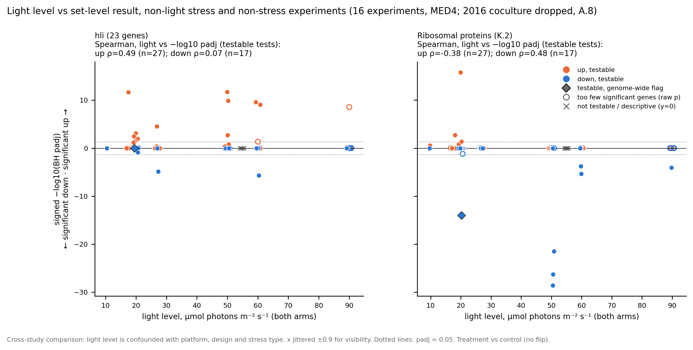
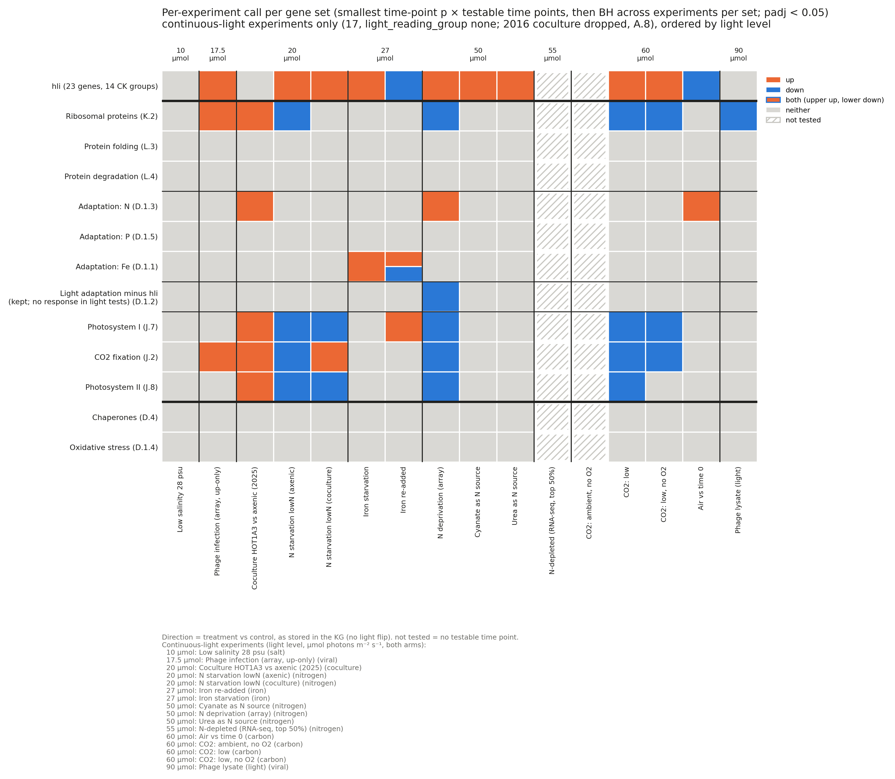
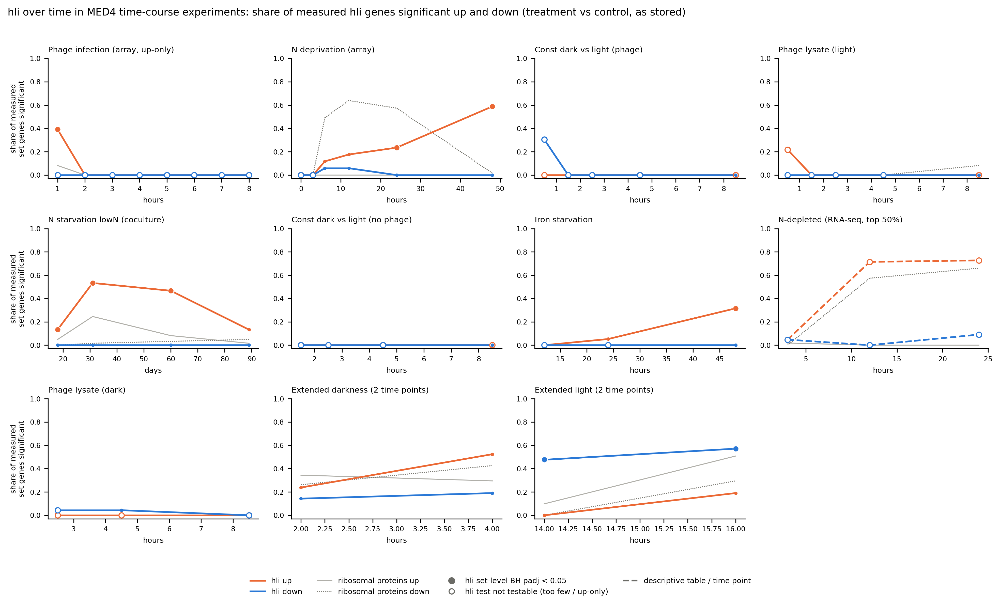
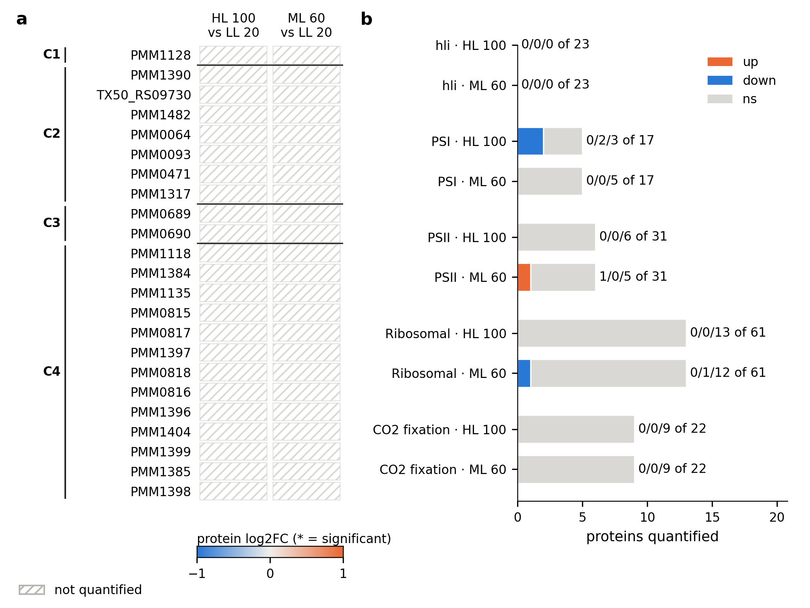

MED4, hli genes. Exploratory. Treatment vs control as stored in the KG (no flip); the same significance calls as the main analysis. Counts only; meanings are in the analysis notebook.
Decision A.8: Coculture HOT1A3 (2016) is dropped from every exploration below (unreliable table): families, light level (Spearman recomputed), continuous-light views, timing and clustering (D1–D5). Grey strips beside gene rows (D1, D2, D3 companions) and the grey swatch on D4 gene panels = ortholog-group breadth (exploratory) (A.9), from KG organism counts and clades of each gene's Cyanorak CK group.
Copy class: CK groups with ≥2 MED4 hli members are multi-copy (CK_00002025, 2026, 2168, 2332, 43616: 14 genes); the 9 other groups have one member each (single-copy, 9 genes). Net share = (up − down) / measured members. Hatched = no member measured. Descriptive time points are left out of the scope totals.
Static: A1 CK groups

Copy class × reading scope:
| family_type | family | family_size | scope_type | scope | n_experiment_timepoints | n_gene_observations | n_up | n_down | frac_up | frac_down |
|---|---|---|---|---|---|---|---|---|---|---|
| copy_class | multi_copy | 14 | light_reading_group | light_onset | 5 | 50 | 32 | 0 | 0.64 | 0 |
| copy_class | multi_copy | 14 | light_reading_group | constant_dark_vs_light | 9 | 126 | 0 | 7 | 0 | 0.05556 |
| copy_class | multi_copy | 14 | light_reading_group | schedule_extension | 4 | 48 | 8 | 24 | 0.1667 | 0.5 |
| copy_class | multi_copy | 14 | light_reading_group | electron_transport_DCMU | 1 | 10 | 0 | 3 | 0 | 0.3 |
| copy_class | multi_copy | 14 | light_reading_group | phage_dark | 3 | 42 | 0 | 0 | 0 | 0 |
| copy_class | multi_copy | 14 | nonlight_stress_type | carbon | 3 | 34 | 21 | 0 | 0.6176 | 0 |
| copy_class | multi_copy | 14 | nonlight_stress_type | iron | 3 | 30 | 7 | 0 | 0.2333 | 0 |
| copy_class | multi_copy | 14 | nonlight_stress_type | nitrogen | 11 | 84 | 32 | 0 | 0.381 | 0 |
| copy_class | multi_copy | 14 | nonlight_stress_type | phosphorus | 0 | 0 | 0 | 0 | ||
| copy_class | multi_copy | 14 | nonlight_stress_type | salt | 1 | 14 | 0 | 0 | 0 | 0 |
| copy_class | multi_copy | 14 | nonlight_stress_type | viral | 13 | 182 | 14 | 0 | 0.07692 | 0 |
| copy_class | multi_copy | 14 | timepoint_override | N stress, control side (down = higher under stress) | 1 | 6 | 0 | 5 | 0 | 0.8333 |
| copy_class | multi_copy | 14 | group | nonstress_possible_relief | 4 | 40 | 13 | 14 | 0.325 | 0.35 |
| copy_class | multi_copy | 14 | timepoint_override | coculture, both exponential | 1 | 6 | 2 | 0 | 0.3333 | 0 |
| copy_class | single_copy | 9 | light_reading_group | light_onset | 5 | 45 | 6 | 0 | 0.1333 | 0 |
| copy_class | single_copy | 9 | light_reading_group | constant_dark_vs_light | 9 | 81 | 0 | 0 | 0 | 0 |
| copy_class | single_copy | 9 | light_reading_group | schedule_extension | 4 | 36 | 12 | 5 | 0.3333 | 0.1389 |
| copy_class | single_copy | 9 | light_reading_group | electron_transport_DCMU | 1 | 9 | 0 | 0 | 0 | 0 |
| copy_class | single_copy | 9 | light_reading_group | phage_dark | 3 | 27 | 0 | 2 | 0 | 0.07407 |
| copy_class | single_copy | 9 | nonlight_stress_type | carbon | 3 | 27 | 1 | 2 | 0.03704 | 0.07407 |
| copy_class | single_copy | 9 | nonlight_stress_type | iron | 3 | 27 | 0 | 0 | 0 | 0 |
| copy_class | single_copy | 9 | nonlight_stress_type | nitrogen | 11 | 93 | 16 | 5 | 0.172 | 0.05376 |
| copy_class | single_copy | 9 | nonlight_stress_type | phosphorus | 0 | 0 | 0 | 0 | ||
| copy_class | single_copy | 9 | nonlight_stress_type | salt | 1 | 8 | 0 | 0 | 0 | 0 |
| copy_class | single_copy | 9 | nonlight_stress_type | viral | 13 | 117 | 0 | 0 | 0 | 0 |
| copy_class | single_copy | 9 | timepoint_override | N stress, control side (down = higher under stress) | 1 | 9 | 2 | 2 | 0.2222 | 0.2222 |
| copy_class | single_copy | 9 | group | nonstress_possible_relief | 4 | 34 | 3 | 0 | 0.08824 | 0 |
| copy_class | single_copy | 9 | timepoint_override | coculture, both exponential | 1 | 9 | 0 | 0 | 0 | 0 |
CK group × reading scope:
| family_type | family | family_size | scope_type | scope | n_experiment_timepoints | n_gene_observations | n_up | n_down | frac_up | frac_down |
|---|---|---|---|---|---|---|---|---|---|---|
| ck_group | CK_00000050 | 1 | light_reading_group | light_onset | 5 | 5 | 0 | 0 | 0 | 0 |
| ck_group | CK_00000050 | 1 | light_reading_group | constant_dark_vs_light | 9 | 9 | 0 | 0 | 0 | 0 |
| ck_group | CK_00000050 | 1 | light_reading_group | schedule_extension | 4 | 4 | 3 | 0 | 0.75 | 0 |
| ck_group | CK_00000050 | 1 | light_reading_group | electron_transport_DCMU | 1 | 1 | 0 | 0 | 0 | 0 |
| ck_group | CK_00000050 | 1 | light_reading_group | phage_dark | 3 | 3 | 0 | 0 | 0 | 0 |
| ck_group | CK_00000050 | 1 | nonlight_stress_type | carbon | 3 | 3 | 0 | 0 | 0 | 0 |
| ck_group | CK_00000050 | 1 | nonlight_stress_type | iron | 3 | 3 | 0 | 0 | 0 | 0 |
| ck_group | CK_00000050 | 1 | nonlight_stress_type | nitrogen | 11 | 11 | 1 | 0 | 0.09091 | 0 |
| ck_group | CK_00000050 | 1 | nonlight_stress_type | phosphorus | 0 | 0 | 0 | 0 | ||
| ck_group | CK_00000050 | 1 | nonlight_stress_type | salt | 1 | 1 | 0 | 0 | 0 | 0 |
| ck_group | CK_00000050 | 1 | nonlight_stress_type | viral | 13 | 13 | 0 | 0 | 0 | 0 |
| ck_group | CK_00000050 | 1 | timepoint_override | N stress, control side (down = higher under stress) | 1 | 1 | 0 | 0 | 0 | 0 |
| ck_group | CK_00000050 | 1 | group | nonstress_possible_relief | 4 | 4 | 0 | 0 | 0 | 0 |
| ck_group | CK_00000050 | 1 | timepoint_override | coculture, both exponential | 1 | 1 | 0 | 0 | 0 | 0 |
| ck_group | CK_00001058 | 1 | light_reading_group | light_onset | 5 | 5 | 0 | 0 | 0 | 0 |
| ck_group | CK_00001058 | 1 | light_reading_group | constant_dark_vs_light | 9 | 9 | 0 | 0 | 0 | 0 |
| ck_group | CK_00001058 | 1 | light_reading_group | schedule_extension | 4 | 4 | 0 | 2 | 0 | 0.5 |
| ck_group | CK_00001058 | 1 | light_reading_group | electron_transport_DCMU | 1 | 1 | 0 | 0 | 0 | 0 |
| ck_group | CK_00001058 | 1 | light_reading_group | phage_dark | 3 | 3 | 0 | 0 | 0 | 0 |
| ck_group | CK_00001058 | 1 | nonlight_stress_type | carbon | 3 | 3 | 0 | 2 | 0 | 0.6667 |
| ck_group | CK_00001058 | 1 | nonlight_stress_type | iron | 3 | 3 | 0 | 0 | 0 | 0 |
| ck_group | CK_00001058 | 1 | nonlight_stress_type | nitrogen | 11 | 11 | 0 | 3 | 0 | 0.2727 |
| ck_group | CK_00001058 | 1 | nonlight_stress_type | phosphorus | 0 | 0 | 0 | 0 | ||
| ck_group | CK_00001058 | 1 | nonlight_stress_type | salt | 1 | 1 | 0 | 0 | 0 | 0 |
| ck_group | CK_00001058 | 1 | nonlight_stress_type | viral | 13 | 13 | 0 | 0 | 0 | 0 |
| ck_group | CK_00001058 | 1 | timepoint_override | N stress, control side (down = higher under stress) | 1 | 1 | 0 | 0 | 0 | 0 |
| ck_group | CK_00001058 | 1 | group | nonstress_possible_relief | 4 | 4 | 0 | 0 | 0 | 0 |
| ck_group | CK_00001058 | 1 | timepoint_override | coculture, both exponential | 1 | 1 | 0 | 0 | 0 | 0 |
| ck_group | CK_00001313 | 1 | light_reading_group | light_onset | 5 | 5 | 0 | 0 | 0 | 0 |
| ck_group | CK_00001313 | 1 | light_reading_group | constant_dark_vs_light | 9 | 9 | 0 | 0 | 0 | 0 |
| ck_group | CK_00001313 | 1 | light_reading_group | schedule_extension | 4 | 4 | 3 | 0 | 0.75 | 0 |
| ck_group | CK_00001313 | 1 | light_reading_group | electron_transport_DCMU | 1 | 1 | 0 | 0 | 0 | 0 |
| ck_group | CK_00001313 | 1 | light_reading_group | phage_dark | 3 | 3 | 0 | 0 | 0 | 0 |
| ck_group | CK_00001313 | 1 | nonlight_stress_type | carbon | 3 | 3 | 0 | 0 | 0 | 0 |
| ck_group | CK_00001313 | 1 | nonlight_stress_type | iron | 3 | 3 | 0 | 0 | 0 | 0 |
| ck_group | CK_00001313 | 1 | nonlight_stress_type | nitrogen | 11 | 11 | 0 | 1 | 0 | 0.09091 |
| ck_group | CK_00001313 | 1 | nonlight_stress_type | phosphorus | 0 | 0 | 0 | 0 | ||
| ck_group | CK_00001313 | 1 | nonlight_stress_type | salt | 1 | 1 | 0 | 0 | 0 | 0 |
| ck_group | CK_00001313 | 1 | nonlight_stress_type | viral | 13 | 13 | 0 | 0 | 0 | 0 |
| ck_group | CK_00001313 | 1 | timepoint_override | N stress, control side (down = higher under stress) | 1 | 1 | 1 | 0 | 1 | 0 |
| ck_group | CK_00001313 | 1 | group | nonstress_possible_relief | 4 | 4 | 0 | 0 | 0 | 0 |
| ck_group | CK_00001313 | 1 | timepoint_override | coculture, both exponential | 1 | 1 | 0 | 0 | 0 | 0 |
| ck_group | CK_00001414 | 1 | light_reading_group | light_onset | 5 | 5 | 0 | 0 | 0 | 0 |
| ck_group | CK_00001414 | 1 | light_reading_group | constant_dark_vs_light | 9 | 9 | 0 | 0 | 0 | 0 |
| ck_group | CK_00001414 | 1 | light_reading_group | schedule_extension | 4 | 4 | 1 | 0 | 0.25 | 0 |
| ck_group | CK_00001414 | 1 | light_reading_group | electron_transport_DCMU | 1 | 1 | 0 | 0 | 0 | 0 |
| ck_group | CK_00001414 | 1 | light_reading_group | phage_dark | 3 | 3 | 0 | 0 | 0 | 0 |
| ck_group | CK_00001414 | 1 | nonlight_stress_type | carbon | 3 | 3 | 0 | 0 | 0 | 0 |
| ck_group | CK_00001414 | 1 | nonlight_stress_type | iron | 3 | 3 | 0 | 0 | 0 | 0 |
| ck_group | CK_00001414 | 1 | nonlight_stress_type | nitrogen | 11 | 11 | 0 | 1 | 0 | 0.09091 |
| ck_group | CK_00001414 | 1 | nonlight_stress_type | phosphorus | 0 | 0 | 0 | 0 | ||
| ck_group | CK_00001414 | 1 | nonlight_stress_type | salt | 1 | 1 | 0 | 0 | 0 | 0 |
| ck_group | CK_00001414 | 1 | nonlight_stress_type | viral | 13 | 13 | 0 | 0 | 0 | 0 |
| ck_group | CK_00001414 | 1 | timepoint_override | N stress, control side (down = higher under stress) | 1 | 1 | 1 | 0 | 1 | 0 |
| ck_group | CK_00001414 | 1 | group | nonstress_possible_relief | 4 | 4 | 0 | 0 | 0 | 0 |
| ck_group | CK_00001414 | 1 | timepoint_override | coculture, both exponential | 1 | 1 | 0 | 0 | 0 | 0 |
| ck_group | CK_00002025 | 3 | light_reading_group | light_onset | 5 | 15 | 8 | 0 | 0.5333 | 0 |
| ck_group | CK_00002025 | 3 | light_reading_group | constant_dark_vs_light | 9 | 27 | 0 | 2 | 0 | 0.07407 |
| ck_group | CK_00002025 | 3 | light_reading_group | schedule_extension | 4 | 12 | 1 | 8 | 0.08333 | 0.6667 |
| ck_group | CK_00002025 | 3 | light_reading_group | electron_transport_DCMU | 1 | 3 | 0 | 0 | 0 | 0 |
| ck_group | CK_00002025 | 3 | light_reading_group | phage_dark | 3 | 9 | 0 | 0 | 0 | 0 |
| ck_group | CK_00002025 | 3 | nonlight_stress_type | carbon | 3 | 9 | 6 | 0 | 0.6667 | 0 |
| ck_group | CK_00002025 | 3 | nonlight_stress_type | iron | 3 | 9 | 1 | 0 | 0.1111 | 0 |
| ck_group | CK_00002025 | 3 | nonlight_stress_type | nitrogen | 11 | 33 | 15 | 0 | 0.4545 | 0 |
| ck_group | CK_00002025 | 3 | nonlight_stress_type | phosphorus | 0 | 0 | 0 | 0 | ||
| ck_group | CK_00002025 | 3 | nonlight_stress_type | salt | 1 | 3 | 0 | 0 | 0 | 0 |
| ck_group | CK_00002025 | 3 | nonlight_stress_type | viral | 13 | 39 | 2 | 0 | 0.05128 | 0 |
| ck_group | CK_00002025 | 3 | timepoint_override | N stress, control side (down = higher under stress) | 1 | 3 | 0 | 3 | 0 | 1 |
| ck_group | CK_00002025 | 3 | group | nonstress_possible_relief | 4 | 12 | 4 | 3 | 0.3333 | 0.25 |
| ck_group | CK_00002025 | 3 | timepoint_override | coculture, both exponential | 1 | 3 | 2 | 0 | 0.6667 | 0 |
| ck_group | CK_00002026 | 3 | light_reading_group | light_onset | 5 | 10 | 8 | 0 | 0.8 | 0 |
| ck_group | CK_00002026 | 3 | light_reading_group | constant_dark_vs_light | 9 | 27 | 0 | 3 | 0 | 0.1111 |
| ck_group | CK_00002026 | 3 | light_reading_group | schedule_extension | 4 | 12 | 1 | 5 | 0.08333 | 0.4167 |
| ck_group | CK_00002026 | 3 | light_reading_group | electron_transport_DCMU | 1 | 2 | 0 | 0 | 0 | 0 |
| ck_group | CK_00002026 | 3 | light_reading_group | phage_dark | 3 | 9 | 0 | 0 | 0 | 0 |
| ck_group | CK_00002026 | 3 | nonlight_stress_type | carbon | 3 | 7 | 5 | 0 | 0.7143 | 0 |
| ck_group | CK_00002026 | 3 | nonlight_stress_type | iron | 3 | 6 | 3 | 0 | 0.5 | 0 |
| ck_group | CK_00002026 | 3 | nonlight_stress_type | nitrogen | 11 | 17 | 6 | 0 | 0.3529 | 0 |
| ck_group | CK_00002026 | 3 | nonlight_stress_type | phosphorus | 0 | 0 | 0 | 0 | ||
| ck_group | CK_00002026 | 3 | nonlight_stress_type | salt | 1 | 3 | 0 | 0 | 0 | 0 |
| ck_group | CK_00002026 | 3 | nonlight_stress_type | viral | 13 | 39 | 5 | 0 | 0.1282 | 0 |
| ck_group | CK_00002026 | 3 | timepoint_override | N stress, control side (down = higher under stress) | 1 | 1 | 0 | 1 | 0 | 1 |
| ck_group | CK_00002026 | 3 | group | nonstress_possible_relief | 4 | 8 | 4 | 4 | 0.5 | 0.5 |
| ck_group | CK_00002026 | 3 | timepoint_override | coculture, both exponential | 1 | 1 | 0 | 0 | 0 | 0 |
| ck_group | CK_00002103 | 1 | light_reading_group | light_onset | 5 | 5 | 1 | 0 | 0.2 | 0 |
| ck_group | CK_00002103 | 1 | light_reading_group | constant_dark_vs_light | 9 | 9 | 0 | 0 | 0 | 0 |
| ck_group | CK_00002103 | 1 | light_reading_group | schedule_extension | 4 | 4 | 1 | 0 | 0.25 | 0 |
| ck_group | CK_00002103 | 1 | light_reading_group | electron_transport_DCMU | 1 | 1 | 0 | 0 | 0 | 0 |
| ck_group | CK_00002103 | 1 | light_reading_group | phage_dark | 3 | 3 | 0 | 0 | 0 | 0 |
| ck_group | CK_00002103 | 1 | nonlight_stress_type | carbon | 3 | 3 | 0 | 0 | 0 | 0 |
| ck_group | CK_00002103 | 1 | nonlight_stress_type | iron | 3 | 3 | 0 | 0 | 0 | 0 |
| ck_group | CK_00002103 | 1 | nonlight_stress_type | nitrogen | 11 | 5 | 1 | 0 | 0.2 | 0 |
| ck_group | CK_00002103 | 1 | nonlight_stress_type | phosphorus | 0 | 0 | 0 | 0 | ||
| ck_group | CK_00002103 | 1 | nonlight_stress_type | salt | 1 | 0 | 0 | 0 | ||
| ck_group | CK_00002103 | 1 | nonlight_stress_type | viral | 13 | 13 | 0 | 0 | 0 | 0 |
| ck_group | CK_00002103 | 1 | timepoint_override | N stress, control side (down = higher under stress) | 1 | 1 | 0 | 1 | 0 | 1 |
| ck_group | CK_00002103 | 1 | group | nonstress_possible_relief | 4 | 2 | 0 | 0 | 0 | 0 |
| ck_group | CK_00002103 | 1 | timepoint_override | coculture, both exponential | 1 | 1 | 0 | 0 | 0 | 0 |
| ck_group | CK_00002168 | 4 | light_reading_group | light_onset | 5 | 15 | 8 | 0 | 0.5333 | 0 |
| ck_group | CK_00002168 | 4 | light_reading_group | constant_dark_vs_light | 9 | 36 | 0 | 1 | 0 | 0.02778 |
| ck_group | CK_00002168 | 4 | light_reading_group | schedule_extension | 4 | 16 | 6 | 7 | 0.375 | 0.4375 |
| ck_group | CK_00002168 | 4 | light_reading_group | electron_transport_DCMU | 1 | 3 | 0 | 1 | 0 | 0.3333 |
| ck_group | CK_00002168 | 4 | light_reading_group | phage_dark | 3 | 12 | 0 | 0 | 0 | 0 |
| ck_group | CK_00002168 | 4 | nonlight_stress_type | carbon | 3 | 10 | 6 | 0 | 0.6 | 0 |
| ck_group | CK_00002168 | 4 | nonlight_stress_type | iron | 3 | 9 | 2 | 0 | 0.2222 | 0 |
| ck_group | CK_00002168 | 4 | nonlight_stress_type | nitrogen | 11 | 22 | 9 | 0 | 0.4091 | 0 |
| ck_group | CK_00002168 | 4 | nonlight_stress_type | phosphorus | 0 | 0 | 0 | 0 | ||
| ck_group | CK_00002168 | 4 | nonlight_stress_type | salt | 1 | 4 | 0 | 0 | 0 | 0 |
| ck_group | CK_00002168 | 4 | nonlight_stress_type | viral | 13 | 52 | 3 | 0 | 0.05769 | 0 |
| ck_group | CK_00002168 | 4 | timepoint_override | N stress, control side (down = higher under stress) | 1 | 2 | 0 | 1 | 0 | 0.5 |
| ck_group | CK_00002168 | 4 | group | nonstress_possible_relief | 4 | 11 | 2 | 4 | 0.1818 | 0.3636 |
| ck_group | CK_00002168 | 4 | timepoint_override | coculture, both exponential | 1 | 2 | 0 | 0 | 0 | 0 |
| ck_group | CK_00002332 | 2 | light_reading_group | light_onset | 5 | 5 | 4 | 0 | 0.8 | 0 |
| ck_group | CK_00002332 | 2 | light_reading_group | constant_dark_vs_light | 9 | 18 | 0 | 1 | 0 | 0.05556 |
| ck_group | CK_00002332 | 2 | light_reading_group | schedule_extension | 4 | 0 | 0 | 0 | ||
| ck_group | CK_00002332 | 2 | light_reading_group | electron_transport_DCMU | 1 | 1 | 0 | 1 | 0 | 1 |
| ck_group | CK_00002332 | 2 | light_reading_group | phage_dark | 3 | 6 | 0 | 0 | 0 | 0 |
| ck_group | CK_00002332 | 2 | nonlight_stress_type | carbon | 3 | 4 | 2 | 0 | 0.5 | 0 |
| ck_group | CK_00002332 | 2 | nonlight_stress_type | iron | 3 | 3 | 0 | 0 | 0 | 0 |
| ck_group | CK_00002332 | 2 | nonlight_stress_type | nitrogen | 11 | 6 | 1 | 0 | 0.1667 | 0 |
| ck_group | CK_00002332 | 2 | nonlight_stress_type | phosphorus | 0 | 0 | 0 | 0 | ||
| ck_group | CK_00002332 | 2 | nonlight_stress_type | salt | 1 | 2 | 0 | 0 | 0 | 0 |
| ck_group | CK_00002332 | 2 | nonlight_stress_type | viral | 13 | 26 | 2 | 0 | 0.07692 | 0 |
| ck_group | CK_00002332 | 2 | timepoint_override | N stress, control side (down = higher under stress) | 1 | 0 | 0 | 0 | ||
| ck_group | CK_00002332 | 2 | group | nonstress_possible_relief | 4 | 5 | 1 | 1 | 0.2 | 0.2 |
| ck_group | CK_00002332 | 2 | timepoint_override | coculture, both exponential | 1 | 0 | 0 | 0 | ||
| ck_group | CK_00002661 | 1 | light_reading_group | light_onset | 5 | 5 | 0 | 0 | 0 | 0 |
| ck_group | CK_00002661 | 1 | light_reading_group | constant_dark_vs_light | 9 | 9 | 0 | 0 | 0 | 0 |
| ck_group | CK_00002661 | 1 | light_reading_group | schedule_extension | 4 | 4 | 1 | 1 | 0.25 | 0.25 |
| ck_group | CK_00002661 | 1 | light_reading_group | electron_transport_DCMU | 1 | 1 | 0 | 0 | 0 | 0 |
| ck_group | CK_00002661 | 1 | light_reading_group | phage_dark | 3 | 3 | 0 | 0 | 0 | 0 |
| ck_group | CK_00002661 | 1 | nonlight_stress_type | carbon | 3 | 3 | 0 | 0 | 0 | 0 |
| ck_group | CK_00002661 | 1 | nonlight_stress_type | iron | 3 | 3 | 0 | 0 | 0 | 0 |
| ck_group | CK_00002661 | 1 | nonlight_stress_type | nitrogen | 11 | 11 | 0 | 0 | 0 | 0 |
| ck_group | CK_00002661 | 1 | nonlight_stress_type | phosphorus | 0 | 0 | 0 | 0 | ||
| ck_group | CK_00002661 | 1 | nonlight_stress_type | salt | 1 | 1 | 0 | 0 | 0 | 0 |
| ck_group | CK_00002661 | 1 | nonlight_stress_type | viral | 13 | 13 | 0 | 0 | 0 | 0 |
| ck_group | CK_00002661 | 1 | timepoint_override | N stress, control side (down = higher under stress) | 1 | 1 | 0 | 0 | 0 | 0 |
| ck_group | CK_00002661 | 1 | group | nonstress_possible_relief | 4 | 4 | 1 | 0 | 0.25 | 0 |
| ck_group | CK_00002661 | 1 | timepoint_override | coculture, both exponential | 1 | 1 | 0 | 0 | 0 | 0 |
| ck_group | CK_00003421 | 1 | light_reading_group | light_onset | 5 | 5 | 3 | 0 | 0.6 | 0 |
| ck_group | CK_00003421 | 1 | light_reading_group | constant_dark_vs_light | 9 | 9 | 0 | 0 | 0 | 0 |
| ck_group | CK_00003421 | 1 | light_reading_group | schedule_extension | 4 | 4 | 1 | 1 | 0.25 | 0.25 |
| ck_group | CK_00003421 | 1 | light_reading_group | electron_transport_DCMU | 1 | 1 | 0 | 0 | 0 | 0 |
| ck_group | CK_00003421 | 1 | light_reading_group | phage_dark | 3 | 3 | 0 | 2 | 0 | 0.6667 |
| ck_group | CK_00003421 | 1 | nonlight_stress_type | carbon | 3 | 3 | 1 | 0 | 0.3333 | 0 |
| ck_group | CK_00003421 | 1 | nonlight_stress_type | iron | 3 | 3 | 0 | 0 | 0 | 0 |
| ck_group | CK_00003421 | 1 | nonlight_stress_type | nitrogen | 11 | 11 | 5 | 0 | 0.4545 | 0 |
| ck_group | CK_00003421 | 1 | nonlight_stress_type | phosphorus | 0 | 0 | 0 | 0 | ||
| ck_group | CK_00003421 | 1 | nonlight_stress_type | salt | 1 | 1 | 0 | 0 | 0 | 0 |
| ck_group | CK_00003421 | 1 | nonlight_stress_type | viral | 13 | 13 | 0 | 0 | 0 | 0 |
| ck_group | CK_00003421 | 1 | timepoint_override | N stress, control side (down = higher under stress) | 1 | 1 | 0 | 1 | 0 | 1 |
| ck_group | CK_00003421 | 1 | group | nonstress_possible_relief | 4 | 4 | 0 | 0 | 0 | 0 |
| ck_group | CK_00003421 | 1 | timepoint_override | coculture, both exponential | 1 | 1 | 0 | 0 | 0 | 0 |
| ck_group | CK_00003510 | 1 | light_reading_group | light_onset | 5 | 5 | 2 | 0 | 0.4 | 0 |
| ck_group | CK_00003510 | 1 | light_reading_group | constant_dark_vs_light | 9 | 9 | 0 | 0 | 0 | 0 |
| ck_group | CK_00003510 | 1 | light_reading_group | schedule_extension | 4 | 4 | 0 | 0 | 0 | 0 |
| ck_group | CK_00003510 | 1 | light_reading_group | electron_transport_DCMU | 1 | 1 | 0 | 0 | 0 | 0 |
| ck_group | CK_00003510 | 1 | light_reading_group | phage_dark | 3 | 3 | 0 | 0 | 0 | 0 |
| ck_group | CK_00003510 | 1 | nonlight_stress_type | carbon | 3 | 3 | 0 | 0 | 0 | 0 |
| ck_group | CK_00003510 | 1 | nonlight_stress_type | iron | 3 | 3 | 0 | 0 | 0 | 0 |
| ck_group | CK_00003510 | 1 | nonlight_stress_type | nitrogen | 11 | 11 | 4 | 0 | 0.3636 | 0 |
| ck_group | CK_00003510 | 1 | nonlight_stress_type | phosphorus | 0 | 0 | 0 | 0 | ||
| ck_group | CK_00003510 | 1 | nonlight_stress_type | salt | 1 | 1 | 0 | 0 | 0 | 0 |
| ck_group | CK_00003510 | 1 | nonlight_stress_type | viral | 13 | 13 | 0 | 0 | 0 | 0 |
| ck_group | CK_00003510 | 1 | timepoint_override | N stress, control side (down = higher under stress) | 1 | 1 | 0 | 0 | 0 | 0 |
| ck_group | CK_00003510 | 1 | group | nonstress_possible_relief | 4 | 4 | 0 | 0 | 0 | 0 |
| ck_group | CK_00003510 | 1 | timepoint_override | coculture, both exponential | 1 | 1 | 0 | 0 | 0 | 0 |
| ck_group | CK_00003573 | 1 | light_reading_group | light_onset | 5 | 5 | 0 | 0 | 0 | 0 |
| ck_group | CK_00003573 | 1 | light_reading_group | constant_dark_vs_light | 9 | 9 | 0 | 0 | 0 | 0 |
| ck_group | CK_00003573 | 1 | light_reading_group | schedule_extension | 4 | 4 | 2 | 1 | 0.5 | 0.25 |
| ck_group | CK_00003573 | 1 | light_reading_group | electron_transport_DCMU | 1 | 1 | 0 | 0 | 0 | 0 |
| ck_group | CK_00003573 | 1 | light_reading_group | phage_dark | 3 | 3 | 0 | 0 | 0 | 0 |
| ck_group | CK_00003573 | 1 | nonlight_stress_type | carbon | 3 | 3 | 0 | 0 | 0 | 0 |
| ck_group | CK_00003573 | 1 | nonlight_stress_type | iron | 3 | 3 | 0 | 0 | 0 | 0 |
| ck_group | CK_00003573 | 1 | nonlight_stress_type | nitrogen | 11 | 11 | 5 | 0 | 0.4545 | 0 |
| ck_group | CK_00003573 | 1 | nonlight_stress_type | phosphorus | 0 | 0 | 0 | 0 | ||
| ck_group | CK_00003573 | 1 | nonlight_stress_type | salt | 1 | 1 | 0 | 0 | 0 | 0 |
| ck_group | CK_00003573 | 1 | nonlight_stress_type | viral | 13 | 13 | 0 | 0 | 0 | 0 |
| ck_group | CK_00003573 | 1 | timepoint_override | N stress, control side (down = higher under stress) | 1 | 1 | 0 | 0 | 0 | 0 |
| ck_group | CK_00003573 | 1 | group | nonstress_possible_relief | 4 | 4 | 2 | 0 | 0.5 | 0 |
| ck_group | CK_00003573 | 1 | timepoint_override | coculture, both exponential | 1 | 1 | 0 | 0 | 0 | 0 |
| ck_group | CK_00043616 | 2 | light_reading_group | light_onset | 5 | 5 | 4 | 0 | 0.8 | 0 |
| ck_group | CK_00043616 | 2 | light_reading_group | constant_dark_vs_light | 9 | 18 | 0 | 0 | 0 | 0 |
| ck_group | CK_00043616 | 2 | light_reading_group | schedule_extension | 4 | 8 | 0 | 4 | 0 | 0.5 |
| ck_group | CK_00043616 | 2 | light_reading_group | electron_transport_DCMU | 1 | 1 | 0 | 1 | 0 | 1 |
| ck_group | CK_00043616 | 2 | light_reading_group | phage_dark | 3 | 6 | 0 | 0 | 0 | 0 |
| ck_group | CK_00043616 | 2 | nonlight_stress_type | carbon | 3 | 4 | 2 | 0 | 0.5 | 0 |
| ck_group | CK_00043616 | 2 | nonlight_stress_type | iron | 3 | 3 | 1 | 0 | 0.3333 | 0 |
| ck_group | CK_00043616 | 2 | nonlight_stress_type | nitrogen | 11 | 6 | 1 | 0 | 0.1667 | 0 |
| ck_group | CK_00043616 | 2 | nonlight_stress_type | phosphorus | 0 | 0 | 0 | 0 | ||
| ck_group | CK_00043616 | 2 | nonlight_stress_type | salt | 1 | 2 | 0 | 0 | 0 | 0 |
| ck_group | CK_00043616 | 2 | nonlight_stress_type | viral | 13 | 26 | 2 | 0 | 0.07692 | 0 |
| ck_group | CK_00043616 | 2 | timepoint_override | N stress, control side (down = higher under stress) | 1 | 0 | 0 | 0 | ||
| ck_group | CK_00043616 | 2 | group | nonstress_possible_relief | 4 | 4 | 2 | 2 | 0.5 | 0.5 |
| ck_group | CK_00043616 | 2 | timepoint_override | coculture, both exponential | 1 | 0 | 0 | 0 |
Per experiment × time point × family:
| family_type | family | copy_class | family_size | label | timepoint | test_type | n_measured | n_up | n_down | frac_up | frac_down | net_share | experiment_id |
|---|---|---|---|---|---|---|---|---|---|---|---|---|---|
| ck_group | CK_00000050 | single_copy | 1 | Extended darkness | 4h | sound | 1 | 1 | 0 | 1 | 0 | 1 | 10.64898/2026.04.15.718746_extended_darkness_med4 |
| ck_group | CK_00001058 | single_copy | 1 | Extended darkness | 4h | sound | 1 | 0 | 1 | 0 | 1 | -1 | 10.64898/2026.04.15.718746_extended_darkness_med4 |
| ck_group | CK_00001313 | single_copy | 1 | Extended darkness | 4h | sound | 1 | 1 | 0 | 1 | 0 | 1 | 10.64898/2026.04.15.718746_extended_darkness_med4 |
| ck_group | CK_00001414 | single_copy | 1 | Extended darkness | 4h | sound | 1 | 0 | 0 | 0 | 0 | 0 | 10.64898/2026.04.15.718746_extended_darkness_med4 |
| ck_group | CK_00002025 | multi_copy | 3 | Extended darkness | 4h | sound | 3 | 1 | 2 | 0.3333 | 0.6667 | -0.3333 | 10.64898/2026.04.15.718746_extended_darkness_med4 |
| ck_group | CK_00002026 | multi_copy | 3 | Extended darkness | 4h | sound | 3 | 1 | 0 | 0.3333 | 0 | 0.3333 | 10.64898/2026.04.15.718746_extended_darkness_med4 |
| ck_group | CK_00002103 | single_copy | 1 | Extended darkness | 4h | sound | 1 | 1 | 0 | 1 | 0 | 1 | 10.64898/2026.04.15.718746_extended_darkness_med4 |
| ck_group | CK_00002168 | multi_copy | 4 | Extended darkness | 4h | sound | 4 | 4 | 0 | 1 | 0 | 1 | 10.64898/2026.04.15.718746_extended_darkness_med4 |
| ck_group | CK_00002332 | multi_copy | 2 | Extended darkness | 4h | sound | 0 | 0 | 0 | 10.64898/2026.04.15.718746_extended_darkness_med4 | |||
| ck_group | CK_00002661 | single_copy | 1 | Extended darkness | 4h | sound | 1 | 0 | 1 | 0 | 1 | -1 | 10.64898/2026.04.15.718746_extended_darkness_med4 |
| ck_group | CK_00003421 | single_copy | 1 | Extended darkness | 4h | sound | 1 | 1 | 0 | 1 | 0 | 1 | 10.64898/2026.04.15.718746_extended_darkness_med4 |
| ck_group | CK_00003510 | single_copy | 1 | Extended darkness | 4h | sound | 1 | 0 | 0 | 0 | 0 | 0 | 10.64898/2026.04.15.718746_extended_darkness_med4 |
| ck_group | CK_00003573 | single_copy | 1 | Extended darkness | 4h | sound | 1 | 1 | 0 | 1 | 0 | 1 | 10.64898/2026.04.15.718746_extended_darkness_med4 |
| ck_group | CK_00043616 | multi_copy | 2 | Extended darkness | 4h | sound | 2 | 0 | 0 | 0 | 0 | 0 | 10.64898/2026.04.15.718746_extended_darkness_med4 |
| copy_class | multi_copy | multi_copy | 14 | Extended darkness | 4h | sound | 12 | 6 | 2 | 0.5 | 0.1667 | 0.3333 | 10.64898/2026.04.15.718746_extended_darkness_med4 |
| copy_class | single_copy | single_copy | 9 | Extended darkness | 4h | sound | 9 | 5 | 2 | 0.5556 | 0.2222 | 0.3333 | 10.64898/2026.04.15.718746_extended_darkness_med4 |
| ck_group | CK_00000050 | single_copy | 1 | Extended darkness | 2h | sound | 1 | 1 | 0 | 1 | 0 | 1 | 10.64898/2026.04.15.718746_extended_darkness_med4 |
| ck_group | CK_00001058 | single_copy | 1 | Extended darkness | 2h | sound | 1 | 0 | 1 | 0 | 1 | -1 | 10.64898/2026.04.15.718746_extended_darkness_med4 |
| ck_group | CK_00001313 | single_copy | 1 | Extended darkness | 2h | sound | 1 | 1 | 0 | 1 | 0 | 1 | 10.64898/2026.04.15.718746_extended_darkness_med4 |
| ck_group | CK_00001414 | single_copy | 1 | Extended darkness | 2h | sound | 1 | 0 | 0 | 0 | 0 | 0 | 10.64898/2026.04.15.718746_extended_darkness_med4 |
| ck_group | CK_00002025 | multi_copy | 3 | Extended darkness | 2h | sound | 3 | 0 | 2 | 0 | 0.6667 | -0.6667 | 10.64898/2026.04.15.718746_extended_darkness_med4 |
| ck_group | CK_00002026 | multi_copy | 3 | Extended darkness | 2h | sound | 3 | 0 | 0 | 0 | 0 | 0 | 10.64898/2026.04.15.718746_extended_darkness_med4 |
| ck_group | CK_00002103 | single_copy | 1 | Extended darkness | 2h | sound | 1 | 0 | 0 | 0 | 0 | 0 | 10.64898/2026.04.15.718746_extended_darkness_med4 |
| ck_group | CK_00002168 | multi_copy | 4 | Extended darkness | 2h | sound | 4 | 2 | 0 | 0.5 | 0 | 0.5 | 10.64898/2026.04.15.718746_extended_darkness_med4 |
| ck_group | CK_00002332 | multi_copy | 2 | Extended darkness | 2h | sound | 0 | 0 | 0 | 10.64898/2026.04.15.718746_extended_darkness_med4 | |||
| ck_group | CK_00002661 | single_copy | 1 | Extended darkness | 2h | sound | 1 | 0 | 0 | 0 | 0 | 0 | 10.64898/2026.04.15.718746_extended_darkness_med4 |
| ck_group | CK_00003421 | single_copy | 1 | Extended darkness | 2h | sound | 1 | 0 | 0 | 0 | 0 | 0 | 10.64898/2026.04.15.718746_extended_darkness_med4 |
| ck_group | CK_00003510 | single_copy | 1 | Extended darkness | 2h | sound | 1 | 0 | 0 | 0 | 0 | 0 | 10.64898/2026.04.15.718746_extended_darkness_med4 |
| ck_group | CK_00003573 | single_copy | 1 | Extended darkness | 2h | sound | 1 | 1 | 0 | 1 | 0 | 1 | 10.64898/2026.04.15.718746_extended_darkness_med4 |
| ck_group | CK_00043616 | multi_copy | 2 | Extended darkness | 2h | sound | 2 | 0 | 0 | 0 | 0 | 0 | 10.64898/2026.04.15.718746_extended_darkness_med4 |
| copy_class | multi_copy | multi_copy | 14 | Extended darkness | 2h | sound | 12 | 2 | 2 | 0.1667 | 0.1667 | 0 | 10.64898/2026.04.15.718746_extended_darkness_med4 |
| copy_class | single_copy | single_copy | 9 | Extended darkness | 2h | sound | 9 | 3 | 1 | 0.3333 | 0.1111 | 0.2222 | 10.64898/2026.04.15.718746_extended_darkness_med4 |
| ck_group | CK_00000050 | single_copy | 1 | Blue 13 vs dark | 45 min | approximate | 1 | 0 | 0 | 0 | 0 | 0 | 10.1128/JB.01097-06_light_stress_blue_light_13_umol_med4_microarray |
| ck_group | CK_00001058 | single_copy | 1 | Blue 13 vs dark | 45 min | approximate | 1 | 0 | 0 | 0 | 0 | 0 | 10.1128/JB.01097-06_light_stress_blue_light_13_umol_med4_microarray |
| ck_group | CK_00001313 | single_copy | 1 | Blue 13 vs dark | 45 min | approximate | 1 | 0 | 0 | 0 | 0 | 0 | 10.1128/JB.01097-06_light_stress_blue_light_13_umol_med4_microarray |
| ck_group | CK_00001414 | single_copy | 1 | Blue 13 vs dark | 45 min | approximate | 1 | 0 | 0 | 0 | 0 | 0 | 10.1128/JB.01097-06_light_stress_blue_light_13_umol_med4_microarray |
| ck_group | CK_00002025 | multi_copy | 3 | Blue 13 vs dark | 45 min | approximate | 3 | 2 | 0 | 0.6667 | 0 | 0.6667 | 10.1128/JB.01097-06_light_stress_blue_light_13_umol_med4_microarray |
| ck_group | CK_00002026 | multi_copy | 3 | Blue 13 vs dark | 45 min | approximate | 2 | 2 | 0 | 1 | 0 | 1 | 10.1128/JB.01097-06_light_stress_blue_light_13_umol_med4_microarray |
| ck_group | CK_00002103 | single_copy | 1 | Blue 13 vs dark | 45 min | approximate | 1 | 0 | 0 | 0 | 0 | 0 | 10.1128/JB.01097-06_light_stress_blue_light_13_umol_med4_microarray |
| ck_group | CK_00002168 | multi_copy | 4 | Blue 13 vs dark | 45 min | approximate | 3 | 2 | 0 | 0.6667 | 0 | 0.6667 | 10.1128/JB.01097-06_light_stress_blue_light_13_umol_med4_microarray |
| ck_group | CK_00002332 | multi_copy | 2 | Blue 13 vs dark | 45 min | approximate | 1 | 1 | 0 | 1 | 0 | 1 | 10.1128/JB.01097-06_light_stress_blue_light_13_umol_med4_microarray |
| ck_group | CK_00002661 | single_copy | 1 | Blue 13 vs dark | 45 min | approximate | 1 | 0 | 0 | 0 | 0 | 0 | 10.1128/JB.01097-06_light_stress_blue_light_13_umol_med4_microarray |
| ck_group | CK_00003421 | single_copy | 1 | Blue 13 vs dark | 45 min | approximate | 1 | 1 | 0 | 1 | 0 | 1 | 10.1128/JB.01097-06_light_stress_blue_light_13_umol_med4_microarray |
| ck_group | CK_00003510 | single_copy | 1 | Blue 13 vs dark | 45 min | approximate | 1 | 1 | 0 | 1 | 0 | 1 | 10.1128/JB.01097-06_light_stress_blue_light_13_umol_med4_microarray |
| ck_group | CK_00003573 | single_copy | 1 | Blue 13 vs dark | 45 min | approximate | 1 | 0 | 0 | 0 | 0 | 0 | 10.1128/JB.01097-06_light_stress_blue_light_13_umol_med4_microarray |
| ck_group | CK_00043616 | multi_copy | 2 | Blue 13 vs dark | 45 min | approximate | 1 | 1 | 0 | 1 | 0 | 1 | 10.1128/JB.01097-06_light_stress_blue_light_13_umol_med4_microarray |
| copy_class | multi_copy | multi_copy | 14 | Blue 13 vs dark | 45 min | approximate | 10 | 8 | 0 | 0.8 | 0 | 0.8 | 10.1128/JB.01097-06_light_stress_blue_light_13_umol_med4_microarray |
| copy_class | single_copy | single_copy | 9 | Blue 13 vs dark | 45 min | approximate | 9 | 2 | 0 | 0.2222 | 0 | 0.2222 | 10.1128/JB.01097-06_light_stress_blue_light_13_umol_med4_microarray |
| ck_group | CK_00000050 | single_copy | 1 | Const dark vs light (no phage) | 8.5h post-inoculation | approximate | 1 | 0 | 0 | 0 | 0 | 0 | 10.1371/journal.pone.0165375_light_stress_constant_dark_med4_rnaseq_dark |
| ck_group | CK_00001058 | single_copy | 1 | Const dark vs light (no phage) | 8.5h post-inoculation | approximate | 1 | 0 | 0 | 0 | 0 | 0 | 10.1371/journal.pone.0165375_light_stress_constant_dark_med4_rnaseq_dark |
| ck_group | CK_00001313 | single_copy | 1 | Const dark vs light (no phage) | 8.5h post-inoculation | approximate | 1 | 0 | 0 | 0 | 0 | 0 | 10.1371/journal.pone.0165375_light_stress_constant_dark_med4_rnaseq_dark |
| ck_group | CK_00001414 | single_copy | 1 | Const dark vs light (no phage) | 8.5h post-inoculation | approximate | 1 | 0 | 0 | 0 | 0 | 0 | 10.1371/journal.pone.0165375_light_stress_constant_dark_med4_rnaseq_dark |
| ck_group | CK_00002025 | multi_copy | 3 | Const dark vs light (no phage) | 8.5h post-inoculation | approximate | 3 | 0 | 0 | 0 | 0 | 0 | 10.1371/journal.pone.0165375_light_stress_constant_dark_med4_rnaseq_dark |
| ck_group | CK_00002026 | multi_copy | 3 | Const dark vs light (no phage) | 8.5h post-inoculation | approximate | 3 | 0 | 0 | 0 | 0 | 0 | 10.1371/journal.pone.0165375_light_stress_constant_dark_med4_rnaseq_dark |
| ck_group | CK_00002103 | single_copy | 1 | Const dark vs light (no phage) | 8.5h post-inoculation | approximate | 1 | 0 | 0 | 0 | 0 | 0 | 10.1371/journal.pone.0165375_light_stress_constant_dark_med4_rnaseq_dark |
| ck_group | CK_00002168 | multi_copy | 4 | Const dark vs light (no phage) | 8.5h post-inoculation | approximate | 4 | 0 | 0 | 0 | 0 | 0 | 10.1371/journal.pone.0165375_light_stress_constant_dark_med4_rnaseq_dark |
| ck_group | CK_00002332 | multi_copy | 2 | Const dark vs light (no phage) | 8.5h post-inoculation | approximate | 2 | 0 | 0 | 0 | 0 | 0 | 10.1371/journal.pone.0165375_light_stress_constant_dark_med4_rnaseq_dark |
| ck_group | CK_00002661 | single_copy | 1 | Const dark vs light (no phage) | 8.5h post-inoculation | approximate | 1 | 0 | 0 | 0 | 0 | 0 | 10.1371/journal.pone.0165375_light_stress_constant_dark_med4_rnaseq_dark |
| ck_group | CK_00003421 | single_copy | 1 | Const dark vs light (no phage) | 8.5h post-inoculation | approximate | 1 | 0 | 0 | 0 | 0 | 0 | 10.1371/journal.pone.0165375_light_stress_constant_dark_med4_rnaseq_dark |
| ck_group | CK_00003510 | single_copy | 1 | Const dark vs light (no phage) | 8.5h post-inoculation | approximate | 1 | 0 | 0 | 0 | 0 | 0 | 10.1371/journal.pone.0165375_light_stress_constant_dark_med4_rnaseq_dark |
| ck_group | CK_00003573 | single_copy | 1 | Const dark vs light (no phage) | 8.5h post-inoculation | approximate | 1 | 0 | 0 | 0 | 0 | 0 | 10.1371/journal.pone.0165375_light_stress_constant_dark_med4_rnaseq_dark |
| ck_group | CK_00043616 | multi_copy | 2 | Const dark vs light (no phage) | 8.5h post-inoculation | approximate | 2 | 0 | 0 | 0 | 0 | 0 | 10.1371/journal.pone.0165375_light_stress_constant_dark_med4_rnaseq_dark |
| copy_class | multi_copy | multi_copy | 14 | Const dark vs light (no phage) | 8.5h post-inoculation | approximate | 14 | 0 | 0 | 0 | 0 | 0 | 10.1371/journal.pone.0165375_light_stress_constant_dark_med4_rnaseq_dark |
| copy_class | single_copy | single_copy | 9 | Const dark vs light (no phage) | 8.5h post-inoculation | approximate | 9 | 0 | 0 | 0 | 0 | 0 | 10.1371/journal.pone.0165375_light_stress_constant_dark_med4_rnaseq_dark |
| ck_group | CK_00000050 | single_copy | 1 | Const dark vs light (no phage) | 2.5h post-inoculation | approximate | 1 | 0 | 0 | 0 | 0 | 0 | 10.1371/journal.pone.0165375_light_stress_constant_dark_med4_rnaseq_dark |
| ck_group | CK_00001058 | single_copy | 1 | Const dark vs light (no phage) | 2.5h post-inoculation | approximate | 1 | 0 | 0 | 0 | 0 | 0 | 10.1371/journal.pone.0165375_light_stress_constant_dark_med4_rnaseq_dark |
| ck_group | CK_00001313 | single_copy | 1 | Const dark vs light (no phage) | 2.5h post-inoculation | approximate | 1 | 0 | 0 | 0 | 0 | 0 | 10.1371/journal.pone.0165375_light_stress_constant_dark_med4_rnaseq_dark |
| ck_group | CK_00001414 | single_copy | 1 | Const dark vs light (no phage) | 2.5h post-inoculation | approximate | 1 | 0 | 0 | 0 | 0 | 0 | 10.1371/journal.pone.0165375_light_stress_constant_dark_med4_rnaseq_dark |
| ck_group | CK_00002025 | multi_copy | 3 | Const dark vs light (no phage) | 2.5h post-inoculation | approximate | 3 | 0 | 0 | 0 | 0 | 0 | 10.1371/journal.pone.0165375_light_stress_constant_dark_med4_rnaseq_dark |
| ck_group | CK_00002026 | multi_copy | 3 | Const dark vs light (no phage) | 2.5h post-inoculation | approximate | 3 | 0 | 0 | 0 | 0 | 0 | 10.1371/journal.pone.0165375_light_stress_constant_dark_med4_rnaseq_dark |
| ck_group | CK_00002103 | single_copy | 1 | Const dark vs light (no phage) | 2.5h post-inoculation | approximate | 1 | 0 | 0 | 0 | 0 | 0 | 10.1371/journal.pone.0165375_light_stress_constant_dark_med4_rnaseq_dark |
| ck_group | CK_00002168 | multi_copy | 4 | Const dark vs light (no phage) | 2.5h post-inoculation | approximate | 4 | 0 | 0 | 0 | 0 | 0 | 10.1371/journal.pone.0165375_light_stress_constant_dark_med4_rnaseq_dark |
| ck_group | CK_00002332 | multi_copy | 2 | Const dark vs light (no phage) | 2.5h post-inoculation | approximate | 2 | 0 | 0 | 0 | 0 | 0 | 10.1371/journal.pone.0165375_light_stress_constant_dark_med4_rnaseq_dark |
| ck_group | CK_00002661 | single_copy | 1 | Const dark vs light (no phage) | 2.5h post-inoculation | approximate | 1 | 0 | 0 | 0 | 0 | 0 | 10.1371/journal.pone.0165375_light_stress_constant_dark_med4_rnaseq_dark |
| ck_group | CK_00003421 | single_copy | 1 | Const dark vs light (no phage) | 2.5h post-inoculation | approximate | 1 | 0 | 0 | 0 | 0 | 0 | 10.1371/journal.pone.0165375_light_stress_constant_dark_med4_rnaseq_dark |
| ck_group | CK_00003510 | single_copy | 1 | Const dark vs light (no phage) | 2.5h post-inoculation | approximate | 1 | 0 | 0 | 0 | 0 | 0 | 10.1371/journal.pone.0165375_light_stress_constant_dark_med4_rnaseq_dark |
| ck_group | CK_00003573 | single_copy | 1 | Const dark vs light (no phage) | 2.5h post-inoculation | approximate | 1 | 0 | 0 | 0 | 0 | 0 | 10.1371/journal.pone.0165375_light_stress_constant_dark_med4_rnaseq_dark |
| ck_group | CK_00043616 | multi_copy | 2 | Const dark vs light (no phage) | 2.5h post-inoculation | approximate | 2 | 0 | 0 | 0 | 0 | 0 | 10.1371/journal.pone.0165375_light_stress_constant_dark_med4_rnaseq_dark |
| copy_class | multi_copy | multi_copy | 14 | Const dark vs light (no phage) | 2.5h post-inoculation | approximate | 14 | 0 | 0 | 0 | 0 | 0 | 10.1371/journal.pone.0165375_light_stress_constant_dark_med4_rnaseq_dark |
| copy_class | single_copy | single_copy | 9 | Const dark vs light (no phage) | 2.5h post-inoculation | approximate | 9 | 0 | 0 | 0 | 0 | 0 | 10.1371/journal.pone.0165375_light_stress_constant_dark_med4_rnaseq_dark |
| ck_group | CK_00000050 | single_copy | 1 | Const dark vs light (no phage) | 4.5h post-inoculation | approximate | 1 | 0 | 0 | 0 | 0 | 0 | 10.1371/journal.pone.0165375_light_stress_constant_dark_med4_rnaseq_dark |
| ck_group | CK_00001058 | single_copy | 1 | Const dark vs light (no phage) | 4.5h post-inoculation | approximate | 1 | 0 | 0 | 0 | 0 | 0 | 10.1371/journal.pone.0165375_light_stress_constant_dark_med4_rnaseq_dark |
| ck_group | CK_00001313 | single_copy | 1 | Const dark vs light (no phage) | 4.5h post-inoculation | approximate | 1 | 0 | 0 | 0 | 0 | 0 | 10.1371/journal.pone.0165375_light_stress_constant_dark_med4_rnaseq_dark |
| ck_group | CK_00001414 | single_copy | 1 | Const dark vs light (no phage) | 4.5h post-inoculation | approximate | 1 | 0 | 0 | 0 | 0 | 0 | 10.1371/journal.pone.0165375_light_stress_constant_dark_med4_rnaseq_dark |
| ck_group | CK_00002025 | multi_copy | 3 | Const dark vs light (no phage) | 4.5h post-inoculation | approximate | 3 | 0 | 0 | 0 | 0 | 0 | 10.1371/journal.pone.0165375_light_stress_constant_dark_med4_rnaseq_dark |
| ck_group | CK_00002026 | multi_copy | 3 | Const dark vs light (no phage) | 4.5h post-inoculation | approximate | 3 | 0 | 0 | 0 | 0 | 0 | 10.1371/journal.pone.0165375_light_stress_constant_dark_med4_rnaseq_dark |
| ck_group | CK_00002103 | single_copy | 1 | Const dark vs light (no phage) | 4.5h post-inoculation | approximate | 1 | 0 | 0 | 0 | 0 | 0 | 10.1371/journal.pone.0165375_light_stress_constant_dark_med4_rnaseq_dark |
| ck_group | CK_00002168 | multi_copy | 4 | Const dark vs light (no phage) | 4.5h post-inoculation | approximate | 4 | 0 | 0 | 0 | 0 | 0 | 10.1371/journal.pone.0165375_light_stress_constant_dark_med4_rnaseq_dark |
| ck_group | CK_00002332 | multi_copy | 2 | Const dark vs light (no phage) | 4.5h post-inoculation | approximate | 2 | 0 | 0 | 0 | 0 | 0 | 10.1371/journal.pone.0165375_light_stress_constant_dark_med4_rnaseq_dark |
| ck_group | CK_00002661 | single_copy | 1 | Const dark vs light (no phage) | 4.5h post-inoculation | approximate | 1 | 0 | 0 | 0 | 0 | 0 | 10.1371/journal.pone.0165375_light_stress_constant_dark_med4_rnaseq_dark |
| ck_group | CK_00003421 | single_copy | 1 | Const dark vs light (no phage) | 4.5h post-inoculation | approximate | 1 | 0 | 0 | 0 | 0 | 0 | 10.1371/journal.pone.0165375_light_stress_constant_dark_med4_rnaseq_dark |
| ck_group | CK_00003510 | single_copy | 1 | Const dark vs light (no phage) | 4.5h post-inoculation | approximate | 1 | 0 | 0 | 0 | 0 | 0 | 10.1371/journal.pone.0165375_light_stress_constant_dark_med4_rnaseq_dark |
| ck_group | CK_00003573 | single_copy | 1 | Const dark vs light (no phage) | 4.5h post-inoculation | approximate | 1 | 0 | 0 | 0 | 0 | 0 | 10.1371/journal.pone.0165375_light_stress_constant_dark_med4_rnaseq_dark |
| ck_group | CK_00043616 | multi_copy | 2 | Const dark vs light (no phage) | 4.5h post-inoculation | approximate | 2 | 0 | 0 | 0 | 0 | 0 | 10.1371/journal.pone.0165375_light_stress_constant_dark_med4_rnaseq_dark |
| copy_class | multi_copy | multi_copy | 14 | Const dark vs light (no phage) | 4.5h post-inoculation | approximate | 14 | 0 | 0 | 0 | 0 | 0 | 10.1371/journal.pone.0165375_light_stress_constant_dark_med4_rnaseq_dark |
| copy_class | single_copy | single_copy | 9 | Const dark vs light (no phage) | 4.5h post-inoculation | approximate | 9 | 0 | 0 | 0 | 0 | 0 | 10.1371/journal.pone.0165375_light_stress_constant_dark_med4_rnaseq_dark |
| ck_group | CK_00000050 | single_copy | 1 | Const dark vs light (no phage) | 1.5h post-inoculation | approximate | 1 | 0 | 0 | 0 | 0 | 0 | 10.1371/journal.pone.0165375_light_stress_constant_dark_med4_rnaseq_dark |
| ck_group | CK_00001058 | single_copy | 1 | Const dark vs light (no phage) | 1.5h post-inoculation | approximate | 1 | 0 | 0 | 0 | 0 | 0 | 10.1371/journal.pone.0165375_light_stress_constant_dark_med4_rnaseq_dark |
| ck_group | CK_00001313 | single_copy | 1 | Const dark vs light (no phage) | 1.5h post-inoculation | approximate | 1 | 0 | 0 | 0 | 0 | 0 | 10.1371/journal.pone.0165375_light_stress_constant_dark_med4_rnaseq_dark |
| ck_group | CK_00001414 | single_copy | 1 | Const dark vs light (no phage) | 1.5h post-inoculation | approximate | 1 | 0 | 0 | 0 | 0 | 0 | 10.1371/journal.pone.0165375_light_stress_constant_dark_med4_rnaseq_dark |
| ck_group | CK_00002025 | multi_copy | 3 | Const dark vs light (no phage) | 1.5h post-inoculation | approximate | 3 | 0 | 0 | 0 | 0 | 0 | 10.1371/journal.pone.0165375_light_stress_constant_dark_med4_rnaseq_dark |
| ck_group | CK_00002026 | multi_copy | 3 | Const dark vs light (no phage) | 1.5h post-inoculation | approximate | 3 | 0 | 0 | 0 | 0 | 0 | 10.1371/journal.pone.0165375_light_stress_constant_dark_med4_rnaseq_dark |
| ck_group | CK_00002103 | single_copy | 1 | Const dark vs light (no phage) | 1.5h post-inoculation | approximate | 1 | 0 | 0 | 0 | 0 | 0 | 10.1371/journal.pone.0165375_light_stress_constant_dark_med4_rnaseq_dark |
| ck_group | CK_00002168 | multi_copy | 4 | Const dark vs light (no phage) | 1.5h post-inoculation | approximate | 4 | 0 | 0 | 0 | 0 | 0 | 10.1371/journal.pone.0165375_light_stress_constant_dark_med4_rnaseq_dark |
| ck_group | CK_00002332 | multi_copy | 2 | Const dark vs light (no phage) | 1.5h post-inoculation | approximate | 2 | 0 | 0 | 0 | 0 | 0 | 10.1371/journal.pone.0165375_light_stress_constant_dark_med4_rnaseq_dark |
| ck_group | CK_00002661 | single_copy | 1 | Const dark vs light (no phage) | 1.5h post-inoculation | approximate | 1 | 0 | 0 | 0 | 0 | 0 | 10.1371/journal.pone.0165375_light_stress_constant_dark_med4_rnaseq_dark |
| ck_group | CK_00003421 | single_copy | 1 | Const dark vs light (no phage) | 1.5h post-inoculation | approximate | 1 | 0 | 0 | 0 | 0 | 0 | 10.1371/journal.pone.0165375_light_stress_constant_dark_med4_rnaseq_dark |
| ck_group | CK_00003510 | single_copy | 1 | Const dark vs light (no phage) | 1.5h post-inoculation | approximate | 1 | 0 | 0 | 0 | 0 | 0 | 10.1371/journal.pone.0165375_light_stress_constant_dark_med4_rnaseq_dark |
| ck_group | CK_00003573 | single_copy | 1 | Const dark vs light (no phage) | 1.5h post-inoculation | approximate | 1 | 0 | 0 | 0 | 0 | 0 | 10.1371/journal.pone.0165375_light_stress_constant_dark_med4_rnaseq_dark |
| ck_group | CK_00043616 | multi_copy | 2 | Const dark vs light (no phage) | 1.5h post-inoculation | approximate | 2 | 0 | 0 | 0 | 0 | 0 | 10.1371/journal.pone.0165375_light_stress_constant_dark_med4_rnaseq_dark |
| copy_class | multi_copy | multi_copy | 14 | Const dark vs light (no phage) | 1.5h post-inoculation | approximate | 14 | 0 | 0 | 0 | 0 | 0 | 10.1371/journal.pone.0165375_light_stress_constant_dark_med4_rnaseq_dark |
| copy_class | single_copy | single_copy | 9 | Const dark vs light (no phage) | 1.5h post-inoculation | approximate | 9 | 0 | 0 | 0 | 0 | 0 | 10.1371/journal.pone.0165375_light_stress_constant_dark_med4_rnaseq_dark |
| ck_group | CK_00000050 | single_copy | 1 | Const dark vs light (phage) | 4.5h post-inoculation | approximate | 1 | 0 | 0 | 0 | 0 | 0 | 10.1371/journal.pone.0165375_light_stress_constant_dark_med4_rnaseq_infected |
| ck_group | CK_00001058 | single_copy | 1 | Const dark vs light (phage) | 4.5h post-inoculation | approximate | 1 | 0 | 0 | 0 | 0 | 0 | 10.1371/journal.pone.0165375_light_stress_constant_dark_med4_rnaseq_infected |
| ck_group | CK_00001313 | single_copy | 1 | Const dark vs light (phage) | 4.5h post-inoculation | approximate | 1 | 0 | 0 | 0 | 0 | 0 | 10.1371/journal.pone.0165375_light_stress_constant_dark_med4_rnaseq_infected |
| ck_group | CK_00001414 | single_copy | 1 | Const dark vs light (phage) | 4.5h post-inoculation | approximate | 1 | 0 | 0 | 0 | 0 | 0 | 10.1371/journal.pone.0165375_light_stress_constant_dark_med4_rnaseq_infected |
| ck_group | CK_00002025 | multi_copy | 3 | Const dark vs light (phage) | 4.5h post-inoculation | approximate | 3 | 0 | 0 | 0 | 0 | 0 | 10.1371/journal.pone.0165375_light_stress_constant_dark_med4_rnaseq_infected |
| ck_group | CK_00002026 | multi_copy | 3 | Const dark vs light (phage) | 4.5h post-inoculation | approximate | 3 | 0 | 0 | 0 | 0 | 0 | 10.1371/journal.pone.0165375_light_stress_constant_dark_med4_rnaseq_infected |
| ck_group | CK_00002103 | single_copy | 1 | Const dark vs light (phage) | 4.5h post-inoculation | approximate | 1 | 0 | 0 | 0 | 0 | 0 | 10.1371/journal.pone.0165375_light_stress_constant_dark_med4_rnaseq_infected |
| ck_group | CK_00002168 | multi_copy | 4 | Const dark vs light (phage) | 4.5h post-inoculation | approximate | 4 | 0 | 0 | 0 | 0 | 0 | 10.1371/journal.pone.0165375_light_stress_constant_dark_med4_rnaseq_infected |
| ck_group | CK_00002332 | multi_copy | 2 | Const dark vs light (phage) | 4.5h post-inoculation | approximate | 2 | 0 | 0 | 0 | 0 | 0 | 10.1371/journal.pone.0165375_light_stress_constant_dark_med4_rnaseq_infected |
| ck_group | CK_00002661 | single_copy | 1 | Const dark vs light (phage) | 4.5h post-inoculation | approximate | 1 | 0 | 0 | 0 | 0 | 0 | 10.1371/journal.pone.0165375_light_stress_constant_dark_med4_rnaseq_infected |
| ck_group | CK_00003421 | single_copy | 1 | Const dark vs light (phage) | 4.5h post-inoculation | approximate | 1 | 0 | 0 | 0 | 0 | 0 | 10.1371/journal.pone.0165375_light_stress_constant_dark_med4_rnaseq_infected |
| ck_group | CK_00003510 | single_copy | 1 | Const dark vs light (phage) | 4.5h post-inoculation | approximate | 1 | 0 | 0 | 0 | 0 | 0 | 10.1371/journal.pone.0165375_light_stress_constant_dark_med4_rnaseq_infected |
| ck_group | CK_00003573 | single_copy | 1 | Const dark vs light (phage) | 4.5h post-inoculation | approximate | 1 | 0 | 0 | 0 | 0 | 0 | 10.1371/journal.pone.0165375_light_stress_constant_dark_med4_rnaseq_infected |
| ck_group | CK_00043616 | multi_copy | 2 | Const dark vs light (phage) | 4.5h post-inoculation | approximate | 2 | 0 | 0 | 0 | 0 | 0 | 10.1371/journal.pone.0165375_light_stress_constant_dark_med4_rnaseq_infected |
| copy_class | multi_copy | multi_copy | 14 | Const dark vs light (phage) | 4.5h post-inoculation | approximate | 14 | 0 | 0 | 0 | 0 | 0 | 10.1371/journal.pone.0165375_light_stress_constant_dark_med4_rnaseq_infected |
| copy_class | single_copy | single_copy | 9 | Const dark vs light (phage) | 4.5h post-inoculation | approximate | 9 | 0 | 0 | 0 | 0 | 0 | 10.1371/journal.pone.0165375_light_stress_constant_dark_med4_rnaseq_infected |
| ck_group | CK_00000050 | single_copy | 1 | Const dark vs light (phage) | 8.5h post-inoculation | approximate | 1 | 0 | 0 | 0 | 0 | 0 | 10.1371/journal.pone.0165375_light_stress_constant_dark_med4_rnaseq_infected |
| ck_group | CK_00001058 | single_copy | 1 | Const dark vs light (phage) | 8.5h post-inoculation | approximate | 1 | 0 | 0 | 0 | 0 | 0 | 10.1371/journal.pone.0165375_light_stress_constant_dark_med4_rnaseq_infected |
| ck_group | CK_00001313 | single_copy | 1 | Const dark vs light (phage) | 8.5h post-inoculation | approximate | 1 | 0 | 0 | 0 | 0 | 0 | 10.1371/journal.pone.0165375_light_stress_constant_dark_med4_rnaseq_infected |
| ck_group | CK_00001414 | single_copy | 1 | Const dark vs light (phage) | 8.5h post-inoculation | approximate | 1 | 0 | 0 | 0 | 0 | 0 | 10.1371/journal.pone.0165375_light_stress_constant_dark_med4_rnaseq_infected |
| ck_group | CK_00002025 | multi_copy | 3 | Const dark vs light (phage) | 8.5h post-inoculation | approximate | 3 | 0 | 0 | 0 | 0 | 0 | 10.1371/journal.pone.0165375_light_stress_constant_dark_med4_rnaseq_infected |
| ck_group | CK_00002026 | multi_copy | 3 | Const dark vs light (phage) | 8.5h post-inoculation | approximate | 3 | 0 | 0 | 0 | 0 | 0 | 10.1371/journal.pone.0165375_light_stress_constant_dark_med4_rnaseq_infected |
| ck_group | CK_00002103 | single_copy | 1 | Const dark vs light (phage) | 8.5h post-inoculation | approximate | 1 | 0 | 0 | 0 | 0 | 0 | 10.1371/journal.pone.0165375_light_stress_constant_dark_med4_rnaseq_infected |
| ck_group | CK_00002168 | multi_copy | 4 | Const dark vs light (phage) | 8.5h post-inoculation | approximate | 4 | 0 | 0 | 0 | 0 | 0 | 10.1371/journal.pone.0165375_light_stress_constant_dark_med4_rnaseq_infected |
| ck_group | CK_00002332 | multi_copy | 2 | Const dark vs light (phage) | 8.5h post-inoculation | approximate | 2 | 0 | 0 | 0 | 0 | 0 | 10.1371/journal.pone.0165375_light_stress_constant_dark_med4_rnaseq_infected |
| ck_group | CK_00002661 | single_copy | 1 | Const dark vs light (phage) | 8.5h post-inoculation | approximate | 1 | 0 | 0 | 0 | 0 | 0 | 10.1371/journal.pone.0165375_light_stress_constant_dark_med4_rnaseq_infected |
| ck_group | CK_00003421 | single_copy | 1 | Const dark vs light (phage) | 8.5h post-inoculation | approximate | 1 | 0 | 0 | 0 | 0 | 0 | 10.1371/journal.pone.0165375_light_stress_constant_dark_med4_rnaseq_infected |
| ck_group | CK_00003510 | single_copy | 1 | Const dark vs light (phage) | 8.5h post-inoculation | approximate | 1 | 0 | 0 | 0 | 0 | 0 | 10.1371/journal.pone.0165375_light_stress_constant_dark_med4_rnaseq_infected |
| ck_group | CK_00003573 | single_copy | 1 | Const dark vs light (phage) | 8.5h post-inoculation | approximate | 1 | 0 | 0 | 0 | 0 | 0 | 10.1371/journal.pone.0165375_light_stress_constant_dark_med4_rnaseq_infected |
| ck_group | CK_00043616 | multi_copy | 2 | Const dark vs light (phage) | 8.5h post-inoculation | approximate | 2 | 0 | 0 | 0 | 0 | 0 | 10.1371/journal.pone.0165375_light_stress_constant_dark_med4_rnaseq_infected |
| copy_class | multi_copy | multi_copy | 14 | Const dark vs light (phage) | 8.5h post-inoculation | approximate | 14 | 0 | 0 | 0 | 0 | 0 | 10.1371/journal.pone.0165375_light_stress_constant_dark_med4_rnaseq_infected |
| copy_class | single_copy | single_copy | 9 | Const dark vs light (phage) | 8.5h post-inoculation | approximate | 9 | 0 | 0 | 0 | 0 | 0 | 10.1371/journal.pone.0165375_light_stress_constant_dark_med4_rnaseq_infected |
| ck_group | CK_00000050 | single_copy | 1 | Const dark vs light (phage) | 2.5h post-inoculation | approximate | 1 | 0 | 0 | 0 | 0 | 0 | 10.1371/journal.pone.0165375_light_stress_constant_dark_med4_rnaseq_infected |
| ck_group | CK_00001058 | single_copy | 1 | Const dark vs light (phage) | 2.5h post-inoculation | approximate | 1 | 0 | 0 | 0 | 0 | 0 | 10.1371/journal.pone.0165375_light_stress_constant_dark_med4_rnaseq_infected |
| ck_group | CK_00001313 | single_copy | 1 | Const dark vs light (phage) | 2.5h post-inoculation | approximate | 1 | 0 | 0 | 0 | 0 | 0 | 10.1371/journal.pone.0165375_light_stress_constant_dark_med4_rnaseq_infected |
| ck_group | CK_00001414 | single_copy | 1 | Const dark vs light (phage) | 2.5h post-inoculation | approximate | 1 | 0 | 0 | 0 | 0 | 0 | 10.1371/journal.pone.0165375_light_stress_constant_dark_med4_rnaseq_infected |
| ck_group | CK_00002025 | multi_copy | 3 | Const dark vs light (phage) | 2.5h post-inoculation | approximate | 3 | 0 | 0 | 0 | 0 | 0 | 10.1371/journal.pone.0165375_light_stress_constant_dark_med4_rnaseq_infected |
| ck_group | CK_00002026 | multi_copy | 3 | Const dark vs light (phage) | 2.5h post-inoculation | approximate | 3 | 0 | 0 | 0 | 0 | 0 | 10.1371/journal.pone.0165375_light_stress_constant_dark_med4_rnaseq_infected |
| ck_group | CK_00002103 | single_copy | 1 | Const dark vs light (phage) | 2.5h post-inoculation | approximate | 1 | 0 | 0 | 0 | 0 | 0 | 10.1371/journal.pone.0165375_light_stress_constant_dark_med4_rnaseq_infected |
| ck_group | CK_00002168 | multi_copy | 4 | Const dark vs light (phage) | 2.5h post-inoculation | approximate | 4 | 0 | 0 | 0 | 0 | 0 | 10.1371/journal.pone.0165375_light_stress_constant_dark_med4_rnaseq_infected |
| ck_group | CK_00002332 | multi_copy | 2 | Const dark vs light (phage) | 2.5h post-inoculation | approximate | 2 | 0 | 0 | 0 | 0 | 0 | 10.1371/journal.pone.0165375_light_stress_constant_dark_med4_rnaseq_infected |
| ck_group | CK_00002661 | single_copy | 1 | Const dark vs light (phage) | 2.5h post-inoculation | approximate | 1 | 0 | 0 | 0 | 0 | 0 | 10.1371/journal.pone.0165375_light_stress_constant_dark_med4_rnaseq_infected |
| ck_group | CK_00003421 | single_copy | 1 | Const dark vs light (phage) | 2.5h post-inoculation | approximate | 1 | 0 | 0 | 0 | 0 | 0 | 10.1371/journal.pone.0165375_light_stress_constant_dark_med4_rnaseq_infected |
| ck_group | CK_00003510 | single_copy | 1 | Const dark vs light (phage) | 2.5h post-inoculation | approximate | 1 | 0 | 0 | 0 | 0 | 0 | 10.1371/journal.pone.0165375_light_stress_constant_dark_med4_rnaseq_infected |
| ck_group | CK_00003573 | single_copy | 1 | Const dark vs light (phage) | 2.5h post-inoculation | approximate | 1 | 0 | 0 | 0 | 0 | 0 | 10.1371/journal.pone.0165375_light_stress_constant_dark_med4_rnaseq_infected |
| ck_group | CK_00043616 | multi_copy | 2 | Const dark vs light (phage) | 2.5h post-inoculation | approximate | 2 | 0 | 0 | 0 | 0 | 0 | 10.1371/journal.pone.0165375_light_stress_constant_dark_med4_rnaseq_infected |
| copy_class | multi_copy | multi_copy | 14 | Const dark vs light (phage) | 2.5h post-inoculation | approximate | 14 | 0 | 0 | 0 | 0 | 0 | 10.1371/journal.pone.0165375_light_stress_constant_dark_med4_rnaseq_infected |
| copy_class | single_copy | single_copy | 9 | Const dark vs light (phage) | 2.5h post-inoculation | approximate | 9 | 0 | 0 | 0 | 0 | 0 | 10.1371/journal.pone.0165375_light_stress_constant_dark_med4_rnaseq_infected |
| ck_group | CK_00000050 | single_copy | 1 | Const dark vs light (phage) | 0.5h post-inoculation | approximate | 1 | 0 | 0 | 0 | 0 | 0 | 10.1371/journal.pone.0165375_light_stress_constant_dark_med4_rnaseq_infected |
| ck_group | CK_00001058 | single_copy | 1 | Const dark vs light (phage) | 0.5h post-inoculation | approximate | 1 | 0 | 0 | 0 | 0 | 0 | 10.1371/journal.pone.0165375_light_stress_constant_dark_med4_rnaseq_infected |
| ck_group | CK_00001313 | single_copy | 1 | Const dark vs light (phage) | 0.5h post-inoculation | approximate | 1 | 0 | 0 | 0 | 0 | 0 | 10.1371/journal.pone.0165375_light_stress_constant_dark_med4_rnaseq_infected |
| ck_group | CK_00001414 | single_copy | 1 | Const dark vs light (phage) | 0.5h post-inoculation | approximate | 1 | 0 | 0 | 0 | 0 | 0 | 10.1371/journal.pone.0165375_light_stress_constant_dark_med4_rnaseq_infected |
| ck_group | CK_00002025 | multi_copy | 3 | Const dark vs light (phage) | 0.5h post-inoculation | approximate | 3 | 0 | 2 | 0 | 0.6667 | -0.6667 | 10.1371/journal.pone.0165375_light_stress_constant_dark_med4_rnaseq_infected |
| ck_group | CK_00002026 | multi_copy | 3 | Const dark vs light (phage) | 0.5h post-inoculation | approximate | 3 | 0 | 3 | 0 | 1 | -1 | 10.1371/journal.pone.0165375_light_stress_constant_dark_med4_rnaseq_infected |
| ck_group | CK_00002103 | single_copy | 1 | Const dark vs light (phage) | 0.5h post-inoculation | approximate | 1 | 0 | 0 | 0 | 0 | 0 | 10.1371/journal.pone.0165375_light_stress_constant_dark_med4_rnaseq_infected |
| ck_group | CK_00002168 | multi_copy | 4 | Const dark vs light (phage) | 0.5h post-inoculation | approximate | 4 | 0 | 1 | 0 | 0.25 | -0.25 | 10.1371/journal.pone.0165375_light_stress_constant_dark_med4_rnaseq_infected |
| ck_group | CK_00002332 | multi_copy | 2 | Const dark vs light (phage) | 0.5h post-inoculation | approximate | 2 | 0 | 1 | 0 | 0.5 | -0.5 | 10.1371/journal.pone.0165375_light_stress_constant_dark_med4_rnaseq_infected |
| ck_group | CK_00002661 | single_copy | 1 | Const dark vs light (phage) | 0.5h post-inoculation | approximate | 1 | 0 | 0 | 0 | 0 | 0 | 10.1371/journal.pone.0165375_light_stress_constant_dark_med4_rnaseq_infected |
| ck_group | CK_00003421 | single_copy | 1 | Const dark vs light (phage) | 0.5h post-inoculation | approximate | 1 | 0 | 0 | 0 | 0 | 0 | 10.1371/journal.pone.0165375_light_stress_constant_dark_med4_rnaseq_infected |
| ck_group | CK_00003510 | single_copy | 1 | Const dark vs light (phage) | 0.5h post-inoculation | approximate | 1 | 0 | 0 | 0 | 0 | 0 | 10.1371/journal.pone.0165375_light_stress_constant_dark_med4_rnaseq_infected |
| ck_group | CK_00003573 | single_copy | 1 | Const dark vs light (phage) | 0.5h post-inoculation | approximate | 1 | 0 | 0 | 0 | 0 | 0 | 10.1371/journal.pone.0165375_light_stress_constant_dark_med4_rnaseq_infected |
| ck_group | CK_00043616 | multi_copy | 2 | Const dark vs light (phage) | 0.5h post-inoculation | approximate | 2 | 0 | 0 | 0 | 0 | 0 | 10.1371/journal.pone.0165375_light_stress_constant_dark_med4_rnaseq_infected |
| copy_class | multi_copy | multi_copy | 14 | Const dark vs light (phage) | 0.5h post-inoculation | approximate | 14 | 0 | 7 | 0 | 0.5 | -0.5 | 10.1371/journal.pone.0165375_light_stress_constant_dark_med4_rnaseq_infected |
| copy_class | single_copy | single_copy | 9 | Const dark vs light (phage) | 0.5h post-inoculation | approximate | 9 | 0 | 0 | 0 | 0 | 0 | 10.1371/journal.pone.0165375_light_stress_constant_dark_med4_rnaseq_infected |
| ck_group | CK_00000050 | single_copy | 1 | Const dark vs light (phage) | 1.5h post-inoculation | approximate | 1 | 0 | 0 | 0 | 0 | 0 | 10.1371/journal.pone.0165375_light_stress_constant_dark_med4_rnaseq_infected |
| ck_group | CK_00001058 | single_copy | 1 | Const dark vs light (phage) | 1.5h post-inoculation | approximate | 1 | 0 | 0 | 0 | 0 | 0 | 10.1371/journal.pone.0165375_light_stress_constant_dark_med4_rnaseq_infected |
| ck_group | CK_00001313 | single_copy | 1 | Const dark vs light (phage) | 1.5h post-inoculation | approximate | 1 | 0 | 0 | 0 | 0 | 0 | 10.1371/journal.pone.0165375_light_stress_constant_dark_med4_rnaseq_infected |
| ck_group | CK_00001414 | single_copy | 1 | Const dark vs light (phage) | 1.5h post-inoculation | approximate | 1 | 0 | 0 | 0 | 0 | 0 | 10.1371/journal.pone.0165375_light_stress_constant_dark_med4_rnaseq_infected |
| ck_group | CK_00002025 | multi_copy | 3 | Const dark vs light (phage) | 1.5h post-inoculation | approximate | 3 | 0 | 0 | 0 | 0 | 0 | 10.1371/journal.pone.0165375_light_stress_constant_dark_med4_rnaseq_infected |
| ck_group | CK_00002026 | multi_copy | 3 | Const dark vs light (phage) | 1.5h post-inoculation | approximate | 3 | 0 | 0 | 0 | 0 | 0 | 10.1371/journal.pone.0165375_light_stress_constant_dark_med4_rnaseq_infected |
| ck_group | CK_00002103 | single_copy | 1 | Const dark vs light (phage) | 1.5h post-inoculation | approximate | 1 | 0 | 0 | 0 | 0 | 0 | 10.1371/journal.pone.0165375_light_stress_constant_dark_med4_rnaseq_infected |
| ck_group | CK_00002168 | multi_copy | 4 | Const dark vs light (phage) | 1.5h post-inoculation | approximate | 4 | 0 | 0 | 0 | 0 | 0 | 10.1371/journal.pone.0165375_light_stress_constant_dark_med4_rnaseq_infected |
| ck_group | CK_00002332 | multi_copy | 2 | Const dark vs light (phage) | 1.5h post-inoculation | approximate | 2 | 0 | 0 | 0 | 0 | 0 | 10.1371/journal.pone.0165375_light_stress_constant_dark_med4_rnaseq_infected |
| ck_group | CK_00002661 | single_copy | 1 | Const dark vs light (phage) | 1.5h post-inoculation | approximate | 1 | 0 | 0 | 0 | 0 | 0 | 10.1371/journal.pone.0165375_light_stress_constant_dark_med4_rnaseq_infected |
| ck_group | CK_00003421 | single_copy | 1 | Const dark vs light (phage) | 1.5h post-inoculation | approximate | 1 | 0 | 0 | 0 | 0 | 0 | 10.1371/journal.pone.0165375_light_stress_constant_dark_med4_rnaseq_infected |
| ck_group | CK_00003510 | single_copy | 1 | Const dark vs light (phage) | 1.5h post-inoculation | approximate | 1 | 0 | 0 | 0 | 0 | 0 | 10.1371/journal.pone.0165375_light_stress_constant_dark_med4_rnaseq_infected |
| ck_group | CK_00003573 | single_copy | 1 | Const dark vs light (phage) | 1.5h post-inoculation | approximate | 1 | 0 | 0 | 0 | 0 | 0 | 10.1371/journal.pone.0165375_light_stress_constant_dark_med4_rnaseq_infected |
| ck_group | CK_00043616 | multi_copy | 2 | Const dark vs light (phage) | 1.5h post-inoculation | approximate | 2 | 0 | 0 | 0 | 0 | 0 | 10.1371/journal.pone.0165375_light_stress_constant_dark_med4_rnaseq_infected |
| copy_class | multi_copy | multi_copy | 14 | Const dark vs light (phage) | 1.5h post-inoculation | approximate | 14 | 0 | 0 | 0 | 0 | 0 | 10.1371/journal.pone.0165375_light_stress_constant_dark_med4_rnaseq_infected |
| copy_class | single_copy | single_copy | 9 | Const dark vs light (phage) | 1.5h post-inoculation | approximate | 9 | 0 | 0 | 0 | 0 | 0 | 10.1371/journal.pone.0165375_light_stress_constant_dark_med4_rnaseq_infected |
| ck_group | CK_00000050 | single_copy | 1 | Extended light | 14h | sound | 1 | 0 | 0 | 0 | 0 | 0 | 10.64898/2026.04.15.718746_extended_light_med4 |
| ck_group | CK_00001058 | single_copy | 1 | Extended light | 14h | sound | 1 | 0 | 0 | 0 | 0 | 0 | 10.64898/2026.04.15.718746_extended_light_med4 |
| ck_group | CK_00001313 | single_copy | 1 | Extended light | 14h | sound | 1 | 0 | 0 | 0 | 0 | 0 | 10.64898/2026.04.15.718746_extended_light_med4 |
| ck_group | CK_00001414 | single_copy | 1 | Extended light | 14h | sound | 1 | 0 | 0 | 0 | 0 | 0 | 10.64898/2026.04.15.718746_extended_light_med4 |
| ck_group | CK_00002025 | multi_copy | 3 | Extended light | 14h | sound | 3 | 0 | 2 | 0 | 0.6667 | -0.6667 | 10.64898/2026.04.15.718746_extended_light_med4 |
| ck_group | CK_00002026 | multi_copy | 3 | Extended light | 14h | sound | 3 | 0 | 2 | 0 | 0.6667 | -0.6667 | 10.64898/2026.04.15.718746_extended_light_med4 |
| ck_group | CK_00002103 | single_copy | 1 | Extended light | 14h | sound | 1 | 0 | 0 | 0 | 0 | 0 | 10.64898/2026.04.15.718746_extended_light_med4 |
| ck_group | CK_00002168 | multi_copy | 4 | Extended light | 14h | sound | 4 | 0 | 3 | 0 | 0.75 | -0.75 | 10.64898/2026.04.15.718746_extended_light_med4 |
| ck_group | CK_00002332 | multi_copy | 2 | Extended light | 14h | sound | 0 | 0 | 0 | 10.64898/2026.04.15.718746_extended_light_med4 | |||
| ck_group | CK_00002661 | single_copy | 1 | Extended light | 14h | sound | 1 | 0 | 0 | 0 | 0 | 0 | 10.64898/2026.04.15.718746_extended_light_med4 |
| ck_group | CK_00003421 | single_copy | 1 | Extended light | 14h | sound | 1 | 0 | 0 | 0 | 0 | 0 | 10.64898/2026.04.15.718746_extended_light_med4 |
| ck_group | CK_00003510 | single_copy | 1 | Extended light | 14h | sound | 1 | 0 | 0 | 0 | 0 | 0 | 10.64898/2026.04.15.718746_extended_light_med4 |
| ck_group | CK_00003573 | single_copy | 1 | Extended light | 14h | sound | 1 | 0 | 1 | 0 | 1 | -1 | 10.64898/2026.04.15.718746_extended_light_med4 |
| ck_group | CK_00043616 | multi_copy | 2 | Extended light | 14h | sound | 2 | 0 | 2 | 0 | 1 | -1 | 10.64898/2026.04.15.718746_extended_light_med4 |
| copy_class | multi_copy | multi_copy | 14 | Extended light | 14h | sound | 12 | 0 | 9 | 0 | 0.75 | -0.75 | 10.64898/2026.04.15.718746_extended_light_med4 |
| copy_class | single_copy | single_copy | 9 | Extended light | 14h | sound | 9 | 0 | 1 | 0 | 0.1111 | -0.1111 | 10.64898/2026.04.15.718746_extended_light_med4 |
| ck_group | CK_00000050 | single_copy | 1 | Extended light | 16h | sound | 1 | 1 | 0 | 1 | 0 | 1 | 10.64898/2026.04.15.718746_extended_light_med4 |
| ck_group | CK_00001058 | single_copy | 1 | Extended light | 16h | sound | 1 | 0 | 0 | 0 | 0 | 0 | 10.64898/2026.04.15.718746_extended_light_med4 |
| ck_group | CK_00001313 | single_copy | 1 | Extended light | 16h | sound | 1 | 1 | 0 | 1 | 0 | 1 | 10.64898/2026.04.15.718746_extended_light_med4 |
| ck_group | CK_00001414 | single_copy | 1 | Extended light | 16h | sound | 1 | 1 | 0 | 1 | 0 | 1 | 10.64898/2026.04.15.718746_extended_light_med4 |
| ck_group | CK_00002025 | multi_copy | 3 | Extended light | 16h | sound | 3 | 0 | 2 | 0 | 0.6667 | -0.6667 | 10.64898/2026.04.15.718746_extended_light_med4 |
| ck_group | CK_00002026 | multi_copy | 3 | Extended light | 16h | sound | 3 | 0 | 3 | 0 | 1 | -1 | 10.64898/2026.04.15.718746_extended_light_med4 |
| ck_group | CK_00002103 | single_copy | 1 | Extended light | 16h | sound | 1 | 0 | 0 | 0 | 0 | 0 | 10.64898/2026.04.15.718746_extended_light_med4 |
| ck_group | CK_00002168 | multi_copy | 4 | Extended light | 16h | sound | 4 | 0 | 4 | 0 | 1 | -1 | 10.64898/2026.04.15.718746_extended_light_med4 |
| ck_group | CK_00002332 | multi_copy | 2 | Extended light | 16h | sound | 0 | 0 | 0 | 10.64898/2026.04.15.718746_extended_light_med4 | |||
| ck_group | CK_00002661 | single_copy | 1 | Extended light | 16h | sound | 1 | 1 | 0 | 1 | 0 | 1 | 10.64898/2026.04.15.718746_extended_light_med4 |
| ck_group | CK_00003421 | single_copy | 1 | Extended light | 16h | sound | 1 | 0 | 1 | 0 | 1 | -1 | 10.64898/2026.04.15.718746_extended_light_med4 |
| ck_group | CK_00003510 | single_copy | 1 | Extended light | 16h | sound | 1 | 0 | 0 | 0 | 0 | 0 | 10.64898/2026.04.15.718746_extended_light_med4 |
| ck_group | CK_00003573 | single_copy | 1 | Extended light | 16h | sound | 1 | 0 | 0 | 0 | 0 | 0 | 10.64898/2026.04.15.718746_extended_light_med4 |
| ck_group | CK_00043616 | multi_copy | 2 | Extended light | 16h | sound | 2 | 0 | 2 | 0 | 1 | -1 | 10.64898/2026.04.15.718746_extended_light_med4 |
| copy_class | multi_copy | multi_copy | 14 | Extended light | 16h | sound | 12 | 0 | 11 | 0 | 0.9167 | -0.9167 | 10.64898/2026.04.15.718746_extended_light_med4 |
| copy_class | single_copy | single_copy | 9 | Extended light | 16h | sound | 9 | 4 | 1 | 0.4444 | 0.1111 | 0.3333 | 10.64898/2026.04.15.718746_extended_light_med4 |
| ck_group | CK_00000050 | single_copy | 1 | Green 13 vs dark | 45 min | approximate | 1 | 0 | 0 | 0 | 0 | 0 | 10.1128/JB.01097-06_light_stress_green_light_13_umol_med4_microarray |
| ck_group | CK_00001058 | single_copy | 1 | Green 13 vs dark | 45 min | approximate | 1 | 0 | 0 | 0 | 0 | 0 | 10.1128/JB.01097-06_light_stress_green_light_13_umol_med4_microarray |
| ck_group | CK_00001313 | single_copy | 1 | Green 13 vs dark | 45 min | approximate | 1 | 0 | 0 | 0 | 0 | 0 | 10.1128/JB.01097-06_light_stress_green_light_13_umol_med4_microarray |
| ck_group | CK_00001414 | single_copy | 1 | Green 13 vs dark | 45 min | approximate | 1 | 0 | 0 | 0 | 0 | 0 | 10.1128/JB.01097-06_light_stress_green_light_13_umol_med4_microarray |
| ck_group | CK_00002025 | multi_copy | 3 | Green 13 vs dark | 45 min | approximate | 3 | 0 | 0 | 0 | 0 | 0 | 10.1128/JB.01097-06_light_stress_green_light_13_umol_med4_microarray |
| ck_group | CK_00002026 | multi_copy | 3 | Green 13 vs dark | 45 min | approximate | 2 | 0 | 0 | 0 | 0 | 0 | 10.1128/JB.01097-06_light_stress_green_light_13_umol_med4_microarray |
| ck_group | CK_00002103 | single_copy | 1 | Green 13 vs dark | 45 min | approximate | 1 | 0 | 0 | 0 | 0 | 0 | 10.1128/JB.01097-06_light_stress_green_light_13_umol_med4_microarray |
| ck_group | CK_00002168 | multi_copy | 4 | Green 13 vs dark | 45 min | approximate | 3 | 0 | 0 | 0 | 0 | 0 | 10.1128/JB.01097-06_light_stress_green_light_13_umol_med4_microarray |
| ck_group | CK_00002332 | multi_copy | 2 | Green 13 vs dark | 45 min | approximate | 1 | 0 | 0 | 0 | 0 | 0 | 10.1128/JB.01097-06_light_stress_green_light_13_umol_med4_microarray |
| ck_group | CK_00002661 | single_copy | 1 | Green 13 vs dark | 45 min | approximate | 1 | 0 | 0 | 0 | 0 | 0 | 10.1128/JB.01097-06_light_stress_green_light_13_umol_med4_microarray |
| ck_group | CK_00003421 | single_copy | 1 | Green 13 vs dark | 45 min | approximate | 1 | 0 | 0 | 0 | 0 | 0 | 10.1128/JB.01097-06_light_stress_green_light_13_umol_med4_microarray |
| ck_group | CK_00003510 | single_copy | 1 | Green 13 vs dark | 45 min | approximate | 1 | 0 | 0 | 0 | 0 | 0 | 10.1128/JB.01097-06_light_stress_green_light_13_umol_med4_microarray |
| ck_group | CK_00003573 | single_copy | 1 | Green 13 vs dark | 45 min | approximate | 1 | 0 | 0 | 0 | 0 | 0 | 10.1128/JB.01097-06_light_stress_green_light_13_umol_med4_microarray |
| ck_group | CK_00043616 | multi_copy | 2 | Green 13 vs dark | 45 min | approximate | 1 | 0 | 0 | 0 | 0 | 0 | 10.1128/JB.01097-06_light_stress_green_light_13_umol_med4_microarray |
| copy_class | multi_copy | multi_copy | 14 | Green 13 vs dark | 45 min | approximate | 10 | 0 | 0 | 0 | 0 | 0 | 10.1128/JB.01097-06_light_stress_green_light_13_umol_med4_microarray |
| copy_class | single_copy | single_copy | 9 | Green 13 vs dark | 45 min | approximate | 9 | 0 | 0 | 0 | 0 | 0 | 10.1128/JB.01097-06_light_stress_green_light_13_umol_med4_microarray |
| ck_group | CK_00000050 | single_copy | 1 | High white 55 vs dark | 45 min | approximate | 1 | 0 | 0 | 0 | 0 | 0 | 10.1128/JB.01097-06_light_stress_high_white_light_55_med4_microarray |
| ck_group | CK_00001058 | single_copy | 1 | High white 55 vs dark | 45 min | approximate | 1 | 0 | 0 | 0 | 0 | 0 | 10.1128/JB.01097-06_light_stress_high_white_light_55_med4_microarray |
| ck_group | CK_00001313 | single_copy | 1 | High white 55 vs dark | 45 min | approximate | 1 | 0 | 0 | 0 | 0 | 0 | 10.1128/JB.01097-06_light_stress_high_white_light_55_med4_microarray |
| ck_group | CK_00001414 | single_copy | 1 | High white 55 vs dark | 45 min | approximate | 1 | 0 | 0 | 0 | 0 | 0 | 10.1128/JB.01097-06_light_stress_high_white_light_55_med4_microarray |
| ck_group | CK_00002025 | multi_copy | 3 | High white 55 vs dark | 45 min | approximate | 3 | 2 | 0 | 0.6667 | 0 | 0.6667 | 10.1128/JB.01097-06_light_stress_high_white_light_55_med4_microarray |
| ck_group | CK_00002026 | multi_copy | 3 | High white 55 vs dark | 45 min | approximate | 2 | 2 | 0 | 1 | 0 | 1 | 10.1128/JB.01097-06_light_stress_high_white_light_55_med4_microarray |
| ck_group | CK_00002103 | single_copy | 1 | High white 55 vs dark | 45 min | approximate | 1 | 1 | 0 | 1 | 0 | 1 | 10.1128/JB.01097-06_light_stress_high_white_light_55_med4_microarray |
| ck_group | CK_00002168 | multi_copy | 4 | High white 55 vs dark | 45 min | approximate | 3 | 2 | 0 | 0.6667 | 0 | 0.6667 | 10.1128/JB.01097-06_light_stress_high_white_light_55_med4_microarray |
| ck_group | CK_00002332 | multi_copy | 2 | High white 55 vs dark | 45 min | approximate | 1 | 1 | 0 | 1 | 0 | 1 | 10.1128/JB.01097-06_light_stress_high_white_light_55_med4_microarray |
| ck_group | CK_00002661 | single_copy | 1 | High white 55 vs dark | 45 min | approximate | 1 | 0 | 0 | 0 | 0 | 0 | 10.1128/JB.01097-06_light_stress_high_white_light_55_med4_microarray |
| ck_group | CK_00003421 | single_copy | 1 | High white 55 vs dark | 45 min | approximate | 1 | 1 | 0 | 1 | 0 | 1 | 10.1128/JB.01097-06_light_stress_high_white_light_55_med4_microarray |
| ck_group | CK_00003510 | single_copy | 1 | High white 55 vs dark | 45 min | approximate | 1 | 1 | 0 | 1 | 0 | 1 | 10.1128/JB.01097-06_light_stress_high_white_light_55_med4_microarray |
| ck_group | CK_00003573 | single_copy | 1 | High white 55 vs dark | 45 min | approximate | 1 | 0 | 0 | 0 | 0 | 0 | 10.1128/JB.01097-06_light_stress_high_white_light_55_med4_microarray |
| ck_group | CK_00043616 | multi_copy | 2 | High white 55 vs dark | 45 min | approximate | 1 | 1 | 0 | 1 | 0 | 1 | 10.1128/JB.01097-06_light_stress_high_white_light_55_med4_microarray |
| copy_class | multi_copy | multi_copy | 14 | High white 55 vs dark | 45 min | approximate | 10 | 8 | 0 | 0.8 | 0 | 0.8 | 10.1128/JB.01097-06_light_stress_high_white_light_55_med4_microarray |
| copy_class | single_copy | single_copy | 9 | High white 55 vs dark | 45 min | approximate | 9 | 3 | 0 | 0.3333 | 0 | 0.3333 | 10.1128/JB.01097-06_light_stress_high_white_light_55_med4_microarray |
| ck_group | CK_00000050 | single_copy | 1 | Red 13 vs dark | 45 min | approximate | 1 | 0 | 0 | 0 | 0 | 0 | 10.1128/JB.01097-06_light_stress_red_light_13_umol_med4_microarray |
| ck_group | CK_00001058 | single_copy | 1 | Red 13 vs dark | 45 min | approximate | 1 | 0 | 0 | 0 | 0 | 0 | 10.1128/JB.01097-06_light_stress_red_light_13_umol_med4_microarray |
| ck_group | CK_00001313 | single_copy | 1 | Red 13 vs dark | 45 min | approximate | 1 | 0 | 0 | 0 | 0 | 0 | 10.1128/JB.01097-06_light_stress_red_light_13_umol_med4_microarray |
| ck_group | CK_00001414 | single_copy | 1 | Red 13 vs dark | 45 min | approximate | 1 | 0 | 0 | 0 | 0 | 0 | 10.1128/JB.01097-06_light_stress_red_light_13_umol_med4_microarray |
| ck_group | CK_00002025 | multi_copy | 3 | Red 13 vs dark | 45 min | approximate | 3 | 2 | 0 | 0.6667 | 0 | 0.6667 | 10.1128/JB.01097-06_light_stress_red_light_13_umol_med4_microarray |
| ck_group | CK_00002026 | multi_copy | 3 | Red 13 vs dark | 45 min | approximate | 2 | 2 | 0 | 1 | 0 | 1 | 10.1128/JB.01097-06_light_stress_red_light_13_umol_med4_microarray |
| ck_group | CK_00002103 | single_copy | 1 | Red 13 vs dark | 45 min | approximate | 1 | 0 | 0 | 0 | 0 | 0 | 10.1128/JB.01097-06_light_stress_red_light_13_umol_med4_microarray |
| ck_group | CK_00002168 | multi_copy | 4 | Red 13 vs dark | 45 min | approximate | 3 | 2 | 0 | 0.6667 | 0 | 0.6667 | 10.1128/JB.01097-06_light_stress_red_light_13_umol_med4_microarray |
| ck_group | CK_00002332 | multi_copy | 2 | Red 13 vs dark | 45 min | approximate | 1 | 1 | 0 | 1 | 0 | 1 | 10.1128/JB.01097-06_light_stress_red_light_13_umol_med4_microarray |
| ck_group | CK_00002661 | single_copy | 1 | Red 13 vs dark | 45 min | approximate | 1 | 0 | 0 | 0 | 0 | 0 | 10.1128/JB.01097-06_light_stress_red_light_13_umol_med4_microarray |
| ck_group | CK_00003421 | single_copy | 1 | Red 13 vs dark | 45 min | approximate | 1 | 0 | 0 | 0 | 0 | 0 | 10.1128/JB.01097-06_light_stress_red_light_13_umol_med4_microarray |
| ck_group | CK_00003510 | single_copy | 1 | Red 13 vs dark | 45 min | approximate | 1 | 0 | 0 | 0 | 0 | 0 | 10.1128/JB.01097-06_light_stress_red_light_13_umol_med4_microarray |
| ck_group | CK_00003573 | single_copy | 1 | Red 13 vs dark | 45 min | approximate | 1 | 0 | 0 | 0 | 0 | 0 | 10.1128/JB.01097-06_light_stress_red_light_13_umol_med4_microarray |
| ck_group | CK_00043616 | multi_copy | 2 | Red 13 vs dark | 45 min | approximate | 1 | 1 | 0 | 1 | 0 | 1 | 10.1128/JB.01097-06_light_stress_red_light_13_umol_med4_microarray |
| copy_class | multi_copy | multi_copy | 14 | Red 13 vs dark | 45 min | approximate | 10 | 8 | 0 | 0.8 | 0 | 0.8 | 10.1128/JB.01097-06_light_stress_red_light_13_umol_med4_microarray |
| copy_class | single_copy | single_copy | 9 | Red 13 vs dark | 45 min | approximate | 9 | 0 | 0 | 0 | 0 | 0 | 10.1128/JB.01097-06_light_stress_red_light_13_umol_med4_microarray |
| ck_group | CK_00000050 | single_copy | 1 | White 13 vs dark | 45 min | approximate | 1 | 0 | 0 | 0 | 0 | 0 | 10.1128/JB.01097-06_light_stress_white_light_13_umol_med4_microarray |
| ck_group | CK_00001058 | single_copy | 1 | White 13 vs dark | 45 min | approximate | 1 | 0 | 0 | 0 | 0 | 0 | 10.1128/JB.01097-06_light_stress_white_light_13_umol_med4_microarray |
| ck_group | CK_00001313 | single_copy | 1 | White 13 vs dark | 45 min | approximate | 1 | 0 | 0 | 0 | 0 | 0 | 10.1128/JB.01097-06_light_stress_white_light_13_umol_med4_microarray |
| ck_group | CK_00001414 | single_copy | 1 | White 13 vs dark | 45 min | approximate | 1 | 0 | 0 | 0 | 0 | 0 | 10.1128/JB.01097-06_light_stress_white_light_13_umol_med4_microarray |
| ck_group | CK_00002025 | multi_copy | 3 | White 13 vs dark | 45 min | approximate | 3 | 2 | 0 | 0.6667 | 0 | 0.6667 | 10.1128/JB.01097-06_light_stress_white_light_13_umol_med4_microarray |
| ck_group | CK_00002026 | multi_copy | 3 | White 13 vs dark | 45 min | approximate | 2 | 2 | 0 | 1 | 0 | 1 | 10.1128/JB.01097-06_light_stress_white_light_13_umol_med4_microarray |
| ck_group | CK_00002103 | single_copy | 1 | White 13 vs dark | 45 min | approximate | 1 | 0 | 0 | 0 | 0 | 0 | 10.1128/JB.01097-06_light_stress_white_light_13_umol_med4_microarray |
| ck_group | CK_00002168 | multi_copy | 4 | White 13 vs dark | 45 min | approximate | 3 | 2 | 0 | 0.6667 | 0 | 0.6667 | 10.1128/JB.01097-06_light_stress_white_light_13_umol_med4_microarray |
| ck_group | CK_00002332 | multi_copy | 2 | White 13 vs dark | 45 min | approximate | 1 | 1 | 0 | 1 | 0 | 1 | 10.1128/JB.01097-06_light_stress_white_light_13_umol_med4_microarray |
| ck_group | CK_00002661 | single_copy | 1 | White 13 vs dark | 45 min | approximate | 1 | 0 | 0 | 0 | 0 | 0 | 10.1128/JB.01097-06_light_stress_white_light_13_umol_med4_microarray |
| ck_group | CK_00003421 | single_copy | 1 | White 13 vs dark | 45 min | approximate | 1 | 1 | 0 | 1 | 0 | 1 | 10.1128/JB.01097-06_light_stress_white_light_13_umol_med4_microarray |
| ck_group | CK_00003510 | single_copy | 1 | White 13 vs dark | 45 min | approximate | 1 | 0 | 0 | 0 | 0 | 0 | 10.1128/JB.01097-06_light_stress_white_light_13_umol_med4_microarray |
| ck_group | CK_00003573 | single_copy | 1 | White 13 vs dark | 45 min | approximate | 1 | 0 | 0 | 0 | 0 | 0 | 10.1128/JB.01097-06_light_stress_white_light_13_umol_med4_microarray |
| ck_group | CK_00043616 | multi_copy | 2 | White 13 vs dark | 45 min | approximate | 1 | 1 | 0 | 1 | 0 | 1 | 10.1128/JB.01097-06_light_stress_white_light_13_umol_med4_microarray |
| copy_class | multi_copy | multi_copy | 14 | White 13 vs dark | 45 min | approximate | 10 | 8 | 0 | 0.8 | 0 | 0.8 | 10.1128/JB.01097-06_light_stress_white_light_13_umol_med4_microarray |
| copy_class | single_copy | single_copy | 9 | White 13 vs dark | 45 min | approximate | 9 | 1 | 0 | 0.1111 | 0 | 0.1111 | 10.1128/JB.01097-06_light_stress_white_light_13_umol_med4_microarray |
| ck_group | CK_00000050 | single_copy | 1 | DCMU + white 13 vs white 13 | 45 min | approximate | 1 | 0 | 0 | 0 | 0 | 0 | 10.1128/JB.01097-06_light_stress_dcmu_white_light_13_med4_microarray |
| ck_group | CK_00001058 | single_copy | 1 | DCMU + white 13 vs white 13 | 45 min | approximate | 1 | 0 | 0 | 0 | 0 | 0 | 10.1128/JB.01097-06_light_stress_dcmu_white_light_13_med4_microarray |
| ck_group | CK_00001313 | single_copy | 1 | DCMU + white 13 vs white 13 | 45 min | approximate | 1 | 0 | 0 | 0 | 0 | 0 | 10.1128/JB.01097-06_light_stress_dcmu_white_light_13_med4_microarray |
| ck_group | CK_00001414 | single_copy | 1 | DCMU + white 13 vs white 13 | 45 min | approximate | 1 | 0 | 0 | 0 | 0 | 0 | 10.1128/JB.01097-06_light_stress_dcmu_white_light_13_med4_microarray |
| ck_group | CK_00002025 | multi_copy | 3 | DCMU + white 13 vs white 13 | 45 min | approximate | 3 | 0 | 0 | 0 | 0 | 0 | 10.1128/JB.01097-06_light_stress_dcmu_white_light_13_med4_microarray |
| ck_group | CK_00002026 | multi_copy | 3 | DCMU + white 13 vs white 13 | 45 min | approximate | 2 | 0 | 0 | 0 | 0 | 0 | 10.1128/JB.01097-06_light_stress_dcmu_white_light_13_med4_microarray |
| ck_group | CK_00002103 | single_copy | 1 | DCMU + white 13 vs white 13 | 45 min | approximate | 1 | 0 | 0 | 0 | 0 | 0 | 10.1128/JB.01097-06_light_stress_dcmu_white_light_13_med4_microarray |
| ck_group | CK_00002168 | multi_copy | 4 | DCMU + white 13 vs white 13 | 45 min | approximate | 3 | 0 | 1 | 0 | 0.3333 | -0.3333 | 10.1128/JB.01097-06_light_stress_dcmu_white_light_13_med4_microarray |
| ck_group | CK_00002332 | multi_copy | 2 | DCMU + white 13 vs white 13 | 45 min | approximate | 1 | 0 | 1 | 0 | 1 | -1 | 10.1128/JB.01097-06_light_stress_dcmu_white_light_13_med4_microarray |
| ck_group | CK_00002661 | single_copy | 1 | DCMU + white 13 vs white 13 | 45 min | approximate | 1 | 0 | 0 | 0 | 0 | 0 | 10.1128/JB.01097-06_light_stress_dcmu_white_light_13_med4_microarray |
| ck_group | CK_00003421 | single_copy | 1 | DCMU + white 13 vs white 13 | 45 min | approximate | 1 | 0 | 0 | 0 | 0 | 0 | 10.1128/JB.01097-06_light_stress_dcmu_white_light_13_med4_microarray |
| ck_group | CK_00003510 | single_copy | 1 | DCMU + white 13 vs white 13 | 45 min | approximate | 1 | 0 | 0 | 0 | 0 | 0 | 10.1128/JB.01097-06_light_stress_dcmu_white_light_13_med4_microarray |
| ck_group | CK_00003573 | single_copy | 1 | DCMU + white 13 vs white 13 | 45 min | approximate | 1 | 0 | 0 | 0 | 0 | 0 | 10.1128/JB.01097-06_light_stress_dcmu_white_light_13_med4_microarray |
| ck_group | CK_00043616 | multi_copy | 2 | DCMU + white 13 vs white 13 | 45 min | approximate | 1 | 0 | 1 | 0 | 1 | -1 | 10.1128/JB.01097-06_light_stress_dcmu_white_light_13_med4_microarray |
| copy_class | multi_copy | multi_copy | 14 | DCMU + white 13 vs white 13 | 45 min | approximate | 10 | 0 | 3 | 0 | 0.3 | -0.3 | 10.1128/JB.01097-06_light_stress_dcmu_white_light_13_med4_microarray |
| copy_class | single_copy | single_copy | 9 | DCMU + white 13 vs white 13 | 45 min | approximate | 9 | 0 | 0 | 0 | 0 | 0 | 10.1128/JB.01097-06_light_stress_dcmu_white_light_13_med4_microarray |
| ck_group | CK_00000050 | single_copy | 1 | Phage lysate (dark) | 4.5h post-inoculation | approximate | 1 | 0 | 0 | 0 | 0 | 0 | 10.1371/journal.pone.0165375_viral_phage_phm2_lysate_med4_rnaseq_dark |
| ck_group | CK_00001058 | single_copy | 1 | Phage lysate (dark) | 4.5h post-inoculation | approximate | 1 | 0 | 0 | 0 | 0 | 0 | 10.1371/journal.pone.0165375_viral_phage_phm2_lysate_med4_rnaseq_dark |
| ck_group | CK_00001313 | single_copy | 1 | Phage lysate (dark) | 4.5h post-inoculation | approximate | 1 | 0 | 0 | 0 | 0 | 0 | 10.1371/journal.pone.0165375_viral_phage_phm2_lysate_med4_rnaseq_dark |
| ck_group | CK_00001414 | single_copy | 1 | Phage lysate (dark) | 4.5h post-inoculation | approximate | 1 | 0 | 0 | 0 | 0 | 0 | 10.1371/journal.pone.0165375_viral_phage_phm2_lysate_med4_rnaseq_dark |
| ck_group | CK_00002025 | multi_copy | 3 | Phage lysate (dark) | 4.5h post-inoculation | approximate | 3 | 0 | 0 | 0 | 0 | 0 | 10.1371/journal.pone.0165375_viral_phage_phm2_lysate_med4_rnaseq_dark |
| ck_group | CK_00002026 | multi_copy | 3 | Phage lysate (dark) | 4.5h post-inoculation | approximate | 3 | 0 | 0 | 0 | 0 | 0 | 10.1371/journal.pone.0165375_viral_phage_phm2_lysate_med4_rnaseq_dark |
| ck_group | CK_00002103 | single_copy | 1 | Phage lysate (dark) | 4.5h post-inoculation | approximate | 1 | 0 | 0 | 0 | 0 | 0 | 10.1371/journal.pone.0165375_viral_phage_phm2_lysate_med4_rnaseq_dark |
| ck_group | CK_00002168 | multi_copy | 4 | Phage lysate (dark) | 4.5h post-inoculation | approximate | 4 | 0 | 0 | 0 | 0 | 0 | 10.1371/journal.pone.0165375_viral_phage_phm2_lysate_med4_rnaseq_dark |
| ck_group | CK_00002332 | multi_copy | 2 | Phage lysate (dark) | 4.5h post-inoculation | approximate | 2 | 0 | 0 | 0 | 0 | 0 | 10.1371/journal.pone.0165375_viral_phage_phm2_lysate_med4_rnaseq_dark |
| ck_group | CK_00002661 | single_copy | 1 | Phage lysate (dark) | 4.5h post-inoculation | approximate | 1 | 0 | 0 | 0 | 0 | 0 | 10.1371/journal.pone.0165375_viral_phage_phm2_lysate_med4_rnaseq_dark |
| ck_group | CK_00003421 | single_copy | 1 | Phage lysate (dark) | 4.5h post-inoculation | approximate | 1 | 0 | 1 | 0 | 1 | -1 | 10.1371/journal.pone.0165375_viral_phage_phm2_lysate_med4_rnaseq_dark |
| ck_group | CK_00003510 | single_copy | 1 | Phage lysate (dark) | 4.5h post-inoculation | approximate | 1 | 0 | 0 | 0 | 0 | 0 | 10.1371/journal.pone.0165375_viral_phage_phm2_lysate_med4_rnaseq_dark |
| ck_group | CK_00003573 | single_copy | 1 | Phage lysate (dark) | 4.5h post-inoculation | approximate | 1 | 0 | 0 | 0 | 0 | 0 | 10.1371/journal.pone.0165375_viral_phage_phm2_lysate_med4_rnaseq_dark |
| ck_group | CK_00043616 | multi_copy | 2 | Phage lysate (dark) | 4.5h post-inoculation | approximate | 2 | 0 | 0 | 0 | 0 | 0 | 10.1371/journal.pone.0165375_viral_phage_phm2_lysate_med4_rnaseq_dark |
| copy_class | multi_copy | multi_copy | 14 | Phage lysate (dark) | 4.5h post-inoculation | approximate | 14 | 0 | 0 | 0 | 0 | 0 | 10.1371/journal.pone.0165375_viral_phage_phm2_lysate_med4_rnaseq_dark |
| copy_class | single_copy | single_copy | 9 | Phage lysate (dark) | 4.5h post-inoculation | approximate | 9 | 0 | 1 | 0 | 0.1111 | -0.1111 | 10.1371/journal.pone.0165375_viral_phage_phm2_lysate_med4_rnaseq_dark |
| ck_group | CK_00000050 | single_copy | 1 | Phage lysate (dark) | 2.5h post-inoculation | approximate | 1 | 0 | 0 | 0 | 0 | 0 | 10.1371/journal.pone.0165375_viral_phage_phm2_lysate_med4_rnaseq_dark |
| ck_group | CK_00001058 | single_copy | 1 | Phage lysate (dark) | 2.5h post-inoculation | approximate | 1 | 0 | 0 | 0 | 0 | 0 | 10.1371/journal.pone.0165375_viral_phage_phm2_lysate_med4_rnaseq_dark |
| ck_group | CK_00001313 | single_copy | 1 | Phage lysate (dark) | 2.5h post-inoculation | approximate | 1 | 0 | 0 | 0 | 0 | 0 | 10.1371/journal.pone.0165375_viral_phage_phm2_lysate_med4_rnaseq_dark |
| ck_group | CK_00001414 | single_copy | 1 | Phage lysate (dark) | 2.5h post-inoculation | approximate | 1 | 0 | 0 | 0 | 0 | 0 | 10.1371/journal.pone.0165375_viral_phage_phm2_lysate_med4_rnaseq_dark |
| ck_group | CK_00002025 | multi_copy | 3 | Phage lysate (dark) | 2.5h post-inoculation | approximate | 3 | 0 | 0 | 0 | 0 | 0 | 10.1371/journal.pone.0165375_viral_phage_phm2_lysate_med4_rnaseq_dark |
| ck_group | CK_00002026 | multi_copy | 3 | Phage lysate (dark) | 2.5h post-inoculation | approximate | 3 | 0 | 0 | 0 | 0 | 0 | 10.1371/journal.pone.0165375_viral_phage_phm2_lysate_med4_rnaseq_dark |
| ck_group | CK_00002103 | single_copy | 1 | Phage lysate (dark) | 2.5h post-inoculation | approximate | 1 | 0 | 0 | 0 | 0 | 0 | 10.1371/journal.pone.0165375_viral_phage_phm2_lysate_med4_rnaseq_dark |
| ck_group | CK_00002168 | multi_copy | 4 | Phage lysate (dark) | 2.5h post-inoculation | approximate | 4 | 0 | 0 | 0 | 0 | 0 | 10.1371/journal.pone.0165375_viral_phage_phm2_lysate_med4_rnaseq_dark |
| ck_group | CK_00002332 | multi_copy | 2 | Phage lysate (dark) | 2.5h post-inoculation | approximate | 2 | 0 | 0 | 0 | 0 | 0 | 10.1371/journal.pone.0165375_viral_phage_phm2_lysate_med4_rnaseq_dark |
| ck_group | CK_00002661 | single_copy | 1 | Phage lysate (dark) | 2.5h post-inoculation | approximate | 1 | 0 | 0 | 0 | 0 | 0 | 10.1371/journal.pone.0165375_viral_phage_phm2_lysate_med4_rnaseq_dark |
| ck_group | CK_00003421 | single_copy | 1 | Phage lysate (dark) | 2.5h post-inoculation | approximate | 1 | 0 | 1 | 0 | 1 | -1 | 10.1371/journal.pone.0165375_viral_phage_phm2_lysate_med4_rnaseq_dark |
| ck_group | CK_00003510 | single_copy | 1 | Phage lysate (dark) | 2.5h post-inoculation | approximate | 1 | 0 | 0 | 0 | 0 | 0 | 10.1371/journal.pone.0165375_viral_phage_phm2_lysate_med4_rnaseq_dark |
| ck_group | CK_00003573 | single_copy | 1 | Phage lysate (dark) | 2.5h post-inoculation | approximate | 1 | 0 | 0 | 0 | 0 | 0 | 10.1371/journal.pone.0165375_viral_phage_phm2_lysate_med4_rnaseq_dark |
| ck_group | CK_00043616 | multi_copy | 2 | Phage lysate (dark) | 2.5h post-inoculation | approximate | 2 | 0 | 0 | 0 | 0 | 0 | 10.1371/journal.pone.0165375_viral_phage_phm2_lysate_med4_rnaseq_dark |
| copy_class | multi_copy | multi_copy | 14 | Phage lysate (dark) | 2.5h post-inoculation | approximate | 14 | 0 | 0 | 0 | 0 | 0 | 10.1371/journal.pone.0165375_viral_phage_phm2_lysate_med4_rnaseq_dark |
| copy_class | single_copy | single_copy | 9 | Phage lysate (dark) | 2.5h post-inoculation | approximate | 9 | 0 | 1 | 0 | 0.1111 | -0.1111 | 10.1371/journal.pone.0165375_viral_phage_phm2_lysate_med4_rnaseq_dark |
| ck_group | CK_00000050 | single_copy | 1 | Phage lysate (dark) | 8.5h post-inoculation | approximate | 1 | 0 | 0 | 0 | 0 | 0 | 10.1371/journal.pone.0165375_viral_phage_phm2_lysate_med4_rnaseq_dark |
| ck_group | CK_00001058 | single_copy | 1 | Phage lysate (dark) | 8.5h post-inoculation | approximate | 1 | 0 | 0 | 0 | 0 | 0 | 10.1371/journal.pone.0165375_viral_phage_phm2_lysate_med4_rnaseq_dark |
| ck_group | CK_00001313 | single_copy | 1 | Phage lysate (dark) | 8.5h post-inoculation | approximate | 1 | 0 | 0 | 0 | 0 | 0 | 10.1371/journal.pone.0165375_viral_phage_phm2_lysate_med4_rnaseq_dark |
| ck_group | CK_00001414 | single_copy | 1 | Phage lysate (dark) | 8.5h post-inoculation | approximate | 1 | 0 | 0 | 0 | 0 | 0 | 10.1371/journal.pone.0165375_viral_phage_phm2_lysate_med4_rnaseq_dark |
| ck_group | CK_00002025 | multi_copy | 3 | Phage lysate (dark) | 8.5h post-inoculation | approximate | 3 | 0 | 0 | 0 | 0 | 0 | 10.1371/journal.pone.0165375_viral_phage_phm2_lysate_med4_rnaseq_dark |
| ck_group | CK_00002026 | multi_copy | 3 | Phage lysate (dark) | 8.5h post-inoculation | approximate | 3 | 0 | 0 | 0 | 0 | 0 | 10.1371/journal.pone.0165375_viral_phage_phm2_lysate_med4_rnaseq_dark |
| ck_group | CK_00002103 | single_copy | 1 | Phage lysate (dark) | 8.5h post-inoculation | approximate | 1 | 0 | 0 | 0 | 0 | 0 | 10.1371/journal.pone.0165375_viral_phage_phm2_lysate_med4_rnaseq_dark |
| ck_group | CK_00002168 | multi_copy | 4 | Phage lysate (dark) | 8.5h post-inoculation | approximate | 4 | 0 | 0 | 0 | 0 | 0 | 10.1371/journal.pone.0165375_viral_phage_phm2_lysate_med4_rnaseq_dark |
| ck_group | CK_00002332 | multi_copy | 2 | Phage lysate (dark) | 8.5h post-inoculation | approximate | 2 | 0 | 0 | 0 | 0 | 0 | 10.1371/journal.pone.0165375_viral_phage_phm2_lysate_med4_rnaseq_dark |
| ck_group | CK_00002661 | single_copy | 1 | Phage lysate (dark) | 8.5h post-inoculation | approximate | 1 | 0 | 0 | 0 | 0 | 0 | 10.1371/journal.pone.0165375_viral_phage_phm2_lysate_med4_rnaseq_dark |
| ck_group | CK_00003421 | single_copy | 1 | Phage lysate (dark) | 8.5h post-inoculation | approximate | 1 | 0 | 0 | 0 | 0 | 0 | 10.1371/journal.pone.0165375_viral_phage_phm2_lysate_med4_rnaseq_dark |
| ck_group | CK_00003510 | single_copy | 1 | Phage lysate (dark) | 8.5h post-inoculation | approximate | 1 | 0 | 0 | 0 | 0 | 0 | 10.1371/journal.pone.0165375_viral_phage_phm2_lysate_med4_rnaseq_dark |
| ck_group | CK_00003573 | single_copy | 1 | Phage lysate (dark) | 8.5h post-inoculation | approximate | 1 | 0 | 0 | 0 | 0 | 0 | 10.1371/journal.pone.0165375_viral_phage_phm2_lysate_med4_rnaseq_dark |
| ck_group | CK_00043616 | multi_copy | 2 | Phage lysate (dark) | 8.5h post-inoculation | approximate | 2 | 0 | 0 | 0 | 0 | 0 | 10.1371/journal.pone.0165375_viral_phage_phm2_lysate_med4_rnaseq_dark |
| copy_class | multi_copy | multi_copy | 14 | Phage lysate (dark) | 8.5h post-inoculation | approximate | 14 | 0 | 0 | 0 | 0 | 0 | 10.1371/journal.pone.0165375_viral_phage_phm2_lysate_med4_rnaseq_dark |
| copy_class | single_copy | single_copy | 9 | Phage lysate (dark) | 8.5h post-inoculation | approximate | 9 | 0 | 0 | 0 | 0 | 0 | 10.1371/journal.pone.0165375_viral_phage_phm2_lysate_med4_rnaseq_dark |
| ck_group | CK_00000050 | single_copy | 1 | CO2: ambient, no O2 | max across 70min-24h | approximate | 1 | 0 | 0 | 0 | 0 | 0 | 10.1038/ismej.2015.36_carbon_ambient_co2_no_o2_med4_microarray |
| ck_group | CK_00001058 | single_copy | 1 | CO2: ambient, no O2 | max across 70min-24h | approximate | 1 | 0 | 0 | 0 | 0 | 0 | 10.1038/ismej.2015.36_carbon_ambient_co2_no_o2_med4_microarray |
| ck_group | CK_00001313 | single_copy | 1 | CO2: ambient, no O2 | max across 70min-24h | approximate | 1 | 0 | 0 | 0 | 0 | 0 | 10.1038/ismej.2015.36_carbon_ambient_co2_no_o2_med4_microarray |
| ck_group | CK_00001414 | single_copy | 1 | CO2: ambient, no O2 | max across 70min-24h | approximate | 1 | 0 | 0 | 0 | 0 | 0 | 10.1038/ismej.2015.36_carbon_ambient_co2_no_o2_med4_microarray |
| ck_group | CK_00002025 | multi_copy | 3 | CO2: ambient, no O2 | max across 70min-24h | approximate | 3 | 0 | 0 | 0 | 0 | 0 | 10.1038/ismej.2015.36_carbon_ambient_co2_no_o2_med4_microarray |
| ck_group | CK_00002026 | multi_copy | 3 | CO2: ambient, no O2 | max across 70min-24h | approximate | 3 | 1 | 0 | 0.3333 | 0 | 0.3333 | 10.1038/ismej.2015.36_carbon_ambient_co2_no_o2_med4_microarray |
| ck_group | CK_00002103 | single_copy | 1 | CO2: ambient, no O2 | max across 70min-24h | approximate | 1 | 0 | 0 | 0 | 0 | 0 | 10.1038/ismej.2015.36_carbon_ambient_co2_no_o2_med4_microarray |
| ck_group | CK_00002168 | multi_copy | 4 | CO2: ambient, no O2 | max across 70min-24h | approximate | 4 | 0 | 0 | 0 | 0 | 0 | 10.1038/ismej.2015.36_carbon_ambient_co2_no_o2_med4_microarray |
| ck_group | CK_00002332 | multi_copy | 2 | CO2: ambient, no O2 | max across 70min-24h | approximate | 2 | 0 | 0 | 0 | 0 | 0 | 10.1038/ismej.2015.36_carbon_ambient_co2_no_o2_med4_microarray |
| ck_group | CK_00002661 | single_copy | 1 | CO2: ambient, no O2 | max across 70min-24h | approximate | 1 | 0 | 0 | 0 | 0 | 0 | 10.1038/ismej.2015.36_carbon_ambient_co2_no_o2_med4_microarray |
| ck_group | CK_00003421 | single_copy | 1 | CO2: ambient, no O2 | max across 70min-24h | approximate | 1 | 0 | 0 | 0 | 0 | 0 | 10.1038/ismej.2015.36_carbon_ambient_co2_no_o2_med4_microarray |
| ck_group | CK_00003510 | single_copy | 1 | CO2: ambient, no O2 | max across 70min-24h | approximate | 1 | 0 | 0 | 0 | 0 | 0 | 10.1038/ismej.2015.36_carbon_ambient_co2_no_o2_med4_microarray |
| ck_group | CK_00003573 | single_copy | 1 | CO2: ambient, no O2 | max across 70min-24h | approximate | 1 | 0 | 0 | 0 | 0 | 0 | 10.1038/ismej.2015.36_carbon_ambient_co2_no_o2_med4_microarray |
| ck_group | CK_00043616 | multi_copy | 2 | CO2: ambient, no O2 | max across 70min-24h | approximate | 2 | 0 | 0 | 0 | 0 | 0 | 10.1038/ismej.2015.36_carbon_ambient_co2_no_o2_med4_microarray |
| copy_class | multi_copy | multi_copy | 14 | CO2: ambient, no O2 | max across 70min-24h | approximate | 14 | 1 | 0 | 0.07143 | 0 | 0.07143 | 10.1038/ismej.2015.36_carbon_ambient_co2_no_o2_med4_microarray |
| copy_class | single_copy | single_copy | 9 | CO2: ambient, no O2 | max across 70min-24h | approximate | 9 | 0 | 0 | 0 | 0 | 0 | 10.1038/ismej.2015.36_carbon_ambient_co2_no_o2_med4_microarray |
| ck_group | CK_00000050 | single_copy | 1 | CO2: low | max across 70min-24h | approximate | 1 | 0 | 0 | 0 | 0 | 0 | 10.1038/ismej.2015.36_carbon_low_co2_0004_co2_med4_microarray |
| ck_group | CK_00001058 | single_copy | 1 | CO2: low | max across 70min-24h | approximate | 1 | 0 | 1 | 0 | 1 | -1 | 10.1038/ismej.2015.36_carbon_low_co2_0004_co2_med4_microarray |
| ck_group | CK_00001313 | single_copy | 1 | CO2: low | max across 70min-24h | approximate | 1 | 0 | 0 | 0 | 0 | 0 | 10.1038/ismej.2015.36_carbon_low_co2_0004_co2_med4_microarray |
| ck_group | CK_00001414 | single_copy | 1 | CO2: low | max across 70min-24h | approximate | 1 | 0 | 0 | 0 | 0 | 0 | 10.1038/ismej.2015.36_carbon_low_co2_0004_co2_med4_microarray |
| ck_group | CK_00002025 | multi_copy | 3 | CO2: low | max across 70min-24h | approximate | 3 | 3 | 0 | 1 | 0 | 1 | 10.1038/ismej.2015.36_carbon_low_co2_0004_co2_med4_microarray |
| ck_group | CK_00002026 | multi_copy | 3 | CO2: low | max across 70min-24h | approximate | 2 | 2 | 0 | 1 | 0 | 1 | 10.1038/ismej.2015.36_carbon_low_co2_0004_co2_med4_microarray |
| ck_group | CK_00002103 | single_copy | 1 | CO2: low | max across 70min-24h | approximate | 1 | 0 | 0 | 0 | 0 | 0 | 10.1038/ismej.2015.36_carbon_low_co2_0004_co2_med4_microarray |
| ck_group | CK_00002168 | multi_copy | 4 | CO2: low | max across 70min-24h | approximate | 3 | 3 | 0 | 1 | 0 | 1 | 10.1038/ismej.2015.36_carbon_low_co2_0004_co2_med4_microarray |
| ck_group | CK_00002332 | multi_copy | 2 | CO2: low | max across 70min-24h | approximate | 1 | 1 | 0 | 1 | 0 | 1 | 10.1038/ismej.2015.36_carbon_low_co2_0004_co2_med4_microarray |
| ck_group | CK_00002661 | single_copy | 1 | CO2: low | max across 70min-24h | approximate | 1 | 0 | 0 | 0 | 0 | 0 | 10.1038/ismej.2015.36_carbon_low_co2_0004_co2_med4_microarray |
| ck_group | CK_00003421 | single_copy | 1 | CO2: low | max across 70min-24h | approximate | 1 | 1 | 0 | 1 | 0 | 1 | 10.1038/ismej.2015.36_carbon_low_co2_0004_co2_med4_microarray |
| ck_group | CK_00003510 | single_copy | 1 | CO2: low | max across 70min-24h | approximate | 1 | 0 | 0 | 0 | 0 | 0 | 10.1038/ismej.2015.36_carbon_low_co2_0004_co2_med4_microarray |
| ck_group | CK_00003573 | single_copy | 1 | CO2: low | max across 70min-24h | approximate | 1 | 0 | 0 | 0 | 0 | 0 | 10.1038/ismej.2015.36_carbon_low_co2_0004_co2_med4_microarray |
| ck_group | CK_00043616 | multi_copy | 2 | CO2: low | max across 70min-24h | approximate | 1 | 1 | 0 | 1 | 0 | 1 | 10.1038/ismej.2015.36_carbon_low_co2_0004_co2_med4_microarray |
| copy_class | multi_copy | multi_copy | 14 | CO2: low | max across 70min-24h | approximate | 10 | 10 | 0 | 1 | 0 | 1 | 10.1038/ismej.2015.36_carbon_low_co2_0004_co2_med4_microarray |
| copy_class | single_copy | single_copy | 9 | CO2: low | max across 70min-24h | approximate | 9 | 1 | 1 | 0.1111 | 0.1111 | 0 | 10.1038/ismej.2015.36_carbon_low_co2_0004_co2_med4_microarray |
| ck_group | CK_00000050 | single_copy | 1 | CO2: low, no O2 | max across 70min-24h | approximate | 1 | 0 | 0 | 0 | 0 | 0 | 10.1038/ismej.2015.36_carbon_low_co2_and_no_med4_microarray |
| ck_group | CK_00001058 | single_copy | 1 | CO2: low, no O2 | max across 70min-24h | approximate | 1 | 0 | 1 | 0 | 1 | -1 | 10.1038/ismej.2015.36_carbon_low_co2_and_no_med4_microarray |
| ck_group | CK_00001313 | single_copy | 1 | CO2: low, no O2 | max across 70min-24h | approximate | 1 | 0 | 0 | 0 | 0 | 0 | 10.1038/ismej.2015.36_carbon_low_co2_and_no_med4_microarray |
| ck_group | CK_00001414 | single_copy | 1 | CO2: low, no O2 | max across 70min-24h | approximate | 1 | 0 | 0 | 0 | 0 | 0 | 10.1038/ismej.2015.36_carbon_low_co2_and_no_med4_microarray |
| ck_group | CK_00002025 | multi_copy | 3 | CO2: low, no O2 | max across 70min-24h | approximate | 3 | 3 | 0 | 1 | 0 | 1 | 10.1038/ismej.2015.36_carbon_low_co2_and_no_med4_microarray |
| ck_group | CK_00002026 | multi_copy | 3 | CO2: low, no O2 | max across 70min-24h | approximate | 2 | 2 | 0 | 1 | 0 | 1 | 10.1038/ismej.2015.36_carbon_low_co2_and_no_med4_microarray |
| ck_group | CK_00002103 | single_copy | 1 | CO2: low, no O2 | max across 70min-24h | approximate | 1 | 0 | 0 | 0 | 0 | 0 | 10.1038/ismej.2015.36_carbon_low_co2_and_no_med4_microarray |
| ck_group | CK_00002168 | multi_copy | 4 | CO2: low, no O2 | max across 70min-24h | approximate | 3 | 3 | 0 | 1 | 0 | 1 | 10.1038/ismej.2015.36_carbon_low_co2_and_no_med4_microarray |
| ck_group | CK_00002332 | multi_copy | 2 | CO2: low, no O2 | max across 70min-24h | approximate | 1 | 1 | 0 | 1 | 0 | 1 | 10.1038/ismej.2015.36_carbon_low_co2_and_no_med4_microarray |
| ck_group | CK_00002661 | single_copy | 1 | CO2: low, no O2 | max across 70min-24h | approximate | 1 | 0 | 0 | 0 | 0 | 0 | 10.1038/ismej.2015.36_carbon_low_co2_and_no_med4_microarray |
| ck_group | CK_00003421 | single_copy | 1 | CO2: low, no O2 | max across 70min-24h | approximate | 1 | 0 | 0 | 0 | 0 | 0 | 10.1038/ismej.2015.36_carbon_low_co2_and_no_med4_microarray |
| ck_group | CK_00003510 | single_copy | 1 | CO2: low, no O2 | max across 70min-24h | approximate | 1 | 0 | 0 | 0 | 0 | 0 | 10.1038/ismej.2015.36_carbon_low_co2_and_no_med4_microarray |
| ck_group | CK_00003573 | single_copy | 1 | CO2: low, no O2 | max across 70min-24h | approximate | 1 | 0 | 0 | 0 | 0 | 0 | 10.1038/ismej.2015.36_carbon_low_co2_and_no_med4_microarray |
| ck_group | CK_00043616 | multi_copy | 2 | CO2: low, no O2 | max across 70min-24h | approximate | 1 | 1 | 0 | 1 | 0 | 1 | 10.1038/ismej.2015.36_carbon_low_co2_and_no_med4_microarray |
| copy_class | multi_copy | multi_copy | 14 | CO2: low, no O2 | max across 70min-24h | approximate | 10 | 10 | 0 | 1 | 0 | 1 | 10.1038/ismej.2015.36_carbon_low_co2_and_no_med4_microarray |
| copy_class | single_copy | single_copy | 9 | CO2: low, no O2 | max across 70min-24h | approximate | 9 | 0 | 1 | 0 | 0.1111 | -0.1111 | 10.1038/ismej.2015.36_carbon_low_co2_and_no_med4_microarray |
| ck_group | CK_00000050 | single_copy | 1 | Iron starvation | 48h | approximate | 1 | 0 | 0 | 0 | 0 | 0 | 10.1038/ismej.2011.49_iron_iron_starvation_med4_med4_microarray_light |
| ck_group | CK_00001058 | single_copy | 1 | Iron starvation | 48h | approximate | 1 | 0 | 0 | 0 | 0 | 0 | 10.1038/ismej.2011.49_iron_iron_starvation_med4_med4_microarray_light |
| ck_group | CK_00001313 | single_copy | 1 | Iron starvation | 48h | approximate | 1 | 0 | 0 | 0 | 0 | 0 | 10.1038/ismej.2011.49_iron_iron_starvation_med4_med4_microarray_light |
| ck_group | CK_00001414 | single_copy | 1 | Iron starvation | 48h | approximate | 1 | 0 | 0 | 0 | 0 | 0 | 10.1038/ismej.2011.49_iron_iron_starvation_med4_med4_microarray_light |
| ck_group | CK_00002025 | multi_copy | 3 | Iron starvation | 48h | approximate | 3 | 1 | 0 | 0.3333 | 0 | 0.3333 | 10.1038/ismej.2011.49_iron_iron_starvation_med4_med4_microarray_light |
| ck_group | CK_00002026 | multi_copy | 3 | Iron starvation | 48h | approximate | 2 | 2 | 0 | 1 | 0 | 1 | 10.1038/ismej.2011.49_iron_iron_starvation_med4_med4_microarray_light |
| ck_group | CK_00002103 | single_copy | 1 | Iron starvation | 48h | approximate | 1 | 0 | 0 | 0 | 0 | 0 | 10.1038/ismej.2011.49_iron_iron_starvation_med4_med4_microarray_light |
| ck_group | CK_00002168 | multi_copy | 4 | Iron starvation | 48h | approximate | 3 | 2 | 0 | 0.6667 | 0 | 0.6667 | 10.1038/ismej.2011.49_iron_iron_starvation_med4_med4_microarray_light |
| ck_group | CK_00002332 | multi_copy | 2 | Iron starvation | 48h | approximate | 1 | 0 | 0 | 0 | 0 | 0 | 10.1038/ismej.2011.49_iron_iron_starvation_med4_med4_microarray_light |
| ck_group | CK_00002661 | single_copy | 1 | Iron starvation | 48h | approximate | 1 | 0 | 0 | 0 | 0 | 0 | 10.1038/ismej.2011.49_iron_iron_starvation_med4_med4_microarray_light |
| ck_group | CK_00003421 | single_copy | 1 | Iron starvation | 48h | approximate | 1 | 0 | 0 | 0 | 0 | 0 | 10.1038/ismej.2011.49_iron_iron_starvation_med4_med4_microarray_light |
| ck_group | CK_00003510 | single_copy | 1 | Iron starvation | 48h | approximate | 1 | 0 | 0 | 0 | 0 | 0 | 10.1038/ismej.2011.49_iron_iron_starvation_med4_med4_microarray_light |
| ck_group | CK_00003573 | single_copy | 1 | Iron starvation | 48h | approximate | 1 | 0 | 0 | 0 | 0 | 0 | 10.1038/ismej.2011.49_iron_iron_starvation_med4_med4_microarray_light |
| ck_group | CK_00043616 | multi_copy | 2 | Iron starvation | 48h | approximate | 1 | 1 | 0 | 1 | 0 | 1 | 10.1038/ismej.2011.49_iron_iron_starvation_med4_med4_microarray_light |
| copy_class | multi_copy | multi_copy | 14 | Iron starvation | 48h | approximate | 10 | 6 | 0 | 0.6 | 0 | 0.6 | 10.1038/ismej.2011.49_iron_iron_starvation_med4_med4_microarray_light |
| copy_class | single_copy | single_copy | 9 | Iron starvation | 48h | approximate | 9 | 0 | 0 | 0 | 0 | 0 | 10.1038/ismej.2011.49_iron_iron_starvation_med4_med4_microarray_light |
| ck_group | CK_00000050 | single_copy | 1 | Iron starvation | 24h | approximate | 1 | 0 | 0 | 0 | 0 | 0 | 10.1038/ismej.2011.49_iron_iron_starvation_med4_med4_microarray_light |
| ck_group | CK_00001058 | single_copy | 1 | Iron starvation | 24h | approximate | 1 | 0 | 0 | 0 | 0 | 0 | 10.1038/ismej.2011.49_iron_iron_starvation_med4_med4_microarray_light |
| ck_group | CK_00001313 | single_copy | 1 | Iron starvation | 24h | approximate | 1 | 0 | 0 | 0 | 0 | 0 | 10.1038/ismej.2011.49_iron_iron_starvation_med4_med4_microarray_light |
| ck_group | CK_00001414 | single_copy | 1 | Iron starvation | 24h | approximate | 1 | 0 | 0 | 0 | 0 | 0 | 10.1038/ismej.2011.49_iron_iron_starvation_med4_med4_microarray_light |
| ck_group | CK_00002025 | multi_copy | 3 | Iron starvation | 24h | approximate | 3 | 0 | 0 | 0 | 0 | 0 | 10.1038/ismej.2011.49_iron_iron_starvation_med4_med4_microarray_light |
| ck_group | CK_00002026 | multi_copy | 3 | Iron starvation | 24h | approximate | 2 | 1 | 0 | 0.5 | 0 | 0.5 | 10.1038/ismej.2011.49_iron_iron_starvation_med4_med4_microarray_light |
| ck_group | CK_00002103 | single_copy | 1 | Iron starvation | 24h | approximate | 1 | 0 | 0 | 0 | 0 | 0 | 10.1038/ismej.2011.49_iron_iron_starvation_med4_med4_microarray_light |
| ck_group | CK_00002168 | multi_copy | 4 | Iron starvation | 24h | approximate | 3 | 0 | 0 | 0 | 0 | 0 | 10.1038/ismej.2011.49_iron_iron_starvation_med4_med4_microarray_light |
| ck_group | CK_00002332 | multi_copy | 2 | Iron starvation | 24h | approximate | 1 | 0 | 0 | 0 | 0 | 0 | 10.1038/ismej.2011.49_iron_iron_starvation_med4_med4_microarray_light |
| ck_group | CK_00002661 | single_copy | 1 | Iron starvation | 24h | approximate | 1 | 0 | 0 | 0 | 0 | 0 | 10.1038/ismej.2011.49_iron_iron_starvation_med4_med4_microarray_light |
| ck_group | CK_00003421 | single_copy | 1 | Iron starvation | 24h | approximate | 1 | 0 | 0 | 0 | 0 | 0 | 10.1038/ismej.2011.49_iron_iron_starvation_med4_med4_microarray_light |
| ck_group | CK_00003510 | single_copy | 1 | Iron starvation | 24h | approximate | 1 | 0 | 0 | 0 | 0 | 0 | 10.1038/ismej.2011.49_iron_iron_starvation_med4_med4_microarray_light |
| ck_group | CK_00003573 | single_copy | 1 | Iron starvation | 24h | approximate | 1 | 0 | 0 | 0 | 0 | 0 | 10.1038/ismej.2011.49_iron_iron_starvation_med4_med4_microarray_light |
| ck_group | CK_00043616 | multi_copy | 2 | Iron starvation | 24h | approximate | 1 | 0 | 0 | 0 | 0 | 0 | 10.1038/ismej.2011.49_iron_iron_starvation_med4_med4_microarray_light |
| copy_class | multi_copy | multi_copy | 14 | Iron starvation | 24h | approximate | 10 | 1 | 0 | 0.1 | 0 | 0.1 | 10.1038/ismej.2011.49_iron_iron_starvation_med4_med4_microarray_light |
| copy_class | single_copy | single_copy | 9 | Iron starvation | 24h | approximate | 9 | 0 | 0 | 0 | 0 | 0 | 10.1038/ismej.2011.49_iron_iron_starvation_med4_med4_microarray_light |
| ck_group | CK_00000050 | single_copy | 1 | Iron starvation | 12h | approximate | 1 | 0 | 0 | 0 | 0 | 0 | 10.1038/ismej.2011.49_iron_iron_starvation_med4_med4_microarray_light |
| ck_group | CK_00001058 | single_copy | 1 | Iron starvation | 12h | approximate | 1 | 0 | 0 | 0 | 0 | 0 | 10.1038/ismej.2011.49_iron_iron_starvation_med4_med4_microarray_light |
| ck_group | CK_00001313 | single_copy | 1 | Iron starvation | 12h | approximate | 1 | 0 | 0 | 0 | 0 | 0 | 10.1038/ismej.2011.49_iron_iron_starvation_med4_med4_microarray_light |
| ck_group | CK_00001414 | single_copy | 1 | Iron starvation | 12h | approximate | 1 | 0 | 0 | 0 | 0 | 0 | 10.1038/ismej.2011.49_iron_iron_starvation_med4_med4_microarray_light |
| ck_group | CK_00002025 | multi_copy | 3 | Iron starvation | 12h | approximate | 3 | 0 | 0 | 0 | 0 | 0 | 10.1038/ismej.2011.49_iron_iron_starvation_med4_med4_microarray_light |
| ck_group | CK_00002026 | multi_copy | 3 | Iron starvation | 12h | approximate | 2 | 0 | 0 | 0 | 0 | 0 | 10.1038/ismej.2011.49_iron_iron_starvation_med4_med4_microarray_light |
| ck_group | CK_00002103 | single_copy | 1 | Iron starvation | 12h | approximate | 1 | 0 | 0 | 0 | 0 | 0 | 10.1038/ismej.2011.49_iron_iron_starvation_med4_med4_microarray_light |
| ck_group | CK_00002168 | multi_copy | 4 | Iron starvation | 12h | approximate | 3 | 0 | 0 | 0 | 0 | 0 | 10.1038/ismej.2011.49_iron_iron_starvation_med4_med4_microarray_light |
| ck_group | CK_00002332 | multi_copy | 2 | Iron starvation | 12h | approximate | 1 | 0 | 0 | 0 | 0 | 0 | 10.1038/ismej.2011.49_iron_iron_starvation_med4_med4_microarray_light |
| ck_group | CK_00002661 | single_copy | 1 | Iron starvation | 12h | approximate | 1 | 0 | 0 | 0 | 0 | 0 | 10.1038/ismej.2011.49_iron_iron_starvation_med4_med4_microarray_light |
| ck_group | CK_00003421 | single_copy | 1 | Iron starvation | 12h | approximate | 1 | 0 | 0 | 0 | 0 | 0 | 10.1038/ismej.2011.49_iron_iron_starvation_med4_med4_microarray_light |
| ck_group | CK_00003510 | single_copy | 1 | Iron starvation | 12h | approximate | 1 | 0 | 0 | 0 | 0 | 0 | 10.1038/ismej.2011.49_iron_iron_starvation_med4_med4_microarray_light |
| ck_group | CK_00003573 | single_copy | 1 | Iron starvation | 12h | approximate | 1 | 0 | 0 | 0 | 0 | 0 | 10.1038/ismej.2011.49_iron_iron_starvation_med4_med4_microarray_light |
| ck_group | CK_00043616 | multi_copy | 2 | Iron starvation | 12h | approximate | 1 | 0 | 0 | 0 | 0 | 0 | 10.1038/ismej.2011.49_iron_iron_starvation_med4_med4_microarray_light |
| copy_class | multi_copy | multi_copy | 14 | Iron starvation | 12h | approximate | 10 | 0 | 0 | 0 | 0 | 0 | 10.1038/ismej.2011.49_iron_iron_starvation_med4_med4_microarray_light |
| copy_class | single_copy | single_copy | 9 | Iron starvation | 12h | approximate | 9 | 0 | 0 | 0 | 0 | 0 | 10.1038/ismej.2011.49_iron_iron_starvation_med4_med4_microarray_light |
| ck_group | CK_00000050 | single_copy | 1 | N deprivation (array) | 6h | sound | 1 | 0 | 0 | 0 | 0 | 0 | 10.1038/msb4100087_nitrogen_nitrogen_deprivation_med4_med4_microarray |
| ck_group | CK_00001058 | single_copy | 1 | N deprivation (array) | 6h | sound | 1 | 0 | 1 | 0 | 1 | -1 | 10.1038/msb4100087_nitrogen_nitrogen_deprivation_med4_med4_microarray |
| ck_group | CK_00001313 | single_copy | 1 | N deprivation (array) | 6h | sound | 1 | 0 | 0 | 0 | 0 | 0 | 10.1038/msb4100087_nitrogen_nitrogen_deprivation_med4_med4_microarray |
| ck_group | CK_00001414 | single_copy | 1 | N deprivation (array) | 6h | sound | 1 | 0 | 0 | 0 | 0 | 0 | 10.1038/msb4100087_nitrogen_nitrogen_deprivation_med4_med4_microarray |
| ck_group | CK_00002025 | multi_copy | 3 | N deprivation (array) | 6h | sound | 3 | 1 | 0 | 0.3333 | 0 | 0.3333 | 10.1038/msb4100087_nitrogen_nitrogen_deprivation_med4_med4_microarray |
| ck_group | CK_00002026 | multi_copy | 3 | N deprivation (array) | 6h | sound | 2 | 0 | 0 | 0 | 0 | 0 | 10.1038/msb4100087_nitrogen_nitrogen_deprivation_med4_med4_microarray |
| ck_group | CK_00002103 | single_copy | 1 | N deprivation (array) | 6h | sound | 0 | 0 | 0 | 10.1038/msb4100087_nitrogen_nitrogen_deprivation_med4_med4_microarray | |||
| ck_group | CK_00002168 | multi_copy | 4 | N deprivation (array) | 6h | sound | 2 | 0 | 0 | 0 | 0 | 0 | 10.1038/msb4100087_nitrogen_nitrogen_deprivation_med4_med4_microarray |
| ck_group | CK_00002332 | multi_copy | 2 | N deprivation (array) | 6h | sound | 1 | 0 | 0 | 0 | 0 | 0 | 10.1038/msb4100087_nitrogen_nitrogen_deprivation_med4_med4_microarray |
| ck_group | CK_00002661 | single_copy | 1 | N deprivation (array) | 6h | sound | 1 | 0 | 0 | 0 | 0 | 0 | 10.1038/msb4100087_nitrogen_nitrogen_deprivation_med4_med4_microarray |
| ck_group | CK_00003421 | single_copy | 1 | N deprivation (array) | 6h | sound | 1 | 0 | 0 | 0 | 0 | 0 | 10.1038/msb4100087_nitrogen_nitrogen_deprivation_med4_med4_microarray |
| ck_group | CK_00003510 | single_copy | 1 | N deprivation (array) | 6h | sound | 1 | 0 | 0 | 0 | 0 | 0 | 10.1038/msb4100087_nitrogen_nitrogen_deprivation_med4_med4_microarray |
| ck_group | CK_00003573 | single_copy | 1 | N deprivation (array) | 6h | sound | 1 | 1 | 0 | 1 | 0 | 1 | 10.1038/msb4100087_nitrogen_nitrogen_deprivation_med4_med4_microarray |
| ck_group | CK_00043616 | multi_copy | 2 | N deprivation (array) | 6h | sound | 1 | 0 | 0 | 0 | 0 | 0 | 10.1038/msb4100087_nitrogen_nitrogen_deprivation_med4_med4_microarray |
| copy_class | multi_copy | multi_copy | 14 | N deprivation (array) | 6h | sound | 9 | 1 | 0 | 0.1111 | 0 | 0.1111 | 10.1038/msb4100087_nitrogen_nitrogen_deprivation_med4_med4_microarray |
| copy_class | single_copy | single_copy | 9 | N deprivation (array) | 6h | sound | 8 | 1 | 1 | 0.125 | 0.125 | 0 | 10.1038/msb4100087_nitrogen_nitrogen_deprivation_med4_med4_microarray |
| ck_group | CK_00000050 | single_copy | 1 | N deprivation (array) | 3h | sound | 1 | 0 | 0 | 0 | 0 | 0 | 10.1038/msb4100087_nitrogen_nitrogen_deprivation_med4_med4_microarray |
| ck_group | CK_00001058 | single_copy | 1 | N deprivation (array) | 3h | sound | 1 | 0 | 0 | 0 | 0 | 0 | 10.1038/msb4100087_nitrogen_nitrogen_deprivation_med4_med4_microarray |
| ck_group | CK_00001313 | single_copy | 1 | N deprivation (array) | 3h | sound | 1 | 0 | 0 | 0 | 0 | 0 | 10.1038/msb4100087_nitrogen_nitrogen_deprivation_med4_med4_microarray |
| ck_group | CK_00001414 | single_copy | 1 | N deprivation (array) | 3h | sound | 1 | 0 | 0 | 0 | 0 | 0 | 10.1038/msb4100087_nitrogen_nitrogen_deprivation_med4_med4_microarray |
| ck_group | CK_00002025 | multi_copy | 3 | N deprivation (array) | 3h | sound | 3 | 0 | 0 | 0 | 0 | 0 | 10.1038/msb4100087_nitrogen_nitrogen_deprivation_med4_med4_microarray |
| ck_group | CK_00002026 | multi_copy | 3 | N deprivation (array) | 3h | sound | 2 | 0 | 0 | 0 | 0 | 0 | 10.1038/msb4100087_nitrogen_nitrogen_deprivation_med4_med4_microarray |
| ck_group | CK_00002103 | single_copy | 1 | N deprivation (array) | 3h | sound | 0 | 0 | 0 | 10.1038/msb4100087_nitrogen_nitrogen_deprivation_med4_med4_microarray | |||
| ck_group | CK_00002168 | multi_copy | 4 | N deprivation (array) | 3h | sound | 2 | 0 | 0 | 0 | 0 | 0 | 10.1038/msb4100087_nitrogen_nitrogen_deprivation_med4_med4_microarray |
| ck_group | CK_00002332 | multi_copy | 2 | N deprivation (array) | 3h | sound | 1 | 0 | 0 | 0 | 0 | 0 | 10.1038/msb4100087_nitrogen_nitrogen_deprivation_med4_med4_microarray |
| ck_group | CK_00002661 | single_copy | 1 | N deprivation (array) | 3h | sound | 1 | 0 | 0 | 0 | 0 | 0 | 10.1038/msb4100087_nitrogen_nitrogen_deprivation_med4_med4_microarray |
| ck_group | CK_00003421 | single_copy | 1 | N deprivation (array) | 3h | sound | 1 | 0 | 0 | 0 | 0 | 0 | 10.1038/msb4100087_nitrogen_nitrogen_deprivation_med4_med4_microarray |
| ck_group | CK_00003510 | single_copy | 1 | N deprivation (array) | 3h | sound | 1 | 0 | 0 | 0 | 0 | 0 | 10.1038/msb4100087_nitrogen_nitrogen_deprivation_med4_med4_microarray |
| ck_group | CK_00003573 | single_copy | 1 | N deprivation (array) | 3h | sound | 1 | 0 | 0 | 0 | 0 | 0 | 10.1038/msb4100087_nitrogen_nitrogen_deprivation_med4_med4_microarray |
| ck_group | CK_00043616 | multi_copy | 2 | N deprivation (array) | 3h | sound | 1 | 0 | 0 | 0 | 0 | 0 | 10.1038/msb4100087_nitrogen_nitrogen_deprivation_med4_med4_microarray |
| copy_class | multi_copy | multi_copy | 14 | N deprivation (array) | 3h | sound | 9 | 0 | 0 | 0 | 0 | 0 | 10.1038/msb4100087_nitrogen_nitrogen_deprivation_med4_med4_microarray |
| copy_class | single_copy | single_copy | 9 | N deprivation (array) | 3h | sound | 8 | 0 | 0 | 0 | 0 | 0 | 10.1038/msb4100087_nitrogen_nitrogen_deprivation_med4_med4_microarray |
| ck_group | CK_00000050 | single_copy | 1 | N deprivation (array) | 12h | sound | 1 | 0 | 0 | 0 | 0 | 0 | 10.1038/msb4100087_nitrogen_nitrogen_deprivation_med4_med4_microarray |
| ck_group | CK_00001058 | single_copy | 1 | N deprivation (array) | 12h | sound | 1 | 0 | 1 | 0 | 1 | -1 | 10.1038/msb4100087_nitrogen_nitrogen_deprivation_med4_med4_microarray |
| ck_group | CK_00001313 | single_copy | 1 | N deprivation (array) | 12h | sound | 1 | 0 | 0 | 0 | 0 | 0 | 10.1038/msb4100087_nitrogen_nitrogen_deprivation_med4_med4_microarray |
| ck_group | CK_00001414 | single_copy | 1 | N deprivation (array) | 12h | sound | 1 | 0 | 0 | 0 | 0 | 0 | 10.1038/msb4100087_nitrogen_nitrogen_deprivation_med4_med4_microarray |
| ck_group | CK_00002025 | multi_copy | 3 | N deprivation (array) | 12h | sound | 3 | 1 | 0 | 0.3333 | 0 | 0.3333 | 10.1038/msb4100087_nitrogen_nitrogen_deprivation_med4_med4_microarray |
| ck_group | CK_00002026 | multi_copy | 3 | N deprivation (array) | 12h | sound | 2 | 0 | 0 | 0 | 0 | 0 | 10.1038/msb4100087_nitrogen_nitrogen_deprivation_med4_med4_microarray |
| ck_group | CK_00002103 | single_copy | 1 | N deprivation (array) | 12h | sound | 0 | 0 | 0 | 10.1038/msb4100087_nitrogen_nitrogen_deprivation_med4_med4_microarray | |||
| ck_group | CK_00002168 | multi_copy | 4 | N deprivation (array) | 12h | sound | 2 | 0 | 0 | 0 | 0 | 0 | 10.1038/msb4100087_nitrogen_nitrogen_deprivation_med4_med4_microarray |
| ck_group | CK_00002332 | multi_copy | 2 | N deprivation (array) | 12h | sound | 1 | 0 | 0 | 0 | 0 | 0 | 10.1038/msb4100087_nitrogen_nitrogen_deprivation_med4_med4_microarray |
| ck_group | CK_00002661 | single_copy | 1 | N deprivation (array) | 12h | sound | 1 | 0 | 0 | 0 | 0 | 0 | 10.1038/msb4100087_nitrogen_nitrogen_deprivation_med4_med4_microarray |
| ck_group | CK_00003421 | single_copy | 1 | N deprivation (array) | 12h | sound | 1 | 1 | 0 | 1 | 0 | 1 | 10.1038/msb4100087_nitrogen_nitrogen_deprivation_med4_med4_microarray |
| ck_group | CK_00003510 | single_copy | 1 | N deprivation (array) | 12h | sound | 1 | 0 | 0 | 0 | 0 | 0 | 10.1038/msb4100087_nitrogen_nitrogen_deprivation_med4_med4_microarray |
| ck_group | CK_00003573 | single_copy | 1 | N deprivation (array) | 12h | sound | 1 | 1 | 0 | 1 | 0 | 1 | 10.1038/msb4100087_nitrogen_nitrogen_deprivation_med4_med4_microarray |
| ck_group | CK_00043616 | multi_copy | 2 | N deprivation (array) | 12h | sound | 1 | 0 | 0 | 0 | 0 | 0 | 10.1038/msb4100087_nitrogen_nitrogen_deprivation_med4_med4_microarray |
| copy_class | multi_copy | multi_copy | 14 | N deprivation (array) | 12h | sound | 9 | 1 | 0 | 0.1111 | 0 | 0.1111 | 10.1038/msb4100087_nitrogen_nitrogen_deprivation_med4_med4_microarray |
| copy_class | single_copy | single_copy | 9 | N deprivation (array) | 12h | sound | 8 | 2 | 1 | 0.25 | 0.125 | 0.125 | 10.1038/msb4100087_nitrogen_nitrogen_deprivation_med4_med4_microarray |
| ck_group | CK_00000050 | single_copy | 1 | N deprivation (array) | 48h | sound | 1 | 0 | 0 | 0 | 0 | 0 | 10.1038/msb4100087_nitrogen_nitrogen_deprivation_med4_med4_microarray |
| ck_group | CK_00001058 | single_copy | 1 | N deprivation (array) | 48h | sound | 1 | 0 | 0 | 0 | 0 | 0 | 10.1038/msb4100087_nitrogen_nitrogen_deprivation_med4_med4_microarray |
| ck_group | CK_00001313 | single_copy | 1 | N deprivation (array) | 48h | sound | 1 | 0 | 0 | 0 | 0 | 0 | 10.1038/msb4100087_nitrogen_nitrogen_deprivation_med4_med4_microarray |
| ck_group | CK_00001414 | single_copy | 1 | N deprivation (array) | 48h | sound | 1 | 0 | 0 | 0 | 0 | 0 | 10.1038/msb4100087_nitrogen_nitrogen_deprivation_med4_med4_microarray |
| ck_group | CK_00002025 | multi_copy | 3 | N deprivation (array) | 48h | sound | 3 | 3 | 0 | 1 | 0 | 1 | 10.1038/msb4100087_nitrogen_nitrogen_deprivation_med4_med4_microarray |
| ck_group | CK_00002026 | multi_copy | 3 | N deprivation (array) | 48h | sound | 2 | 1 | 0 | 0.5 | 0 | 0.5 | 10.1038/msb4100087_nitrogen_nitrogen_deprivation_med4_med4_microarray |
| ck_group | CK_00002103 | single_copy | 1 | N deprivation (array) | 48h | sound | 0 | 0 | 0 | 10.1038/msb4100087_nitrogen_nitrogen_deprivation_med4_med4_microarray | |||
| ck_group | CK_00002168 | multi_copy | 4 | N deprivation (array) | 48h | sound | 2 | 2 | 0 | 1 | 0 | 1 | 10.1038/msb4100087_nitrogen_nitrogen_deprivation_med4_med4_microarray |
| ck_group | CK_00002332 | multi_copy | 2 | N deprivation (array) | 48h | sound | 1 | 1 | 0 | 1 | 0 | 1 | 10.1038/msb4100087_nitrogen_nitrogen_deprivation_med4_med4_microarray |
| ck_group | CK_00002661 | single_copy | 1 | N deprivation (array) | 48h | sound | 1 | 0 | 0 | 0 | 0 | 0 | 10.1038/msb4100087_nitrogen_nitrogen_deprivation_med4_med4_microarray |
| ck_group | CK_00003421 | single_copy | 1 | N deprivation (array) | 48h | sound | 1 | 1 | 0 | 1 | 0 | 1 | 10.1038/msb4100087_nitrogen_nitrogen_deprivation_med4_med4_microarray |
| ck_group | CK_00003510 | single_copy | 1 | N deprivation (array) | 48h | sound | 1 | 0 | 0 | 0 | 0 | 0 | 10.1038/msb4100087_nitrogen_nitrogen_deprivation_med4_med4_microarray |
| ck_group | CK_00003573 | single_copy | 1 | N deprivation (array) | 48h | sound | 1 | 1 | 0 | 1 | 0 | 1 | 10.1038/msb4100087_nitrogen_nitrogen_deprivation_med4_med4_microarray |
| ck_group | CK_00043616 | multi_copy | 2 | N deprivation (array) | 48h | sound | 1 | 1 | 0 | 1 | 0 | 1 | 10.1038/msb4100087_nitrogen_nitrogen_deprivation_med4_med4_microarray |
| copy_class | multi_copy | multi_copy | 14 | N deprivation (array) | 48h | sound | 9 | 8 | 0 | 0.8889 | 0 | 0.8889 | 10.1038/msb4100087_nitrogen_nitrogen_deprivation_med4_med4_microarray |
| copy_class | single_copy | single_copy | 9 | N deprivation (array) | 48h | sound | 8 | 2 | 0 | 0.25 | 0 | 0.25 | 10.1038/msb4100087_nitrogen_nitrogen_deprivation_med4_med4_microarray |
| ck_group | CK_00000050 | single_copy | 1 | N deprivation (array) | 24h | sound | 1 | 0 | 0 | 0 | 0 | 0 | 10.1038/msb4100087_nitrogen_nitrogen_deprivation_med4_med4_microarray |
| ck_group | CK_00001058 | single_copy | 1 | N deprivation (array) | 24h | sound | 1 | 0 | 0 | 0 | 0 | 0 | 10.1038/msb4100087_nitrogen_nitrogen_deprivation_med4_med4_microarray |
| ck_group | CK_00001313 | single_copy | 1 | N deprivation (array) | 24h | sound | 1 | 0 | 0 | 0 | 0 | 0 | 10.1038/msb4100087_nitrogen_nitrogen_deprivation_med4_med4_microarray |
| ck_group | CK_00001414 | single_copy | 1 | N deprivation (array) | 24h | sound | 1 | 0 | 0 | 0 | 0 | 0 | 10.1038/msb4100087_nitrogen_nitrogen_deprivation_med4_med4_microarray |
| ck_group | CK_00002025 | multi_copy | 3 | N deprivation (array) | 24h | sound | 3 | 2 | 0 | 0.6667 | 0 | 0.6667 | 10.1038/msb4100087_nitrogen_nitrogen_deprivation_med4_med4_microarray |
| ck_group | CK_00002026 | multi_copy | 3 | N deprivation (array) | 24h | sound | 2 | 0 | 0 | 0 | 0 | 0 | 10.1038/msb4100087_nitrogen_nitrogen_deprivation_med4_med4_microarray |
| ck_group | CK_00002103 | single_copy | 1 | N deprivation (array) | 24h | sound | 0 | 0 | 0 | 10.1038/msb4100087_nitrogen_nitrogen_deprivation_med4_med4_microarray | |||
| ck_group | CK_00002168 | multi_copy | 4 | N deprivation (array) | 24h | sound | 2 | 0 | 0 | 0 | 0 | 0 | 10.1038/msb4100087_nitrogen_nitrogen_deprivation_med4_med4_microarray |
| ck_group | CK_00002332 | multi_copy | 2 | N deprivation (array) | 24h | sound | 1 | 0 | 0 | 0 | 0 | 0 | 10.1038/msb4100087_nitrogen_nitrogen_deprivation_med4_med4_microarray |
| ck_group | CK_00002661 | single_copy | 1 | N deprivation (array) | 24h | sound | 1 | 0 | 0 | 0 | 0 | 0 | 10.1038/msb4100087_nitrogen_nitrogen_deprivation_med4_med4_microarray |
| ck_group | CK_00003421 | single_copy | 1 | N deprivation (array) | 24h | sound | 1 | 1 | 0 | 1 | 0 | 1 | 10.1038/msb4100087_nitrogen_nitrogen_deprivation_med4_med4_microarray |
| ck_group | CK_00003510 | single_copy | 1 | N deprivation (array) | 24h | sound | 1 | 0 | 0 | 0 | 0 | 0 | 10.1038/msb4100087_nitrogen_nitrogen_deprivation_med4_med4_microarray |
| ck_group | CK_00003573 | single_copy | 1 | N deprivation (array) | 24h | sound | 1 | 1 | 0 | 1 | 0 | 1 | 10.1038/msb4100087_nitrogen_nitrogen_deprivation_med4_med4_microarray |
| ck_group | CK_00043616 | multi_copy | 2 | N deprivation (array) | 24h | sound | 1 | 0 | 0 | 0 | 0 | 0 | 10.1038/msb4100087_nitrogen_nitrogen_deprivation_med4_med4_microarray |
| copy_class | multi_copy | multi_copy | 14 | N deprivation (array) | 24h | sound | 9 | 2 | 0 | 0.2222 | 0 | 0.2222 | 10.1038/msb4100087_nitrogen_nitrogen_deprivation_med4_med4_microarray |
| copy_class | single_copy | single_copy | 9 | N deprivation (array) | 24h | sound | 8 | 2 | 0 | 0.25 | 0 | 0.25 | 10.1038/msb4100087_nitrogen_nitrogen_deprivation_med4_med4_microarray |
| ck_group | CK_00000050 | single_copy | 1 | N deprivation (array) | 0h | sound | 1 | 0 | 0 | 0 | 0 | 0 | 10.1038/msb4100087_nitrogen_nitrogen_deprivation_med4_med4_microarray |
| ck_group | CK_00001058 | single_copy | 1 | N deprivation (array) | 0h | sound | 1 | 0 | 0 | 0 | 0 | 0 | 10.1038/msb4100087_nitrogen_nitrogen_deprivation_med4_med4_microarray |
| ck_group | CK_00001313 | single_copy | 1 | N deprivation (array) | 0h | sound | 1 | 0 | 0 | 0 | 0 | 0 | 10.1038/msb4100087_nitrogen_nitrogen_deprivation_med4_med4_microarray |
| ck_group | CK_00001414 | single_copy | 1 | N deprivation (array) | 0h | sound | 1 | 0 | 0 | 0 | 0 | 0 | 10.1038/msb4100087_nitrogen_nitrogen_deprivation_med4_med4_microarray |
| ck_group | CK_00002025 | multi_copy | 3 | N deprivation (array) | 0h | sound | 3 | 0 | 0 | 0 | 0 | 0 | 10.1038/msb4100087_nitrogen_nitrogen_deprivation_med4_med4_microarray |
| ck_group | CK_00002026 | multi_copy | 3 | N deprivation (array) | 0h | sound | 2 | 0 | 0 | 0 | 0 | 0 | 10.1038/msb4100087_nitrogen_nitrogen_deprivation_med4_med4_microarray |
| ck_group | CK_00002103 | single_copy | 1 | N deprivation (array) | 0h | sound | 0 | 0 | 0 | 10.1038/msb4100087_nitrogen_nitrogen_deprivation_med4_med4_microarray | |||
| ck_group | CK_00002168 | multi_copy | 4 | N deprivation (array) | 0h | sound | 2 | 0 | 0 | 0 | 0 | 0 | 10.1038/msb4100087_nitrogen_nitrogen_deprivation_med4_med4_microarray |
| ck_group | CK_00002332 | multi_copy | 2 | N deprivation (array) | 0h | sound | 1 | 0 | 0 | 0 | 0 | 0 | 10.1038/msb4100087_nitrogen_nitrogen_deprivation_med4_med4_microarray |
| ck_group | CK_00002661 | single_copy | 1 | N deprivation (array) | 0h | sound | 1 | 0 | 0 | 0 | 0 | 0 | 10.1038/msb4100087_nitrogen_nitrogen_deprivation_med4_med4_microarray |
| ck_group | CK_00003421 | single_copy | 1 | N deprivation (array) | 0h | sound | 1 | 0 | 0 | 0 | 0 | 0 | 10.1038/msb4100087_nitrogen_nitrogen_deprivation_med4_med4_microarray |
| ck_group | CK_00003510 | single_copy | 1 | N deprivation (array) | 0h | sound | 1 | 0 | 0 | 0 | 0 | 0 | 10.1038/msb4100087_nitrogen_nitrogen_deprivation_med4_med4_microarray |
| ck_group | CK_00003573 | single_copy | 1 | N deprivation (array) | 0h | sound | 1 | 0 | 0 | 0 | 0 | 0 | 10.1038/msb4100087_nitrogen_nitrogen_deprivation_med4_med4_microarray |
| ck_group | CK_00043616 | multi_copy | 2 | N deprivation (array) | 0h | sound | 1 | 0 | 0 | 0 | 0 | 0 | 10.1038/msb4100087_nitrogen_nitrogen_deprivation_med4_med4_microarray |
| copy_class | multi_copy | multi_copy | 14 | N deprivation (array) | 0h | sound | 9 | 0 | 0 | 0 | 0 | 0 | 10.1038/msb4100087_nitrogen_nitrogen_deprivation_med4_med4_microarray |
| copy_class | single_copy | single_copy | 9 | N deprivation (array) | 0h | sound | 8 | 0 | 0 | 0 | 0 | 0 | 10.1038/msb4100087_nitrogen_nitrogen_deprivation_med4_med4_microarray |
| ck_group | CK_00000050 | single_copy | 1 | N starvation lowN (axenic) | day 14 | sound | 1 | 0 | 0 | 0 | 0 | 0 | 10.1101/2025.11.24.690089_growth_state_pro99lown_nutrient_starvation_med4_rnaseq_axenic |
| ck_group | CK_00001058 | single_copy | 1 | N starvation lowN (axenic) | day 14 | sound | 1 | 0 | 1 | 0 | 1 | -1 | 10.1101/2025.11.24.690089_growth_state_pro99lown_nutrient_starvation_med4_rnaseq_axenic |
| ck_group | CK_00001313 | single_copy | 1 | N starvation lowN (axenic) | day 14 | sound | 1 | 0 | 1 | 0 | 1 | -1 | 10.1101/2025.11.24.690089_growth_state_pro99lown_nutrient_starvation_med4_rnaseq_axenic |
| ck_group | CK_00001414 | single_copy | 1 | N starvation lowN (axenic) | day 14 | sound | 1 | 0 | 1 | 0 | 1 | -1 | 10.1101/2025.11.24.690089_growth_state_pro99lown_nutrient_starvation_med4_rnaseq_axenic |
| ck_group | CK_00002025 | multi_copy | 3 | N starvation lowN (axenic) | day 14 | sound | 3 | 3 | 0 | 1 | 0 | 1 | 10.1101/2025.11.24.690089_growth_state_pro99lown_nutrient_starvation_med4_rnaseq_axenic |
| ck_group | CK_00002026 | multi_copy | 3 | N starvation lowN (axenic) | day 14 | sound | 1 | 1 | 0 | 1 | 0 | 1 | 10.1101/2025.11.24.690089_growth_state_pro99lown_nutrient_starvation_med4_rnaseq_axenic |
| ck_group | CK_00002103 | single_copy | 1 | N starvation lowN (axenic) | day 14 | sound | 1 | 1 | 0 | 1 | 0 | 1 | 10.1101/2025.11.24.690089_growth_state_pro99lown_nutrient_starvation_med4_rnaseq_axenic |
| ck_group | CK_00002168 | multi_copy | 4 | N starvation lowN (axenic) | day 14 | sound | 2 | 2 | 0 | 1 | 0 | 1 | 10.1101/2025.11.24.690089_growth_state_pro99lown_nutrient_starvation_med4_rnaseq_axenic |
| ck_group | CK_00002332 | multi_copy | 2 | N starvation lowN (axenic) | day 14 | sound | 0 | 0 | 0 | 10.1101/2025.11.24.690089_growth_state_pro99lown_nutrient_starvation_med4_rnaseq_axenic | |||
| ck_group | CK_00002661 | single_copy | 1 | N starvation lowN (axenic) | day 14 | sound | 1 | 0 | 0 | 0 | 0 | 0 | 10.1101/2025.11.24.690089_growth_state_pro99lown_nutrient_starvation_med4_rnaseq_axenic |
| ck_group | CK_00003421 | single_copy | 1 | N starvation lowN (axenic) | day 14 | sound | 1 | 1 | 0 | 1 | 0 | 1 | 10.1101/2025.11.24.690089_growth_state_pro99lown_nutrient_starvation_med4_rnaseq_axenic |
| ck_group | CK_00003510 | single_copy | 1 | N starvation lowN (axenic) | day 14 | sound | 1 | 1 | 0 | 1 | 0 | 1 | 10.1101/2025.11.24.690089_growth_state_pro99lown_nutrient_starvation_med4_rnaseq_axenic |
| ck_group | CK_00003573 | single_copy | 1 | N starvation lowN (axenic) | day 14 | sound | 1 | 1 | 0 | 1 | 0 | 1 | 10.1101/2025.11.24.690089_growth_state_pro99lown_nutrient_starvation_med4_rnaseq_axenic |
| ck_group | CK_00043616 | multi_copy | 2 | N starvation lowN (axenic) | day 14 | sound | 0 | 0 | 0 | 10.1101/2025.11.24.690089_growth_state_pro99lown_nutrient_starvation_med4_rnaseq_axenic | |||
| copy_class | multi_copy | multi_copy | 14 | N starvation lowN (axenic) | day 14 | sound | 6 | 6 | 0 | 1 | 0 | 1 | 10.1101/2025.11.24.690089_growth_state_pro99lown_nutrient_starvation_med4_rnaseq_axenic |
| copy_class | single_copy | single_copy | 9 | N starvation lowN (axenic) | day 14 | sound | 9 | 4 | 3 | 0.4444 | 0.3333 | 0.1111 | 10.1101/2025.11.24.690089_growth_state_pro99lown_nutrient_starvation_med4_rnaseq_axenic |
| ck_group | CK_00000050 | single_copy | 1 | N starvation lowN (coculture) | day 31 | sound | 1 | 0 | 0 | 0 | 0 | 0 | 10.1101/2025.11.24.690089_growth_state_pro99lown_nutrient_starvation_med4_rnaseq_coculture |
| ck_group | CK_00001058 | single_copy | 1 | N starvation lowN (coculture) | day 31 | sound | 1 | 0 | 0 | 0 | 0 | 0 | 10.1101/2025.11.24.690089_growth_state_pro99lown_nutrient_starvation_med4_rnaseq_coculture |
| ck_group | CK_00001313 | single_copy | 1 | N starvation lowN (coculture) | day 31 | sound | 1 | 0 | 0 | 0 | 0 | 0 | 10.1101/2025.11.24.690089_growth_state_pro99lown_nutrient_starvation_med4_rnaseq_coculture |
| ck_group | CK_00001414 | single_copy | 1 | N starvation lowN (coculture) | day 31 | sound | 1 | 0 | 0 | 0 | 0 | 0 | 10.1101/2025.11.24.690089_growth_state_pro99lown_nutrient_starvation_med4_rnaseq_coculture |
| ck_group | CK_00002025 | multi_copy | 3 | N starvation lowN (coculture) | day 31 | sound | 3 | 3 | 0 | 1 | 0 | 1 | 10.1101/2025.11.24.690089_growth_state_pro99lown_nutrient_starvation_med4_rnaseq_coculture |
| ck_group | CK_00002026 | multi_copy | 3 | N starvation lowN (coculture) | day 31 | sound | 1 | 1 | 0 | 1 | 0 | 1 | 10.1101/2025.11.24.690089_growth_state_pro99lown_nutrient_starvation_med4_rnaseq_coculture |
| ck_group | CK_00002103 | single_copy | 1 | N starvation lowN (coculture) | day 31 | sound | 1 | 0 | 0 | 0 | 0 | 0 | 10.1101/2025.11.24.690089_growth_state_pro99lown_nutrient_starvation_med4_rnaseq_coculture |
| ck_group | CK_00002168 | multi_copy | 4 | N starvation lowN (coculture) | day 31 | sound | 2 | 2 | 0 | 1 | 0 | 1 | 10.1101/2025.11.24.690089_growth_state_pro99lown_nutrient_starvation_med4_rnaseq_coculture |
| ck_group | CK_00002332 | multi_copy | 2 | N starvation lowN (coculture) | day 31 | sound | 0 | 0 | 0 | 10.1101/2025.11.24.690089_growth_state_pro99lown_nutrient_starvation_med4_rnaseq_coculture | |||
| ck_group | CK_00002661 | single_copy | 1 | N starvation lowN (coculture) | day 31 | sound | 1 | 0 | 0 | 0 | 0 | 0 | 10.1101/2025.11.24.690089_growth_state_pro99lown_nutrient_starvation_med4_rnaseq_coculture |
| ck_group | CK_00003421 | single_copy | 1 | N starvation lowN (coculture) | day 31 | sound | 1 | 1 | 0 | 1 | 0 | 1 | 10.1101/2025.11.24.690089_growth_state_pro99lown_nutrient_starvation_med4_rnaseq_coculture |
| ck_group | CK_00003510 | single_copy | 1 | N starvation lowN (coculture) | day 31 | sound | 1 | 1 | 0 | 1 | 0 | 1 | 10.1101/2025.11.24.690089_growth_state_pro99lown_nutrient_starvation_med4_rnaseq_coculture |
| ck_group | CK_00003573 | single_copy | 1 | N starvation lowN (coculture) | day 31 | sound | 1 | 0 | 0 | 0 | 0 | 0 | 10.1101/2025.11.24.690089_growth_state_pro99lown_nutrient_starvation_med4_rnaseq_coculture |
| ck_group | CK_00043616 | multi_copy | 2 | N starvation lowN (coculture) | day 31 | sound | 0 | 0 | 0 | 10.1101/2025.11.24.690089_growth_state_pro99lown_nutrient_starvation_med4_rnaseq_coculture | |||
| copy_class | multi_copy | multi_copy | 14 | N starvation lowN (coculture) | day 31 | sound | 6 | 6 | 0 | 1 | 0 | 1 | 10.1101/2025.11.24.690089_growth_state_pro99lown_nutrient_starvation_med4_rnaseq_coculture |
| copy_class | single_copy | single_copy | 9 | N starvation lowN (coculture) | day 31 | sound | 9 | 2 | 0 | 0.2222 | 0 | 0.2222 | 10.1101/2025.11.24.690089_growth_state_pro99lown_nutrient_starvation_med4_rnaseq_coculture |
| ck_group | CK_00000050 | single_copy | 1 | N starvation lowN (coculture) | day 89 | sound | 1 | 0 | 0 | 0 | 0 | 0 | 10.1101/2025.11.24.690089_growth_state_pro99lown_nutrient_starvation_med4_rnaseq_coculture |
| ck_group | CK_00001058 | single_copy | 1 | N starvation lowN (coculture) | day 89 | sound | 1 | 0 | 0 | 0 | 0 | 0 | 10.1101/2025.11.24.690089_growth_state_pro99lown_nutrient_starvation_med4_rnaseq_coculture |
| ck_group | CK_00001313 | single_copy | 1 | N starvation lowN (coculture) | day 89 | sound | 1 | 0 | 0 | 0 | 0 | 0 | 10.1101/2025.11.24.690089_growth_state_pro99lown_nutrient_starvation_med4_rnaseq_coculture |
| ck_group | CK_00001414 | single_copy | 1 | N starvation lowN (coculture) | day 89 | sound | 1 | 0 | 0 | 0 | 0 | 0 | 10.1101/2025.11.24.690089_growth_state_pro99lown_nutrient_starvation_med4_rnaseq_coculture |
| ck_group | CK_00002025 | multi_copy | 3 | N starvation lowN (coculture) | day 89 | sound | 3 | 0 | 0 | 0 | 0 | 0 | 10.1101/2025.11.24.690089_growth_state_pro99lown_nutrient_starvation_med4_rnaseq_coculture |
| ck_group | CK_00002026 | multi_copy | 3 | N starvation lowN (coculture) | day 89 | sound | 1 | 1 | 0 | 1 | 0 | 1 | 10.1101/2025.11.24.690089_growth_state_pro99lown_nutrient_starvation_med4_rnaseq_coculture |
| ck_group | CK_00002103 | single_copy | 1 | N starvation lowN (coculture) | day 89 | sound | 1 | 0 | 0 | 0 | 0 | 0 | 10.1101/2025.11.24.690089_growth_state_pro99lown_nutrient_starvation_med4_rnaseq_coculture |
| ck_group | CK_00002168 | multi_copy | 4 | N starvation lowN (coculture) | day 89 | sound | 2 | 0 | 0 | 0 | 0 | 0 | 10.1101/2025.11.24.690089_growth_state_pro99lown_nutrient_starvation_med4_rnaseq_coculture |
| ck_group | CK_00002332 | multi_copy | 2 | N starvation lowN (coculture) | day 89 | sound | 0 | 0 | 0 | 10.1101/2025.11.24.690089_growth_state_pro99lown_nutrient_starvation_med4_rnaseq_coculture | |||
| ck_group | CK_00002661 | single_copy | 1 | N starvation lowN (coculture) | day 89 | sound | 1 | 0 | 0 | 0 | 0 | 0 | 10.1101/2025.11.24.690089_growth_state_pro99lown_nutrient_starvation_med4_rnaseq_coculture |
| ck_group | CK_00003421 | single_copy | 1 | N starvation lowN (coculture) | day 89 | sound | 1 | 0 | 0 | 0 | 0 | 0 | 10.1101/2025.11.24.690089_growth_state_pro99lown_nutrient_starvation_med4_rnaseq_coculture |
| ck_group | CK_00003510 | single_copy | 1 | N starvation lowN (coculture) | day 89 | sound | 1 | 1 | 0 | 1 | 0 | 1 | 10.1101/2025.11.24.690089_growth_state_pro99lown_nutrient_starvation_med4_rnaseq_coculture |
| ck_group | CK_00003573 | single_copy | 1 | N starvation lowN (coculture) | day 89 | sound | 1 | 0 | 0 | 0 | 0 | 0 | 10.1101/2025.11.24.690089_growth_state_pro99lown_nutrient_starvation_med4_rnaseq_coculture |
| ck_group | CK_00043616 | multi_copy | 2 | N starvation lowN (coculture) | day 89 | sound | 0 | 0 | 0 | 10.1101/2025.11.24.690089_growth_state_pro99lown_nutrient_starvation_med4_rnaseq_coculture | |||
| copy_class | multi_copy | multi_copy | 14 | N starvation lowN (coculture) | day 89 | sound | 6 | 1 | 0 | 0.1667 | 0 | 0.1667 | 10.1101/2025.11.24.690089_growth_state_pro99lown_nutrient_starvation_med4_rnaseq_coculture |
| copy_class | single_copy | single_copy | 9 | N starvation lowN (coculture) | day 89 | sound | 9 | 1 | 0 | 0.1111 | 0 | 0.1111 | 10.1101/2025.11.24.690089_growth_state_pro99lown_nutrient_starvation_med4_rnaseq_coculture |
| ck_group | CK_00000050 | single_copy | 1 | N starvation lowN (coculture) | day 60 | sound | 1 | 1 | 0 | 1 | 0 | 1 | 10.1101/2025.11.24.690089_growth_state_pro99lown_nutrient_starvation_med4_rnaseq_coculture |
| ck_group | CK_00001058 | single_copy | 1 | N starvation lowN (coculture) | day 60 | sound | 1 | 0 | 0 | 0 | 0 | 0 | 10.1101/2025.11.24.690089_growth_state_pro99lown_nutrient_starvation_med4_rnaseq_coculture |
| ck_group | CK_00001313 | single_copy | 1 | N starvation lowN (coculture) | day 60 | sound | 1 | 0 | 0 | 0 | 0 | 0 | 10.1101/2025.11.24.690089_growth_state_pro99lown_nutrient_starvation_med4_rnaseq_coculture |
| ck_group | CK_00001414 | single_copy | 1 | N starvation lowN (coculture) | day 60 | sound | 1 | 0 | 0 | 0 | 0 | 0 | 10.1101/2025.11.24.690089_growth_state_pro99lown_nutrient_starvation_med4_rnaseq_coculture |
| ck_group | CK_00002025 | multi_copy | 3 | N starvation lowN (coculture) | day 60 | sound | 3 | 2 | 0 | 0.6667 | 0 | 0.6667 | 10.1101/2025.11.24.690089_growth_state_pro99lown_nutrient_starvation_med4_rnaseq_coculture |
| ck_group | CK_00002026 | multi_copy | 3 | N starvation lowN (coculture) | day 60 | sound | 1 | 1 | 0 | 1 | 0 | 1 | 10.1101/2025.11.24.690089_growth_state_pro99lown_nutrient_starvation_med4_rnaseq_coculture |
| ck_group | CK_00002103 | single_copy | 1 | N starvation lowN (coculture) | day 60 | sound | 1 | 0 | 0 | 0 | 0 | 0 | 10.1101/2025.11.24.690089_growth_state_pro99lown_nutrient_starvation_med4_rnaseq_coculture |
| ck_group | CK_00002168 | multi_copy | 4 | N starvation lowN (coculture) | day 60 | sound | 2 | 2 | 0 | 1 | 0 | 1 | 10.1101/2025.11.24.690089_growth_state_pro99lown_nutrient_starvation_med4_rnaseq_coculture |
| ck_group | CK_00002332 | multi_copy | 2 | N starvation lowN (coculture) | day 60 | sound | 0 | 0 | 0 | 10.1101/2025.11.24.690089_growth_state_pro99lown_nutrient_starvation_med4_rnaseq_coculture | |||
| ck_group | CK_00002661 | single_copy | 1 | N starvation lowN (coculture) | day 60 | sound | 1 | 0 | 0 | 0 | 0 | 0 | 10.1101/2025.11.24.690089_growth_state_pro99lown_nutrient_starvation_med4_rnaseq_coculture |
| ck_group | CK_00003421 | single_copy | 1 | N starvation lowN (coculture) | day 60 | sound | 1 | 0 | 0 | 0 | 0 | 0 | 10.1101/2025.11.24.690089_growth_state_pro99lown_nutrient_starvation_med4_rnaseq_coculture |
| ck_group | CK_00003510 | single_copy | 1 | N starvation lowN (coculture) | day 60 | sound | 1 | 1 | 0 | 1 | 0 | 1 | 10.1101/2025.11.24.690089_growth_state_pro99lown_nutrient_starvation_med4_rnaseq_coculture |
| ck_group | CK_00003573 | single_copy | 1 | N starvation lowN (coculture) | day 60 | sound | 1 | 0 | 0 | 0 | 0 | 0 | 10.1101/2025.11.24.690089_growth_state_pro99lown_nutrient_starvation_med4_rnaseq_coculture |
| ck_group | CK_00043616 | multi_copy | 2 | N starvation lowN (coculture) | day 60 | sound | 0 | 0 | 0 | 10.1101/2025.11.24.690089_growth_state_pro99lown_nutrient_starvation_med4_rnaseq_coculture | |||
| copy_class | multi_copy | multi_copy | 14 | N starvation lowN (coculture) | day 60 | sound | 6 | 5 | 0 | 0.8333 | 0 | 0.8333 | 10.1101/2025.11.24.690089_growth_state_pro99lown_nutrient_starvation_med4_rnaseq_coculture |
| copy_class | single_copy | single_copy | 9 | N starvation lowN (coculture) | day 60 | sound | 9 | 2 | 0 | 0.2222 | 0 | 0.2222 | 10.1101/2025.11.24.690089_growth_state_pro99lown_nutrient_starvation_med4_rnaseq_coculture |
| ck_group | CK_00000050 | single_copy | 1 | N starvation lowN (coculture) | days 60+89 | descriptive | 1 | 1 | 0 | 1 | 0 | 1 | 10.1101/2025.11.24.690089_growth_state_pro99lown_nutrient_starvation_med4_rnaseq_coculture |
| ck_group | CK_00001058 | single_copy | 1 | N starvation lowN (coculture) | days 60+89 | descriptive | 1 | 0 | 0 | 0 | 0 | 0 | 10.1101/2025.11.24.690089_growth_state_pro99lown_nutrient_starvation_med4_rnaseq_coculture |
| ck_group | CK_00001313 | single_copy | 1 | N starvation lowN (coculture) | days 60+89 | descriptive | 1 | 0 | 0 | 0 | 0 | 0 | 10.1101/2025.11.24.690089_growth_state_pro99lown_nutrient_starvation_med4_rnaseq_coculture |
| ck_group | CK_00001414 | single_copy | 1 | N starvation lowN (coculture) | days 60+89 | descriptive | 1 | 0 | 0 | 0 | 0 | 0 | 10.1101/2025.11.24.690089_growth_state_pro99lown_nutrient_starvation_med4_rnaseq_coculture |
| ck_group | CK_00002025 | multi_copy | 3 | N starvation lowN (coculture) | days 60+89 | descriptive | 3 | 0 | 0 | 0 | 0 | 0 | 10.1101/2025.11.24.690089_growth_state_pro99lown_nutrient_starvation_med4_rnaseq_coculture |
| ck_group | CK_00002026 | multi_copy | 3 | N starvation lowN (coculture) | days 60+89 | descriptive | 1 | 1 | 0 | 1 | 0 | 1 | 10.1101/2025.11.24.690089_growth_state_pro99lown_nutrient_starvation_med4_rnaseq_coculture |
| ck_group | CK_00002103 | single_copy | 1 | N starvation lowN (coculture) | days 60+89 | descriptive | 1 | 0 | 0 | 0 | 0 | 0 | 10.1101/2025.11.24.690089_growth_state_pro99lown_nutrient_starvation_med4_rnaseq_coculture |
| ck_group | CK_00002168 | multi_copy | 4 | N starvation lowN (coculture) | days 60+89 | descriptive | 2 | 2 | 0 | 1 | 0 | 1 | 10.1101/2025.11.24.690089_growth_state_pro99lown_nutrient_starvation_med4_rnaseq_coculture |
| ck_group | CK_00002332 | multi_copy | 2 | N starvation lowN (coculture) | days 60+89 | descriptive | 0 | 0 | 0 | 10.1101/2025.11.24.690089_growth_state_pro99lown_nutrient_starvation_med4_rnaseq_coculture | |||
| ck_group | CK_00002661 | single_copy | 1 | N starvation lowN (coculture) | days 60+89 | descriptive | 1 | 0 | 0 | 0 | 0 | 0 | 10.1101/2025.11.24.690089_growth_state_pro99lown_nutrient_starvation_med4_rnaseq_coculture |
| ck_group | CK_00003421 | single_copy | 1 | N starvation lowN (coculture) | days 60+89 | descriptive | 1 | 0 | 0 | 0 | 0 | 0 | 10.1101/2025.11.24.690089_growth_state_pro99lown_nutrient_starvation_med4_rnaseq_coculture |
| ck_group | CK_00003510 | single_copy | 1 | N starvation lowN (coculture) | days 60+89 | descriptive | 1 | 1 | 0 | 1 | 0 | 1 | 10.1101/2025.11.24.690089_growth_state_pro99lown_nutrient_starvation_med4_rnaseq_coculture |
| ck_group | CK_00003573 | single_copy | 1 | N starvation lowN (coculture) | days 60+89 | descriptive | 1 | 0 | 0 | 0 | 0 | 0 | 10.1101/2025.11.24.690089_growth_state_pro99lown_nutrient_starvation_med4_rnaseq_coculture |
| ck_group | CK_00043616 | multi_copy | 2 | N starvation lowN (coculture) | days 60+89 | descriptive | 0 | 0 | 0 | 10.1101/2025.11.24.690089_growth_state_pro99lown_nutrient_starvation_med4_rnaseq_coculture | |||
| copy_class | multi_copy | multi_copy | 14 | N starvation lowN (coculture) | days 60+89 | descriptive | 6 | 3 | 0 | 0.5 | 0 | 0.5 | 10.1101/2025.11.24.690089_growth_state_pro99lown_nutrient_starvation_med4_rnaseq_coculture |
| copy_class | single_copy | single_copy | 9 | N starvation lowN (coculture) | days 60+89 | descriptive | 9 | 2 | 0 | 0.2222 | 0 | 0.2222 | 10.1101/2025.11.24.690089_growth_state_pro99lown_nutrient_starvation_med4_rnaseq_coculture |
| ck_group | CK_00000050 | single_copy | 1 | N starvation lowN (coculture) | day 18 | sound | 1 | 0 | 0 | 0 | 0 | 0 | 10.1101/2025.11.24.690089_growth_state_pro99lown_nutrient_starvation_med4_rnaseq_coculture |
| ck_group | CK_00001058 | single_copy | 1 | N starvation lowN (coculture) | day 18 | sound | 1 | 0 | 0 | 0 | 0 | 0 | 10.1101/2025.11.24.690089_growth_state_pro99lown_nutrient_starvation_med4_rnaseq_coculture |
| ck_group | CK_00001313 | single_copy | 1 | N starvation lowN (coculture) | day 18 | sound | 1 | 0 | 0 | 0 | 0 | 0 | 10.1101/2025.11.24.690089_growth_state_pro99lown_nutrient_starvation_med4_rnaseq_coculture |
| ck_group | CK_00001414 | single_copy | 1 | N starvation lowN (coculture) | day 18 | sound | 1 | 0 | 0 | 0 | 0 | 0 | 10.1101/2025.11.24.690089_growth_state_pro99lown_nutrient_starvation_med4_rnaseq_coculture |
| ck_group | CK_00002025 | multi_copy | 3 | N starvation lowN (coculture) | day 18 | sound | 3 | 0 | 0 | 0 | 0 | 0 | 10.1101/2025.11.24.690089_growth_state_pro99lown_nutrient_starvation_med4_rnaseq_coculture |
| ck_group | CK_00002026 | multi_copy | 3 | N starvation lowN (coculture) | day 18 | sound | 1 | 1 | 0 | 1 | 0 | 1 | 10.1101/2025.11.24.690089_growth_state_pro99lown_nutrient_starvation_med4_rnaseq_coculture |
| ck_group | CK_00002103 | single_copy | 1 | N starvation lowN (coculture) | day 18 | sound | 1 | 0 | 0 | 0 | 0 | 0 | 10.1101/2025.11.24.690089_growth_state_pro99lown_nutrient_starvation_med4_rnaseq_coculture |
| ck_group | CK_00002168 | multi_copy | 4 | N starvation lowN (coculture) | day 18 | sound | 2 | 1 | 0 | 0.5 | 0 | 0.5 | 10.1101/2025.11.24.690089_growth_state_pro99lown_nutrient_starvation_med4_rnaseq_coculture |
| ck_group | CK_00002332 | multi_copy | 2 | N starvation lowN (coculture) | day 18 | sound | 0 | 0 | 0 | 10.1101/2025.11.24.690089_growth_state_pro99lown_nutrient_starvation_med4_rnaseq_coculture | |||
| ck_group | CK_00002661 | single_copy | 1 | N starvation lowN (coculture) | day 18 | sound | 1 | 0 | 0 | 0 | 0 | 0 | 10.1101/2025.11.24.690089_growth_state_pro99lown_nutrient_starvation_med4_rnaseq_coculture |
| ck_group | CK_00003421 | single_copy | 1 | N starvation lowN (coculture) | day 18 | sound | 1 | 0 | 0 | 0 | 0 | 0 | 10.1101/2025.11.24.690089_growth_state_pro99lown_nutrient_starvation_med4_rnaseq_coculture |
| ck_group | CK_00003510 | single_copy | 1 | N starvation lowN (coculture) | day 18 | sound | 1 | 0 | 0 | 0 | 0 | 0 | 10.1101/2025.11.24.690089_growth_state_pro99lown_nutrient_starvation_med4_rnaseq_coculture |
| ck_group | CK_00003573 | single_copy | 1 | N starvation lowN (coculture) | day 18 | sound | 1 | 0 | 0 | 0 | 0 | 0 | 10.1101/2025.11.24.690089_growth_state_pro99lown_nutrient_starvation_med4_rnaseq_coculture |
| ck_group | CK_00043616 | multi_copy | 2 | N starvation lowN (coculture) | day 18 | sound | 0 | 0 | 0 | 10.1101/2025.11.24.690089_growth_state_pro99lown_nutrient_starvation_med4_rnaseq_coculture | |||
| copy_class | multi_copy | multi_copy | 14 | N starvation lowN (coculture) | day 18 | sound | 6 | 2 | 0 | 0.3333 | 0 | 0.3333 | 10.1101/2025.11.24.690089_growth_state_pro99lown_nutrient_starvation_med4_rnaseq_coculture |
| copy_class | single_copy | single_copy | 9 | N starvation lowN (coculture) | day 18 | sound | 9 | 0 | 0 | 0 | 0 | 0 | 10.1101/2025.11.24.690089_growth_state_pro99lown_nutrient_starvation_med4_rnaseq_coculture |
| ck_group | CK_00000050 | single_copy | 1 | N-depleted (RNA-seq, top 50%) | 12h | descriptive | 1 | 0 | 0 | 0 | 0 | 0 | 10.1038/ismej.2017.88_nitrogen_stress_ndepleted_pro99_medium_med4_rnaseq |
| ck_group | CK_00001058 | single_copy | 1 | N-depleted (RNA-seq, top 50%) | 12h | descriptive | 1 | 0 | 0 | 0 | 0 | 0 | 10.1038/ismej.2017.88_nitrogen_stress_ndepleted_pro99_medium_med4_rnaseq |
| ck_group | CK_00001313 | single_copy | 1 | N-depleted (RNA-seq, top 50%) | 12h | descriptive | 1 | 0 | 0 | 0 | 0 | 0 | 10.1038/ismej.2017.88_nitrogen_stress_ndepleted_pro99_medium_med4_rnaseq |
| ck_group | CK_00001414 | single_copy | 1 | N-depleted (RNA-seq, top 50%) | 12h | descriptive | 1 | 0 | 0 | 0 | 0 | 0 | 10.1038/ismej.2017.88_nitrogen_stress_ndepleted_pro99_medium_med4_rnaseq |
| ck_group | CK_00002025 | multi_copy | 3 | N-depleted (RNA-seq, top 50%) | 12h | descriptive | 2 | 2 | 0 | 1 | 0 | 1 | 10.1038/ismej.2017.88_nitrogen_stress_ndepleted_pro99_medium_med4_rnaseq |
| ck_group | CK_00002026 | multi_copy | 3 | N-depleted (RNA-seq, top 50%) | 12h | descriptive | 3 | 3 | 0 | 1 | 0 | 1 | 10.1038/ismej.2017.88_nitrogen_stress_ndepleted_pro99_medium_med4_rnaseq |
| ck_group | CK_00002103 | single_copy | 1 | N-depleted (RNA-seq, top 50%) | 12h | descriptive | 0 | 0 | 0 | 10.1038/ismej.2017.88_nitrogen_stress_ndepleted_pro99_medium_med4_rnaseq | |||
| ck_group | CK_00002168 | multi_copy | 4 | N-depleted (RNA-seq, top 50%) | 12h | descriptive | 4 | 3 | 0 | 0.75 | 0 | 0.75 | 10.1038/ismej.2017.88_nitrogen_stress_ndepleted_pro99_medium_med4_rnaseq |
| ck_group | CK_00002332 | multi_copy | 2 | N-depleted (RNA-seq, top 50%) | 12h | descriptive | 2 | 2 | 0 | 1 | 0 | 1 | 10.1038/ismej.2017.88_nitrogen_stress_ndepleted_pro99_medium_med4_rnaseq |
| ck_group | CK_00002661 | single_copy | 1 | N-depleted (RNA-seq, top 50%) | 12h | descriptive | 1 | 0 | 0 | 0 | 0 | 0 | 10.1038/ismej.2017.88_nitrogen_stress_ndepleted_pro99_medium_med4_rnaseq |
| ck_group | CK_00003421 | single_copy | 1 | N-depleted (RNA-seq, top 50%) | 12h | descriptive | 1 | 1 | 0 | 1 | 0 | 1 | 10.1038/ismej.2017.88_nitrogen_stress_ndepleted_pro99_medium_med4_rnaseq |
| ck_group | CK_00003510 | single_copy | 1 | N-depleted (RNA-seq, top 50%) | 12h | descriptive | 1 | 1 | 0 | 1 | 0 | 1 | 10.1038/ismej.2017.88_nitrogen_stress_ndepleted_pro99_medium_med4_rnaseq |
| ck_group | CK_00003573 | single_copy | 1 | N-depleted (RNA-seq, top 50%) | 12h | descriptive | 1 | 1 | 0 | 1 | 0 | 1 | 10.1038/ismej.2017.88_nitrogen_stress_ndepleted_pro99_medium_med4_rnaseq |
| ck_group | CK_00043616 | multi_copy | 2 | N-depleted (RNA-seq, top 50%) | 12h | descriptive | 2 | 2 | 0 | 1 | 0 | 1 | 10.1038/ismej.2017.88_nitrogen_stress_ndepleted_pro99_medium_med4_rnaseq |
| copy_class | multi_copy | multi_copy | 14 | N-depleted (RNA-seq, top 50%) | 12h | descriptive | 13 | 12 | 0 | 0.9231 | 0 | 0.9231 | 10.1038/ismej.2017.88_nitrogen_stress_ndepleted_pro99_medium_med4_rnaseq |
| copy_class | single_copy | single_copy | 9 | N-depleted (RNA-seq, top 50%) | 12h | descriptive | 8 | 3 | 0 | 0.375 | 0 | 0.375 | 10.1038/ismej.2017.88_nitrogen_stress_ndepleted_pro99_medium_med4_rnaseq |
| ck_group | CK_00000050 | single_copy | 1 | N-depleted (RNA-seq, top 50%) | 24h | descriptive | 1 | 0 | 0 | 0 | 0 | 0 | 10.1038/ismej.2017.88_nitrogen_stress_ndepleted_pro99_medium_med4_rnaseq |
| ck_group | CK_00001058 | single_copy | 1 | N-depleted (RNA-seq, top 50%) | 24h | descriptive | 1 | 0 | 0 | 0 | 0 | 0 | 10.1038/ismej.2017.88_nitrogen_stress_ndepleted_pro99_medium_med4_rnaseq |
| ck_group | CK_00001313 | single_copy | 1 | N-depleted (RNA-seq, top 50%) | 24h | descriptive | 1 | 0 | 0 | 0 | 0 | 0 | 10.1038/ismej.2017.88_nitrogen_stress_ndepleted_pro99_medium_med4_rnaseq |
| ck_group | CK_00001414 | single_copy | 1 | N-depleted (RNA-seq, top 50%) | 24h | descriptive | 1 | 0 | 1 | 0 | 1 | -1 | 10.1038/ismej.2017.88_nitrogen_stress_ndepleted_pro99_medium_med4_rnaseq |
| ck_group | CK_00002025 | multi_copy | 3 | N-depleted (RNA-seq, top 50%) | 24h | descriptive | 3 | 3 | 0 | 1 | 0 | 1 | 10.1038/ismej.2017.88_nitrogen_stress_ndepleted_pro99_medium_med4_rnaseq |
| ck_group | CK_00002026 | multi_copy | 3 | N-depleted (RNA-seq, top 50%) | 24h | descriptive | 3 | 3 | 0 | 1 | 0 | 1 | 10.1038/ismej.2017.88_nitrogen_stress_ndepleted_pro99_medium_med4_rnaseq |
| ck_group | CK_00002103 | single_copy | 1 | N-depleted (RNA-seq, top 50%) | 24h | descriptive | 0 | 0 | 0 | 10.1038/ismej.2017.88_nitrogen_stress_ndepleted_pro99_medium_med4_rnaseq | |||
| ck_group | CK_00002168 | multi_copy | 4 | N-depleted (RNA-seq, top 50%) | 24h | descriptive | 4 | 3 | 0 | 0.75 | 0 | 0.75 | 10.1038/ismej.2017.88_nitrogen_stress_ndepleted_pro99_medium_med4_rnaseq |
| ck_group | CK_00002332 | multi_copy | 2 | N-depleted (RNA-seq, top 50%) | 24h | descriptive | 2 | 2 | 0 | 1 | 0 | 1 | 10.1038/ismej.2017.88_nitrogen_stress_ndepleted_pro99_medium_med4_rnaseq |
| ck_group | CK_00002661 | single_copy | 1 | N-depleted (RNA-seq, top 50%) | 24h | descriptive | 1 | 0 | 1 | 0 | 1 | -1 | 10.1038/ismej.2017.88_nitrogen_stress_ndepleted_pro99_medium_med4_rnaseq |
| ck_group | CK_00003421 | single_copy | 1 | N-depleted (RNA-seq, top 50%) | 24h | descriptive | 1 | 1 | 0 | 1 | 0 | 1 | 10.1038/ismej.2017.88_nitrogen_stress_ndepleted_pro99_medium_med4_rnaseq |
| ck_group | CK_00003510 | single_copy | 1 | N-depleted (RNA-seq, top 50%) | 24h | descriptive | 1 | 1 | 0 | 1 | 0 | 1 | 10.1038/ismej.2017.88_nitrogen_stress_ndepleted_pro99_medium_med4_rnaseq |
| ck_group | CK_00003573 | single_copy | 1 | N-depleted (RNA-seq, top 50%) | 24h | descriptive | 1 | 1 | 0 | 1 | 0 | 1 | 10.1038/ismej.2017.88_nitrogen_stress_ndepleted_pro99_medium_med4_rnaseq |
| ck_group | CK_00043616 | multi_copy | 2 | N-depleted (RNA-seq, top 50%) | 24h | descriptive | 2 | 2 | 0 | 1 | 0 | 1 | 10.1038/ismej.2017.88_nitrogen_stress_ndepleted_pro99_medium_med4_rnaseq |
| copy_class | multi_copy | multi_copy | 14 | N-depleted (RNA-seq, top 50%) | 24h | descriptive | 14 | 13 | 0 | 0.9286 | 0 | 0.9286 | 10.1038/ismej.2017.88_nitrogen_stress_ndepleted_pro99_medium_med4_rnaseq |
| copy_class | single_copy | single_copy | 9 | N-depleted (RNA-seq, top 50%) | 24h | descriptive | 8 | 3 | 2 | 0.375 | 0.25 | 0.125 | 10.1038/ismej.2017.88_nitrogen_stress_ndepleted_pro99_medium_med4_rnaseq |
| ck_group | CK_00000050 | single_copy | 1 | N-depleted (RNA-seq, top 50%) | 3h | descriptive | 1 | 0 | 0 | 0 | 0 | 0 | 10.1038/ismej.2017.88_nitrogen_stress_ndepleted_pro99_medium_med4_rnaseq |
| ck_group | CK_00001058 | single_copy | 1 | N-depleted (RNA-seq, top 50%) | 3h | descriptive | 0 | 0 | 0 | 10.1038/ismej.2017.88_nitrogen_stress_ndepleted_pro99_medium_med4_rnaseq | |||
| ck_group | CK_00001313 | single_copy | 1 | N-depleted (RNA-seq, top 50%) | 3h | descriptive | 1 | 0 | 0 | 0 | 0 | 0 | 10.1038/ismej.2017.88_nitrogen_stress_ndepleted_pro99_medium_med4_rnaseq |
| ck_group | CK_00001414 | single_copy | 1 | N-depleted (RNA-seq, top 50%) | 3h | descriptive | 1 | 0 | 1 | 0 | 1 | -1 | 10.1038/ismej.2017.88_nitrogen_stress_ndepleted_pro99_medium_med4_rnaseq |
| ck_group | CK_00002025 | multi_copy | 3 | N-depleted (RNA-seq, top 50%) | 3h | descriptive | 3 | 0 | 0 | 0 | 0 | 0 | 10.1038/ismej.2017.88_nitrogen_stress_ndepleted_pro99_medium_med4_rnaseq |
| ck_group | CK_00002026 | multi_copy | 3 | N-depleted (RNA-seq, top 50%) | 3h | descriptive | 3 | 0 | 0 | 0 | 0 | 0 | 10.1038/ismej.2017.88_nitrogen_stress_ndepleted_pro99_medium_med4_rnaseq |
| ck_group | CK_00002103 | single_copy | 1 | N-depleted (RNA-seq, top 50%) | 3h | descriptive | 0 | 0 | 0 | 10.1038/ismej.2017.88_nitrogen_stress_ndepleted_pro99_medium_med4_rnaseq | |||
| ck_group | CK_00002168 | multi_copy | 4 | N-depleted (RNA-seq, top 50%) | 3h | descriptive | 4 | 0 | 0 | 0 | 0 | 0 | 10.1038/ismej.2017.88_nitrogen_stress_ndepleted_pro99_medium_med4_rnaseq |
| ck_group | CK_00002332 | multi_copy | 2 | N-depleted (RNA-seq, top 50%) | 3h | descriptive | 2 | 0 | 0 | 0 | 0 | 0 | 10.1038/ismej.2017.88_nitrogen_stress_ndepleted_pro99_medium_med4_rnaseq |
| ck_group | CK_00002661 | single_copy | 1 | N-depleted (RNA-seq, top 50%) | 3h | descriptive | 1 | 1 | 0 | 1 | 0 | 1 | 10.1038/ismej.2017.88_nitrogen_stress_ndepleted_pro99_medium_med4_rnaseq |
| ck_group | CK_00003421 | single_copy | 1 | N-depleted (RNA-seq, top 50%) | 3h | descriptive | 1 | 0 | 0 | 0 | 0 | 0 | 10.1038/ismej.2017.88_nitrogen_stress_ndepleted_pro99_medium_med4_rnaseq |
| ck_group | CK_00003510 | single_copy | 1 | N-depleted (RNA-seq, top 50%) | 3h | descriptive | 1 | 0 | 0 | 0 | 0 | 0 | 10.1038/ismej.2017.88_nitrogen_stress_ndepleted_pro99_medium_med4_rnaseq |
| ck_group | CK_00003573 | single_copy | 1 | N-depleted (RNA-seq, top 50%) | 3h | descriptive | 1 | 0 | 0 | 0 | 0 | 0 | 10.1038/ismej.2017.88_nitrogen_stress_ndepleted_pro99_medium_med4_rnaseq |
| ck_group | CK_00043616 | multi_copy | 2 | N-depleted (RNA-seq, top 50%) | 3h | descriptive | 2 | 0 | 0 | 0 | 0 | 0 | 10.1038/ismej.2017.88_nitrogen_stress_ndepleted_pro99_medium_med4_rnaseq |
| copy_class | multi_copy | multi_copy | 14 | N-depleted (RNA-seq, top 50%) | 3h | descriptive | 14 | 0 | 0 | 0 | 0 | 0 | 10.1038/ismej.2017.88_nitrogen_stress_ndepleted_pro99_medium_med4_rnaseq |
| copy_class | single_copy | single_copy | 9 | N-depleted (RNA-seq, top 50%) | 3h | descriptive | 7 | 1 | 1 | 0.1429 | 0.1429 | 0 | 10.1038/ismej.2017.88_nitrogen_stress_ndepleted_pro99_medium_med4_rnaseq |
| ck_group | CK_00000050 | single_copy | 1 | Low salinity 28 psu | acclimated | sound | 1 | 0 | 0 | 0 | 0 | 0 | 10.3389/fmicb.2022.1038136_salt_low_salinity_acclimation_28_med4_rnaseq |
| ck_group | CK_00001058 | single_copy | 1 | Low salinity 28 psu | acclimated | sound | 1 | 0 | 0 | 0 | 0 | 0 | 10.3389/fmicb.2022.1038136_salt_low_salinity_acclimation_28_med4_rnaseq |
| ck_group | CK_00001313 | single_copy | 1 | Low salinity 28 psu | acclimated | sound | 1 | 0 | 0 | 0 | 0 | 0 | 10.3389/fmicb.2022.1038136_salt_low_salinity_acclimation_28_med4_rnaseq |
| ck_group | CK_00001414 | single_copy | 1 | Low salinity 28 psu | acclimated | sound | 1 | 0 | 0 | 0 | 0 | 0 | 10.3389/fmicb.2022.1038136_salt_low_salinity_acclimation_28_med4_rnaseq |
| ck_group | CK_00002025 | multi_copy | 3 | Low salinity 28 psu | acclimated | sound | 3 | 0 | 0 | 0 | 0 | 0 | 10.3389/fmicb.2022.1038136_salt_low_salinity_acclimation_28_med4_rnaseq |
| ck_group | CK_00002026 | multi_copy | 3 | Low salinity 28 psu | acclimated | sound | 3 | 0 | 0 | 0 | 0 | 0 | 10.3389/fmicb.2022.1038136_salt_low_salinity_acclimation_28_med4_rnaseq |
| ck_group | CK_00002103 | single_copy | 1 | Low salinity 28 psu | acclimated | sound | 0 | 0 | 0 | 10.3389/fmicb.2022.1038136_salt_low_salinity_acclimation_28_med4_rnaseq | |||
| ck_group | CK_00002168 | multi_copy | 4 | Low salinity 28 psu | acclimated | sound | 4 | 0 | 0 | 0 | 0 | 0 | 10.3389/fmicb.2022.1038136_salt_low_salinity_acclimation_28_med4_rnaseq |
| ck_group | CK_00002332 | multi_copy | 2 | Low salinity 28 psu | acclimated | sound | 2 | 0 | 0 | 0 | 0 | 0 | 10.3389/fmicb.2022.1038136_salt_low_salinity_acclimation_28_med4_rnaseq |
| ck_group | CK_00002661 | single_copy | 1 | Low salinity 28 psu | acclimated | sound | 1 | 0 | 0 | 0 | 0 | 0 | 10.3389/fmicb.2022.1038136_salt_low_salinity_acclimation_28_med4_rnaseq |
| ck_group | CK_00003421 | single_copy | 1 | Low salinity 28 psu | acclimated | sound | 1 | 0 | 0 | 0 | 0 | 0 | 10.3389/fmicb.2022.1038136_salt_low_salinity_acclimation_28_med4_rnaseq |
| ck_group | CK_00003510 | single_copy | 1 | Low salinity 28 psu | acclimated | sound | 1 | 0 | 0 | 0 | 0 | 0 | 10.3389/fmicb.2022.1038136_salt_low_salinity_acclimation_28_med4_rnaseq |
| ck_group | CK_00003573 | single_copy | 1 | Low salinity 28 psu | acclimated | sound | 1 | 0 | 0 | 0 | 0 | 0 | 10.3389/fmicb.2022.1038136_salt_low_salinity_acclimation_28_med4_rnaseq |
| ck_group | CK_00043616 | multi_copy | 2 | Low salinity 28 psu | acclimated | sound | 2 | 0 | 0 | 0 | 0 | 0 | 10.3389/fmicb.2022.1038136_salt_low_salinity_acclimation_28_med4_rnaseq |
| copy_class | multi_copy | multi_copy | 14 | Low salinity 28 psu | acclimated | sound | 14 | 0 | 0 | 0 | 0 | 0 | 10.3389/fmicb.2022.1038136_salt_low_salinity_acclimation_28_med4_rnaseq |
| copy_class | single_copy | single_copy | 9 | Low salinity 28 psu | acclimated | sound | 8 | 0 | 0 | 0 | 0 | 0 | 10.3389/fmicb.2022.1038136_salt_low_salinity_acclimation_28_med4_rnaseq |
| ck_group | CK_00000050 | single_copy | 1 | Phage infection (array, up-only) | 4h | approximate | 1 | 0 | 0 | 0 | 0 | 0 | 10.1038/nature06130_viral_phage_infected_med4_microarray |
| ck_group | CK_00001058 | single_copy | 1 | Phage infection (array, up-only) | 4h | approximate | 1 | 0 | 0 | 0 | 0 | 0 | 10.1038/nature06130_viral_phage_infected_med4_microarray |
| ck_group | CK_00001313 | single_copy | 1 | Phage infection (array, up-only) | 4h | approximate | 1 | 0 | 0 | 0 | 0 | 0 | 10.1038/nature06130_viral_phage_infected_med4_microarray |
| ck_group | CK_00001414 | single_copy | 1 | Phage infection (array, up-only) | 4h | approximate | 1 | 0 | 0 | 0 | 0 | 0 | 10.1038/nature06130_viral_phage_infected_med4_microarray |
| ck_group | CK_00002025 | multi_copy | 3 | Phage infection (array, up-only) | 4h | approximate | 3 | 0 | 0 | 0 | 0 | 0 | 10.1038/nature06130_viral_phage_infected_med4_microarray |
| ck_group | CK_00002026 | multi_copy | 3 | Phage infection (array, up-only) | 4h | approximate | 3 | 0 | 0 | 0 | 0 | 0 | 10.1038/nature06130_viral_phage_infected_med4_microarray |
| ck_group | CK_00002103 | single_copy | 1 | Phage infection (array, up-only) | 4h | approximate | 1 | 0 | 0 | 0 | 0 | 0 | 10.1038/nature06130_viral_phage_infected_med4_microarray |
| ck_group | CK_00002168 | multi_copy | 4 | Phage infection (array, up-only) | 4h | approximate | 4 | 0 | 0 | 0 | 0 | 0 | 10.1038/nature06130_viral_phage_infected_med4_microarray |
| ck_group | CK_00002332 | multi_copy | 2 | Phage infection (array, up-only) | 4h | approximate | 2 | 0 | 0 | 0 | 0 | 0 | 10.1038/nature06130_viral_phage_infected_med4_microarray |
| ck_group | CK_00002661 | single_copy | 1 | Phage infection (array, up-only) | 4h | approximate | 1 | 0 | 0 | 0 | 0 | 0 | 10.1038/nature06130_viral_phage_infected_med4_microarray |
| ck_group | CK_00003421 | single_copy | 1 | Phage infection (array, up-only) | 4h | approximate | 1 | 0 | 0 | 0 | 0 | 0 | 10.1038/nature06130_viral_phage_infected_med4_microarray |
| ck_group | CK_00003510 | single_copy | 1 | Phage infection (array, up-only) | 4h | approximate | 1 | 0 | 0 | 0 | 0 | 0 | 10.1038/nature06130_viral_phage_infected_med4_microarray |
| ck_group | CK_00003573 | single_copy | 1 | Phage infection (array, up-only) | 4h | approximate | 1 | 0 | 0 | 0 | 0 | 0 | 10.1038/nature06130_viral_phage_infected_med4_microarray |
| ck_group | CK_00043616 | multi_copy | 2 | Phage infection (array, up-only) | 4h | approximate | 2 | 0 | 0 | 0 | 0 | 0 | 10.1038/nature06130_viral_phage_infected_med4_microarray |
| copy_class | multi_copy | multi_copy | 14 | Phage infection (array, up-only) | 4h | approximate | 14 | 0 | 0 | 0 | 0 | 0 | 10.1038/nature06130_viral_phage_infected_med4_microarray |
| copy_class | single_copy | single_copy | 9 | Phage infection (array, up-only) | 4h | approximate | 9 | 0 | 0 | 0 | 0 | 0 | 10.1038/nature06130_viral_phage_infected_med4_microarray |
| ck_group | CK_00000050 | single_copy | 1 | Phage infection (array, up-only) | 5h | approximate | 1 | 0 | 0 | 0 | 0 | 0 | 10.1038/nature06130_viral_phage_infected_med4_microarray |
| ck_group | CK_00001058 | single_copy | 1 | Phage infection (array, up-only) | 5h | approximate | 1 | 0 | 0 | 0 | 0 | 0 | 10.1038/nature06130_viral_phage_infected_med4_microarray |
| ck_group | CK_00001313 | single_copy | 1 | Phage infection (array, up-only) | 5h | approximate | 1 | 0 | 0 | 0 | 0 | 0 | 10.1038/nature06130_viral_phage_infected_med4_microarray |
| ck_group | CK_00001414 | single_copy | 1 | Phage infection (array, up-only) | 5h | approximate | 1 | 0 | 0 | 0 | 0 | 0 | 10.1038/nature06130_viral_phage_infected_med4_microarray |
| ck_group | CK_00002025 | multi_copy | 3 | Phage infection (array, up-only) | 5h | approximate | 3 | 0 | 0 | 0 | 0 | 0 | 10.1038/nature06130_viral_phage_infected_med4_microarray |
| ck_group | CK_00002026 | multi_copy | 3 | Phage infection (array, up-only) | 5h | approximate | 3 | 0 | 0 | 0 | 0 | 0 | 10.1038/nature06130_viral_phage_infected_med4_microarray |
| ck_group | CK_00002103 | single_copy | 1 | Phage infection (array, up-only) | 5h | approximate | 1 | 0 | 0 | 0 | 0 | 0 | 10.1038/nature06130_viral_phage_infected_med4_microarray |
| ck_group | CK_00002168 | multi_copy | 4 | Phage infection (array, up-only) | 5h | approximate | 4 | 0 | 0 | 0 | 0 | 0 | 10.1038/nature06130_viral_phage_infected_med4_microarray |
| ck_group | CK_00002332 | multi_copy | 2 | Phage infection (array, up-only) | 5h | approximate | 2 | 0 | 0 | 0 | 0 | 0 | 10.1038/nature06130_viral_phage_infected_med4_microarray |
| ck_group | CK_00002661 | single_copy | 1 | Phage infection (array, up-only) | 5h | approximate | 1 | 0 | 0 | 0 | 0 | 0 | 10.1038/nature06130_viral_phage_infected_med4_microarray |
| ck_group | CK_00003421 | single_copy | 1 | Phage infection (array, up-only) | 5h | approximate | 1 | 0 | 0 | 0 | 0 | 0 | 10.1038/nature06130_viral_phage_infected_med4_microarray |
| ck_group | CK_00003510 | single_copy | 1 | Phage infection (array, up-only) | 5h | approximate | 1 | 0 | 0 | 0 | 0 | 0 | 10.1038/nature06130_viral_phage_infected_med4_microarray |
| ck_group | CK_00003573 | single_copy | 1 | Phage infection (array, up-only) | 5h | approximate | 1 | 0 | 0 | 0 | 0 | 0 | 10.1038/nature06130_viral_phage_infected_med4_microarray |
| ck_group | CK_00043616 | multi_copy | 2 | Phage infection (array, up-only) | 5h | approximate | 2 | 0 | 0 | 0 | 0 | 0 | 10.1038/nature06130_viral_phage_infected_med4_microarray |
| copy_class | multi_copy | multi_copy | 14 | Phage infection (array, up-only) | 5h | approximate | 14 | 0 | 0 | 0 | 0 | 0 | 10.1038/nature06130_viral_phage_infected_med4_microarray |
| copy_class | single_copy | single_copy | 9 | Phage infection (array, up-only) | 5h | approximate | 9 | 0 | 0 | 0 | 0 | 0 | 10.1038/nature06130_viral_phage_infected_med4_microarray |
| ck_group | CK_00000050 | single_copy | 1 | Phage infection (array, up-only) | 7h | approximate | 1 | 0 | 0 | 0 | 0 | 0 | 10.1038/nature06130_viral_phage_infected_med4_microarray |
| ck_group | CK_00001058 | single_copy | 1 | Phage infection (array, up-only) | 7h | approximate | 1 | 0 | 0 | 0 | 0 | 0 | 10.1038/nature06130_viral_phage_infected_med4_microarray |
| ck_group | CK_00001313 | single_copy | 1 | Phage infection (array, up-only) | 7h | approximate | 1 | 0 | 0 | 0 | 0 | 0 | 10.1038/nature06130_viral_phage_infected_med4_microarray |
| ck_group | CK_00001414 | single_copy | 1 | Phage infection (array, up-only) | 7h | approximate | 1 | 0 | 0 | 0 | 0 | 0 | 10.1038/nature06130_viral_phage_infected_med4_microarray |
| ck_group | CK_00002025 | multi_copy | 3 | Phage infection (array, up-only) | 7h | approximate | 3 | 0 | 0 | 0 | 0 | 0 | 10.1038/nature06130_viral_phage_infected_med4_microarray |
| ck_group | CK_00002026 | multi_copy | 3 | Phage infection (array, up-only) | 7h | approximate | 3 | 0 | 0 | 0 | 0 | 0 | 10.1038/nature06130_viral_phage_infected_med4_microarray |
| ck_group | CK_00002103 | single_copy | 1 | Phage infection (array, up-only) | 7h | approximate | 1 | 0 | 0 | 0 | 0 | 0 | 10.1038/nature06130_viral_phage_infected_med4_microarray |
| ck_group | CK_00002168 | multi_copy | 4 | Phage infection (array, up-only) | 7h | approximate | 4 | 0 | 0 | 0 | 0 | 0 | 10.1038/nature06130_viral_phage_infected_med4_microarray |
| ck_group | CK_00002332 | multi_copy | 2 | Phage infection (array, up-only) | 7h | approximate | 2 | 0 | 0 | 0 | 0 | 0 | 10.1038/nature06130_viral_phage_infected_med4_microarray |
| ck_group | CK_00002661 | single_copy | 1 | Phage infection (array, up-only) | 7h | approximate | 1 | 0 | 0 | 0 | 0 | 0 | 10.1038/nature06130_viral_phage_infected_med4_microarray |
| ck_group | CK_00003421 | single_copy | 1 | Phage infection (array, up-only) | 7h | approximate | 1 | 0 | 0 | 0 | 0 | 0 | 10.1038/nature06130_viral_phage_infected_med4_microarray |
| ck_group | CK_00003510 | single_copy | 1 | Phage infection (array, up-only) | 7h | approximate | 1 | 0 | 0 | 0 | 0 | 0 | 10.1038/nature06130_viral_phage_infected_med4_microarray |
| ck_group | CK_00003573 | single_copy | 1 | Phage infection (array, up-only) | 7h | approximate | 1 | 0 | 0 | 0 | 0 | 0 | 10.1038/nature06130_viral_phage_infected_med4_microarray |
| ck_group | CK_00043616 | multi_copy | 2 | Phage infection (array, up-only) | 7h | approximate | 2 | 0 | 0 | 0 | 0 | 0 | 10.1038/nature06130_viral_phage_infected_med4_microarray |
| copy_class | multi_copy | multi_copy | 14 | Phage infection (array, up-only) | 7h | approximate | 14 | 0 | 0 | 0 | 0 | 0 | 10.1038/nature06130_viral_phage_infected_med4_microarray |
| copy_class | single_copy | single_copy | 9 | Phage infection (array, up-only) | 7h | approximate | 9 | 0 | 0 | 0 | 0 | 0 | 10.1038/nature06130_viral_phage_infected_med4_microarray |
| ck_group | CK_00000050 | single_copy | 1 | Phage infection (array, up-only) | 3h | approximate | 1 | 0 | 0 | 0 | 0 | 0 | 10.1038/nature06130_viral_phage_infected_med4_microarray |
| ck_group | CK_00001058 | single_copy | 1 | Phage infection (array, up-only) | 3h | approximate | 1 | 0 | 0 | 0 | 0 | 0 | 10.1038/nature06130_viral_phage_infected_med4_microarray |
| ck_group | CK_00001313 | single_copy | 1 | Phage infection (array, up-only) | 3h | approximate | 1 | 0 | 0 | 0 | 0 | 0 | 10.1038/nature06130_viral_phage_infected_med4_microarray |
| ck_group | CK_00001414 | single_copy | 1 | Phage infection (array, up-only) | 3h | approximate | 1 | 0 | 0 | 0 | 0 | 0 | 10.1038/nature06130_viral_phage_infected_med4_microarray |
| ck_group | CK_00002025 | multi_copy | 3 | Phage infection (array, up-only) | 3h | approximate | 3 | 0 | 0 | 0 | 0 | 0 | 10.1038/nature06130_viral_phage_infected_med4_microarray |
| ck_group | CK_00002026 | multi_copy | 3 | Phage infection (array, up-only) | 3h | approximate | 3 | 0 | 0 | 0 | 0 | 0 | 10.1038/nature06130_viral_phage_infected_med4_microarray |
| ck_group | CK_00002103 | single_copy | 1 | Phage infection (array, up-only) | 3h | approximate | 1 | 0 | 0 | 0 | 0 | 0 | 10.1038/nature06130_viral_phage_infected_med4_microarray |
| ck_group | CK_00002168 | multi_copy | 4 | Phage infection (array, up-only) | 3h | approximate | 4 | 0 | 0 | 0 | 0 | 0 | 10.1038/nature06130_viral_phage_infected_med4_microarray |
| ck_group | CK_00002332 | multi_copy | 2 | Phage infection (array, up-only) | 3h | approximate | 2 | 0 | 0 | 0 | 0 | 0 | 10.1038/nature06130_viral_phage_infected_med4_microarray |
| ck_group | CK_00002661 | single_copy | 1 | Phage infection (array, up-only) | 3h | approximate | 1 | 0 | 0 | 0 | 0 | 0 | 10.1038/nature06130_viral_phage_infected_med4_microarray |
| ck_group | CK_00003421 | single_copy | 1 | Phage infection (array, up-only) | 3h | approximate | 1 | 0 | 0 | 0 | 0 | 0 | 10.1038/nature06130_viral_phage_infected_med4_microarray |
| ck_group | CK_00003510 | single_copy | 1 | Phage infection (array, up-only) | 3h | approximate | 1 | 0 | 0 | 0 | 0 | 0 | 10.1038/nature06130_viral_phage_infected_med4_microarray |
| ck_group | CK_00003573 | single_copy | 1 | Phage infection (array, up-only) | 3h | approximate | 1 | 0 | 0 | 0 | 0 | 0 | 10.1038/nature06130_viral_phage_infected_med4_microarray |
| ck_group | CK_00043616 | multi_copy | 2 | Phage infection (array, up-only) | 3h | approximate | 2 | 0 | 0 | 0 | 0 | 0 | 10.1038/nature06130_viral_phage_infected_med4_microarray |
| copy_class | multi_copy | multi_copy | 14 | Phage infection (array, up-only) | 3h | approximate | 14 | 0 | 0 | 0 | 0 | 0 | 10.1038/nature06130_viral_phage_infected_med4_microarray |
| copy_class | single_copy | single_copy | 9 | Phage infection (array, up-only) | 3h | approximate | 9 | 0 | 0 | 0 | 0 | 0 | 10.1038/nature06130_viral_phage_infected_med4_microarray |
| ck_group | CK_00000050 | single_copy | 1 | Phage infection (array, up-only) | 8h | approximate | 1 | 0 | 0 | 0 | 0 | 0 | 10.1038/nature06130_viral_phage_infected_med4_microarray |
| ck_group | CK_00001058 | single_copy | 1 | Phage infection (array, up-only) | 8h | approximate | 1 | 0 | 0 | 0 | 0 | 0 | 10.1038/nature06130_viral_phage_infected_med4_microarray |
| ck_group | CK_00001313 | single_copy | 1 | Phage infection (array, up-only) | 8h | approximate | 1 | 0 | 0 | 0 | 0 | 0 | 10.1038/nature06130_viral_phage_infected_med4_microarray |
| ck_group | CK_00001414 | single_copy | 1 | Phage infection (array, up-only) | 8h | approximate | 1 | 0 | 0 | 0 | 0 | 0 | 10.1038/nature06130_viral_phage_infected_med4_microarray |
| ck_group | CK_00002025 | multi_copy | 3 | Phage infection (array, up-only) | 8h | approximate | 3 | 0 | 0 | 0 | 0 | 0 | 10.1038/nature06130_viral_phage_infected_med4_microarray |
| ck_group | CK_00002026 | multi_copy | 3 | Phage infection (array, up-only) | 8h | approximate | 3 | 0 | 0 | 0 | 0 | 0 | 10.1038/nature06130_viral_phage_infected_med4_microarray |
| ck_group | CK_00002103 | single_copy | 1 | Phage infection (array, up-only) | 8h | approximate | 1 | 0 | 0 | 0 | 0 | 0 | 10.1038/nature06130_viral_phage_infected_med4_microarray |
| ck_group | CK_00002168 | multi_copy | 4 | Phage infection (array, up-only) | 8h | approximate | 4 | 0 | 0 | 0 | 0 | 0 | 10.1038/nature06130_viral_phage_infected_med4_microarray |
| ck_group | CK_00002332 | multi_copy | 2 | Phage infection (array, up-only) | 8h | approximate | 2 | 0 | 0 | 0 | 0 | 0 | 10.1038/nature06130_viral_phage_infected_med4_microarray |
| ck_group | CK_00002661 | single_copy | 1 | Phage infection (array, up-only) | 8h | approximate | 1 | 0 | 0 | 0 | 0 | 0 | 10.1038/nature06130_viral_phage_infected_med4_microarray |
| ck_group | CK_00003421 | single_copy | 1 | Phage infection (array, up-only) | 8h | approximate | 1 | 0 | 0 | 0 | 0 | 0 | 10.1038/nature06130_viral_phage_infected_med4_microarray |
| ck_group | CK_00003510 | single_copy | 1 | Phage infection (array, up-only) | 8h | approximate | 1 | 0 | 0 | 0 | 0 | 0 | 10.1038/nature06130_viral_phage_infected_med4_microarray |
| ck_group | CK_00003573 | single_copy | 1 | Phage infection (array, up-only) | 8h | approximate | 1 | 0 | 0 | 0 | 0 | 0 | 10.1038/nature06130_viral_phage_infected_med4_microarray |
| ck_group | CK_00043616 | multi_copy | 2 | Phage infection (array, up-only) | 8h | approximate | 2 | 0 | 0 | 0 | 0 | 0 | 10.1038/nature06130_viral_phage_infected_med4_microarray |
| copy_class | multi_copy | multi_copy | 14 | Phage infection (array, up-only) | 8h | approximate | 14 | 0 | 0 | 0 | 0 | 0 | 10.1038/nature06130_viral_phage_infected_med4_microarray |
| copy_class | single_copy | single_copy | 9 | Phage infection (array, up-only) | 8h | approximate | 9 | 0 | 0 | 0 | 0 | 0 | 10.1038/nature06130_viral_phage_infected_med4_microarray |
| ck_group | CK_00000050 | single_copy | 1 | Phage infection (array, up-only) | 6h | approximate | 1 | 0 | 0 | 0 | 0 | 0 | 10.1038/nature06130_viral_phage_infected_med4_microarray |
| ck_group | CK_00001058 | single_copy | 1 | Phage infection (array, up-only) | 6h | approximate | 1 | 0 | 0 | 0 | 0 | 0 | 10.1038/nature06130_viral_phage_infected_med4_microarray |
| ck_group | CK_00001313 | single_copy | 1 | Phage infection (array, up-only) | 6h | approximate | 1 | 0 | 0 | 0 | 0 | 0 | 10.1038/nature06130_viral_phage_infected_med4_microarray |
| ck_group | CK_00001414 | single_copy | 1 | Phage infection (array, up-only) | 6h | approximate | 1 | 0 | 0 | 0 | 0 | 0 | 10.1038/nature06130_viral_phage_infected_med4_microarray |
| ck_group | CK_00002025 | multi_copy | 3 | Phage infection (array, up-only) | 6h | approximate | 3 | 0 | 0 | 0 | 0 | 0 | 10.1038/nature06130_viral_phage_infected_med4_microarray |
| ck_group | CK_00002026 | multi_copy | 3 | Phage infection (array, up-only) | 6h | approximate | 3 | 0 | 0 | 0 | 0 | 0 | 10.1038/nature06130_viral_phage_infected_med4_microarray |
| ck_group | CK_00002103 | single_copy | 1 | Phage infection (array, up-only) | 6h | approximate | 1 | 0 | 0 | 0 | 0 | 0 | 10.1038/nature06130_viral_phage_infected_med4_microarray |
| ck_group | CK_00002168 | multi_copy | 4 | Phage infection (array, up-only) | 6h | approximate | 4 | 0 | 0 | 0 | 0 | 0 | 10.1038/nature06130_viral_phage_infected_med4_microarray |
| ck_group | CK_00002332 | multi_copy | 2 | Phage infection (array, up-only) | 6h | approximate | 2 | 0 | 0 | 0 | 0 | 0 | 10.1038/nature06130_viral_phage_infected_med4_microarray |
| ck_group | CK_00002661 | single_copy | 1 | Phage infection (array, up-only) | 6h | approximate | 1 | 0 | 0 | 0 | 0 | 0 | 10.1038/nature06130_viral_phage_infected_med4_microarray |
| ck_group | CK_00003421 | single_copy | 1 | Phage infection (array, up-only) | 6h | approximate | 1 | 0 | 0 | 0 | 0 | 0 | 10.1038/nature06130_viral_phage_infected_med4_microarray |
| ck_group | CK_00003510 | single_copy | 1 | Phage infection (array, up-only) | 6h | approximate | 1 | 0 | 0 | 0 | 0 | 0 | 10.1038/nature06130_viral_phage_infected_med4_microarray |
| ck_group | CK_00003573 | single_copy | 1 | Phage infection (array, up-only) | 6h | approximate | 1 | 0 | 0 | 0 | 0 | 0 | 10.1038/nature06130_viral_phage_infected_med4_microarray |
| ck_group | CK_00043616 | multi_copy | 2 | Phage infection (array, up-only) | 6h | approximate | 2 | 0 | 0 | 0 | 0 | 0 | 10.1038/nature06130_viral_phage_infected_med4_microarray |
| copy_class | multi_copy | multi_copy | 14 | Phage infection (array, up-only) | 6h | approximate | 14 | 0 | 0 | 0 | 0 | 0 | 10.1038/nature06130_viral_phage_infected_med4_microarray |
| copy_class | single_copy | single_copy | 9 | Phage infection (array, up-only) | 6h | approximate | 9 | 0 | 0 | 0 | 0 | 0 | 10.1038/nature06130_viral_phage_infected_med4_microarray |
| ck_group | CK_00000050 | single_copy | 1 | Phage infection (array, up-only) | 2h | approximate | 1 | 0 | 0 | 0 | 0 | 0 | 10.1038/nature06130_viral_phage_infected_med4_microarray |
| ck_group | CK_00001058 | single_copy | 1 | Phage infection (array, up-only) | 2h | approximate | 1 | 0 | 0 | 0 | 0 | 0 | 10.1038/nature06130_viral_phage_infected_med4_microarray |
| ck_group | CK_00001313 | single_copy | 1 | Phage infection (array, up-only) | 2h | approximate | 1 | 0 | 0 | 0 | 0 | 0 | 10.1038/nature06130_viral_phage_infected_med4_microarray |
| ck_group | CK_00001414 | single_copy | 1 | Phage infection (array, up-only) | 2h | approximate | 1 | 0 | 0 | 0 | 0 | 0 | 10.1038/nature06130_viral_phage_infected_med4_microarray |
| ck_group | CK_00002025 | multi_copy | 3 | Phage infection (array, up-only) | 2h | approximate | 3 | 0 | 0 | 0 | 0 | 0 | 10.1038/nature06130_viral_phage_infected_med4_microarray |
| ck_group | CK_00002026 | multi_copy | 3 | Phage infection (array, up-only) | 2h | approximate | 3 | 0 | 0 | 0 | 0 | 0 | 10.1038/nature06130_viral_phage_infected_med4_microarray |
| ck_group | CK_00002103 | single_copy | 1 | Phage infection (array, up-only) | 2h | approximate | 1 | 0 | 0 | 0 | 0 | 0 | 10.1038/nature06130_viral_phage_infected_med4_microarray |
| ck_group | CK_00002168 | multi_copy | 4 | Phage infection (array, up-only) | 2h | approximate | 4 | 0 | 0 | 0 | 0 | 0 | 10.1038/nature06130_viral_phage_infected_med4_microarray |
| ck_group | CK_00002332 | multi_copy | 2 | Phage infection (array, up-only) | 2h | approximate | 2 | 0 | 0 | 0 | 0 | 0 | 10.1038/nature06130_viral_phage_infected_med4_microarray |
| ck_group | CK_00002661 | single_copy | 1 | Phage infection (array, up-only) | 2h | approximate | 1 | 0 | 0 | 0 | 0 | 0 | 10.1038/nature06130_viral_phage_infected_med4_microarray |
| ck_group | CK_00003421 | single_copy | 1 | Phage infection (array, up-only) | 2h | approximate | 1 | 0 | 0 | 0 | 0 | 0 | 10.1038/nature06130_viral_phage_infected_med4_microarray |
| ck_group | CK_00003510 | single_copy | 1 | Phage infection (array, up-only) | 2h | approximate | 1 | 0 | 0 | 0 | 0 | 0 | 10.1038/nature06130_viral_phage_infected_med4_microarray |
| ck_group | CK_00003573 | single_copy | 1 | Phage infection (array, up-only) | 2h | approximate | 1 | 0 | 0 | 0 | 0 | 0 | 10.1038/nature06130_viral_phage_infected_med4_microarray |
| ck_group | CK_00043616 | multi_copy | 2 | Phage infection (array, up-only) | 2h | approximate | 2 | 0 | 0 | 0 | 0 | 0 | 10.1038/nature06130_viral_phage_infected_med4_microarray |
| copy_class | multi_copy | multi_copy | 14 | Phage infection (array, up-only) | 2h | approximate | 14 | 0 | 0 | 0 | 0 | 0 | 10.1038/nature06130_viral_phage_infected_med4_microarray |
| copy_class | single_copy | single_copy | 9 | Phage infection (array, up-only) | 2h | approximate | 9 | 0 | 0 | 0 | 0 | 0 | 10.1038/nature06130_viral_phage_infected_med4_microarray |
| ck_group | CK_00000050 | single_copy | 1 | Phage infection (array, up-only) | 1h | approximate | 1 | 0 | 0 | 0 | 0 | 0 | 10.1038/nature06130_viral_phage_infected_med4_microarray |
| ck_group | CK_00001058 | single_copy | 1 | Phage infection (array, up-only) | 1h | approximate | 1 | 0 | 0 | 0 | 0 | 0 | 10.1038/nature06130_viral_phage_infected_med4_microarray |
| ck_group | CK_00001313 | single_copy | 1 | Phage infection (array, up-only) | 1h | approximate | 1 | 0 | 0 | 0 | 0 | 0 | 10.1038/nature06130_viral_phage_infected_med4_microarray |
| ck_group | CK_00001414 | single_copy | 1 | Phage infection (array, up-only) | 1h | approximate | 1 | 0 | 0 | 0 | 0 | 0 | 10.1038/nature06130_viral_phage_infected_med4_microarray |
| ck_group | CK_00002025 | multi_copy | 3 | Phage infection (array, up-only) | 1h | approximate | 3 | 0 | 0 | 0 | 0 | 0 | 10.1038/nature06130_viral_phage_infected_med4_microarray |
| ck_group | CK_00002026 | multi_copy | 3 | Phage infection (array, up-only) | 1h | approximate | 3 | 3 | 0 | 1 | 0 | 1 | 10.1038/nature06130_viral_phage_infected_med4_microarray |
| ck_group | CK_00002103 | single_copy | 1 | Phage infection (array, up-only) | 1h | approximate | 1 | 0 | 0 | 0 | 0 | 0 | 10.1038/nature06130_viral_phage_infected_med4_microarray |
| ck_group | CK_00002168 | multi_copy | 4 | Phage infection (array, up-only) | 1h | approximate | 4 | 2 | 0 | 0.5 | 0 | 0.5 | 10.1038/nature06130_viral_phage_infected_med4_microarray |
| ck_group | CK_00002332 | multi_copy | 2 | Phage infection (array, up-only) | 1h | approximate | 2 | 2 | 0 | 1 | 0 | 1 | 10.1038/nature06130_viral_phage_infected_med4_microarray |
| ck_group | CK_00002661 | single_copy | 1 | Phage infection (array, up-only) | 1h | approximate | 1 | 0 | 0 | 0 | 0 | 0 | 10.1038/nature06130_viral_phage_infected_med4_microarray |
| ck_group | CK_00003421 | single_copy | 1 | Phage infection (array, up-only) | 1h | approximate | 1 | 0 | 0 | 0 | 0 | 0 | 10.1038/nature06130_viral_phage_infected_med4_microarray |
| ck_group | CK_00003510 | single_copy | 1 | Phage infection (array, up-only) | 1h | approximate | 1 | 0 | 0 | 0 | 0 | 0 | 10.1038/nature06130_viral_phage_infected_med4_microarray |
| ck_group | CK_00003573 | single_copy | 1 | Phage infection (array, up-only) | 1h | approximate | 1 | 0 | 0 | 0 | 0 | 0 | 10.1038/nature06130_viral_phage_infected_med4_microarray |
| ck_group | CK_00043616 | multi_copy | 2 | Phage infection (array, up-only) | 1h | approximate | 2 | 2 | 0 | 1 | 0 | 1 | 10.1038/nature06130_viral_phage_infected_med4_microarray |
| copy_class | multi_copy | multi_copy | 14 | Phage infection (array, up-only) | 1h | approximate | 14 | 9 | 0 | 0.6429 | 0 | 0.6429 | 10.1038/nature06130_viral_phage_infected_med4_microarray |
| copy_class | single_copy | single_copy | 9 | Phage infection (array, up-only) | 1h | approximate | 9 | 0 | 0 | 0 | 0 | 0 | 10.1038/nature06130_viral_phage_infected_med4_microarray |
| ck_group | CK_00000050 | single_copy | 1 | Phage lysate (light) | 0.5h post-inoculation | approximate | 1 | 0 | 0 | 0 | 0 | 0 | 10.1371/journal.pone.0165375_viral_phage_phm2_lysate_med4_rnaseq_light |
| ck_group | CK_00001058 | single_copy | 1 | Phage lysate (light) | 0.5h post-inoculation | approximate | 1 | 0 | 0 | 0 | 0 | 0 | 10.1371/journal.pone.0165375_viral_phage_phm2_lysate_med4_rnaseq_light |
| ck_group | CK_00001313 | single_copy | 1 | Phage lysate (light) | 0.5h post-inoculation | approximate | 1 | 0 | 0 | 0 | 0 | 0 | 10.1371/journal.pone.0165375_viral_phage_phm2_lysate_med4_rnaseq_light |
| ck_group | CK_00001414 | single_copy | 1 | Phage lysate (light) | 0.5h post-inoculation | approximate | 1 | 0 | 0 | 0 | 0 | 0 | 10.1371/journal.pone.0165375_viral_phage_phm2_lysate_med4_rnaseq_light |
| ck_group | CK_00002025 | multi_copy | 3 | Phage lysate (light) | 0.5h post-inoculation | approximate | 3 | 2 | 0 | 0.6667 | 0 | 0.6667 | 10.1371/journal.pone.0165375_viral_phage_phm2_lysate_med4_rnaseq_light |
| ck_group | CK_00002026 | multi_copy | 3 | Phage lysate (light) | 0.5h post-inoculation | approximate | 3 | 2 | 0 | 0.6667 | 0 | 0.6667 | 10.1371/journal.pone.0165375_viral_phage_phm2_lysate_med4_rnaseq_light |
| ck_group | CK_00002103 | single_copy | 1 | Phage lysate (light) | 0.5h post-inoculation | approximate | 1 | 0 | 0 | 0 | 0 | 0 | 10.1371/journal.pone.0165375_viral_phage_phm2_lysate_med4_rnaseq_light |
| ck_group | CK_00002168 | multi_copy | 4 | Phage lysate (light) | 0.5h post-inoculation | approximate | 4 | 1 | 0 | 0.25 | 0 | 0.25 | 10.1371/journal.pone.0165375_viral_phage_phm2_lysate_med4_rnaseq_light |
| ck_group | CK_00002332 | multi_copy | 2 | Phage lysate (light) | 0.5h post-inoculation | approximate | 2 | 0 | 0 | 0 | 0 | 0 | 10.1371/journal.pone.0165375_viral_phage_phm2_lysate_med4_rnaseq_light |
| ck_group | CK_00002661 | single_copy | 1 | Phage lysate (light) | 0.5h post-inoculation | approximate | 1 | 0 | 0 | 0 | 0 | 0 | 10.1371/journal.pone.0165375_viral_phage_phm2_lysate_med4_rnaseq_light |
| ck_group | CK_00003421 | single_copy | 1 | Phage lysate (light) | 0.5h post-inoculation | approximate | 1 | 0 | 0 | 0 | 0 | 0 | 10.1371/journal.pone.0165375_viral_phage_phm2_lysate_med4_rnaseq_light |
| ck_group | CK_00003510 | single_copy | 1 | Phage lysate (light) | 0.5h post-inoculation | approximate | 1 | 0 | 0 | 0 | 0 | 0 | 10.1371/journal.pone.0165375_viral_phage_phm2_lysate_med4_rnaseq_light |
| ck_group | CK_00003573 | single_copy | 1 | Phage lysate (light) | 0.5h post-inoculation | approximate | 1 | 0 | 0 | 0 | 0 | 0 | 10.1371/journal.pone.0165375_viral_phage_phm2_lysate_med4_rnaseq_light |
| ck_group | CK_00043616 | multi_copy | 2 | Phage lysate (light) | 0.5h post-inoculation | approximate | 2 | 0 | 0 | 0 | 0 | 0 | 10.1371/journal.pone.0165375_viral_phage_phm2_lysate_med4_rnaseq_light |
| copy_class | multi_copy | multi_copy | 14 | Phage lysate (light) | 0.5h post-inoculation | approximate | 14 | 5 | 0 | 0.3571 | 0 | 0.3571 | 10.1371/journal.pone.0165375_viral_phage_phm2_lysate_med4_rnaseq_light |
| copy_class | single_copy | single_copy | 9 | Phage lysate (light) | 0.5h post-inoculation | approximate | 9 | 0 | 0 | 0 | 0 | 0 | 10.1371/journal.pone.0165375_viral_phage_phm2_lysate_med4_rnaseq_light |
| ck_group | CK_00000050 | single_copy | 1 | Phage lysate (light) | 8.5h post-inoculation | approximate | 1 | 0 | 0 | 0 | 0 | 0 | 10.1371/journal.pone.0165375_viral_phage_phm2_lysate_med4_rnaseq_light |
| ck_group | CK_00001058 | single_copy | 1 | Phage lysate (light) | 8.5h post-inoculation | approximate | 1 | 0 | 0 | 0 | 0 | 0 | 10.1371/journal.pone.0165375_viral_phage_phm2_lysate_med4_rnaseq_light |
| ck_group | CK_00001313 | single_copy | 1 | Phage lysate (light) | 8.5h post-inoculation | approximate | 1 | 0 | 0 | 0 | 0 | 0 | 10.1371/journal.pone.0165375_viral_phage_phm2_lysate_med4_rnaseq_light |
| ck_group | CK_00001414 | single_copy | 1 | Phage lysate (light) | 8.5h post-inoculation | approximate | 1 | 0 | 0 | 0 | 0 | 0 | 10.1371/journal.pone.0165375_viral_phage_phm2_lysate_med4_rnaseq_light |
| ck_group | CK_00002025 | multi_copy | 3 | Phage lysate (light) | 8.5h post-inoculation | approximate | 3 | 0 | 0 | 0 | 0 | 0 | 10.1371/journal.pone.0165375_viral_phage_phm2_lysate_med4_rnaseq_light |
| ck_group | CK_00002026 | multi_copy | 3 | Phage lysate (light) | 8.5h post-inoculation | approximate | 3 | 0 | 0 | 0 | 0 | 0 | 10.1371/journal.pone.0165375_viral_phage_phm2_lysate_med4_rnaseq_light |
| ck_group | CK_00002103 | single_copy | 1 | Phage lysate (light) | 8.5h post-inoculation | approximate | 1 | 0 | 0 | 0 | 0 | 0 | 10.1371/journal.pone.0165375_viral_phage_phm2_lysate_med4_rnaseq_light |
| ck_group | CK_00002168 | multi_copy | 4 | Phage lysate (light) | 8.5h post-inoculation | approximate | 4 | 0 | 0 | 0 | 0 | 0 | 10.1371/journal.pone.0165375_viral_phage_phm2_lysate_med4_rnaseq_light |
| ck_group | CK_00002332 | multi_copy | 2 | Phage lysate (light) | 8.5h post-inoculation | approximate | 2 | 0 | 0 | 0 | 0 | 0 | 10.1371/journal.pone.0165375_viral_phage_phm2_lysate_med4_rnaseq_light |
| ck_group | CK_00002661 | single_copy | 1 | Phage lysate (light) | 8.5h post-inoculation | approximate | 1 | 0 | 0 | 0 | 0 | 0 | 10.1371/journal.pone.0165375_viral_phage_phm2_lysate_med4_rnaseq_light |
| ck_group | CK_00003421 | single_copy | 1 | Phage lysate (light) | 8.5h post-inoculation | approximate | 1 | 0 | 0 | 0 | 0 | 0 | 10.1371/journal.pone.0165375_viral_phage_phm2_lysate_med4_rnaseq_light |
| ck_group | CK_00003510 | single_copy | 1 | Phage lysate (light) | 8.5h post-inoculation | approximate | 1 | 0 | 0 | 0 | 0 | 0 | 10.1371/journal.pone.0165375_viral_phage_phm2_lysate_med4_rnaseq_light |
| ck_group | CK_00003573 | single_copy | 1 | Phage lysate (light) | 8.5h post-inoculation | approximate | 1 | 0 | 0 | 0 | 0 | 0 | 10.1371/journal.pone.0165375_viral_phage_phm2_lysate_med4_rnaseq_light |
| ck_group | CK_00043616 | multi_copy | 2 | Phage lysate (light) | 8.5h post-inoculation | approximate | 2 | 0 | 0 | 0 | 0 | 0 | 10.1371/journal.pone.0165375_viral_phage_phm2_lysate_med4_rnaseq_light |
| copy_class | multi_copy | multi_copy | 14 | Phage lysate (light) | 8.5h post-inoculation | approximate | 14 | 0 | 0 | 0 | 0 | 0 | 10.1371/journal.pone.0165375_viral_phage_phm2_lysate_med4_rnaseq_light |
| copy_class | single_copy | single_copy | 9 | Phage lysate (light) | 8.5h post-inoculation | approximate | 9 | 0 | 0 | 0 | 0 | 0 | 10.1371/journal.pone.0165375_viral_phage_phm2_lysate_med4_rnaseq_light |
| ck_group | CK_00000050 | single_copy | 1 | Phage lysate (light) | 4.5h post-inoculation | approximate | 1 | 0 | 0 | 0 | 0 | 0 | 10.1371/journal.pone.0165375_viral_phage_phm2_lysate_med4_rnaseq_light |
| ck_group | CK_00001058 | single_copy | 1 | Phage lysate (light) | 4.5h post-inoculation | approximate | 1 | 0 | 0 | 0 | 0 | 0 | 10.1371/journal.pone.0165375_viral_phage_phm2_lysate_med4_rnaseq_light |
| ck_group | CK_00001313 | single_copy | 1 | Phage lysate (light) | 4.5h post-inoculation | approximate | 1 | 0 | 0 | 0 | 0 | 0 | 10.1371/journal.pone.0165375_viral_phage_phm2_lysate_med4_rnaseq_light |
| ck_group | CK_00001414 | single_copy | 1 | Phage lysate (light) | 4.5h post-inoculation | approximate | 1 | 0 | 0 | 0 | 0 | 0 | 10.1371/journal.pone.0165375_viral_phage_phm2_lysate_med4_rnaseq_light |
| ck_group | CK_00002025 | multi_copy | 3 | Phage lysate (light) | 4.5h post-inoculation | approximate | 3 | 0 | 0 | 0 | 0 | 0 | 10.1371/journal.pone.0165375_viral_phage_phm2_lysate_med4_rnaseq_light |
| ck_group | CK_00002026 | multi_copy | 3 | Phage lysate (light) | 4.5h post-inoculation | approximate | 3 | 0 | 0 | 0 | 0 | 0 | 10.1371/journal.pone.0165375_viral_phage_phm2_lysate_med4_rnaseq_light |
| ck_group | CK_00002103 | single_copy | 1 | Phage lysate (light) | 4.5h post-inoculation | approximate | 1 | 0 | 0 | 0 | 0 | 0 | 10.1371/journal.pone.0165375_viral_phage_phm2_lysate_med4_rnaseq_light |
| ck_group | CK_00002168 | multi_copy | 4 | Phage lysate (light) | 4.5h post-inoculation | approximate | 4 | 0 | 0 | 0 | 0 | 0 | 10.1371/journal.pone.0165375_viral_phage_phm2_lysate_med4_rnaseq_light |
| ck_group | CK_00002332 | multi_copy | 2 | Phage lysate (light) | 4.5h post-inoculation | approximate | 2 | 0 | 0 | 0 | 0 | 0 | 10.1371/journal.pone.0165375_viral_phage_phm2_lysate_med4_rnaseq_light |
| ck_group | CK_00002661 | single_copy | 1 | Phage lysate (light) | 4.5h post-inoculation | approximate | 1 | 0 | 0 | 0 | 0 | 0 | 10.1371/journal.pone.0165375_viral_phage_phm2_lysate_med4_rnaseq_light |
| ck_group | CK_00003421 | single_copy | 1 | Phage lysate (light) | 4.5h post-inoculation | approximate | 1 | 0 | 0 | 0 | 0 | 0 | 10.1371/journal.pone.0165375_viral_phage_phm2_lysate_med4_rnaseq_light |
| ck_group | CK_00003510 | single_copy | 1 | Phage lysate (light) | 4.5h post-inoculation | approximate | 1 | 0 | 0 | 0 | 0 | 0 | 10.1371/journal.pone.0165375_viral_phage_phm2_lysate_med4_rnaseq_light |
| ck_group | CK_00003573 | single_copy | 1 | Phage lysate (light) | 4.5h post-inoculation | approximate | 1 | 0 | 0 | 0 | 0 | 0 | 10.1371/journal.pone.0165375_viral_phage_phm2_lysate_med4_rnaseq_light |
| ck_group | CK_00043616 | multi_copy | 2 | Phage lysate (light) | 4.5h post-inoculation | approximate | 2 | 0 | 0 | 0 | 0 | 0 | 10.1371/journal.pone.0165375_viral_phage_phm2_lysate_med4_rnaseq_light |
| copy_class | multi_copy | multi_copy | 14 | Phage lysate (light) | 4.5h post-inoculation | approximate | 14 | 0 | 0 | 0 | 0 | 0 | 10.1371/journal.pone.0165375_viral_phage_phm2_lysate_med4_rnaseq_light |
| copy_class | single_copy | single_copy | 9 | Phage lysate (light) | 4.5h post-inoculation | approximate | 9 | 0 | 0 | 0 | 0 | 0 | 10.1371/journal.pone.0165375_viral_phage_phm2_lysate_med4_rnaseq_light |
| ck_group | CK_00000050 | single_copy | 1 | Phage lysate (light) | 2.5h post-inoculation | approximate | 1 | 0 | 0 | 0 | 0 | 0 | 10.1371/journal.pone.0165375_viral_phage_phm2_lysate_med4_rnaseq_light |
| ck_group | CK_00001058 | single_copy | 1 | Phage lysate (light) | 2.5h post-inoculation | approximate | 1 | 0 | 0 | 0 | 0 | 0 | 10.1371/journal.pone.0165375_viral_phage_phm2_lysate_med4_rnaseq_light |
| ck_group | CK_00001313 | single_copy | 1 | Phage lysate (light) | 2.5h post-inoculation | approximate | 1 | 0 | 0 | 0 | 0 | 0 | 10.1371/journal.pone.0165375_viral_phage_phm2_lysate_med4_rnaseq_light |
| ck_group | CK_00001414 | single_copy | 1 | Phage lysate (light) | 2.5h post-inoculation | approximate | 1 | 0 | 0 | 0 | 0 | 0 | 10.1371/journal.pone.0165375_viral_phage_phm2_lysate_med4_rnaseq_light |
| ck_group | CK_00002025 | multi_copy | 3 | Phage lysate (light) | 2.5h post-inoculation | approximate | 3 | 0 | 0 | 0 | 0 | 0 | 10.1371/journal.pone.0165375_viral_phage_phm2_lysate_med4_rnaseq_light |
| ck_group | CK_00002026 | multi_copy | 3 | Phage lysate (light) | 2.5h post-inoculation | approximate | 3 | 0 | 0 | 0 | 0 | 0 | 10.1371/journal.pone.0165375_viral_phage_phm2_lysate_med4_rnaseq_light |
| ck_group | CK_00002103 | single_copy | 1 | Phage lysate (light) | 2.5h post-inoculation | approximate | 1 | 0 | 0 | 0 | 0 | 0 | 10.1371/journal.pone.0165375_viral_phage_phm2_lysate_med4_rnaseq_light |
| ck_group | CK_00002168 | multi_copy | 4 | Phage lysate (light) | 2.5h post-inoculation | approximate | 4 | 0 | 0 | 0 | 0 | 0 | 10.1371/journal.pone.0165375_viral_phage_phm2_lysate_med4_rnaseq_light |
| ck_group | CK_00002332 | multi_copy | 2 | Phage lysate (light) | 2.5h post-inoculation | approximate | 2 | 0 | 0 | 0 | 0 | 0 | 10.1371/journal.pone.0165375_viral_phage_phm2_lysate_med4_rnaseq_light |
| ck_group | CK_00002661 | single_copy | 1 | Phage lysate (light) | 2.5h post-inoculation | approximate | 1 | 0 | 0 | 0 | 0 | 0 | 10.1371/journal.pone.0165375_viral_phage_phm2_lysate_med4_rnaseq_light |
| ck_group | CK_00003421 | single_copy | 1 | Phage lysate (light) | 2.5h post-inoculation | approximate | 1 | 0 | 0 | 0 | 0 | 0 | 10.1371/journal.pone.0165375_viral_phage_phm2_lysate_med4_rnaseq_light |
| ck_group | CK_00003510 | single_copy | 1 | Phage lysate (light) | 2.5h post-inoculation | approximate | 1 | 0 | 0 | 0 | 0 | 0 | 10.1371/journal.pone.0165375_viral_phage_phm2_lysate_med4_rnaseq_light |
| ck_group | CK_00003573 | single_copy | 1 | Phage lysate (light) | 2.5h post-inoculation | approximate | 1 | 0 | 0 | 0 | 0 | 0 | 10.1371/journal.pone.0165375_viral_phage_phm2_lysate_med4_rnaseq_light |
| ck_group | CK_00043616 | multi_copy | 2 | Phage lysate (light) | 2.5h post-inoculation | approximate | 2 | 0 | 0 | 0 | 0 | 0 | 10.1371/journal.pone.0165375_viral_phage_phm2_lysate_med4_rnaseq_light |
| copy_class | multi_copy | multi_copy | 14 | Phage lysate (light) | 2.5h post-inoculation | approximate | 14 | 0 | 0 | 0 | 0 | 0 | 10.1371/journal.pone.0165375_viral_phage_phm2_lysate_med4_rnaseq_light |
| copy_class | single_copy | single_copy | 9 | Phage lysate (light) | 2.5h post-inoculation | approximate | 9 | 0 | 0 | 0 | 0 | 0 | 10.1371/journal.pone.0165375_viral_phage_phm2_lysate_med4_rnaseq_light |
| ck_group | CK_00000050 | single_copy | 1 | Phage lysate (light) | 1.5h post-inoculation | approximate | 1 | 0 | 0 | 0 | 0 | 0 | 10.1371/journal.pone.0165375_viral_phage_phm2_lysate_med4_rnaseq_light |
| ck_group | CK_00001058 | single_copy | 1 | Phage lysate (light) | 1.5h post-inoculation | approximate | 1 | 0 | 0 | 0 | 0 | 0 | 10.1371/journal.pone.0165375_viral_phage_phm2_lysate_med4_rnaseq_light |
| ck_group | CK_00001313 | single_copy | 1 | Phage lysate (light) | 1.5h post-inoculation | approximate | 1 | 0 | 0 | 0 | 0 | 0 | 10.1371/journal.pone.0165375_viral_phage_phm2_lysate_med4_rnaseq_light |
| ck_group | CK_00001414 | single_copy | 1 | Phage lysate (light) | 1.5h post-inoculation | approximate | 1 | 0 | 0 | 0 | 0 | 0 | 10.1371/journal.pone.0165375_viral_phage_phm2_lysate_med4_rnaseq_light |
| ck_group | CK_00002025 | multi_copy | 3 | Phage lysate (light) | 1.5h post-inoculation | approximate | 3 | 0 | 0 | 0 | 0 | 0 | 10.1371/journal.pone.0165375_viral_phage_phm2_lysate_med4_rnaseq_light |
| ck_group | CK_00002026 | multi_copy | 3 | Phage lysate (light) | 1.5h post-inoculation | approximate | 3 | 0 | 0 | 0 | 0 | 0 | 10.1371/journal.pone.0165375_viral_phage_phm2_lysate_med4_rnaseq_light |
| ck_group | CK_00002103 | single_copy | 1 | Phage lysate (light) | 1.5h post-inoculation | approximate | 1 | 0 | 0 | 0 | 0 | 0 | 10.1371/journal.pone.0165375_viral_phage_phm2_lysate_med4_rnaseq_light |
| ck_group | CK_00002168 | multi_copy | 4 | Phage lysate (light) | 1.5h post-inoculation | approximate | 4 | 0 | 0 | 0 | 0 | 0 | 10.1371/journal.pone.0165375_viral_phage_phm2_lysate_med4_rnaseq_light |
| ck_group | CK_00002332 | multi_copy | 2 | Phage lysate (light) | 1.5h post-inoculation | approximate | 2 | 0 | 0 | 0 | 0 | 0 | 10.1371/journal.pone.0165375_viral_phage_phm2_lysate_med4_rnaseq_light |
| ck_group | CK_00002661 | single_copy | 1 | Phage lysate (light) | 1.5h post-inoculation | approximate | 1 | 0 | 0 | 0 | 0 | 0 | 10.1371/journal.pone.0165375_viral_phage_phm2_lysate_med4_rnaseq_light |
| ck_group | CK_00003421 | single_copy | 1 | Phage lysate (light) | 1.5h post-inoculation | approximate | 1 | 0 | 0 | 0 | 0 | 0 | 10.1371/journal.pone.0165375_viral_phage_phm2_lysate_med4_rnaseq_light |
| ck_group | CK_00003510 | single_copy | 1 | Phage lysate (light) | 1.5h post-inoculation | approximate | 1 | 0 | 0 | 0 | 0 | 0 | 10.1371/journal.pone.0165375_viral_phage_phm2_lysate_med4_rnaseq_light |
| ck_group | CK_00003573 | single_copy | 1 | Phage lysate (light) | 1.5h post-inoculation | approximate | 1 | 0 | 0 | 0 | 0 | 0 | 10.1371/journal.pone.0165375_viral_phage_phm2_lysate_med4_rnaseq_light |
| ck_group | CK_00043616 | multi_copy | 2 | Phage lysate (light) | 1.5h post-inoculation | approximate | 2 | 0 | 0 | 0 | 0 | 0 | 10.1371/journal.pone.0165375_viral_phage_phm2_lysate_med4_rnaseq_light |
| copy_class | multi_copy | multi_copy | 14 | Phage lysate (light) | 1.5h post-inoculation | approximate | 14 | 0 | 0 | 0 | 0 | 0 | 10.1371/journal.pone.0165375_viral_phage_phm2_lysate_med4_rnaseq_light |
| copy_class | single_copy | single_copy | 9 | Phage lysate (light) | 1.5h post-inoculation | approximate | 9 | 0 | 0 | 0 | 0 | 0 | 10.1371/journal.pone.0165375_viral_phage_phm2_lysate_med4_rnaseq_light |
| ck_group | CK_00000050 | single_copy | 1 | Air vs time 0 | max across 70min-24h | approximate | 1 | 0 | 0 | 0 | 0 | 0 | 10.1038/ismej.2015.36_carbon_air_0036_co2_21_med4_microarray |
| ck_group | CK_00001058 | single_copy | 1 | Air vs time 0 | max across 70min-24h | approximate | 1 | 0 | 0 | 0 | 0 | 0 | 10.1038/ismej.2015.36_carbon_air_0036_co2_21_med4_microarray |
| ck_group | CK_00001313 | single_copy | 1 | Air vs time 0 | max across 70min-24h | approximate | 1 | 0 | 0 | 0 | 0 | 0 | 10.1038/ismej.2015.36_carbon_air_0036_co2_21_med4_microarray |
| ck_group | CK_00001414 | single_copy | 1 | Air vs time 0 | max across 70min-24h | approximate | 1 | 0 | 0 | 0 | 0 | 0 | 10.1038/ismej.2015.36_carbon_air_0036_co2_21_med4_microarray |
| ck_group | CK_00002025 | multi_copy | 3 | Air vs time 0 | max across 70min-24h | approximate | 3 | 0 | 2 | 0 | 0.6667 | -0.6667 | 10.1038/ismej.2015.36_carbon_air_0036_co2_21_med4_microarray |
| ck_group | CK_00002026 | multi_copy | 3 | Air vs time 0 | max across 70min-24h | approximate | 2 | 0 | 2 | 0 | 1 | -1 | 10.1038/ismej.2015.36_carbon_air_0036_co2_21_med4_microarray |
| ck_group | CK_00002103 | single_copy | 1 | Air vs time 0 | max across 70min-24h | approximate | 1 | 0 | 0 | 0 | 0 | 0 | 10.1038/ismej.2015.36_carbon_air_0036_co2_21_med4_microarray |
| ck_group | CK_00002168 | multi_copy | 4 | Air vs time 0 | max across 70min-24h | approximate | 4 | 0 | 2 | 0 | 0.5 | -0.5 | 10.1038/ismej.2015.36_carbon_air_0036_co2_21_med4_microarray |
| ck_group | CK_00002332 | multi_copy | 2 | Air vs time 0 | max across 70min-24h | approximate | 2 | 0 | 0 | 0 | 0 | 0 | 10.1038/ismej.2015.36_carbon_air_0036_co2_21_med4_microarray |
| ck_group | CK_00002661 | single_copy | 1 | Air vs time 0 | max across 70min-24h | approximate | 1 | 1 | 0 | 1 | 0 | 1 | 10.1038/ismej.2015.36_carbon_air_0036_co2_21_med4_microarray |
| ck_group | CK_00003421 | single_copy | 1 | Air vs time 0 | max across 70min-24h | approximate | 1 | 0 | 0 | 0 | 0 | 0 | 10.1038/ismej.2015.36_carbon_air_0036_co2_21_med4_microarray |
| ck_group | CK_00003510 | single_copy | 1 | Air vs time 0 | max across 70min-24h | approximate | 1 | 0 | 0 | 0 | 0 | 0 | 10.1038/ismej.2015.36_carbon_air_0036_co2_21_med4_microarray |
| ck_group | CK_00003573 | single_copy | 1 | Air vs time 0 | max across 70min-24h | approximate | 1 | 0 | 0 | 0 | 0 | 0 | 10.1038/ismej.2015.36_carbon_air_0036_co2_21_med4_microarray |
| ck_group | CK_00043616 | multi_copy | 2 | Air vs time 0 | max across 70min-24h | approximate | 1 | 0 | 1 | 0 | 1 | -1 | 10.1038/ismej.2015.36_carbon_air_0036_co2_21_med4_microarray |
| copy_class | multi_copy | multi_copy | 14 | Air vs time 0 | max across 70min-24h | approximate | 12 | 0 | 7 | 0 | 0.5833 | -0.5833 | 10.1038/ismej.2015.36_carbon_air_0036_co2_21_med4_microarray |
| copy_class | single_copy | single_copy | 9 | Air vs time 0 | max across 70min-24h | approximate | 9 | 1 | 0 | 0.1111 | 0 | 0.1111 | 10.1038/ismej.2015.36_carbon_air_0036_co2_21_med4_microarray |
| ck_group | CK_00000050 | single_copy | 1 | Coculture HOT1A3 vs axenic (2025) | day 18 | sound | 1 | 0 | 0 | 0 | 0 | 0 | 10.1101/2025.11.24.690089_coculture_alteromonas_hot1a3_med4_rnaseq |
| ck_group | CK_00001058 | single_copy | 1 | Coculture HOT1A3 vs axenic (2025) | day 18 | sound | 1 | 0 | 0 | 0 | 0 | 0 | 10.1101/2025.11.24.690089_coculture_alteromonas_hot1a3_med4_rnaseq |
| ck_group | CK_00001313 | single_copy | 1 | Coculture HOT1A3 vs axenic (2025) | day 18 | sound | 1 | 1 | 0 | 1 | 0 | 1 | 10.1101/2025.11.24.690089_coculture_alteromonas_hot1a3_med4_rnaseq |
| ck_group | CK_00001414 | single_copy | 1 | Coculture HOT1A3 vs axenic (2025) | day 18 | sound | 1 | 1 | 0 | 1 | 0 | 1 | 10.1101/2025.11.24.690089_coculture_alteromonas_hot1a3_med4_rnaseq |
| ck_group | CK_00002025 | multi_copy | 3 | Coculture HOT1A3 vs axenic (2025) | day 18 | sound | 3 | 0 | 3 | 0 | 1 | -1 | 10.1101/2025.11.24.690089_coculture_alteromonas_hot1a3_med4_rnaseq |
| ck_group | CK_00002026 | multi_copy | 3 | Coculture HOT1A3 vs axenic (2025) | day 18 | sound | 1 | 0 | 1 | 0 | 1 | -1 | 10.1101/2025.11.24.690089_coculture_alteromonas_hot1a3_med4_rnaseq |
| ck_group | CK_00002103 | single_copy | 1 | Coculture HOT1A3 vs axenic (2025) | day 18 | sound | 1 | 0 | 1 | 0 | 1 | -1 | 10.1101/2025.11.24.690089_coculture_alteromonas_hot1a3_med4_rnaseq |
| ck_group | CK_00002168 | multi_copy | 4 | Coculture HOT1A3 vs axenic (2025) | day 18 | sound | 2 | 0 | 1 | 0 | 0.5 | -0.5 | 10.1101/2025.11.24.690089_coculture_alteromonas_hot1a3_med4_rnaseq |
| ck_group | CK_00002332 | multi_copy | 2 | Coculture HOT1A3 vs axenic (2025) | day 18 | sound | 0 | 0 | 0 | 10.1101/2025.11.24.690089_coculture_alteromonas_hot1a3_med4_rnaseq | |||
| ck_group | CK_00002661 | single_copy | 1 | Coculture HOT1A3 vs axenic (2025) | day 18 | sound | 1 | 0 | 0 | 0 | 0 | 0 | 10.1101/2025.11.24.690089_coculture_alteromonas_hot1a3_med4_rnaseq |
| ck_group | CK_00003421 | single_copy | 1 | Coculture HOT1A3 vs axenic (2025) | day 18 | sound | 1 | 0 | 1 | 0 | 1 | -1 | 10.1101/2025.11.24.690089_coculture_alteromonas_hot1a3_med4_rnaseq |
| ck_group | CK_00003510 | single_copy | 1 | Coculture HOT1A3 vs axenic (2025) | day 18 | sound | 1 | 0 | 0 | 0 | 0 | 0 | 10.1101/2025.11.24.690089_coculture_alteromonas_hot1a3_med4_rnaseq |
| ck_group | CK_00003573 | single_copy | 1 | Coculture HOT1A3 vs axenic (2025) | day 18 | sound | 1 | 0 | 0 | 0 | 0 | 0 | 10.1101/2025.11.24.690089_coculture_alteromonas_hot1a3_med4_rnaseq |
| ck_group | CK_00043616 | multi_copy | 2 | Coculture HOT1A3 vs axenic (2025) | day 18 | sound | 0 | 0 | 0 | 10.1101/2025.11.24.690089_coculture_alteromonas_hot1a3_med4_rnaseq | |||
| copy_class | multi_copy | multi_copy | 14 | Coculture HOT1A3 vs axenic (2025) | day 18 | sound | 6 | 0 | 5 | 0 | 0.8333 | -0.8333 | 10.1101/2025.11.24.690089_coculture_alteromonas_hot1a3_med4_rnaseq |
| copy_class | single_copy | single_copy | 9 | Coculture HOT1A3 vs axenic (2025) | day 18 | sound | 9 | 2 | 2 | 0.2222 | 0.2222 | 0 | 10.1101/2025.11.24.690089_coculture_alteromonas_hot1a3_med4_rnaseq |
| ck_group | CK_00000050 | single_copy | 1 | Coculture HOT1A3 vs axenic (2025) | day 11 | sound | 1 | 0 | 0 | 0 | 0 | 0 | 10.1101/2025.11.24.690089_coculture_alteromonas_hot1a3_med4_rnaseq |
| ck_group | CK_00001058 | single_copy | 1 | Coculture HOT1A3 vs axenic (2025) | day 11 | sound | 1 | 0 | 0 | 0 | 0 | 0 | 10.1101/2025.11.24.690089_coculture_alteromonas_hot1a3_med4_rnaseq |
| ck_group | CK_00001313 | single_copy | 1 | Coculture HOT1A3 vs axenic (2025) | day 11 | sound | 1 | 0 | 0 | 0 | 0 | 0 | 10.1101/2025.11.24.690089_coculture_alteromonas_hot1a3_med4_rnaseq |
| ck_group | CK_00001414 | single_copy | 1 | Coculture HOT1A3 vs axenic (2025) | day 11 | sound | 1 | 0 | 0 | 0 | 0 | 0 | 10.1101/2025.11.24.690089_coculture_alteromonas_hot1a3_med4_rnaseq |
| ck_group | CK_00002025 | multi_copy | 3 | Coculture HOT1A3 vs axenic (2025) | day 11 | sound | 3 | 2 | 0 | 0.6667 | 0 | 0.6667 | 10.1101/2025.11.24.690089_coculture_alteromonas_hot1a3_med4_rnaseq |
| ck_group | CK_00002026 | multi_copy | 3 | Coculture HOT1A3 vs axenic (2025) | day 11 | sound | 1 | 0 | 0 | 0 | 0 | 0 | 10.1101/2025.11.24.690089_coculture_alteromonas_hot1a3_med4_rnaseq |
| ck_group | CK_00002103 | single_copy | 1 | Coculture HOT1A3 vs axenic (2025) | day 11 | sound | 1 | 0 | 0 | 0 | 0 | 0 | 10.1101/2025.11.24.690089_coculture_alteromonas_hot1a3_med4_rnaseq |
| ck_group | CK_00002168 | multi_copy | 4 | Coculture HOT1A3 vs axenic (2025) | day 11 | sound | 2 | 0 | 0 | 0 | 0 | 0 | 10.1101/2025.11.24.690089_coculture_alteromonas_hot1a3_med4_rnaseq |
| ck_group | CK_00002332 | multi_copy | 2 | Coculture HOT1A3 vs axenic (2025) | day 11 | sound | 0 | 0 | 0 | 10.1101/2025.11.24.690089_coculture_alteromonas_hot1a3_med4_rnaseq | |||
| ck_group | CK_00002661 | single_copy | 1 | Coculture HOT1A3 vs axenic (2025) | day 11 | sound | 1 | 0 | 0 | 0 | 0 | 0 | 10.1101/2025.11.24.690089_coculture_alteromonas_hot1a3_med4_rnaseq |
| ck_group | CK_00003421 | single_copy | 1 | Coculture HOT1A3 vs axenic (2025) | day 11 | sound | 1 | 0 | 0 | 0 | 0 | 0 | 10.1101/2025.11.24.690089_coculture_alteromonas_hot1a3_med4_rnaseq |
| ck_group | CK_00003510 | single_copy | 1 | Coculture HOT1A3 vs axenic (2025) | day 11 | sound | 1 | 0 | 0 | 0 | 0 | 0 | 10.1101/2025.11.24.690089_coculture_alteromonas_hot1a3_med4_rnaseq |
| ck_group | CK_00003573 | single_copy | 1 | Coculture HOT1A3 vs axenic (2025) | day 11 | sound | 1 | 0 | 0 | 0 | 0 | 0 | 10.1101/2025.11.24.690089_coculture_alteromonas_hot1a3_med4_rnaseq |
| ck_group | CK_00043616 | multi_copy | 2 | Coculture HOT1A3 vs axenic (2025) | day 11 | sound | 0 | 0 | 0 | 10.1101/2025.11.24.690089_coculture_alteromonas_hot1a3_med4_rnaseq | |||
| copy_class | multi_copy | multi_copy | 14 | Coculture HOT1A3 vs axenic (2025) | day 11 | sound | 6 | 2 | 0 | 0.3333 | 0 | 0.3333 | 10.1101/2025.11.24.690089_coculture_alteromonas_hot1a3_med4_rnaseq |
| copy_class | single_copy | single_copy | 9 | Coculture HOT1A3 vs axenic (2025) | day 11 | sound | 9 | 0 | 0 | 0 | 0 | 0 | 10.1101/2025.11.24.690089_coculture_alteromonas_hot1a3_med4_rnaseq |
| ck_group | CK_00000050 | single_copy | 1 | Iron re-added | R (rescue: 70h vs 48h) | approximate | 1 | 0 | 0 | 0 | 0 | 0 | 10.1038/ismej.2011.49_iron_rescue_med4_microarray |
| ck_group | CK_00001058 | single_copy | 1 | Iron re-added | R (rescue: 70h vs 48h) | approximate | 1 | 0 | 0 | 0 | 0 | 0 | 10.1038/ismej.2011.49_iron_rescue_med4_microarray |
| ck_group | CK_00001313 | single_copy | 1 | Iron re-added | R (rescue: 70h vs 48h) | approximate | 1 | 0 | 0 | 0 | 0 | 0 | 10.1038/ismej.2011.49_iron_rescue_med4_microarray |
| ck_group | CK_00001414 | single_copy | 1 | Iron re-added | R (rescue: 70h vs 48h) | approximate | 1 | 0 | 0 | 0 | 0 | 0 | 10.1038/ismej.2011.49_iron_rescue_med4_microarray |
| ck_group | CK_00002025 | multi_copy | 3 | Iron re-added | R (rescue: 70h vs 48h) | approximate | 3 | 0 | 1 | 0 | 0.3333 | -0.3333 | 10.1038/ismej.2011.49_iron_rescue_med4_microarray |
| ck_group | CK_00002026 | multi_copy | 3 | Iron re-added | R (rescue: 70h vs 48h) | approximate | 2 | 0 | 2 | 0 | 1 | -1 | 10.1038/ismej.2011.49_iron_rescue_med4_microarray |
| ck_group | CK_00002103 | single_copy | 1 | Iron re-added | R (rescue: 70h vs 48h) | approximate | 1 | 0 | 0 | 0 | 0 | 0 | 10.1038/ismej.2011.49_iron_rescue_med4_microarray |
| ck_group | CK_00002168 | multi_copy | 4 | Iron re-added | R (rescue: 70h vs 48h) | approximate | 3 | 0 | 2 | 0 | 0.6667 | -0.6667 | 10.1038/ismej.2011.49_iron_rescue_med4_microarray |
| ck_group | CK_00002332 | multi_copy | 2 | Iron re-added | R (rescue: 70h vs 48h) | approximate | 1 | 0 | 1 | 0 | 1 | -1 | 10.1038/ismej.2011.49_iron_rescue_med4_microarray |
| ck_group | CK_00002661 | single_copy | 1 | Iron re-added | R (rescue: 70h vs 48h) | approximate | 1 | 0 | 0 | 0 | 0 | 0 | 10.1038/ismej.2011.49_iron_rescue_med4_microarray |
| ck_group | CK_00003421 | single_copy | 1 | Iron re-added | R (rescue: 70h vs 48h) | approximate | 1 | 0 | 0 | 0 | 0 | 0 | 10.1038/ismej.2011.49_iron_rescue_med4_microarray |
| ck_group | CK_00003510 | single_copy | 1 | Iron re-added | R (rescue: 70h vs 48h) | approximate | 1 | 0 | 0 | 0 | 0 | 0 | 10.1038/ismej.2011.49_iron_rescue_med4_microarray |
| ck_group | CK_00003573 | single_copy | 1 | Iron re-added | R (rescue: 70h vs 48h) | approximate | 1 | 0 | 0 | 0 | 0 | 0 | 10.1038/ismej.2011.49_iron_rescue_med4_microarray |
| ck_group | CK_00043616 | multi_copy | 2 | Iron re-added | R (rescue: 70h vs 48h) | approximate | 1 | 0 | 1 | 0 | 1 | -1 | 10.1038/ismej.2011.49_iron_rescue_med4_microarray |
| copy_class | multi_copy | multi_copy | 14 | Iron re-added | R (rescue: 70h vs 48h) | approximate | 10 | 0 | 7 | 0 | 0.7 | -0.7 | 10.1038/ismej.2011.49_iron_rescue_med4_microarray |
| copy_class | single_copy | single_copy | 9 | Iron re-added | R (rescue: 70h vs 48h) | approximate | 9 | 0 | 0 | 0 | 0 | 0 | 10.1038/ismej.2011.49_iron_rescue_med4_microarray |
| ck_group | CK_00000050 | single_copy | 1 | Cyanate as N source | steady state | sound | 1 | 0 | 0 | 0 | 0 | 0 | 10.1038/msb4100087_growth_medium_growth_on_cyanate_as_med4_microarray |
| ck_group | CK_00001058 | single_copy | 1 | Cyanate as N source | steady state | sound | 1 | 0 | 0 | 0 | 0 | 0 | 10.1038/msb4100087_growth_medium_growth_on_cyanate_as_med4_microarray |
| ck_group | CK_00001313 | single_copy | 1 | Cyanate as N source | steady state | sound | 1 | 0 | 0 | 0 | 0 | 0 | 10.1038/msb4100087_growth_medium_growth_on_cyanate_as_med4_microarray |
| ck_group | CK_00001414 | single_copy | 1 | Cyanate as N source | steady state | sound | 1 | 0 | 0 | 0 | 0 | 0 | 10.1038/msb4100087_growth_medium_growth_on_cyanate_as_med4_microarray |
| ck_group | CK_00002025 | multi_copy | 3 | Cyanate as N source | steady state | sound | 3 | 2 | 0 | 0.6667 | 0 | 0.6667 | 10.1038/msb4100087_growth_medium_growth_on_cyanate_as_med4_microarray |
| ck_group | CK_00002026 | multi_copy | 3 | Cyanate as N source | steady state | sound | 2 | 2 | 0 | 1 | 0 | 1 | 10.1038/msb4100087_growth_medium_growth_on_cyanate_as_med4_microarray |
| ck_group | CK_00002103 | single_copy | 1 | Cyanate as N source | steady state | sound | 0 | 0 | 0 | 10.1038/msb4100087_growth_medium_growth_on_cyanate_as_med4_microarray | |||
| ck_group | CK_00002168 | multi_copy | 4 | Cyanate as N source | steady state | sound | 2 | 1 | 0 | 0.5 | 0 | 0.5 | 10.1038/msb4100087_growth_medium_growth_on_cyanate_as_med4_microarray |
| ck_group | CK_00002332 | multi_copy | 2 | Cyanate as N source | steady state | sound | 1 | 1 | 0 | 1 | 0 | 1 | 10.1038/msb4100087_growth_medium_growth_on_cyanate_as_med4_microarray |
| ck_group | CK_00002661 | single_copy | 1 | Cyanate as N source | steady state | sound | 1 | 0 | 0 | 0 | 0 | 0 | 10.1038/msb4100087_growth_medium_growth_on_cyanate_as_med4_microarray |
| ck_group | CK_00003421 | single_copy | 1 | Cyanate as N source | steady state | sound | 1 | 0 | 0 | 0 | 0 | 0 | 10.1038/msb4100087_growth_medium_growth_on_cyanate_as_med4_microarray |
| ck_group | CK_00003510 | single_copy | 1 | Cyanate as N source | steady state | sound | 1 | 0 | 0 | 0 | 0 | 0 | 10.1038/msb4100087_growth_medium_growth_on_cyanate_as_med4_microarray |
| ck_group | CK_00003573 | single_copy | 1 | Cyanate as N source | steady state | sound | 1 | 1 | 0 | 1 | 0 | 1 | 10.1038/msb4100087_growth_medium_growth_on_cyanate_as_med4_microarray |
| ck_group | CK_00043616 | multi_copy | 2 | Cyanate as N source | steady state | sound | 1 | 1 | 0 | 1 | 0 | 1 | 10.1038/msb4100087_growth_medium_growth_on_cyanate_as_med4_microarray |
| copy_class | multi_copy | multi_copy | 14 | Cyanate as N source | steady state | sound | 9 | 7 | 0 | 0.7778 | 0 | 0.7778 | 10.1038/msb4100087_growth_medium_growth_on_cyanate_as_med4_microarray |
| copy_class | single_copy | single_copy | 9 | Cyanate as N source | steady state | sound | 8 | 1 | 0 | 0.125 | 0 | 0.125 | 10.1038/msb4100087_growth_medium_growth_on_cyanate_as_med4_microarray |
| ck_group | CK_00000050 | single_copy | 1 | Urea as N source | steady state | sound | 1 | 0 | 0 | 0 | 0 | 0 | 10.1038/msb4100087_growth_medium_growth_on_urea_as_med4_microarray |
| ck_group | CK_00001058 | single_copy | 1 | Urea as N source | steady state | sound | 1 | 0 | 0 | 0 | 0 | 0 | 10.1038/msb4100087_growth_medium_growth_on_urea_as_med4_microarray |
| ck_group | CK_00001313 | single_copy | 1 | Urea as N source | steady state | sound | 1 | 0 | 0 | 0 | 0 | 0 | 10.1038/msb4100087_growth_medium_growth_on_urea_as_med4_microarray |
| ck_group | CK_00001414 | single_copy | 1 | Urea as N source | steady state | sound | 1 | 0 | 0 | 0 | 0 | 0 | 10.1038/msb4100087_growth_medium_growth_on_urea_as_med4_microarray |
| ck_group | CK_00002025 | multi_copy | 3 | Urea as N source | steady state | sound | 3 | 2 | 0 | 0.6667 | 0 | 0.6667 | 10.1038/msb4100087_growth_medium_growth_on_urea_as_med4_microarray |
| ck_group | CK_00002026 | multi_copy | 3 | Urea as N source | steady state | sound | 2 | 2 | 0 | 1 | 0 | 1 | 10.1038/msb4100087_growth_medium_growth_on_urea_as_med4_microarray |
| ck_group | CK_00002103 | single_copy | 1 | Urea as N source | steady state | sound | 0 | 0 | 0 | 10.1038/msb4100087_growth_medium_growth_on_urea_as_med4_microarray | |||
| ck_group | CK_00002168 | multi_copy | 4 | Urea as N source | steady state | sound | 2 | 1 | 0 | 0.5 | 0 | 0.5 | 10.1038/msb4100087_growth_medium_growth_on_urea_as_med4_microarray |
| ck_group | CK_00002332 | multi_copy | 2 | Urea as N source | steady state | sound | 1 | 0 | 0 | 0 | 0 | 0 | 10.1038/msb4100087_growth_medium_growth_on_urea_as_med4_microarray |
| ck_group | CK_00002661 | single_copy | 1 | Urea as N source | steady state | sound | 1 | 0 | 0 | 0 | 0 | 0 | 10.1038/msb4100087_growth_medium_growth_on_urea_as_med4_microarray |
| ck_group | CK_00003421 | single_copy | 1 | Urea as N source | steady state | sound | 1 | 0 | 0 | 0 | 0 | 0 | 10.1038/msb4100087_growth_medium_growth_on_urea_as_med4_microarray |
| ck_group | CK_00003510 | single_copy | 1 | Urea as N source | steady state | sound | 1 | 0 | 0 | 0 | 0 | 0 | 10.1038/msb4100087_growth_medium_growth_on_urea_as_med4_microarray |
| ck_group | CK_00003573 | single_copy | 1 | Urea as N source | steady state | sound | 1 | 1 | 0 | 1 | 0 | 1 | 10.1038/msb4100087_growth_medium_growth_on_urea_as_med4_microarray |
| ck_group | CK_00043616 | multi_copy | 2 | Urea as N source | steady state | sound | 1 | 1 | 0 | 1 | 0 | 1 | 10.1038/msb4100087_growth_medium_growth_on_urea_as_med4_microarray |
| copy_class | multi_copy | multi_copy | 14 | Urea as N source | steady state | sound | 9 | 6 | 0 | 0.6667 | 0 | 0.6667 | 10.1038/msb4100087_growth_medium_growth_on_urea_as_med4_microarray |
| copy_class | single_copy | single_copy | 9 | Urea as N source | steady state | sound | 8 | 1 | 0 | 0.125 | 0 | 0.125 | 10.1038/msb4100087_growth_medium_growth_on_urea_as_med4_microarray |
Non-light stress and non-stress experiments only (both arms at the same light). Cross-study comparison: light level is confounded with platform, design and stress type. Spearman over testable tests, per direction, on unsigned −log10 BH padj and on the share of the set significant.

| set | direction | y | n_tests | n_experiments | n_distinct_light_levels | spearman_rho | p_value | note |
|---|---|---|---|---|---|---|---|---|
| hli | up | -log10 BH padj (unsigned, within direction) | 27 | 13 | 6 | 0.4857 | 0.01022 | cross-study; platform, design and stress confounded |
| hli | up | share of set significant | 27 | 13 | 6 | 0.4787 | 0.01153 | cross-study; platform, design and stress confounded |
| hli | down | -log10 BH padj (unsigned, within direction) | 17 | 11 | 6 | 0.07226 | 0.7828 | cross-study; platform, design and stress confounded |
| hli | down | share of set significant | 17 | 11 | 6 | 0.1832 | 0.4815 | cross-study; platform, design and stress confounded |
| ribosomal_proteins | up | -log10 BH padj (unsigned, within direction) | 27 | 13 | 6 | -0.3791 | 0.05119 | cross-study; platform, design and stress confounded |
| ribosomal_proteins | up | share of set significant | 27 | 13 | 6 | -0.1987 | 0.3204 | cross-study; platform, design and stress confounded |
| ribosomal_proteins | down | -log10 BH padj (unsigned, within direction) | 17 | 11 | 6 | 0.4829 | 0.0496 | cross-study; platform, design and stress confounded |
| ribosomal_proteins | down | share of set significant | 17 | 11 | 6 | 0.3645 | 0.1503 | cross-study; platform, design and stress confounded |
| set | experiment_id | label | group | stress_type | study | omics | timepoint | direction | light_treatment_umol | light_control_umol | test_type | flags | status | testable | pvalue | padj_bh | y_signed_log10 | y_source | n_sig_in_set | n_measured_in_background | share_sig_in_set |
|---|---|---|---|---|---|---|---|---|---|---|---|---|---|---|---|---|---|---|---|---|---|
| hli | 10.1038/ismej.2015.36_carbon_ambient_co2_no_o2_med4_microarray | CO2: ambient, no O2 | nonlight_stress | carbon | Bagby 2015 | MICROARRAY | max across 70min-24h | down | 60 | 60 | approximate | too_few;approximate | too_few | no | 1 | 0 | raw p (too few) | 0 | 23 | 0 | |
| ribosomal_proteins | 10.1038/ismej.2015.36_carbon_ambient_co2_no_o2_med4_microarray | CO2: ambient, no O2 | nonlight_stress | carbon | Bagby 2015 | MICROARRAY | max across 70min-24h | down | 60 | 60 | approximate | too_few;approximate | too_few | no | 1 | 0 | raw p (too few) | 0 | 61 | 0 | |
| hli | 10.1038/ismej.2015.36_carbon_ambient_co2_no_o2_med4_microarray | CO2: ambient, no O2 | nonlight_stress | carbon | Bagby 2015 | MICROARRAY | max across 70min-24h | up | 60 | 60 | approximate | too_few;approximate | too_few | no | 0.04585 | 1.339 | raw p (too few) | 1 | 23 | 0.04348 | |
| ribosomal_proteins | 10.1038/ismej.2015.36_carbon_ambient_co2_no_o2_med4_microarray | CO2: ambient, no O2 | nonlight_stress | carbon | Bagby 2015 | MICROARRAY | max across 70min-24h | up | 60 | 60 | approximate | too_few;approximate | too_few | no | 1 | -0 | raw p (too few) | 0 | 61 | 0 | |
| hli | 10.1038/ismej.2015.36_carbon_low_co2_0004_co2_med4_microarray | CO2: low | nonlight_stress | carbon | Bagby 2015 | MICROARRAY | max across 70min-24h | down | 60 | 60 | approximate | approximate | testable | yes | 0.927 | 1 | 0 | BH padj | 1 | 23 | 0.04348 |
| ribosomal_proteins | 10.1038/ismej.2015.36_carbon_low_co2_0004_co2_med4_microarray | CO2: low | nonlight_stress | carbon | Bagby 2015 | MICROARRAY | max across 70min-24h | down | 60 | 60 | approximate | approximate | testable | yes | 3.93e-07 | 4.19e-06 | -5.377 | BH padj | 21 | 61 | 0.3443 |
| hli | 10.1038/ismej.2015.36_carbon_low_co2_0004_co2_med4_microarray | CO2: low | nonlight_stress | carbon | Bagby 2015 | MICROARRAY | max across 70min-24h | up | 60 | 60 | approximate | approximate | testable | yes | 9.19e-11 | 8.40e-10 | 9.076 | BH padj | 11 | 23 | 0.4783 |
| ribosomal_proteins | 10.1038/ismej.2015.36_carbon_low_co2_0004_co2_med4_microarray | CO2: low | nonlight_stress | carbon | Bagby 2015 | MICROARRAY | max across 70min-24h | up | 60 | 60 | approximate | approximate | testable | yes | 1 | 1 | -0 | BH padj | 0 | 61 | 0 |
| hli | 10.1038/ismej.2015.36_carbon_low_co2_and_no_med4_microarray | CO2: low, no O2 | nonlight_stress | carbon | Bagby 2015 | MICROARRAY | max across 70min-24h | down | 60 | 60 | approximate | approximate | testable | yes | 0.92 | 1 | 0 | BH padj | 1 | 23 | 0.04348 |
| ribosomal_proteins | 10.1038/ismej.2015.36_carbon_low_co2_and_no_med4_microarray | CO2: low, no O2 | nonlight_stress | carbon | Bagby 2015 | MICROARRAY | max across 70min-24h | down | 60 | 60 | approximate | approximate | testable | yes | 2.03e-05 | 1.62e-04 | -3.79 | BH padj | 18 | 61 | 0.2951 |
| hli | 10.1038/ismej.2015.36_carbon_low_co2_and_no_med4_microarray | CO2: low, no O2 | nonlight_stress | carbon | Bagby 2015 | MICROARRAY | max across 70min-24h | up | 60 | 60 | approximate | approximate | testable | yes | 2.47e-11 | 2.71e-10 | 9.567 | BH padj | 10 | 23 | 0.4348 |
| ribosomal_proteins | 10.1038/ismej.2015.36_carbon_low_co2_and_no_med4_microarray | CO2: low, no O2 | nonlight_stress | carbon | Bagby 2015 | MICROARRAY | max across 70min-24h | up | 60 | 60 | approximate | approximate | testable | yes | 0.7826 | 1 | -0 | BH padj | 1 | 61 | 0.01639 |
| hli | 10.1038/ismej.2011.49_iron_iron_starvation_med4_med4_microarray_light | Iron starvation | nonlight_stress | iron | Thompson 2011 | MICROARRAY | 12h | down | 27 | 27 | approximate | too_few;approximate | too_few | no | 1 | 0 | raw p (too few) | 0 | 23 | 0 | |
| ribosomal_proteins | 10.1038/ismej.2011.49_iron_iron_starvation_med4_med4_microarray_light | Iron starvation | nonlight_stress | iron | Thompson 2011 | MICROARRAY | 12h | down | 27 | 27 | approximate | too_few;approximate | too_few | no | 1 | 0 | raw p (too few) | 0 | 61 | 0 | |
| hli | 10.1038/ismej.2011.49_iron_iron_starvation_med4_med4_microarray_light | Iron starvation | nonlight_stress | iron | Thompson 2011 | MICROARRAY | 12h | up | 27 | 27 | approximate | approximate | testable | yes | 1 | 1 | -0 | BH padj | 0 | 23 | 0 |
| ribosomal_proteins | 10.1038/ismej.2011.49_iron_iron_starvation_med4_med4_microarray_light | Iron starvation | nonlight_stress | iron | Thompson 2011 | MICROARRAY | 12h | up | 27 | 27 | approximate | approximate | testable | yes | 1 | 1 | -0 | BH padj | 0 | 61 | 0 |
| hli | 10.1038/ismej.2011.49_iron_iron_starvation_med4_med4_microarray_light | Iron starvation | nonlight_stress | iron | Thompson 2011 | MICROARRAY | 24h | down | 27 | 27 | approximate | too_few;approximate | too_few | no | 1 | 0 | raw p (too few) | 0 | 23 | 0 | |
| ribosomal_proteins | 10.1038/ismej.2011.49_iron_iron_starvation_med4_med4_microarray_light | Iron starvation | nonlight_stress | iron | Thompson 2011 | MICROARRAY | 24h | down | 27 | 27 | approximate | too_few;approximate | too_few | no | 1 | 0 | raw p (too few) | 0 | 61 | 0 | |
| hli | 10.1038/ismej.2011.49_iron_iron_starvation_med4_med4_microarray_light | Iron starvation | nonlight_stress | iron | Thompson 2011 | MICROARRAY | 24h | up | 27 | 27 | approximate | approximate | testable | yes | 0.191 | 0.4418 | 0.3548 | BH padj | 1 | 23 | 0.04348 |
| ribosomal_proteins | 10.1038/ismej.2011.49_iron_iron_starvation_med4_med4_microarray_light | Iron starvation | nonlight_stress | iron | Thompson 2011 | MICROARRAY | 24h | up | 27 | 27 | approximate | approximate | testable | yes | 1 | 1 | -0 | BH padj | 0 | 61 | 0 |
| hli | 10.1038/ismej.2011.49_iron_iron_starvation_med4_med4_microarray_light | Iron starvation | nonlight_stress | iron | Thompson 2011 | MICROARRAY | 48h | down | 27 | 27 | approximate | approximate | testable | yes | 1 | 1 | 0 | BH padj | 0 | 23 | 0 |
| ribosomal_proteins | 10.1038/ismej.2011.49_iron_iron_starvation_med4_med4_microarray_light | Iron starvation | nonlight_stress | iron | Thompson 2011 | MICROARRAY | 48h | down | 27 | 27 | approximate | approximate | testable | yes | 1 | 1 | 0 | BH padj | 0 | 61 | 0 |
| hli | 10.1038/ismej.2011.49_iron_iron_starvation_med4_med4_microarray_light | Iron starvation | nonlight_stress | iron | Thompson 2011 | MICROARRAY | 48h | up | 27 | 27 | approximate | approximate | testable | yes | 6.60e-06 | 3.02e-05 | 4.521 | BH padj | 6 | 23 | 0.2609 |
| ribosomal_proteins | 10.1038/ismej.2011.49_iron_iron_starvation_med4_med4_microarray_light | Iron starvation | nonlight_stress | iron | Thompson 2011 | MICROARRAY | 48h | up | 27 | 27 | approximate | approximate | testable | yes | 1 | 1 | -0 | BH padj | 0 | 61 | 0 |
| hli | 10.3389/fmicb.2022.1038136_salt_low_salinity_acclimation_28_med4_rnaseq | Low salinity 28 psu | nonlight_stress | salt | He 2022 | RNASEQ | acclimated | down | 10 | 10 | sound | testable | yes | 1 | 1 | 0 | BH padj | 0 | 22 | 0 | |
| ribosomal_proteins | 10.3389/fmicb.2022.1038136_salt_low_salinity_acclimation_28_med4_rnaseq | Low salinity 28 psu | nonlight_stress | salt | He 2022 | RNASEQ | acclimated | down | 10 | 10 | sound | testable | yes | 1 | 1 | 0 | BH padj | 0 | 61 | 0 | |
| hli | 10.3389/fmicb.2022.1038136_salt_low_salinity_acclimation_28_med4_rnaseq | Low salinity 28 psu | nonlight_stress | salt | He 2022 | RNASEQ | acclimated | up | 10 | 10 | sound | testable | yes | 1 | 1 | -0 | BH padj | 0 | 22 | 0 | |
| ribosomal_proteins | 10.3389/fmicb.2022.1038136_salt_low_salinity_acclimation_28_med4_rnaseq | Low salinity 28 psu | nonlight_stress | salt | He 2022 | RNASEQ | acclimated | up | 10 | 10 | sound | testable | yes | 0.06001 | 0.2743 | 0.5618 | BH padj | 2 | 61 | 0.03279 | |
| hli | 10.1038/msb4100087_nitrogen_nitrogen_deprivation_med4_med4_microarray | N deprivation (array) | nonlight_stress | nitrogen | Tolonen 2006 | MICROARRAY | 0h | down | 50 | 50 | sound | too_few | too_few | no | 1 | 0 | raw p (too few) | 0 | 17 | 0 | |
| ribosomal_proteins | 10.1038/msb4100087_nitrogen_nitrogen_deprivation_med4_med4_microarray | N deprivation (array) | nonlight_stress | nitrogen | Tolonen 2006 | MICROARRAY | 0h | down | 50 | 50 | sound | too_few | too_few | no | 1 | 0 | raw p (too few) | 0 | 61 | 0 | |
| hli | 10.1038/msb4100087_nitrogen_nitrogen_deprivation_med4_med4_microarray | N deprivation (array) | nonlight_stress | nitrogen | Tolonen 2006 | MICROARRAY | 0h | up | 50 | 50 | sound | too_few | too_few | no | 1 | -0 | raw p (too few) | 0 | 17 | 0 | |
| ribosomal_proteins | 10.1038/msb4100087_nitrogen_nitrogen_deprivation_med4_med4_microarray | N deprivation (array) | nonlight_stress | nitrogen | Tolonen 2006 | MICROARRAY | 0h | up | 50 | 50 | sound | too_few | too_few | no | 1 | -0 | raw p (too few) | 0 | 61 | 0 | |
| hli | 10.1038/msb4100087_nitrogen_nitrogen_deprivation_med4_med4_microarray | N deprivation (array) | nonlight_stress | nitrogen | Tolonen 2006 | MICROARRAY | 3h | down | 50 | 50 | sound | too_few | too_few | no | 1 | 0 | raw p (too few) | 0 | 17 | 0 | |
| ribosomal_proteins | 10.1038/msb4100087_nitrogen_nitrogen_deprivation_med4_med4_microarray | N deprivation (array) | nonlight_stress | nitrogen | Tolonen 2006 | MICROARRAY | 3h | down | 50 | 50 | sound | too_few | too_few | no | 1 | 0 | raw p (too few) | 0 | 61 | 0 | |
| hli | 10.1038/msb4100087_nitrogen_nitrogen_deprivation_med4_med4_microarray | N deprivation (array) | nonlight_stress | nitrogen | Tolonen 2006 | MICROARRAY | 3h | up | 50 | 50 | sound | too_few | too_few | no | 1 | -0 | raw p (too few) | 0 | 17 | 0 | |
| ribosomal_proteins | 10.1038/msb4100087_nitrogen_nitrogen_deprivation_med4_med4_microarray | N deprivation (array) | nonlight_stress | nitrogen | Tolonen 2006 | MICROARRAY | 3h | up | 50 | 50 | sound | too_few | too_few | no | 1 | -0 | raw p (too few) | 0 | 61 | 0 | |
| hli | 10.1038/msb4100087_nitrogen_nitrogen_deprivation_med4_med4_microarray | N deprivation (array) | nonlight_stress | nitrogen | Tolonen 2006 | MICROARRAY | 6h | down | 50 | 50 | sound | testable | yes | 0.6265 | 1 | 0 | BH padj | 1 | 17 | 0.05882 | |
| ribosomal_proteins | 10.1038/msb4100087_nitrogen_nitrogen_deprivation_med4_med4_microarray | N deprivation (array) | nonlight_stress | nitrogen | Tolonen 2006 | MICROARRAY | 6h | down | 50 | 50 | sound | testable | yes | 1.48e-23 | 3.17e-22 | -21.5 | BH padj | 30 | 61 | 0.4918 | |
| hli | 10.1038/msb4100087_nitrogen_nitrogen_deprivation_med4_med4_microarray | N deprivation (array) | nonlight_stress | nitrogen | Tolonen 2006 | MICROARRAY | 6h | up | 50 | 50 | sound | testable | yes | 0.1933 | 0.4418 | 0.3548 | BH padj | 2 | 17 | 0.1176 | |
| ribosomal_proteins | 10.1038/msb4100087_nitrogen_nitrogen_deprivation_med4_med4_microarray | N deprivation (array) | nonlight_stress | nitrogen | Tolonen 2006 | MICROARRAY | 6h | up | 50 | 50 | sound | testable | yes | 1 | 1 | -0 | BH padj | 0 | 61 | 0 | |
| hli | 10.1038/msb4100087_nitrogen_nitrogen_deprivation_med4_med4_microarray | N deprivation (array) | nonlight_stress | nitrogen | Tolonen 2006 | MICROARRAY | 12h | down | 50 | 50 | sound | testable | yes | 0.7412 | 1 | 0 | BH padj | 1 | 17 | 0.05882 | |
| ribosomal_proteins | 10.1038/msb4100087_nitrogen_nitrogen_deprivation_med4_med4_microarray | N deprivation (array) | nonlight_stress | nitrogen | Tolonen 2006 | MICROARRAY | 12h | down | 50 | 50 | sound | testable | yes | 3.90e-31 | 2.49e-29 | -28.6 | BH padj | 39 | 61 | 0.6393 | |
| hli | 10.1038/msb4100087_nitrogen_nitrogen_deprivation_med4_med4_microarray | N deprivation (array) | nonlight_stress | nitrogen | Tolonen 2006 | MICROARRAY | 12h | up | 50 | 50 | sound | testable | yes | 0.06045 | 0.1547 | 0.8104 | BH padj | 3 | 17 | 0.1765 | |
| ribosomal_proteins | 10.1038/msb4100087_nitrogen_nitrogen_deprivation_med4_med4_microarray | N deprivation (array) | nonlight_stress | nitrogen | Tolonen 2006 | MICROARRAY | 12h | up | 50 | 50 | sound | testable | yes | 1 | 1 | -0 | BH padj | 0 | 61 | 0 | |
| hli | 10.1038/msb4100087_nitrogen_nitrogen_deprivation_med4_med4_microarray | N deprivation (array) | nonlight_stress | nitrogen | Tolonen 2006 | MICROARRAY | 24h | down | 50 | 50 | sound | testable | yes | 1 | 1 | 0 | BH padj | 0 | 17 | 0 | |
| ribosomal_proteins | 10.1038/msb4100087_nitrogen_nitrogen_deprivation_med4_med4_microarray | N deprivation (array) | nonlight_stress | nitrogen | Tolonen 2006 | MICROARRAY | 24h | down | 50 | 50 | sound | testable | yes | 1.53e-28 | 4.89e-27 | -26.31 | BH padj | 35 | 61 | 0.5738 | |
| hli | 10.1038/msb4100087_nitrogen_nitrogen_deprivation_med4_med4_microarray | N deprivation (array) | nonlight_stress | nitrogen | Tolonen 2006 | MICROARRAY | 24h | up | 50 | 50 | sound | testable | yes | 4.59e-04 | 0.001835 | 2.736 | BH padj | 4 | 17 | 0.2353 | |
| ribosomal_proteins | 10.1038/msb4100087_nitrogen_nitrogen_deprivation_med4_med4_microarray | N deprivation (array) | nonlight_stress | nitrogen | Tolonen 2006 | MICROARRAY | 24h | up | 50 | 50 | sound | testable | yes | 1 | 1 | -0 | BH padj | 0 | 61 | 0 | |
| hli | 10.1038/msb4100087_nitrogen_nitrogen_deprivation_med4_med4_microarray | N deprivation (array) | nonlight_stress | nitrogen | Tolonen 2006 | MICROARRAY | 48h | down | 50 | 50 | sound | testable | yes | 1 | 1 | 0 | BH padj | 0 | 17 | 0 | |
| ribosomal_proteins | 10.1038/msb4100087_nitrogen_nitrogen_deprivation_med4_med4_microarray | N deprivation (array) | nonlight_stress | nitrogen | Tolonen 2006 | MICROARRAY | 48h | down | 50 | 50 | sound | testable | yes | 0.6937 | 1 | 0 | BH padj | 1 | 61 | 0.01639 | |
| hli | 10.1038/msb4100087_nitrogen_nitrogen_deprivation_med4_med4_microarray | N deprivation (array) | nonlight_stress | nitrogen | Tolonen 2006 | MICROARRAY | 48h | up | 50 | 50 | sound | testable | yes | 6.14e-14 | 1.97e-12 | 11.71 | BH padj | 10 | 17 | 0.5882 | |
| ribosomal_proteins | 10.1038/msb4100087_nitrogen_nitrogen_deprivation_med4_med4_microarray | N deprivation (array) | nonlight_stress | nitrogen | Tolonen 2006 | MICROARRAY | 48h | up | 50 | 50 | sound | testable | yes | 1 | 1 | -0 | BH padj | 0 | 61 | 0 | |
| hli | 10.1101/2025.11.24.690089_growth_state_pro99lown_nutrient_starvation_med4_rnaseq_axenic | N starvation lowN (axenic) | nonlight_stress | nitrogen | Weissberg 2025 | RNASEQ | day 14 | down | 20 | 20 | sound | genome_wide_response | testable_genome_wide | yes | 0.8893 | 1 | 0 | BH padj | 3 | 15 | 0.2 |
| ribosomal_proteins | 10.1101/2025.11.24.690089_growth_state_pro99lown_nutrient_starvation_med4_rnaseq_axenic | N starvation lowN (axenic) | nonlight_stress | nitrogen | Weissberg 2025 | RNASEQ | day 14 | down | 20 | 20 | sound | genome_wide_response | testable_genome_wide | yes | 7.63e-16 | 9.76e-15 | -14.01 | BH padj | 49 | 61 | 0.8033 |
| hli | 10.1101/2025.11.24.690089_growth_state_pro99lown_nutrient_starvation_med4_rnaseq_axenic | N starvation lowN (axenic) | nonlight_stress | nitrogen | Weissberg 2025 | RNASEQ | day 14 | up | 20 | 20 | sound | testable | yes | 0.003335 | 0.01186 | 1.926 | BH padj | 10 | 15 | 0.6667 | |
| ribosomal_proteins | 10.1101/2025.11.24.690089_growth_state_pro99lown_nutrient_starvation_med4_rnaseq_axenic | N starvation lowN (axenic) | nonlight_stress | nitrogen | Weissberg 2025 | RNASEQ | day 14 | up | 20 | 20 | sound | testable | yes | 1 | 1 | -0 | BH padj | 2 | 61 | 0.03279 | |
| hli | 10.1101/2025.11.24.690089_growth_state_pro99lown_nutrient_starvation_med4_rnaseq_coculture | N starvation lowN (coculture) | nonlight_stress | nitrogen | Weissberg 2025 | RNASEQ | day 18 | down | 20 | 20 | sound | testable | yes | 1 | 1 | 0 | BH padj | 0 | 15 | 0 | |
| ribosomal_proteins | 10.1101/2025.11.24.690089_growth_state_pro99lown_nutrient_starvation_med4_rnaseq_coculture | N starvation lowN (coculture) | nonlight_stress | nitrogen | Weissberg 2025 | RNASEQ | day 18 | down | 20 | 20 | sound | testable | yes | 1 | 1 | 0 | BH padj | 0 | 61 | 0 | |
| hli | 10.1101/2025.11.24.690089_growth_state_pro99lown_nutrient_starvation_med4_rnaseq_coculture | N starvation lowN (coculture) | nonlight_stress | nitrogen | Weissberg 2025 | RNASEQ | day 18 | up | 20 | 20 | sound | testable | yes | 0.01292 | 0.03939 | 1.405 | BH padj | 2 | 15 | 0.1333 | |
| ribosomal_proteins | 10.1101/2025.11.24.690089_growth_state_pro99lown_nutrient_starvation_med4_rnaseq_coculture | N starvation lowN (coculture) | nonlight_stress | nitrogen | Weissberg 2025 | RNASEQ | day 18 | up | 20 | 20 | sound | testable | yes | 0.03367 | 0.1657 | 0.7806 | BH padj | 3 | 61 | 0.04918 | |
| hli | 10.1101/2025.11.24.690089_growth_state_pro99lown_nutrient_starvation_med4_rnaseq_coculture | N starvation lowN (coculture) | nonlight_stress | nitrogen | Weissberg 2025 | RNASEQ | day 31 | down | 20 | 20 | sound | testable | yes | 1 | 1 | 0 | BH padj | 0 | 15 | 0 | |
| ribosomal_proteins | 10.1101/2025.11.24.690089_growth_state_pro99lown_nutrient_starvation_med4_rnaseq_coculture | N starvation lowN (coculture) | nonlight_stress | nitrogen | Weissberg 2025 | RNASEQ | day 31 | down | 20 | 20 | sound | testable | yes | 1 | 1 | 0 | BH padj | 1 | 61 | 0.01639 | |
| hli | 10.1101/2025.11.24.690089_growth_state_pro99lown_nutrient_starvation_med4_rnaseq_coculture | N starvation lowN (coculture) | nonlight_stress | nitrogen | Weissberg 2025 | RNASEQ | day 31 | up | 20 | 20 | sound | testable | yes | 1.81e-04 | 7.72e-04 | 3.112 | BH padj | 8 | 15 | 0.5333 | |
| ribosomal_proteins | 10.1101/2025.11.24.690089_growth_state_pro99lown_nutrient_starvation_med4_rnaseq_coculture | N starvation lowN (coculture) | nonlight_stress | nitrogen | Weissberg 2025 | RNASEQ | day 31 | up | 20 | 20 | sound | testable | yes | 0.007553 | 0.04394 | 1.357 | BH padj | 15 | 61 | 0.2459 | |
| hli | 10.1101/2025.11.24.690089_growth_state_pro99lown_nutrient_starvation_med4_rnaseq_coculture | N starvation lowN (coculture) | nonlight_stress | nitrogen | Weissberg 2025 | RNASEQ | day 60 | down | 20 | 20 | sound | testable | yes | 1 | 1 | 0 | BH padj | 0 | 15 | 0 | |
| ribosomal_proteins | 10.1101/2025.11.24.690089_growth_state_pro99lown_nutrient_starvation_med4_rnaseq_coculture | N starvation lowN (coculture) | nonlight_stress | nitrogen | Weissberg 2025 | RNASEQ | day 60 | down | 20 | 20 | sound | testable | yes | 0.9999 | 1 | 0 | BH padj | 2 | 61 | 0.03279 | |
| hli | 10.1101/2025.11.24.690089_growth_state_pro99lown_nutrient_starvation_med4_rnaseq_coculture | N starvation lowN (coculture) | nonlight_stress | nitrogen | Weissberg 2025 | RNASEQ | day 60 | up | 20 | 20 | sound | testable | yes | 8.78e-04 | 0.003305 | 2.481 | BH padj | 7 | 15 | 0.4667 | |
| ribosomal_proteins | 10.1101/2025.11.24.690089_growth_state_pro99lown_nutrient_starvation_med4_rnaseq_coculture | N starvation lowN (coculture) | nonlight_stress | nitrogen | Weissberg 2025 | RNASEQ | day 60 | up | 20 | 20 | sound | testable | yes | 0.8725 | 1 | -0 | BH padj | 5 | 61 | 0.08197 | |
| hli | 10.1101/2025.11.24.690089_growth_state_pro99lown_nutrient_starvation_med4_rnaseq_coculture | N starvation lowN (coculture) | nonlight_stress | nitrogen | Weissberg 2025 | RNASEQ | day 89 | down | 20 | 20 | sound | testable | yes | 1 | 1 | 0 | BH padj | 0 | 15 | 0 | |
| ribosomal_proteins | 10.1101/2025.11.24.690089_growth_state_pro99lown_nutrient_starvation_med4_rnaseq_coculture | N starvation lowN (coculture) | nonlight_stress | nitrogen | Weissberg 2025 | RNASEQ | day 89 | down | 20 | 20 | sound | testable | yes | 0.9866 | 1 | 0 | BH padj | 3 | 61 | 0.04918 | |
| hli | 10.1101/2025.11.24.690089_growth_state_pro99lown_nutrient_starvation_med4_rnaseq_coculture | N starvation lowN (coculture) | nonlight_stress | nitrogen | Weissberg 2025 | RNASEQ | day 89 | up | 20 | 20 | sound | testable | yes | 0.4136 | 0.9128 | 0.03962 | BH padj | 2 | 15 | 0.1333 | |
| ribosomal_proteins | 10.1101/2025.11.24.690089_growth_state_pro99lown_nutrient_starvation_med4_rnaseq_coculture | N starvation lowN (coculture) | nonlight_stress | nitrogen | Weissberg 2025 | RNASEQ | day 89 | up | 20 | 20 | sound | testable | yes | 0.9977 | 1 | -0 | BH padj | 1 | 61 | 0.01639 | |
| hli | 10.1101/2025.11.24.690089_growth_state_pro99lown_nutrient_starvation_med4_rnaseq_coculture | N starvation lowN (coculture) | nonlight_stress | nitrogen | Weissberg 2025 | RNASEQ | days 60+89 | down | 20 | 20 | descriptive | descriptive | no_test | no | 0 | none | 15 | ||||
| ribosomal_proteins | 10.1101/2025.11.24.690089_growth_state_pro99lown_nutrient_starvation_med4_rnaseq_coculture | N starvation lowN (coculture) | nonlight_stress | nitrogen | Weissberg 2025 | RNASEQ | days 60+89 | down | 20 | 20 | descriptive | descriptive | no_test | no | 0 | none | 61 | ||||
| hli | 10.1101/2025.11.24.690089_growth_state_pro99lown_nutrient_starvation_med4_rnaseq_coculture | N starvation lowN (coculture) | nonlight_stress | nitrogen | Weissberg 2025 | RNASEQ | days 60+89 | up | 20 | 20 | descriptive | descriptive | no_test | no | 0 | none | 15 | ||||
| ribosomal_proteins | 10.1101/2025.11.24.690089_growth_state_pro99lown_nutrient_starvation_med4_rnaseq_coculture | N starvation lowN (coculture) | nonlight_stress | nitrogen | Weissberg 2025 | RNASEQ | days 60+89 | up | 20 | 20 | descriptive | descriptive | no_test | no | 0 | none | 61 | ||||
| hli | 10.1038/ismej.2017.88_nitrogen_stress_ndepleted_pro99_medium_med4_rnaseq | N-depleted (RNA-seq, top 50%) | nonlight_stress | nitrogen | Read 2017 | RNASEQ | 3h | down | 55 | 55 | descriptive | descriptive | no_test | no | 0 | none | 21 | ||||
| ribosomal_proteins | 10.1038/ismej.2017.88_nitrogen_stress_ndepleted_pro99_medium_med4_rnaseq | N-depleted (RNA-seq, top 50%) | nonlight_stress | nitrogen | Read 2017 | RNASEQ | 3h | down | 55 | 55 | descriptive | descriptive | no_test | no | 0 | none | 54 | ||||
| hli | 10.1038/ismej.2017.88_nitrogen_stress_ndepleted_pro99_medium_med4_rnaseq | N-depleted (RNA-seq, top 50%) | nonlight_stress | nitrogen | Read 2017 | RNASEQ | 3h | up | 55 | 55 | descriptive | descriptive | no_test | no | 0 | none | 21 | ||||
| ribosomal_proteins | 10.1038/ismej.2017.88_nitrogen_stress_ndepleted_pro99_medium_med4_rnaseq | N-depleted (RNA-seq, top 50%) | nonlight_stress | nitrogen | Read 2017 | RNASEQ | 3h | up | 55 | 55 | descriptive | descriptive | no_test | no | 0 | none | 54 | ||||
| hli | 10.1038/ismej.2017.88_nitrogen_stress_ndepleted_pro99_medium_med4_rnaseq | N-depleted (RNA-seq, top 50%) | nonlight_stress | nitrogen | Read 2017 | RNASEQ | 12h | down | 55 | 55 | descriptive | descriptive | no_test | no | 0 | none | 21 | ||||
| ribosomal_proteins | 10.1038/ismej.2017.88_nitrogen_stress_ndepleted_pro99_medium_med4_rnaseq | N-depleted (RNA-seq, top 50%) | nonlight_stress | nitrogen | Read 2017 | RNASEQ | 12h | down | 55 | 55 | descriptive | descriptive | no_test | no | 0 | none | 54 | ||||
| hli | 10.1038/ismej.2017.88_nitrogen_stress_ndepleted_pro99_medium_med4_rnaseq | N-depleted (RNA-seq, top 50%) | nonlight_stress | nitrogen | Read 2017 | RNASEQ | 12h | up | 55 | 55 | descriptive | descriptive | no_test | no | 0 | none | 21 | ||||
| ribosomal_proteins | 10.1038/ismej.2017.88_nitrogen_stress_ndepleted_pro99_medium_med4_rnaseq | N-depleted (RNA-seq, top 50%) | nonlight_stress | nitrogen | Read 2017 | RNASEQ | 12h | up | 55 | 55 | descriptive | descriptive | no_test | no | 0 | none | 54 | ||||
| hli | 10.1038/ismej.2017.88_nitrogen_stress_ndepleted_pro99_medium_med4_rnaseq | N-depleted (RNA-seq, top 50%) | nonlight_stress | nitrogen | Read 2017 | RNASEQ | 24h | down | 55 | 55 | descriptive | descriptive | no_test | no | 0 | none | 22 | ||||
| ribosomal_proteins | 10.1038/ismej.2017.88_nitrogen_stress_ndepleted_pro99_medium_med4_rnaseq | N-depleted (RNA-seq, top 50%) | nonlight_stress | nitrogen | Read 2017 | RNASEQ | 24h | down | 55 | 55 | descriptive | descriptive | no_test | no | 0 | none | 53 | ||||
| hli | 10.1038/ismej.2017.88_nitrogen_stress_ndepleted_pro99_medium_med4_rnaseq | N-depleted (RNA-seq, top 50%) | nonlight_stress | nitrogen | Read 2017 | RNASEQ | 24h | up | 55 | 55 | descriptive | descriptive | no_test | no | 0 | none | 22 | ||||
| ribosomal_proteins | 10.1038/ismej.2017.88_nitrogen_stress_ndepleted_pro99_medium_med4_rnaseq | N-depleted (RNA-seq, top 50%) | nonlight_stress | nitrogen | Read 2017 | RNASEQ | 24h | up | 55 | 55 | descriptive | descriptive | no_test | no | 0 | none | 53 | ||||
| hli | 10.1038/nature06130_viral_phage_infected_med4_microarray | Phage infection (array, up-only) | nonlight_stress | viral | Lindell 2007 | MICROARRAY | 1h | down | 17.5 | 17.5 | approximate | not_testable;approximate | no_test | no | 0 | none | 23 | ||||
| ribosomal_proteins | 10.1038/nature06130_viral_phage_infected_med4_microarray | Phage infection (array, up-only) | nonlight_stress | viral | Lindell 2007 | MICROARRAY | 1h | down | 17.5 | 17.5 | approximate | not_testable;approximate | no_test | no | 0 | none | 61 | ||||
| hli | 10.1038/nature06130_viral_phage_infected_med4_microarray | Phage infection (array, up-only) | nonlight_stress | viral | Lindell 2007 | MICROARRAY | 1h | up | 17.5 | 17.5 | approximate | approximate | testable | yes | 1.04e-13 | 2.23e-12 | 11.65 | BH padj | 9 | 23 | 0.3913 |
| ribosomal_proteins | 10.1038/nature06130_viral_phage_infected_med4_microarray | Phage infection (array, up-only) | nonlight_stress | viral | Lindell 2007 | MICROARRAY | 1h | up | 17.5 | 17.5 | approximate | approximate | testable | yes | 2.60e-04 | 0.001847 | 2.733 | BH padj | 5 | 61 | 0.08197 |
| hli | 10.1038/nature06130_viral_phage_infected_med4_microarray | Phage infection (array, up-only) | nonlight_stress | viral | Lindell 2007 | MICROARRAY | 2h | down | 17.5 | 17.5 | approximate | not_testable;approximate | no_test | no | 0 | none | 23 | ||||
| ribosomal_proteins | 10.1038/nature06130_viral_phage_infected_med4_microarray | Phage infection (array, up-only) | nonlight_stress | viral | Lindell 2007 | MICROARRAY | 2h | down | 17.5 | 17.5 | approximate | not_testable;approximate | no_test | no | 0 | none | 61 | ||||
| hli | 10.1038/nature06130_viral_phage_infected_med4_microarray | Phage infection (array, up-only) | nonlight_stress | viral | Lindell 2007 | MICROARRAY | 2h | up | 17.5 | 17.5 | approximate | approximate | testable | yes | 1 | 1 | -0 | BH padj | 0 | 23 | 0 |
| ribosomal_proteins | 10.1038/nature06130_viral_phage_infected_med4_microarray | Phage infection (array, up-only) | nonlight_stress | viral | Lindell 2007 | MICROARRAY | 2h | up | 17.5 | 17.5 | approximate | approximate | testable | yes | 1 | 1 | -0 | BH padj | 0 | 61 | 0 |
| hli | 10.1038/nature06130_viral_phage_infected_med4_microarray | Phage infection (array, up-only) | nonlight_stress | viral | Lindell 2007 | MICROARRAY | 3h | down | 17.5 | 17.5 | approximate | not_testable;approximate | no_test | no | 0 | none | 23 | ||||
| ribosomal_proteins | 10.1038/nature06130_viral_phage_infected_med4_microarray | Phage infection (array, up-only) | nonlight_stress | viral | Lindell 2007 | MICROARRAY | 3h | down | 17.5 | 17.5 | approximate | not_testable;approximate | no_test | no | 0 | none | 61 | ||||
| hli | 10.1038/nature06130_viral_phage_infected_med4_microarray | Phage infection (array, up-only) | nonlight_stress | viral | Lindell 2007 | MICROARRAY | 3h | up | 17.5 | 17.5 | approximate | approximate | testable | yes | 1 | 1 | -0 | BH padj | 0 | 23 | 0 |
| ribosomal_proteins | 10.1038/nature06130_viral_phage_infected_med4_microarray | Phage infection (array, up-only) | nonlight_stress | viral | Lindell 2007 | MICROARRAY | 3h | up | 17.5 | 17.5 | approximate | approximate | testable | yes | 1 | 1 | -0 | BH padj | 0 | 61 | 0 |
| hli | 10.1038/nature06130_viral_phage_infected_med4_microarray | Phage infection (array, up-only) | nonlight_stress | viral | Lindell 2007 | MICROARRAY | 4h | down | 17.5 | 17.5 | approximate | not_testable;approximate | no_test | no | 0 | none | 23 | ||||
| ribosomal_proteins | 10.1038/nature06130_viral_phage_infected_med4_microarray | Phage infection (array, up-only) | nonlight_stress | viral | Lindell 2007 | MICROARRAY | 4h | down | 17.5 | 17.5 | approximate | not_testable;approximate | no_test | no | 0 | none | 61 | ||||
| hli | 10.1038/nature06130_viral_phage_infected_med4_microarray | Phage infection (array, up-only) | nonlight_stress | viral | Lindell 2007 | MICROARRAY | 4h | up | 17.5 | 17.5 | approximate | approximate | testable | yes | 1 | 1 | -0 | BH padj | 0 | 23 | 0 |
| ribosomal_proteins | 10.1038/nature06130_viral_phage_infected_med4_microarray | Phage infection (array, up-only) | nonlight_stress | viral | Lindell 2007 | MICROARRAY | 4h | up | 17.5 | 17.5 | approximate | approximate | testable | yes | 1 | 1 | -0 | BH padj | 0 | 61 | 0 |
| hli | 10.1038/nature06130_viral_phage_infected_med4_microarray | Phage infection (array, up-only) | nonlight_stress | viral | Lindell 2007 | MICROARRAY | 5h | down | 17.5 | 17.5 | approximate | not_testable;approximate | no_test | no | 0 | none | 23 | ||||
| ribosomal_proteins | 10.1038/nature06130_viral_phage_infected_med4_microarray | Phage infection (array, up-only) | nonlight_stress | viral | Lindell 2007 | MICROARRAY | 5h | down | 17.5 | 17.5 | approximate | not_testable;approximate | no_test | no | 0 | none | 61 | ||||
| hli | 10.1038/nature06130_viral_phage_infected_med4_microarray | Phage infection (array, up-only) | nonlight_stress | viral | Lindell 2007 | MICROARRAY | 5h | up | 17.5 | 17.5 | approximate | approximate | testable | yes | 1 | 1 | -0 | BH padj | 0 | 23 | 0 |
| ribosomal_proteins | 10.1038/nature06130_viral_phage_infected_med4_microarray | Phage infection (array, up-only) | nonlight_stress | viral | Lindell 2007 | MICROARRAY | 5h | up | 17.5 | 17.5 | approximate | approximate | testable | yes | 1 | 1 | -0 | BH padj | 0 | 61 | 0 |
| hli | 10.1038/nature06130_viral_phage_infected_med4_microarray | Phage infection (array, up-only) | nonlight_stress | viral | Lindell 2007 | MICROARRAY | 6h | down | 17.5 | 17.5 | approximate | not_testable;approximate | no_test | no | 0 | none | 23 | ||||
| ribosomal_proteins | 10.1038/nature06130_viral_phage_infected_med4_microarray | Phage infection (array, up-only) | nonlight_stress | viral | Lindell 2007 | MICROARRAY | 6h | down | 17.5 | 17.5 | approximate | not_testable;approximate | no_test | no | 0 | none | 61 | ||||
| hli | 10.1038/nature06130_viral_phage_infected_med4_microarray | Phage infection (array, up-only) | nonlight_stress | viral | Lindell 2007 | MICROARRAY | 6h | up | 17.5 | 17.5 | approximate | too_few;approximate | too_few | no | 1 | -0 | raw p (too few) | 0 | 23 | 0 | |
| ribosomal_proteins | 10.1038/nature06130_viral_phage_infected_med4_microarray | Phage infection (array, up-only) | nonlight_stress | viral | Lindell 2007 | MICROARRAY | 6h | up | 17.5 | 17.5 | approximate | too_few;approximate | too_few | no | 1 | -0 | raw p (too few) | 0 | 61 | 0 | |
| hli | 10.1038/nature06130_viral_phage_infected_med4_microarray | Phage infection (array, up-only) | nonlight_stress | viral | Lindell 2007 | MICROARRAY | 7h | down | 17.5 | 17.5 | approximate | not_testable;approximate | no_test | no | 0 | none | 23 | ||||
| ribosomal_proteins | 10.1038/nature06130_viral_phage_infected_med4_microarray | Phage infection (array, up-only) | nonlight_stress | viral | Lindell 2007 | MICROARRAY | 7h | down | 17.5 | 17.5 | approximate | not_testable;approximate | no_test | no | 0 | none | 61 | ||||
| hli | 10.1038/nature06130_viral_phage_infected_med4_microarray | Phage infection (array, up-only) | nonlight_stress | viral | Lindell 2007 | MICROARRAY | 7h | up | 17.5 | 17.5 | approximate | approximate | testable | yes | 1 | 1 | -0 | BH padj | 0 | 23 | 0 |
| ribosomal_proteins | 10.1038/nature06130_viral_phage_infected_med4_microarray | Phage infection (array, up-only) | nonlight_stress | viral | Lindell 2007 | MICROARRAY | 7h | up | 17.5 | 17.5 | approximate | approximate | testable | yes | 1 | 1 | -0 | BH padj | 0 | 61 | 0 |
| hli | 10.1038/nature06130_viral_phage_infected_med4_microarray | Phage infection (array, up-only) | nonlight_stress | viral | Lindell 2007 | MICROARRAY | 8h | down | 17.5 | 17.5 | approximate | not_testable;approximate | no_test | no | 0 | none | 23 | ||||
| ribosomal_proteins | 10.1038/nature06130_viral_phage_infected_med4_microarray | Phage infection (array, up-only) | nonlight_stress | viral | Lindell 2007 | MICROARRAY | 8h | down | 17.5 | 17.5 | approximate | not_testable;approximate | no_test | no | 0 | none | 61 | ||||
| hli | 10.1038/nature06130_viral_phage_infected_med4_microarray | Phage infection (array, up-only) | nonlight_stress | viral | Lindell 2007 | MICROARRAY | 8h | up | 17.5 | 17.5 | approximate | too_few;approximate | too_few | no | 1 | -0 | raw p (too few) | 0 | 23 | 0 | |
| ribosomal_proteins | 10.1038/nature06130_viral_phage_infected_med4_microarray | Phage infection (array, up-only) | nonlight_stress | viral | Lindell 2007 | MICROARRAY | 8h | up | 17.5 | 17.5 | approximate | too_few;approximate | too_few | no | 1 | -0 | raw p (too few) | 0 | 61 | 0 | |
| hli | 10.1371/journal.pone.0165375_viral_phage_phm2_lysate_med4_rnaseq_light | Phage lysate (light) | nonlight_stress | viral | Thompson 2016 | RNASEQ | 0.5h post-inoculation | down | 90 | 90 | approximate | too_few;approximate | too_few | no | 1 | 0 | raw p (too few) | 0 | 23 | 0 | |
| ribosomal_proteins | 10.1371/journal.pone.0165375_viral_phage_phm2_lysate_med4_rnaseq_light | Phage lysate (light) | nonlight_stress | viral | Thompson 2016 | RNASEQ | 0.5h post-inoculation | down | 90 | 90 | approximate | too_few;approximate | too_few | no | 1 | 0 | raw p (too few) | 0 | 61 | 0 | |
| hli | 10.1371/journal.pone.0165375_viral_phage_phm2_lysate_med4_rnaseq_light | Phage lysate (light) | nonlight_stress | viral | Thompson 2016 | RNASEQ | 0.5h post-inoculation | up | 90 | 90 | approximate | too_few;approximate | too_few | no | 2.81e-09 | 8.552 | raw p (too few) | 5 | 23 | 0.2174 | |
| ribosomal_proteins | 10.1371/journal.pone.0165375_viral_phage_phm2_lysate_med4_rnaseq_light | Phage lysate (light) | nonlight_stress | viral | Thompson 2016 | RNASEQ | 0.5h post-inoculation | up | 90 | 90 | approximate | too_few;approximate | too_few | no | 1 | -0 | raw p (too few) | 0 | 61 | 0 | |
| hli | 10.1371/journal.pone.0165375_viral_phage_phm2_lysate_med4_rnaseq_light | Phage lysate (light) | nonlight_stress | viral | Thompson 2016 | RNASEQ | 1.5h post-inoculation | down | 90 | 90 | approximate | too_few;approximate | too_few | no | 1 | 0 | raw p (too few) | 0 | 23 | 0 | |
| ribosomal_proteins | 10.1371/journal.pone.0165375_viral_phage_phm2_lysate_med4_rnaseq_light | Phage lysate (light) | nonlight_stress | viral | Thompson 2016 | RNASEQ | 1.5h post-inoculation | down | 90 | 90 | approximate | too_few;approximate | too_few | no | 1 | 0 | raw p (too few) | 0 | 61 | 0 | |
| hli | 10.1371/journal.pone.0165375_viral_phage_phm2_lysate_med4_rnaseq_light | Phage lysate (light) | nonlight_stress | viral | Thompson 2016 | RNASEQ | 1.5h post-inoculation | up | 90 | 90 | approximate | too_few;approximate | too_few | no | 1 | -0 | raw p (too few) | 0 | 23 | 0 | |
| ribosomal_proteins | 10.1371/journal.pone.0165375_viral_phage_phm2_lysate_med4_rnaseq_light | Phage lysate (light) | nonlight_stress | viral | Thompson 2016 | RNASEQ | 1.5h post-inoculation | up | 90 | 90 | approximate | too_few;approximate | too_few | no | 1 | -0 | raw p (too few) | 0 | 61 | 0 | |
| hli | 10.1371/journal.pone.0165375_viral_phage_phm2_lysate_med4_rnaseq_light | Phage lysate (light) | nonlight_stress | viral | Thompson 2016 | RNASEQ | 2.5h post-inoculation | down | 90 | 90 | approximate | too_few;approximate | too_few | no | 1 | 0 | raw p (too few) | 0 | 23 | 0 | |
| ribosomal_proteins | 10.1371/journal.pone.0165375_viral_phage_phm2_lysate_med4_rnaseq_light | Phage lysate (light) | nonlight_stress | viral | Thompson 2016 | RNASEQ | 2.5h post-inoculation | down | 90 | 90 | approximate | too_few;approximate | too_few | no | 1 | 0 | raw p (too few) | 0 | 61 | 0 | |
| hli | 10.1371/journal.pone.0165375_viral_phage_phm2_lysate_med4_rnaseq_light | Phage lysate (light) | nonlight_stress | viral | Thompson 2016 | RNASEQ | 2.5h post-inoculation | up | 90 | 90 | approximate | too_few;approximate | too_few | no | 1 | -0 | raw p (too few) | 0 | 23 | 0 | |
| ribosomal_proteins | 10.1371/journal.pone.0165375_viral_phage_phm2_lysate_med4_rnaseq_light | Phage lysate (light) | nonlight_stress | viral | Thompson 2016 | RNASEQ | 2.5h post-inoculation | up | 90 | 90 | approximate | too_few;approximate | too_few | no | 1 | -0 | raw p (too few) | 0 | 61 | 0 | |
| hli | 10.1371/journal.pone.0165375_viral_phage_phm2_lysate_med4_rnaseq_light | Phage lysate (light) | nonlight_stress | viral | Thompson 2016 | RNASEQ | 4.5h post-inoculation | down | 90 | 90 | approximate | too_few;approximate | too_few | no | 1 | 0 | raw p (too few) | 0 | 23 | 0 | |
| ribosomal_proteins | 10.1371/journal.pone.0165375_viral_phage_phm2_lysate_med4_rnaseq_light | Phage lysate (light) | nonlight_stress | viral | Thompson 2016 | RNASEQ | 4.5h post-inoculation | down | 90 | 90 | approximate | too_few;approximate | too_few | no | 1 | 0 | raw p (too few) | 0 | 61 | 0 | |
| hli | 10.1371/journal.pone.0165375_viral_phage_phm2_lysate_med4_rnaseq_light | Phage lysate (light) | nonlight_stress | viral | Thompson 2016 | RNASEQ | 4.5h post-inoculation | up | 90 | 90 | approximate | too_few;approximate | too_few | no | 1 | -0 | raw p (too few) | 0 | 23 | 0 | |
| ribosomal_proteins | 10.1371/journal.pone.0165375_viral_phage_phm2_lysate_med4_rnaseq_light | Phage lysate (light) | nonlight_stress | viral | Thompson 2016 | RNASEQ | 4.5h post-inoculation | up | 90 | 90 | approximate | too_few;approximate | too_few | no | 1 | -0 | raw p (too few) | 0 | 61 | 0 | |
| hli | 10.1371/journal.pone.0165375_viral_phage_phm2_lysate_med4_rnaseq_light | Phage lysate (light) | nonlight_stress | viral | Thompson 2016 | RNASEQ | 8.5h post-inoculation | down | 90 | 90 | approximate | approximate | testable | yes | 1 | 1 | 0 | BH padj | 0 | 23 | 0 |
| ribosomal_proteins | 10.1371/journal.pone.0165375_viral_phage_phm2_lysate_med4_rnaseq_light | Phage lysate (light) | nonlight_stress | viral | Thompson 2016 | RNASEQ | 8.5h post-inoculation | down | 90 | 90 | approximate | approximate | testable | yes | 9.60e-06 | 8.78e-05 | -4.057 | BH padj | 5 | 61 | 0.08197 |
| hli | 10.1371/journal.pone.0165375_viral_phage_phm2_lysate_med4_rnaseq_light | Phage lysate (light) | nonlight_stress | viral | Thompson 2016 | RNASEQ | 8.5h post-inoculation | up | 90 | 90 | approximate | too_few;approximate | too_few | no | 1 | -0 | raw p (too few) | 0 | 23 | 0 | |
| ribosomal_proteins | 10.1371/journal.pone.0165375_viral_phage_phm2_lysate_med4_rnaseq_light | Phage lysate (light) | nonlight_stress | viral | Thompson 2016 | RNASEQ | 8.5h post-inoculation | up | 90 | 90 | approximate | too_few;approximate | too_few | no | 1 | -0 | raw p (too few) | 0 | 61 | 0 | |
| hli | 10.1038/ismej.2015.36_carbon_air_0036_co2_21_med4_microarray | Air vs time 0 | nonstress_possible_relief | carbon | Bagby 2015 | MICROARRAY | max across 70min-24h | down | 60 | 60 | approximate | approximate | testable | yes | 3.71e-07 | 1.98e-06 | -5.704 | BH padj | 7 | 23 | 0.3043 |
| ribosomal_proteins | 10.1038/ismej.2015.36_carbon_air_0036_co2_21_med4_microarray | Air vs time 0 | nonstress_possible_relief | carbon | Bagby 2015 | MICROARRAY | max across 70min-24h | down | 60 | 60 | approximate | approximate | testable | yes | 0.7606 | 1 | 0 | BH padj | 1 | 61 | 0.01639 |
| hli | 10.1038/ismej.2015.36_carbon_air_0036_co2_21_med4_microarray | Air vs time 0 | nonstress_possible_relief | carbon | Bagby 2015 | MICROARRAY | max across 70min-24h | up | 60 | 60 | approximate | approximate | testable | yes | 0.7687 | 1 | -0 | BH padj | 1 | 23 | 0.04348 |
| ribosomal_proteins | 10.1038/ismej.2015.36_carbon_air_0036_co2_21_med4_microarray | Air vs time 0 | nonstress_possible_relief | carbon | Bagby 2015 | MICROARRAY | max across 70min-24h | up | 60 | 60 | approximate | approximate | testable | yes | 0.735 | 1 | -0 | BH padj | 3 | 61 | 0.04918 |
| hli | 10.1101/2025.11.24.690089_coculture_alteromonas_hot1a3_med4_rnaseq | Coculture HOT1A3 vs axenic (2025) | nonstress_possible_relief | coculture | Weissberg 2025 | RNASEQ | day 11 | down | 20 | 20 | sound | too_few | too_few | no | 1 | 0 | raw p (too few) | 0 | 15 | 0 | |
| ribosomal_proteins | 10.1101/2025.11.24.690089_coculture_alteromonas_hot1a3_med4_rnaseq | Coculture HOT1A3 vs axenic (2025) | nonstress_possible_relief | coculture | Weissberg 2025 | RNASEQ | day 11 | down | 20 | 20 | sound | too_few | too_few | no | 0.06491 | -1.188 | raw p (too few) | 1 | 61 | 0.01639 | |
| hli | 10.1101/2025.11.24.690089_coculture_alteromonas_hot1a3_med4_rnaseq | Coculture HOT1A3 vs axenic (2025) | nonstress_possible_relief | coculture | Weissberg 2025 | RNASEQ | day 11 | up | 20 | 20 | sound | testable | yes | 0.02344 | 0.0682 | 1.166 | BH padj | 2 | 15 | 0.1333 | |
| ribosomal_proteins | 10.1101/2025.11.24.690089_coculture_alteromonas_hot1a3_med4_rnaseq | Coculture HOT1A3 vs axenic (2025) | nonstress_possible_relief | coculture | Weissberg 2025 | RNASEQ | day 11 | up | 20 | 20 | sound | testable | yes | 1 | 1 | -0 | BH padj | 0 | 61 | 0 | |
| hli | 10.1101/2025.11.24.690089_coculture_alteromonas_hot1a3_med4_rnaseq | Coculture HOT1A3 vs axenic (2025) | nonlight_stress | nitrogen | Weissberg 2025 | RNASEQ | day 18 | down | 20 | 20 | sound | testable | yes | 0.04577 | 0.1274 | -0.895 | BH padj | 7 | 15 | 0.4667 | |
| ribosomal_proteins | 10.1101/2025.11.24.690089_coculture_alteromonas_hot1a3_med4_rnaseq | Coculture HOT1A3 vs axenic (2025) | nonlight_stress | nitrogen | Weissberg 2025 | RNASEQ | day 18 | down | 20 | 20 | sound | testable | yes | 1 | 1 | 0 | BH padj | 2 | 61 | 0.03279 | |
| hli | 10.1101/2025.11.24.690089_coculture_alteromonas_hot1a3_med4_rnaseq | Coculture HOT1A3 vs axenic (2025) | nonlight_stress | nitrogen | Weissberg 2025 | RNASEQ | day 18 | up | 20 | 20 | sound | testable | yes | 0.9526 | 1 | -0 | BH padj | 2 | 15 | 0.1333 | |
| ribosomal_proteins | 10.1101/2025.11.24.690089_coculture_alteromonas_hot1a3_med4_rnaseq | Coculture HOT1A3 vs axenic (2025) | nonlight_stress | nitrogen | Weissberg 2025 | RNASEQ | day 18 | up | 20 | 20 | sound | testable | yes | 1.00e-17 | 1.60e-16 | 15.8 | BH padj | 49 | 61 | 0.8033 | |
| hli | 10.1038/msb4100087_growth_medium_growth_on_cyanate_as_med4_microarray | Cyanate as N source | nonstress_possible_relief | nitrogen | Tolonen 2006 | MICROARRAY | steady state | down | 50 | 50 | sound | too_few | too_few | no | 1 | 0 | raw p (too few) | 0 | 17 | 0 | |
| ribosomal_proteins | 10.1038/msb4100087_growth_medium_growth_on_cyanate_as_med4_microarray | Cyanate as N source | nonstress_possible_relief | nitrogen | Tolonen 2006 | MICROARRAY | steady state | down | 50 | 50 | sound | too_few | too_few | no | 1 | 0 | raw p (too few) | 0 | 61 | 0 | |
| hli | 10.1038/msb4100087_growth_medium_growth_on_cyanate_as_med4_microarray | Cyanate as N source | nonstress_possible_relief | nitrogen | Tolonen 2006 | MICROARRAY | steady state | up | 50 | 50 | sound | testable | yes | 4.25e-14 | 1.97e-12 | 11.71 | BH padj | 8 | 17 | 0.4706 | |
| ribosomal_proteins | 10.1038/msb4100087_growth_medium_growth_on_cyanate_as_med4_microarray | Cyanate as N source | nonstress_possible_relief | nitrogen | Tolonen 2006 | MICROARRAY | steady state | up | 50 | 50 | sound | testable | yes | 1 | 1 | -0 | BH padj | 0 | 61 | 0 | |
| hli | 10.1038/ismej.2011.49_iron_rescue_med4_microarray | Iron re-added | nonstress_possible_relief | iron | Thompson 2011 | MICROARRAY | R (rescue: 70h vs 48h) | down | 27 | 27 | approximate | approximate | testable | yes | 2.83e-06 | 1.39e-05 | -4.856 | BH padj | 7 | 23 | 0.3043 |
| ribosomal_proteins | 10.1038/ismej.2011.49_iron_rescue_med4_microarray | Iron re-added | nonstress_possible_relief | iron | Thompson 2011 | MICROARRAY | R (rescue: 70h vs 48h) | down | 27 | 27 | approximate | approximate | testable | yes | 1 | 1 | 0 | BH padj | 0 | 61 | 0 |
| hli | 10.1038/ismej.2011.49_iron_rescue_med4_microarray | Iron re-added | nonstress_possible_relief | iron | Thompson 2011 | MICROARRAY | R (rescue: 70h vs 48h) | up | 27 | 27 | approximate | approximate | testable | yes | 1 | 1 | -0 | BH padj | 0 | 23 | 0 |
| ribosomal_proteins | 10.1038/ismej.2011.49_iron_rescue_med4_microarray | Iron re-added | nonstress_possible_relief | iron | Thompson 2011 | MICROARRAY | R (rescue: 70h vs 48h) | up | 27 | 27 | approximate | approximate | testable | yes | 1 | 1 | -0 | BH padj | 0 | 61 | 0 |
| hli | 10.1038/msb4100087_growth_medium_growth_on_urea_as_med4_microarray | Urea as N source | nonstress_possible_relief | nitrogen | Tolonen 2006 | MICROARRAY | steady state | down | 50 | 50 | sound | too_few | too_few | no | 1 | 0 | raw p (too few) | 0 | 17 | 0 | |
| ribosomal_proteins | 10.1038/msb4100087_growth_medium_growth_on_urea_as_med4_microarray | Urea as N source | nonstress_possible_relief | nitrogen | Tolonen 2006 | MICROARRAY | steady state | down | 50 | 50 | sound | too_few | too_few | no | 1 | 0 | raw p (too few) | 0 | 61 | 0 | |
| hli | 10.1038/msb4100087_growth_medium_growth_on_urea_as_med4_microarray | Urea as N source | nonstress_possible_relief | nitrogen | Tolonen 2006 | MICROARRAY | steady state | up | 50 | 50 | sound | testable | yes | 8.14e-12 | 1.30e-10 | 9.885 | BH padj | 7 | 17 | 0.4118 | |
| ribosomal_proteins | 10.1038/msb4100087_growth_medium_growth_on_urea_as_med4_microarray | Urea as N source | nonstress_possible_relief | nitrogen | Tolonen 2006 | MICROARRAY | steady state | up | 50 | 50 | sound | testable | yes | 1 | 1 | -0 | BH padj | 0 | 61 | 0 |
The 16 experiments with no light-reading role (non-light stress and non-stress; the 2016 coculture is dropped, A.8); all 16 have light condition "continuous light", both arms at the same level. Columns ordered by light level (block label); no day-night cycle and no light/dark treatments. Same calls and colours as the main heatmaps. Hover for detail.
| light_treatment_umol | label | group | stress_type | light_condition_raw | experiment_id |
|---|---|---|---|---|---|
| 10 | Low salinity 28 psu | nonlight_stress | salt | continuous light | 10.3389/fmicb.2022.1038136_salt_low_salinity_acclimation_28_med4_rnaseq |
| 17.5 | Phage infection (array, up-only) | nonlight_stress | viral | continuous light | 10.1038/nature06130_viral_phage_infected_med4_microarray |
| 20 | Coculture HOT1A3 vs axenic (2025) | nonstress_possible_relief | coculture | continuous light | 10.1101/2025.11.24.690089_coculture_alteromonas_hot1a3_med4_rnaseq |
| 20 | N starvation lowN (axenic) | nonlight_stress | nitrogen | continuous light | 10.1101/2025.11.24.690089_growth_state_pro99lown_nutrient_starvation_med4_rnaseq_axenic |
| 20 | N starvation lowN (coculture) | nonlight_stress | nitrogen | continuous light | 10.1101/2025.11.24.690089_growth_state_pro99lown_nutrient_starvation_med4_rnaseq_coculture |
| 27 | Iron re-added | nonstress_possible_relief | iron | continuous light | 10.1038/ismej.2011.49_iron_rescue_med4_microarray |
| 27 | Iron starvation | nonlight_stress | iron | continuous light | 10.1038/ismej.2011.49_iron_iron_starvation_med4_med4_microarray_light |
| 50 | Cyanate as N source | nonstress_possible_relief | nitrogen | continuous light | 10.1038/msb4100087_growth_medium_growth_on_cyanate_as_med4_microarray |
| 50 | N deprivation (array) | nonlight_stress | nitrogen | continuous light | 10.1038/msb4100087_nitrogen_nitrogen_deprivation_med4_med4_microarray |
| 50 | Urea as N source | nonstress_possible_relief | nitrogen | continuous light | 10.1038/msb4100087_growth_medium_growth_on_urea_as_med4_microarray |
| 55 | N-depleted (RNA-seq, top 50%) | nonlight_stress | nitrogen | continuous light | 10.1038/ismej.2017.88_nitrogen_stress_ndepleted_pro99_medium_med4_rnaseq |
| 60 | Air vs time 0 | nonstress_possible_relief | carbon | continuous light | 10.1038/ismej.2015.36_carbon_air_0036_co2_21_med4_microarray |
| 60 | CO2: ambient, no O2 | nonlight_stress | carbon | continuous light | 10.1038/ismej.2015.36_carbon_ambient_co2_no_o2_med4_microarray |
| 60 | CO2: low | nonlight_stress | carbon | continuous light | 10.1038/ismej.2015.36_carbon_low_co2_0004_co2_med4_microarray |
| 60 | CO2: low, no O2 | nonlight_stress | carbon | continuous light | 10.1038/ismej.2015.36_carbon_low_co2_and_no_med4_microarray |
| 90 | Phage lysate (light) | nonlight_stress | viral | continuous light | 10.1371/journal.pone.0165375_viral_phage_phm2_lysate_med4_rnaseq_light |
Gene level (23 hli genes):
Set level (hli and all reference sets):
Static: genes, sets, per-experiment calls

Experiments with ≥3 time points on a time axis, plus extended light and extended darkness (2 time points each). Time labels parsed to hours (h, min, day × 24); labels that are not a time are kept off the axis (listed below). Filled points: hli set-level BH padj < 0.05; open points: hli test not testable; dashed lines: descriptive table or time point. Grey lines: ribosomal proteins.

Per-experiment summary (hli):
| experiment_id | label | n_timepoints_on_axis | only_two_timepoints | timepoints | test_types | n_testable_timepoints | earliest_testable_timepoint | first_hit_timepoint | first_hit_direction | hit_at_earliest_testable | hit_timepoints | peak_frac_up_timepoint | peak_frac_up | last_timepoint | last_timepoint_testable | hit_persists_to_last_timepoint | frac_up_by_time | frac_down_by_time | display_note |
|---|---|---|---|---|---|---|---|---|---|---|---|---|---|---|---|---|---|---|---|
| 10.1038/ismej.2011.49_iron_iron_starvation_med4_med4_microarray_light | Iron starvation | 3 | no | 12h | 24h | 48h | approximate | approximate | approximate | 3 | 12h | 48h | up | no | 48h (up) | 48h | 0.316 | 48h | yes | yes | 0.00 | 0.05 | 0.32 | 0.00 | 0.00 | 0.00 | |
| 10.1038/ismej.2017.88_nitrogen_stress_ndepleted_pro99_medium_med4_rnaseq | N-depleted (RNA-seq, top 50%) | 3 | no | 3h | 12h | 24h | descriptive | descriptive | descriptive | 0 | 24h | 0.727 | 24h | no | 0.05 | 0.71 | 0.73 | 0.05 | 0.00 | 0.09 | |||||||
| 10.1038/msb4100087_nitrogen_nitrogen_deprivation_med4_med4_microarray | N deprivation (array) | 6 | no | 0h | 3h | 6h | 12h | 24h | 48h | sound | sound | sound | sound | sound | sound | 4 | 6h | 24h | up | no | 24h (up) | 48h (up) | 48h | 0.588 | 48h | yes | yes | 0.00 | 0.00 | 0.12 | 0.18 | 0.24 | 0.59 | 0.00 | 0.00 | 0.06 | 0.06 | 0.00 | 0.00 | |
| 10.1038/nature06130_viral_phage_infected_med4_microarray | Phage infection (array, up-only) | 8 | no | 1h | 2h | 3h | 4h | 5h | 6h | 7h | 8h | approximate | approximate | approximate | approximate | approximate | approximate | approximate | approximate | 6 | 1h | 1h | up | yes | 1h (up) | 1h | 0.391 | 8h | no | no | 0.39 | 0.00 | 0.00 | 0.00 | 0.00 | 0.00 | 0.00 | 0.00 | 0.00 | 0.00 | 0.00 | 0.00 | 0.00 | 0.00 | 0.00 | 0.00 | |
| 10.1101/2025.11.24.690089_growth_state_pro99lown_nutrient_starvation_med4_rnaseq_coculture | N starvation lowN (coculture) | 4 | no | day 18 | day 31 | day 60 | day 89 | sound | sound | sound | sound | 4 | day 18 | day 18 | up | yes | day 18 (up) | day 31 (up) | day 60 (up) | day 31 | 0.533 | day 89 | yes | no | 0.13 | 0.53 | 0.47 | 0.13 | 0.00 | 0.00 | 0.00 | 0.00 | |
| 10.1371/journal.pone.0165375_light_stress_constant_dark_med4_rnaseq_dark | Const dark vs light (no phage) | 4 | no | 1.5h post-inoculation | 2.5h post-inoculation | 4.5h post-inoculation | 8.5h post-inoculation | approximate | approximate | approximate | approximate | 1 | 8.5h post-inoculation | no | 8.5h post-inoculation | yes | 0.00 | 0.00 | 0.00 | 0.00 | 0.00 | 0.00 | 0.00 | 0.00 | |||||||
| 10.1371/journal.pone.0165375_light_stress_constant_dark_med4_rnaseq_infected | Const dark vs light (phage) | 5 | no | 0.5h post-inoculation | 1.5h post-inoculation | 2.5h post-inoculation | 4.5h post-inoculation | 8.5h post-inoculation | approximate | approximate | approximate | approximate | approximate | 1 | 8.5h post-inoculation | no | 8.5h post-inoculation | yes | 0.00 | 0.00 | 0.00 | 0.00 | 0.00 | 0.30 | 0.00 | 0.00 | 0.00 | 0.00 | |||||||
| 10.1371/journal.pone.0165375_viral_phage_phm2_lysate_med4_rnaseq_dark | Phage lysate (dark) | 3 | no | 2.5h post-inoculation | 4.5h post-inoculation | 8.5h post-inoculation | approximate | approximate | approximate | 1 | 4.5h post-inoculation | no | 8.5h post-inoculation | no | 0.00 | 0.00 | 0.00 | 0.04 | 0.04 | 0.00 | |||||||
| 10.1371/journal.pone.0165375_viral_phage_phm2_lysate_med4_rnaseq_light | Phage lysate (light) | 5 | no | 0.5h post-inoculation | 1.5h post-inoculation | 2.5h post-inoculation | 4.5h post-inoculation | 8.5h post-inoculation | approximate | approximate | approximate | approximate | approximate | 1 | 8.5h post-inoculation | no | 0.5h post-inoculation | 0.217 | 8.5h post-inoculation | yes | 0.22 | 0.00 | 0.00 | 0.00 | 0.00 | 0.00 | 0.00 | 0.00 | 0.00 | 0.00 | |||||
| 10.64898/2026.04.15.718746_extended_darkness_med4 | Extended darkness | 2 | yes | 2h | 4h | sound | sound | 2 | 2h | no | 4h | 0.524 | 4h | yes | 0.24 | 0.52 | 0.14 | 0.19 | |||||
| 10.64898/2026.04.15.718746_extended_light_med4 | Extended light | 2 | yes | 14h | 16h | sound | sound | 2 | 14h | 14h | down | yes | 14h (down) | 16h (down) | 16h | 0.19 | 16h | yes | yes | 0.00 | 0.19 | 0.48 | 0.57 |

Per time point, all sets:
| experiment_id | label | label_detailed | group | light_reading_group | timepoint | hours | n_timepoints_on_axis | only_two_timepoints | set | test_type | n_measured | n_up | n_down | frac_up | frac_down | padj_up | padj_down | testable_up | testable_down | flags_up | flags_down | sig_up | sig_down |
|---|---|---|---|---|---|---|---|---|---|---|---|---|---|---|---|---|---|---|---|---|---|---|---|
| 10.1038/ismej.2011.49_iron_iron_starvation_med4_med4_microarray_light | Iron starvation | Iron starvation | nonlight_stress | none | 12h | 12 | 3 | no | adaptation_Fe | approximate | 30 | 4 | 1 | 0.1333 | 0.03333 | 0.004407 | yes | no | <Flags(allows_duplicate_labels=True)> | <Flags(allows_duplicate_labels=True)> | yes | no | |
| 10.1038/ismej.2011.49_iron_iron_starvation_med4_med4_microarray_light | Iron starvation | Iron starvation | nonlight_stress | none | 24h | 24 | 3 | no | adaptation_Fe | approximate | 30 | 4 | 0 | 0.1333 | 0 | 0.004407 | yes | no | <Flags(allows_duplicate_labels=True)> | <Flags(allows_duplicate_labels=True)> | yes | no | |
| 10.1038/ismej.2011.49_iron_iron_starvation_med4_med4_microarray_light | Iron starvation | Iron starvation | nonlight_stress | none | 48h | 48 | 3 | no | adaptation_Fe | approximate | 30 | 4 | 2 | 0.1333 | 0.06667 | 0.04124 | 0.1074 | yes | yes | <Flags(allows_duplicate_labels=True)> | <Flags(allows_duplicate_labels=True)> | yes | no |
| 10.1038/ismej.2011.49_iron_iron_starvation_med4_med4_microarray_light | Iron starvation | Iron starvation | nonlight_stress | none | 12h | 12 | 3 | no | adaptation_N | approximate | 16 | 0 | 0 | 0 | 0 | 1 | yes | no | <Flags(allows_duplicate_labels=True)> | <Flags(allows_duplicate_labels=True)> | no | no | |
| 10.1038/ismej.2011.49_iron_iron_starvation_med4_med4_microarray_light | Iron starvation | Iron starvation | nonlight_stress | none | 24h | 24 | 3 | no | adaptation_N | approximate | 16 | 0 | 0 | 0 | 0 | 1 | yes | no | <Flags(allows_duplicate_labels=True)> | <Flags(allows_duplicate_labels=True)> | no | no | |
| 10.1038/ismej.2011.49_iron_iron_starvation_med4_med4_microarray_light | Iron starvation | Iron starvation | nonlight_stress | none | 48h | 48 | 3 | no | adaptation_N | approximate | 16 | 0 | 0 | 0 | 0 | 1 | 1 | yes | yes | <Flags(allows_duplicate_labels=True)> | <Flags(allows_duplicate_labels=True)> | no | no |
| 10.1038/ismej.2011.49_iron_iron_starvation_med4_med4_microarray_light | Iron starvation | Iron starvation | nonlight_stress | none | 12h | 12 | 3 | no | adaptation_P | approximate | 31 | 0 | 0 | 0 | 0 | 1 | yes | no | <Flags(allows_duplicate_labels=True)> | <Flags(allows_duplicate_labels=True)> | no | no | |
| 10.1038/ismej.2011.49_iron_iron_starvation_med4_med4_microarray_light | Iron starvation | Iron starvation | nonlight_stress | none | 24h | 24 | 3 | no | adaptation_P | approximate | 31 | 0 | 0 | 0 | 0 | 1 | yes | no | <Flags(allows_duplicate_labels=True)> | <Flags(allows_duplicate_labels=True)> | no | no | |
| 10.1038/ismej.2011.49_iron_iron_starvation_med4_med4_microarray_light | Iron starvation | Iron starvation | nonlight_stress | none | 48h | 48 | 3 | no | adaptation_P | approximate | 31 | 0 | 1 | 0 | 0.03226 | 1 | 1 | yes | yes | <Flags(allows_duplicate_labels=True)> | <Flags(allows_duplicate_labels=True)> | no | no |
| 10.1038/ismej.2011.49_iron_iron_starvation_med4_med4_microarray_light | Iron starvation | Iron starvation | nonlight_stress | none | 12h | 12 | 3 | no | adaptation_light_minus_hli | approximate | 12 | 1 | 0 | 0.08333 | 0 | 0.5049 | yes | no | <Flags(allows_duplicate_labels=True)> | <Flags(allows_duplicate_labels=True)> | no | no | |
| 10.1038/ismej.2011.49_iron_iron_starvation_med4_med4_microarray_light | Iron starvation | Iron starvation | nonlight_stress | none | 24h | 24 | 3 | no | adaptation_light_minus_hli | approximate | 12 | 0 | 0 | 0 | 0 | 1 | yes | no | <Flags(allows_duplicate_labels=True)> | <Flags(allows_duplicate_labels=True)> | no | no | |
| 10.1038/ismej.2011.49_iron_iron_starvation_med4_med4_microarray_light | Iron starvation | Iron starvation | nonlight_stress | none | 48h | 48 | 3 | no | adaptation_light_minus_hli | approximate | 12 | 1 | 1 | 0.08333 | 0.08333 | 0.7106 | 0.3775 | yes | yes | <Flags(allows_duplicate_labels=True)> | <Flags(allows_duplicate_labels=True)> | no | no |
| 10.1038/ismej.2011.49_iron_iron_starvation_med4_med4_microarray_light | Iron starvation | Iron starvation | nonlight_stress | none | 12h | 12 | 3 | no | chaperones | approximate | 13 | 0 | 0 | 0 | 0 | 1 | yes | no | <Flags(allows_duplicate_labels=True)> | <Flags(allows_duplicate_labels=True)> | no | no | |
| 10.1038/ismej.2011.49_iron_iron_starvation_med4_med4_microarray_light | Iron starvation | Iron starvation | nonlight_stress | none | 24h | 24 | 3 | no | chaperones | approximate | 13 | 0 | 0 | 0 | 0 | 1 | yes | no | <Flags(allows_duplicate_labels=True)> | <Flags(allows_duplicate_labels=True)> | no | no | |
| 10.1038/ismej.2011.49_iron_iron_starvation_med4_med4_microarray_light | Iron starvation | Iron starvation | nonlight_stress | none | 48h | 48 | 3 | no | chaperones | approximate | 13 | 0 | 0 | 0 | 0 | 1 | 1 | yes | yes | <Flags(allows_duplicate_labels=True)> | <Flags(allows_duplicate_labels=True)> | no | no |
| 10.1038/ismej.2011.49_iron_iron_starvation_med4_med4_microarray_light | Iron starvation | Iron starvation | nonlight_stress | none | 12h | 12 | 3 | no | co2_fixation | approximate | 22 | 0 | 0 | 0 | 0 | 1 | yes | no | <Flags(allows_duplicate_labels=True)> | <Flags(allows_duplicate_labels=True)> | no | no | |
| 10.1038/ismej.2011.49_iron_iron_starvation_med4_med4_microarray_light | Iron starvation | Iron starvation | nonlight_stress | none | 24h | 24 | 3 | no | co2_fixation | approximate | 22 | 0 | 0 | 0 | 0 | 1 | yes | no | <Flags(allows_duplicate_labels=True)> | <Flags(allows_duplicate_labels=True)> | no | no | |
| 10.1038/ismej.2011.49_iron_iron_starvation_med4_med4_microarray_light | Iron starvation | Iron starvation | nonlight_stress | none | 48h | 48 | 3 | no | co2_fixation | approximate | 22 | 0 | 0 | 0 | 0 | 1 | 1 | yes | yes | <Flags(allows_duplicate_labels=True)> | <Flags(allows_duplicate_labels=True)> | no | no |
| 10.1038/ismej.2011.49_iron_iron_starvation_med4_med4_microarray_light | Iron starvation | Iron starvation | nonlight_stress | none | 12h | 12 | 3 | no | hli | approximate | 19 | 0 | 0 | 0 | 0 | 1 | yes | no | <Flags(allows_duplicate_labels=True)> | <Flags(allows_duplicate_labels=True)> | no | no | |
| 10.1038/ismej.2011.49_iron_iron_starvation_med4_med4_microarray_light | Iron starvation | Iron starvation | nonlight_stress | none | 24h | 24 | 3 | no | hli | approximate | 19 | 1 | 0 | 0.05263 | 0 | 0.4418 | yes | no | <Flags(allows_duplicate_labels=True)> | <Flags(allows_duplicate_labels=True)> | no | no | |
| 10.1038/ismej.2011.49_iron_iron_starvation_med4_med4_microarray_light | Iron starvation | Iron starvation | nonlight_stress | none | 48h | 48 | 3 | no | hli | approximate | 19 | 6 | 0 | 0.3158 | 0 | 3.02e-05 | 1 | yes | yes | <Flags(allows_duplicate_labels=True)> | <Flags(allows_duplicate_labels=True)> | yes | no |
| 10.1038/ismej.2011.49_iron_iron_starvation_med4_med4_microarray_light | Iron starvation | Iron starvation | nonlight_stress | none | 12h | 12 | 3 | no | oxidative_stress | approximate | 25 | 0 | 0 | 0 | 0 | 1 | yes | no | <Flags(allows_duplicate_labels=True)> | <Flags(allows_duplicate_labels=True)> | no | no | |
| 10.1038/ismej.2011.49_iron_iron_starvation_med4_med4_microarray_light | Iron starvation | Iron starvation | nonlight_stress | none | 24h | 24 | 3 | no | oxidative_stress | approximate | 25 | 0 | 0 | 0 | 0 | 1 | yes | no | <Flags(allows_duplicate_labels=True)> | <Flags(allows_duplicate_labels=True)> | no | no | |
| 10.1038/ismej.2011.49_iron_iron_starvation_med4_med4_microarray_light | Iron starvation | Iron starvation | nonlight_stress | none | 48h | 48 | 3 | no | oxidative_stress | approximate | 25 | 0 | 0 | 0 | 0 | 1 | 1 | yes | yes | <Flags(allows_duplicate_labels=True)> | <Flags(allows_duplicate_labels=True)> | no | no |
| 10.1038/ismej.2011.49_iron_iron_starvation_med4_med4_microarray_light | Iron starvation | Iron starvation | nonlight_stress | none | 12h | 12 | 3 | no | photosystem_I | approximate | 17 | 0 | 0 | 0 | 0 | 1 | yes | no | <Flags(allows_duplicate_labels=True)> | <Flags(allows_duplicate_labels=True)> | no | no | |
| 10.1038/ismej.2011.49_iron_iron_starvation_med4_med4_microarray_light | Iron starvation | Iron starvation | nonlight_stress | none | 24h | 24 | 3 | no | photosystem_I | approximate | 17 | 0 | 0 | 0 | 0 | 1 | yes | no | <Flags(allows_duplicate_labels=True)> | <Flags(allows_duplicate_labels=True)> | no | no | |
| 10.1038/ismej.2011.49_iron_iron_starvation_med4_med4_microarray_light | Iron starvation | Iron starvation | nonlight_stress | none | 48h | 48 | 3 | no | photosystem_I | approximate | 17 | 0 | 1 | 0 | 0.05882 | 1 | 0.3723 | yes | yes | <Flags(allows_duplicate_labels=True)> | <Flags(allows_duplicate_labels=True)> | no | no |
| 10.1038/ismej.2011.49_iron_iron_starvation_med4_med4_microarray_light | Iron starvation | Iron starvation | nonlight_stress | none | 12h | 12 | 3 | no | photosystem_II | approximate | 31 | 0 | 0 | 0 | 0 | 1 | yes | no | <Flags(allows_duplicate_labels=True)> | <Flags(allows_duplicate_labels=True)> | no | no | |
| 10.1038/ismej.2011.49_iron_iron_starvation_med4_med4_microarray_light | Iron starvation | Iron starvation | nonlight_stress | none | 24h | 24 | 3 | no | photosystem_II | approximate | 31 | 0 | 0 | 0 | 0 | 1 | yes | no | <Flags(allows_duplicate_labels=True)> | <Flags(allows_duplicate_labels=True)> | no | no | |
| 10.1038/ismej.2011.49_iron_iron_starvation_med4_med4_microarray_light | Iron starvation | Iron starvation | nonlight_stress | none | 48h | 48 | 3 | no | photosystem_II | approximate | 31 | 0 | 0 | 0 | 0 | 1 | 1 | yes | yes | <Flags(allows_duplicate_labels=True)> | <Flags(allows_duplicate_labels=True)> | no | no |
| 10.1038/ismej.2011.49_iron_iron_starvation_med4_med4_microarray_light | Iron starvation | Iron starvation | nonlight_stress | none | 12h | 12 | 3 | no | protein_degradation | approximate | 23 | 0 | 0 | 0 | 0 | 1 | yes | no | <Flags(allows_duplicate_labels=True)> | <Flags(allows_duplicate_labels=True)> | no | no | |
| 10.1038/ismej.2011.49_iron_iron_starvation_med4_med4_microarray_light | Iron starvation | Iron starvation | nonlight_stress | none | 24h | 24 | 3 | no | protein_degradation | approximate | 23 | 0 | 0 | 0 | 0 | 1 | yes | no | <Flags(allows_duplicate_labels=True)> | <Flags(allows_duplicate_labels=True)> | no | no | |
| 10.1038/ismej.2011.49_iron_iron_starvation_med4_med4_microarray_light | Iron starvation | Iron starvation | nonlight_stress | none | 48h | 48 | 3 | no | protein_degradation | approximate | 23 | 0 | 0 | 0 | 0 | 1 | 1 | yes | yes | <Flags(allows_duplicate_labels=True)> | <Flags(allows_duplicate_labels=True)> | no | no |
| 10.1038/ismej.2011.49_iron_iron_starvation_med4_med4_microarray_light | Iron starvation | Iron starvation | nonlight_stress | none | 12h | 12 | 3 | no | protein_folding | approximate | 28 | 0 | 0 | 0 | 0 | 1 | yes | no | <Flags(allows_duplicate_labels=True)> | <Flags(allows_duplicate_labels=True)> | no | no | |
| 10.1038/ismej.2011.49_iron_iron_starvation_med4_med4_microarray_light | Iron starvation | Iron starvation | nonlight_stress | none | 24h | 24 | 3 | no | protein_folding | approximate | 28 | 0 | 0 | 0 | 0 | 1 | yes | no | <Flags(allows_duplicate_labels=True)> | <Flags(allows_duplicate_labels=True)> | no | no | |
| 10.1038/ismej.2011.49_iron_iron_starvation_med4_med4_microarray_light | Iron starvation | Iron starvation | nonlight_stress | none | 48h | 48 | 3 | no | protein_folding | approximate | 28 | 0 | 0 | 0 | 0 | 1 | 1 | yes | yes | <Flags(allows_duplicate_labels=True)> | <Flags(allows_duplicate_labels=True)> | no | no |
| 10.1038/ismej.2011.49_iron_iron_starvation_med4_med4_microarray_light | Iron starvation | Iron starvation | nonlight_stress | none | 12h | 12 | 3 | no | ribosomal_proteins | approximate | 61 | 0 | 0 | 0 | 0 | 1 | yes | no | <Flags(allows_duplicate_labels=True)> | <Flags(allows_duplicate_labels=True)> | no | no | |
| 10.1038/ismej.2011.49_iron_iron_starvation_med4_med4_microarray_light | Iron starvation | Iron starvation | nonlight_stress | none | 24h | 24 | 3 | no | ribosomal_proteins | approximate | 61 | 0 | 0 | 0 | 0 | 1 | yes | no | <Flags(allows_duplicate_labels=True)> | <Flags(allows_duplicate_labels=True)> | no | no | |
| 10.1038/ismej.2011.49_iron_iron_starvation_med4_med4_microarray_light | Iron starvation | Iron starvation | nonlight_stress | none | 48h | 48 | 3 | no | ribosomal_proteins | approximate | 61 | 0 | 0 | 0 | 0 | 1 | 1 | yes | yes | <Flags(allows_duplicate_labels=True)> | <Flags(allows_duplicate_labels=True)> | no | no |
| 10.1038/ismej.2017.88_nitrogen_stress_ndepleted_pro99_medium_med4_rnaseq | N-depleted (RNA-seq, top 50%) | N-depleted (RNA-seq, top 50%) | nonlight_stress | none | 3h | 3 | 3 | no | adaptation_Fe | descriptive | 18 | 1 | 0 | 0.05556 | 0 | no | no | <Flags(allows_duplicate_labels=True)> | <Flags(allows_duplicate_labels=True)> | no | no | ||
| 10.1038/ismej.2017.88_nitrogen_stress_ndepleted_pro99_medium_med4_rnaseq | N-depleted (RNA-seq, top 50%) | N-depleted (RNA-seq, top 50%) | nonlight_stress | none | 12h | 12 | 3 | no | adaptation_Fe | descriptive | 18 | 2 | 4 | 0.1111 | 0.2222 | no | no | <Flags(allows_duplicate_labels=True)> | <Flags(allows_duplicate_labels=True)> | no | no | ||
| 10.1038/ismej.2017.88_nitrogen_stress_ndepleted_pro99_medium_med4_rnaseq | N-depleted (RNA-seq, top 50%) | N-depleted (RNA-seq, top 50%) | nonlight_stress | none | 24h | 24 | 3 | no | adaptation_Fe | descriptive | 18 | 3 | 4 | 0.1667 | 0.2222 | no | no | <Flags(allows_duplicate_labels=True)> | <Flags(allows_duplicate_labels=True)> | no | no | ||
| 10.1038/ismej.2017.88_nitrogen_stress_ndepleted_pro99_medium_med4_rnaseq | N-depleted (RNA-seq, top 50%) | N-depleted (RNA-seq, top 50%) | nonlight_stress | none | 3h | 3 | 3 | no | adaptation_N | descriptive | 11 | 0 | 0 | 0 | 0 | no | no | <Flags(allows_duplicate_labels=True)> | <Flags(allows_duplicate_labels=True)> | no | no | ||
| 10.1038/ismej.2017.88_nitrogen_stress_ndepleted_pro99_medium_med4_rnaseq | N-depleted (RNA-seq, top 50%) | N-depleted (RNA-seq, top 50%) | nonlight_stress | none | 12h | 12 | 3 | no | adaptation_N | descriptive | 11 | 6 | 0 | 0.5455 | 0 | no | no | <Flags(allows_duplicate_labels=True)> | <Flags(allows_duplicate_labels=True)> | no | no | ||
| 10.1038/ismej.2017.88_nitrogen_stress_ndepleted_pro99_medium_med4_rnaseq | N-depleted (RNA-seq, top 50%) | N-depleted (RNA-seq, top 50%) | nonlight_stress | none | 24h | 24 | 3 | no | adaptation_N | descriptive | 11 | 4 | 0 | 0.3636 | 0 | no | no | <Flags(allows_duplicate_labels=True)> | <Flags(allows_duplicate_labels=True)> | no | no | ||
| 10.1038/ismej.2017.88_nitrogen_stress_ndepleted_pro99_medium_med4_rnaseq | N-depleted (RNA-seq, top 50%) | N-depleted (RNA-seq, top 50%) | nonlight_stress | none | 3h | 3 | 3 | no | adaptation_P | descriptive | 18 | 1 | 1 | 0.05556 | 0.05556 | no | no | <Flags(allows_duplicate_labels=True)> | <Flags(allows_duplicate_labels=True)> | no | no | ||
| 10.1038/ismej.2017.88_nitrogen_stress_ndepleted_pro99_medium_med4_rnaseq | N-depleted (RNA-seq, top 50%) | N-depleted (RNA-seq, top 50%) | nonlight_stress | none | 12h | 12 | 3 | no | adaptation_P | descriptive | 18 | 3 | 3 | 0.1667 | 0.1667 | no | no | <Flags(allows_duplicate_labels=True)> | <Flags(allows_duplicate_labels=True)> | no | no | ||
| 10.1038/ismej.2017.88_nitrogen_stress_ndepleted_pro99_medium_med4_rnaseq | N-depleted (RNA-seq, top 50%) | N-depleted (RNA-seq, top 50%) | nonlight_stress | none | 24h | 24 | 3 | no | adaptation_P | descriptive | 18 | 2 | 4 | 0.1111 | 0.2222 | no | no | <Flags(allows_duplicate_labels=True)> | <Flags(allows_duplicate_labels=True)> | no | no | ||
| 10.1038/ismej.2017.88_nitrogen_stress_ndepleted_pro99_medium_med4_rnaseq | N-depleted (RNA-seq, top 50%) | N-depleted (RNA-seq, top 50%) | nonlight_stress | none | 3h | 3 | 3 | no | adaptation_light_minus_hli | descriptive | 8 | 2 | 0 | 0.25 | 0 | no | no | <Flags(allows_duplicate_labels=True)> | <Flags(allows_duplicate_labels=True)> | no | no | ||
| 10.1038/ismej.2017.88_nitrogen_stress_ndepleted_pro99_medium_med4_rnaseq | N-depleted (RNA-seq, top 50%) | N-depleted (RNA-seq, top 50%) | nonlight_stress | none | 12h | 12 | 3 | no | adaptation_light_minus_hli | descriptive | 8 | 1 | 3 | 0.125 | 0.375 | no | no | <Flags(allows_duplicate_labels=True)> | <Flags(allows_duplicate_labels=True)> | no | no | ||
| 10.1038/ismej.2017.88_nitrogen_stress_ndepleted_pro99_medium_med4_rnaseq | N-depleted (RNA-seq, top 50%) | N-depleted (RNA-seq, top 50%) | nonlight_stress | none | 24h | 24 | 3 | no | adaptation_light_minus_hli | descriptive | 8 | 0 | 3 | 0 | 0.375 | no | no | <Flags(allows_duplicate_labels=True)> | <Flags(allows_duplicate_labels=True)> | no | no | ||
| 10.1038/ismej.2017.88_nitrogen_stress_ndepleted_pro99_medium_med4_rnaseq | N-depleted (RNA-seq, top 50%) | N-depleted (RNA-seq, top 50%) | nonlight_stress | none | 3h | 3 | 3 | no | chaperones | descriptive | 11 | 1 | 0 | 0.09091 | 0 | no | no | <Flags(allows_duplicate_labels=True)> | <Flags(allows_duplicate_labels=True)> | no | no | ||
| 10.1038/ismej.2017.88_nitrogen_stress_ndepleted_pro99_medium_med4_rnaseq | N-depleted (RNA-seq, top 50%) | N-depleted (RNA-seq, top 50%) | nonlight_stress | none | 12h | 12 | 3 | no | chaperones | descriptive | 10 | 3 | 2 | 0.3 | 0.2 | no | no | <Flags(allows_duplicate_labels=True)> | <Flags(allows_duplicate_labels=True)> | no | no | ||
| 10.1038/ismej.2017.88_nitrogen_stress_ndepleted_pro99_medium_med4_rnaseq | N-depleted (RNA-seq, top 50%) | N-depleted (RNA-seq, top 50%) | nonlight_stress | none | 24h | 24 | 3 | no | chaperones | descriptive | 11 | 1 | 2 | 0.09091 | 0.1818 | no | no | <Flags(allows_duplicate_labels=True)> | <Flags(allows_duplicate_labels=True)> | no | no | ||
| 10.1038/ismej.2017.88_nitrogen_stress_ndepleted_pro99_medium_med4_rnaseq | N-depleted (RNA-seq, top 50%) | N-depleted (RNA-seq, top 50%) | nonlight_stress | none | 3h | 3 | 3 | no | co2_fixation | descriptive | 19 | 5 | 0 | 0.2632 | 0 | no | no | <Flags(allows_duplicate_labels=True)> | <Flags(allows_duplicate_labels=True)> | no | no | ||
| 10.1038/ismej.2017.88_nitrogen_stress_ndepleted_pro99_medium_med4_rnaseq | N-depleted (RNA-seq, top 50%) | N-depleted (RNA-seq, top 50%) | nonlight_stress | none | 12h | 12 | 3 | no | co2_fixation | descriptive | 18 | 0 | 7 | 0 | 0.3889 | no | no | <Flags(allows_duplicate_labels=True)> | <Flags(allows_duplicate_labels=True)> | no | no | ||
| 10.1038/ismej.2017.88_nitrogen_stress_ndepleted_pro99_medium_med4_rnaseq | N-depleted (RNA-seq, top 50%) | N-depleted (RNA-seq, top 50%) | nonlight_stress | none | 24h | 24 | 3 | no | co2_fixation | descriptive | 19 | 0 | 6 | 0 | 0.3158 | no | no | <Flags(allows_duplicate_labels=True)> | <Flags(allows_duplicate_labels=True)> | no | no | ||
| 10.1038/ismej.2017.88_nitrogen_stress_ndepleted_pro99_medium_med4_rnaseq | N-depleted (RNA-seq, top 50%) | N-depleted (RNA-seq, top 50%) | nonlight_stress | none | 3h | 3 | 3 | no | hli | descriptive | 21 | 1 | 1 | 0.04762 | 0.04762 | no | no | <Flags(allows_duplicate_labels=True)> | <Flags(allows_duplicate_labels=True)> | no | no | ||
| 10.1038/ismej.2017.88_nitrogen_stress_ndepleted_pro99_medium_med4_rnaseq | N-depleted (RNA-seq, top 50%) | N-depleted (RNA-seq, top 50%) | nonlight_stress | none | 12h | 12 | 3 | no | hli | descriptive | 21 | 15 | 0 | 0.7143 | 0 | no | no | <Flags(allows_duplicate_labels=True)> | <Flags(allows_duplicate_labels=True)> | no | no | ||
| 10.1038/ismej.2017.88_nitrogen_stress_ndepleted_pro99_medium_med4_rnaseq | N-depleted (RNA-seq, top 50%) | N-depleted (RNA-seq, top 50%) | nonlight_stress | none | 24h | 24 | 3 | no | hli | descriptive | 22 | 16 | 2 | 0.7273 | 0.09091 | no | no | <Flags(allows_duplicate_labels=True)> | <Flags(allows_duplicate_labels=True)> | no | no | ||
| 10.1038/ismej.2017.88_nitrogen_stress_ndepleted_pro99_medium_med4_rnaseq | N-depleted (RNA-seq, top 50%) | N-depleted (RNA-seq, top 50%) | nonlight_stress | none | 3h | 3 | 3 | no | oxidative_stress | descriptive | 9 | 1 | 1 | 0.1111 | 0.1111 | no | no | <Flags(allows_duplicate_labels=True)> | <Flags(allows_duplicate_labels=True)> | no | no | ||
| 10.1038/ismej.2017.88_nitrogen_stress_ndepleted_pro99_medium_med4_rnaseq | N-depleted (RNA-seq, top 50%) | N-depleted (RNA-seq, top 50%) | nonlight_stress | none | 12h | 12 | 3 | no | oxidative_stress | descriptive | 9 | 0 | 1 | 0 | 0.1111 | no | no | <Flags(allows_duplicate_labels=True)> | <Flags(allows_duplicate_labels=True)> | no | no | ||
| 10.1038/ismej.2017.88_nitrogen_stress_ndepleted_pro99_medium_med4_rnaseq | N-depleted (RNA-seq, top 50%) | N-depleted (RNA-seq, top 50%) | nonlight_stress | none | 24h | 24 | 3 | no | oxidative_stress | descriptive | 9 | 1 | 1 | 0.1111 | 0.1111 | no | no | <Flags(allows_duplicate_labels=True)> | <Flags(allows_duplicate_labels=True)> | no | no | ||
| 10.1038/ismej.2017.88_nitrogen_stress_ndepleted_pro99_medium_med4_rnaseq | N-depleted (RNA-seq, top 50%) | N-depleted (RNA-seq, top 50%) | nonlight_stress | none | 3h | 3 | 3 | no | photosystem_I | descriptive | 16 | 2 | 1 | 0.125 | 0.0625 | no | no | <Flags(allows_duplicate_labels=True)> | <Flags(allows_duplicate_labels=True)> | no | no | ||
| 10.1038/ismej.2017.88_nitrogen_stress_ndepleted_pro99_medium_med4_rnaseq | N-depleted (RNA-seq, top 50%) | N-depleted (RNA-seq, top 50%) | nonlight_stress | none | 12h | 12 | 3 | no | photosystem_I | descriptive | 16 | 0 | 8 | 0 | 0.5 | no | no | <Flags(allows_duplicate_labels=True)> | <Flags(allows_duplicate_labels=True)> | no | no | ||
| 10.1038/ismej.2017.88_nitrogen_stress_ndepleted_pro99_medium_med4_rnaseq | N-depleted (RNA-seq, top 50%) | N-depleted (RNA-seq, top 50%) | nonlight_stress | none | 24h | 24 | 3 | no | photosystem_I | descriptive | 16 | 0 | 11 | 0 | 0.6875 | no | no | <Flags(allows_duplicate_labels=True)> | <Flags(allows_duplicate_labels=True)> | no | no | ||
| 10.1038/ismej.2017.88_nitrogen_stress_ndepleted_pro99_medium_med4_rnaseq | N-depleted (RNA-seq, top 50%) | N-depleted (RNA-seq, top 50%) | nonlight_stress | none | 3h | 3 | 3 | no | photosystem_II | descriptive | 27 | 1 | 0 | 0.03704 | 0 | no | no | <Flags(allows_duplicate_labels=True)> | <Flags(allows_duplicate_labels=True)> | no | no | ||
| 10.1038/ismej.2017.88_nitrogen_stress_ndepleted_pro99_medium_med4_rnaseq | N-depleted (RNA-seq, top 50%) | N-depleted (RNA-seq, top 50%) | nonlight_stress | none | 12h | 12 | 3 | no | photosystem_II | descriptive | 27 | 1 | 7 | 0.03704 | 0.2593 | no | no | <Flags(allows_duplicate_labels=True)> | <Flags(allows_duplicate_labels=True)> | no | no | ||
| 10.1038/ismej.2017.88_nitrogen_stress_ndepleted_pro99_medium_med4_rnaseq | N-depleted (RNA-seq, top 50%) | N-depleted (RNA-seq, top 50%) | nonlight_stress | none | 24h | 24 | 3 | no | photosystem_II | descriptive | 27 | 3 | 8 | 0.1111 | 0.2963 | no | no | <Flags(allows_duplicate_labels=True)> | <Flags(allows_duplicate_labels=True)> | no | no | ||
| 10.1038/ismej.2017.88_nitrogen_stress_ndepleted_pro99_medium_med4_rnaseq | N-depleted (RNA-seq, top 50%) | N-depleted (RNA-seq, top 50%) | nonlight_stress | none | 3h | 3 | 3 | no | protein_degradation | descriptive | 14 | 1 | 0 | 0.07143 | 0 | no | no | <Flags(allows_duplicate_labels=True)> | <Flags(allows_duplicate_labels=True)> | no | no | ||
| 10.1038/ismej.2017.88_nitrogen_stress_ndepleted_pro99_medium_med4_rnaseq | N-depleted (RNA-seq, top 50%) | N-depleted (RNA-seq, top 50%) | nonlight_stress | none | 12h | 12 | 3 | no | protein_degradation | descriptive | 14 | 1 | 1 | 0.07143 | 0.07143 | no | no | <Flags(allows_duplicate_labels=True)> | <Flags(allows_duplicate_labels=True)> | no | no | ||
| 10.1038/ismej.2017.88_nitrogen_stress_ndepleted_pro99_medium_med4_rnaseq | N-depleted (RNA-seq, top 50%) | N-depleted (RNA-seq, top 50%) | nonlight_stress | none | 24h | 24 | 3 | no | protein_degradation | descriptive | 14 | 2 | 2 | 0.1429 | 0.1429 | no | no | <Flags(allows_duplicate_labels=True)> | <Flags(allows_duplicate_labels=True)> | no | no | ||
| 10.1038/ismej.2017.88_nitrogen_stress_ndepleted_pro99_medium_med4_rnaseq | N-depleted (RNA-seq, top 50%) | N-depleted (RNA-seq, top 50%) | nonlight_stress | none | 3h | 3 | 3 | no | protein_folding | descriptive | 21 | 1 | 1 | 0.04762 | 0.04762 | no | no | <Flags(allows_duplicate_labels=True)> | <Flags(allows_duplicate_labels=True)> | no | no | ||
| 10.1038/ismej.2017.88_nitrogen_stress_ndepleted_pro99_medium_med4_rnaseq | N-depleted (RNA-seq, top 50%) | N-depleted (RNA-seq, top 50%) | nonlight_stress | none | 12h | 12 | 3 | no | protein_folding | descriptive | 21 | 0 | 3 | 0 | 0.1429 | no | no | <Flags(allows_duplicate_labels=True)> | <Flags(allows_duplicate_labels=True)> | no | no | ||
| 10.1038/ismej.2017.88_nitrogen_stress_ndepleted_pro99_medium_med4_rnaseq | N-depleted (RNA-seq, top 50%) | N-depleted (RNA-seq, top 50%) | nonlight_stress | none | 24h | 24 | 3 | no | protein_folding | descriptive | 21 | 0 | 6 | 0 | 0.2857 | no | no | <Flags(allows_duplicate_labels=True)> | <Flags(allows_duplicate_labels=True)> | no | no | ||
| 10.1038/ismej.2017.88_nitrogen_stress_ndepleted_pro99_medium_med4_rnaseq | N-depleted (RNA-seq, top 50%) | N-depleted (RNA-seq, top 50%) | nonlight_stress | none | 3h | 3 | 3 | no | ribosomal_proteins | descriptive | 54 | 1 | 0 | 0.01852 | 0 | no | no | <Flags(allows_duplicate_labels=True)> | <Flags(allows_duplicate_labels=True)> | no | no | ||
| 10.1038/ismej.2017.88_nitrogen_stress_ndepleted_pro99_medium_med4_rnaseq | N-depleted (RNA-seq, top 50%) | N-depleted (RNA-seq, top 50%) | nonlight_stress | none | 12h | 12 | 3 | no | ribosomal_proteins | descriptive | 54 | 0 | 31 | 0 | 0.5741 | no | no | <Flags(allows_duplicate_labels=True)> | <Flags(allows_duplicate_labels=True)> | no | no | ||
| 10.1038/ismej.2017.88_nitrogen_stress_ndepleted_pro99_medium_med4_rnaseq | N-depleted (RNA-seq, top 50%) | N-depleted (RNA-seq, top 50%) | nonlight_stress | none | 24h | 24 | 3 | no | ribosomal_proteins | descriptive | 53 | 0 | 35 | 0 | 0.6604 | no | no | <Flags(allows_duplicate_labels=True)> | <Flags(allows_duplicate_labels=True)> | no | no | ||
| 10.1038/msb4100087_nitrogen_nitrogen_deprivation_med4_med4_microarray | N deprivation (array) | N deprivation (array) | nonlight_stress | none | 0h | 0 | 6 | no | adaptation_Fe | sound | 30 | 0 | 0 | 0 | 0 | no | no | <Flags(allows_duplicate_labels=True)> | <Flags(allows_duplicate_labels=True)> | no | no | ||
| 10.1038/msb4100087_nitrogen_nitrogen_deprivation_med4_med4_microarray | N deprivation (array) | N deprivation (array) | nonlight_stress | none | 3h | 3 | 6 | no | adaptation_Fe | sound | 30 | 0 | 0 | 0 | 0 | no | no | <Flags(allows_duplicate_labels=True)> | <Flags(allows_duplicate_labels=True)> | no | no | ||
| 10.1038/msb4100087_nitrogen_nitrogen_deprivation_med4_med4_microarray | N deprivation (array) | N deprivation (array) | nonlight_stress | none | 6h | 6 | 6 | no | adaptation_Fe | sound | 30 | 0 | 0 | 0 | 0 | 1 | 1 | yes | yes | <Flags(allows_duplicate_labels=True)> | <Flags(allows_duplicate_labels=True)> | no | no |
| 10.1038/msb4100087_nitrogen_nitrogen_deprivation_med4_med4_microarray | N deprivation (array) | N deprivation (array) | nonlight_stress | none | 12h | 12 | 6 | no | adaptation_Fe | sound | 30 | 1 | 3 | 0.03333 | 0.1 | 1 | 0.7807 | yes | yes | <Flags(allows_duplicate_labels=True)> | <Flags(allows_duplicate_labels=True)> | no | no |
| 10.1038/msb4100087_nitrogen_nitrogen_deprivation_med4_med4_microarray | N deprivation (array) | N deprivation (array) | nonlight_stress | none | 24h | 24 | 6 | no | adaptation_Fe | sound | 30 | 0 | 3 | 0 | 0.1 | 1 | 0.6426 | yes | yes | <Flags(allows_duplicate_labels=True)> | <Flags(allows_duplicate_labels=True)> | no | no |
| 10.1038/msb4100087_nitrogen_nitrogen_deprivation_med4_med4_microarray | N deprivation (array) | N deprivation (array) | nonlight_stress | none | 48h | 48 | 6 | no | adaptation_Fe | sound | 30 | 0 | 3 | 0 | 0.1 | 1 | 0.1247 | yes | yes | <Flags(allows_duplicate_labels=True)> | <Flags(allows_duplicate_labels=True)> | no | no |
| 10.1038/msb4100087_nitrogen_nitrogen_deprivation_med4_med4_microarray | N deprivation (array) | N deprivation (array) | nonlight_stress | none | 0h | 0 | 6 | no | adaptation_N | sound | 16 | 0 | 0 | 0 | 0 | no | no | <Flags(allows_duplicate_labels=True)> | <Flags(allows_duplicate_labels=True)> | no | no | ||
| 10.1038/msb4100087_nitrogen_nitrogen_deprivation_med4_med4_microarray | N deprivation (array) | N deprivation (array) | nonlight_stress | none | 3h | 3 | 6 | no | adaptation_N | sound | 16 | 1 | 0 | 0.0625 | 0 | no | no | <Flags(allows_duplicate_labels=True)> | <Flags(allows_duplicate_labels=True)> | no | no | ||
| 10.1038/msb4100087_nitrogen_nitrogen_deprivation_med4_med4_microarray | N deprivation (array) | N deprivation (array) | nonlight_stress | none | 6h | 6 | 6 | no | adaptation_N | sound | 16 | 5 | 0 | 0.3125 | 0 | 0.03231 | 1 | yes | yes | <Flags(allows_duplicate_labels=True)> | <Flags(allows_duplicate_labels=True)> | yes | no |
| 10.1038/msb4100087_nitrogen_nitrogen_deprivation_med4_med4_microarray | N deprivation (array) | N deprivation (array) | nonlight_stress | none | 12h | 12 | 6 | no | adaptation_N | sound | 16 | 5 | 0 | 0.3125 | 0 | 0.03231 | 1 | yes | yes | <Flags(allows_duplicate_labels=True)> | <Flags(allows_duplicate_labels=True)> | yes | no |
| 10.1038/msb4100087_nitrogen_nitrogen_deprivation_med4_med4_microarray | N deprivation (array) | N deprivation (array) | nonlight_stress | none | 24h | 24 | 6 | no | adaptation_N | sound | 16 | 2 | 0 | 0.125 | 0 | 0.5384 | 1 | yes | yes | <Flags(allows_duplicate_labels=True)> | <Flags(allows_duplicate_labels=True)> | no | no |
| 10.1038/msb4100087_nitrogen_nitrogen_deprivation_med4_med4_microarray | N deprivation (array) | N deprivation (array) | nonlight_stress | none | 48h | 48 | 6 | no | adaptation_N | sound | 16 | 1 | 0 | 0.0625 | 0 | 1 | 1 | yes | yes | <Flags(allows_duplicate_labels=True)> | <Flags(allows_duplicate_labels=True)> | no | no |
| 10.1038/msb4100087_nitrogen_nitrogen_deprivation_med4_med4_microarray | N deprivation (array) | N deprivation (array) | nonlight_stress | none | 0h | 0 | 6 | no | adaptation_P | sound | 31 | 0 | 0 | 0 | 0 | no | no | <Flags(allows_duplicate_labels=True)> | <Flags(allows_duplicate_labels=True)> | no | no | ||
| 10.1038/msb4100087_nitrogen_nitrogen_deprivation_med4_med4_microarray | N deprivation (array) | N deprivation (array) | nonlight_stress | none | 3h | 3 | 6 | no | adaptation_P | sound | 31 | 0 | 0 | 0 | 0 | no | no | <Flags(allows_duplicate_labels=True)> | <Flags(allows_duplicate_labels=True)> | no | no | ||
| 10.1038/msb4100087_nitrogen_nitrogen_deprivation_med4_med4_microarray | N deprivation (array) | N deprivation (array) | nonlight_stress | none | 6h | 6 | 6 | no | adaptation_P | sound | 31 | 4 | 4 | 0.129 | 0.129 | 0.7284 | 0.7294 | yes | yes | <Flags(allows_duplicate_labels=True)> | <Flags(allows_duplicate_labels=True)> | no | no |
| 10.1038/msb4100087_nitrogen_nitrogen_deprivation_med4_med4_microarray | N deprivation (array) | N deprivation (array) | nonlight_stress | none | 12h | 12 | 6 | no | adaptation_P | sound | 31 | 1 | 5 | 0.03226 | 0.1613 | 1 | 0.7294 | yes | yes | <Flags(allows_duplicate_labels=True)> | <Flags(allows_duplicate_labels=True)> | no | no |
| 10.1038/msb4100087_nitrogen_nitrogen_deprivation_med4_med4_microarray | N deprivation (array) | N deprivation (array) | nonlight_stress | none | 24h | 24 | 6 | no | adaptation_P | sound | 31 | 0 | 5 | 0 | 0.1613 | 1 | 0.6869 | yes | yes | <Flags(allows_duplicate_labels=True)> | <Flags(allows_duplicate_labels=True)> | no | no |
| 10.1038/msb4100087_nitrogen_nitrogen_deprivation_med4_med4_microarray | N deprivation (array) | N deprivation (array) | nonlight_stress | none | 48h | 48 | 6 | no | adaptation_P | sound | 31 | 0 | 1 | 0 | 0.03226 | 1 | 1 | yes | yes | <Flags(allows_duplicate_labels=True)> | <Flags(allows_duplicate_labels=True)> | no | no |
| 10.1038/msb4100087_nitrogen_nitrogen_deprivation_med4_med4_microarray | N deprivation (array) | N deprivation (array) | nonlight_stress | none | 0h | 0 | 6 | no | adaptation_light_minus_hli | sound | 12 | 0 | 0 | 0 | 0 | no | no | <Flags(allows_duplicate_labels=True)> | <Flags(allows_duplicate_labels=True)> | no | no | ||
| 10.1038/msb4100087_nitrogen_nitrogen_deprivation_med4_med4_microarray | N deprivation (array) | N deprivation (array) | nonlight_stress | none | 3h | 3 | 6 | no | adaptation_light_minus_hli | sound | 12 | 0 | 0 | 0 | 0 | no | no | <Flags(allows_duplicate_labels=True)> | <Flags(allows_duplicate_labels=True)> | no | no | ||
| 10.1038/msb4100087_nitrogen_nitrogen_deprivation_med4_med4_microarray | N deprivation (array) | N deprivation (array) | nonlight_stress | none | 6h | 6 | 6 | no | adaptation_light_minus_hli | sound | 12 | 1 | 1 | 0.08333 | 0.08333 | 0.9498 | 0.9686 | yes | yes | <Flags(allows_duplicate_labels=True)> | <Flags(allows_duplicate_labels=True)> | no | no |
| 10.1038/msb4100087_nitrogen_nitrogen_deprivation_med4_med4_microarray | N deprivation (array) | N deprivation (array) | nonlight_stress | none | 12h | 12 | 6 | no | adaptation_light_minus_hli | sound | 12 | 1 | 4 | 0.08333 | 0.3333 | 0.9686 | 0.2087 | yes | yes | <Flags(allows_duplicate_labels=True)> | <Flags(allows_duplicate_labels=True)> | no | no |
| 10.1038/msb4100087_nitrogen_nitrogen_deprivation_med4_med4_microarray | N deprivation (array) | N deprivation (array) | nonlight_stress | none | 24h | 24 | 6 | no | adaptation_light_minus_hli | sound | 12 | 1 | 4 | 0.08333 | 0.3333 | 0.7106 | 0.1655 | yes | yes | <Flags(allows_duplicate_labels=True)> | <Flags(allows_duplicate_labels=True)> | no | no |
| 10.1038/msb4100087_nitrogen_nitrogen_deprivation_med4_med4_microarray | N deprivation (array) | N deprivation (array) | nonlight_stress | none | 48h | 48 | 6 | no | adaptation_light_minus_hli | sound | 12 | 1 | 4 | 0.08333 | 0.3333 | 0.7105 | 0.002981 | yes | yes | <Flags(allows_duplicate_labels=True)> | <Flags(allows_duplicate_labels=True)> | no | yes |
| 10.1038/msb4100087_nitrogen_nitrogen_deprivation_med4_med4_microarray | N deprivation (array) | N deprivation (array) | nonlight_stress | none | 0h | 0 | 6 | no | chaperones | sound | 13 | 0 | 0 | 0 | 0 | no | no | <Flags(allows_duplicate_labels=True)> | <Flags(allows_duplicate_labels=True)> | no | no | ||
| 10.1038/msb4100087_nitrogen_nitrogen_deprivation_med4_med4_microarray | N deprivation (array) | N deprivation (array) | nonlight_stress | none | 3h | 3 | 6 | no | chaperones | sound | 13 | 0 | 0 | 0 | 0 | no | no | <Flags(allows_duplicate_labels=True)> | <Flags(allows_duplicate_labels=True)> | no | no | ||
| 10.1038/msb4100087_nitrogen_nitrogen_deprivation_med4_med4_microarray | N deprivation (array) | N deprivation (array) | nonlight_stress | none | 6h | 6 | 6 | no | chaperones | sound | 13 | 1 | 0 | 0.07692 | 0 | 1 | 1 | yes | yes | <Flags(allows_duplicate_labels=True)> | <Flags(allows_duplicate_labels=True)> | no | no |
| 10.1038/msb4100087_nitrogen_nitrogen_deprivation_med4_med4_microarray | N deprivation (array) | N deprivation (array) | nonlight_stress | none | 12h | 12 | 6 | no | chaperones | sound | 13 | 1 | 2 | 0.07692 | 0.1538 | 1 | 1 | yes | yes | <Flags(allows_duplicate_labels=True)> | <Flags(allows_duplicate_labels=True)> | no | no |
| 10.1038/msb4100087_nitrogen_nitrogen_deprivation_med4_med4_microarray | N deprivation (array) | N deprivation (array) | nonlight_stress | none | 24h | 24 | 6 | no | chaperones | sound | 13 | 0 | 4 | 0 | 0.3077 | 1 | 0.2605 | yes | yes | <Flags(allows_duplicate_labels=True)> | <Flags(allows_duplicate_labels=True)> | no | no |
| 10.1038/msb4100087_nitrogen_nitrogen_deprivation_med4_med4_microarray | N deprivation (array) | N deprivation (array) | nonlight_stress | none | 48h | 48 | 6 | no | chaperones | sound | 13 | 0 | 2 | 0 | 0.1538 | 1 | 0.3782 | yes | yes | <Flags(allows_duplicate_labels=True)> | <Flags(allows_duplicate_labels=True)> | no | no |
| 10.1038/msb4100087_nitrogen_nitrogen_deprivation_med4_med4_microarray | N deprivation (array) | N deprivation (array) | nonlight_stress | none | 0h | 0 | 6 | no | co2_fixation | sound | 22 | 0 | 0 | 0 | 0 | no | no | <Flags(allows_duplicate_labels=True)> | <Flags(allows_duplicate_labels=True)> | no | no | ||
| 10.1038/msb4100087_nitrogen_nitrogen_deprivation_med4_med4_microarray | N deprivation (array) | N deprivation (array) | nonlight_stress | none | 3h | 3 | 6 | no | co2_fixation | sound | 22 | 0 | 0 | 0 | 0 | no | no | <Flags(allows_duplicate_labels=True)> | <Flags(allows_duplicate_labels=True)> | no | no | ||
| 10.1038/msb4100087_nitrogen_nitrogen_deprivation_med4_med4_microarray | N deprivation (array) | N deprivation (array) | nonlight_stress | none | 6h | 6 | 6 | no | co2_fixation | sound | 22 | 1 | 10 | 0.04545 | 0.4545 | 1 | 4.51e-06 | yes | yes | <Flags(allows_duplicate_labels=True)> | <Flags(allows_duplicate_labels=True)> | no | yes |
| 10.1038/msb4100087_nitrogen_nitrogen_deprivation_med4_med4_microarray | N deprivation (array) | N deprivation (array) | nonlight_stress | none | 12h | 12 | 6 | no | co2_fixation | sound | 22 | 1 | 10 | 0.04545 | 0.4545 | 1 | 3.56e-05 | yes | yes | <Flags(allows_duplicate_labels=True)> | <Flags(allows_duplicate_labels=True)> | no | yes |
| 10.1038/msb4100087_nitrogen_nitrogen_deprivation_med4_med4_microarray | N deprivation (array) | N deprivation (array) | nonlight_stress | none | 24h | 24 | 6 | no | co2_fixation | sound | 22 | 1 | 9 | 0.04545 | 0.4091 | 1 | 3.93e-05 | yes | yes | <Flags(allows_duplicate_labels=True)> | <Flags(allows_duplicate_labels=True)> | no | yes |
| 10.1038/msb4100087_nitrogen_nitrogen_deprivation_med4_med4_microarray | N deprivation (array) | N deprivation (array) | nonlight_stress | none | 48h | 48 | 6 | no | co2_fixation | sound | 22 | 0 | 6 | 0 | 0.2727 | 1 | 3.56e-05 | yes | yes | <Flags(allows_duplicate_labels=True)> | <Flags(allows_duplicate_labels=True)> | no | yes |
| 10.1038/msb4100087_nitrogen_nitrogen_deprivation_med4_med4_microarray | N deprivation (array) | N deprivation (array) | nonlight_stress | none | 0h | 0 | 6 | no | hli | sound | 17 | 0 | 0 | 0 | 0 | no | no | <Flags(allows_duplicate_labels=True)> | <Flags(allows_duplicate_labels=True)> | no | no | ||
| 10.1038/msb4100087_nitrogen_nitrogen_deprivation_med4_med4_microarray | N deprivation (array) | N deprivation (array) | nonlight_stress | none | 3h | 3 | 6 | no | hli | sound | 17 | 0 | 0 | 0 | 0 | no | no | <Flags(allows_duplicate_labels=True)> | <Flags(allows_duplicate_labels=True)> | no | no | ||
| 10.1038/msb4100087_nitrogen_nitrogen_deprivation_med4_med4_microarray | N deprivation (array) | N deprivation (array) | nonlight_stress | none | 6h | 6 | 6 | no | hli | sound | 17 | 2 | 1 | 0.1176 | 0.05882 | 0.4418 | 1 | yes | yes | <Flags(allows_duplicate_labels=True)> | <Flags(allows_duplicate_labels=True)> | no | no |
| 10.1038/msb4100087_nitrogen_nitrogen_deprivation_med4_med4_microarray | N deprivation (array) | N deprivation (array) | nonlight_stress | none | 12h | 12 | 6 | no | hli | sound | 17 | 3 | 1 | 0.1765 | 0.05882 | 0.1547 | 1 | yes | yes | <Flags(allows_duplicate_labels=True)> | <Flags(allows_duplicate_labels=True)> | no | no |
| 10.1038/msb4100087_nitrogen_nitrogen_deprivation_med4_med4_microarray | N deprivation (array) | N deprivation (array) | nonlight_stress | none | 24h | 24 | 6 | no | hli | sound | 17 | 4 | 0 | 0.2353 | 0 | 0.001835 | 1 | yes | yes | <Flags(allows_duplicate_labels=True)> | <Flags(allows_duplicate_labels=True)> | yes | no |
| 10.1038/msb4100087_nitrogen_nitrogen_deprivation_med4_med4_microarray | N deprivation (array) | N deprivation (array) | nonlight_stress | none | 48h | 48 | 6 | no | hli | sound | 17 | 10 | 0 | 0.5882 | 0 | 1.97e-12 | 1 | yes | yes | <Flags(allows_duplicate_labels=True)> | <Flags(allows_duplicate_labels=True)> | yes | no |
| 10.1038/msb4100087_nitrogen_nitrogen_deprivation_med4_med4_microarray | N deprivation (array) | N deprivation (array) | nonlight_stress | none | 0h | 0 | 6 | no | oxidative_stress | sound | 25 | 0 | 0 | 0 | 0 | no | no | <Flags(allows_duplicate_labels=True)> | <Flags(allows_duplicate_labels=True)> | no | no | ||
| 10.1038/msb4100087_nitrogen_nitrogen_deprivation_med4_med4_microarray | N deprivation (array) | N deprivation (array) | nonlight_stress | none | 3h | 3 | 6 | no | oxidative_stress | sound | 25 | 0 | 0 | 0 | 0 | no | no | <Flags(allows_duplicate_labels=True)> | <Flags(allows_duplicate_labels=True)> | no | no | ||
| 10.1038/msb4100087_nitrogen_nitrogen_deprivation_med4_med4_microarray | N deprivation (array) | N deprivation (array) | nonlight_stress | none | 6h | 6 | 6 | no | oxidative_stress | sound | 25 | 0 | 0 | 0 | 0 | 1 | 1 | yes | yes | <Flags(allows_duplicate_labels=True)> | <Flags(allows_duplicate_labels=True)> | no | no |
| 10.1038/msb4100087_nitrogen_nitrogen_deprivation_med4_med4_microarray | N deprivation (array) | N deprivation (array) | nonlight_stress | none | 12h | 12 | 6 | no | oxidative_stress | sound | 25 | 0 | 1 | 0 | 0.04 | 1 | 1 | yes | yes | <Flags(allows_duplicate_labels=True)> | <Flags(allows_duplicate_labels=True)> | no | no |
| 10.1038/msb4100087_nitrogen_nitrogen_deprivation_med4_med4_microarray | N deprivation (array) | N deprivation (array) | nonlight_stress | none | 24h | 24 | 6 | no | oxidative_stress | sound | 25 | 0 | 1 | 0 | 0.04 | 1 | 1 | yes | yes | <Flags(allows_duplicate_labels=True)> | <Flags(allows_duplicate_labels=True)> | no | no |
| 10.1038/msb4100087_nitrogen_nitrogen_deprivation_med4_med4_microarray | N deprivation (array) | N deprivation (array) | nonlight_stress | none | 48h | 48 | 6 | no | oxidative_stress | sound | 25 | 0 | 0 | 0 | 0 | 1 | 1 | yes | yes | <Flags(allows_duplicate_labels=True)> | <Flags(allows_duplicate_labels=True)> | no | no |
| 10.1038/msb4100087_nitrogen_nitrogen_deprivation_med4_med4_microarray | N deprivation (array) | N deprivation (array) | nonlight_stress | none | 0h | 0 | 6 | no | photosystem_I | sound | 17 | 0 | 1 | 0 | 0.05882 | no | no | <Flags(allows_duplicate_labels=True)> | <Flags(allows_duplicate_labels=True)> | no | no | ||
| 10.1038/msb4100087_nitrogen_nitrogen_deprivation_med4_med4_microarray | N deprivation (array) | N deprivation (array) | nonlight_stress | none | 3h | 3 | 6 | no | photosystem_I | sound | 17 | 0 | 0 | 0 | 0 | no | no | <Flags(allows_duplicate_labels=True)> | <Flags(allows_duplicate_labels=True)> | no | no | ||
| 10.1038/msb4100087_nitrogen_nitrogen_deprivation_med4_med4_microarray | N deprivation (array) | N deprivation (array) | nonlight_stress | none | 6h | 6 | 6 | no | photosystem_I | sound | 17 | 0 | 2 | 0 | 0.1176 | 1 | 0.7867 | yes | yes | <Flags(allows_duplicate_labels=True)> | <Flags(allows_duplicate_labels=True)> | no | no |
| 10.1038/msb4100087_nitrogen_nitrogen_deprivation_med4_med4_microarray | N deprivation (array) | N deprivation (array) | nonlight_stress | none | 12h | 12 | 6 | no | photosystem_I | sound | 17 | 0 | 9 | 0 | 0.5294 | 1 | 2.00e-05 | yes | yes | <Flags(allows_duplicate_labels=True)> | <Flags(allows_duplicate_labels=True)> | no | yes |
| 10.1038/msb4100087_nitrogen_nitrogen_deprivation_med4_med4_microarray | N deprivation (array) | N deprivation (array) | nonlight_stress | none | 24h | 24 | 6 | no | photosystem_I | sound | 17 | 0 | 7 | 0 | 0.4118 | 1 | 3.67e-04 | yes | yes | <Flags(allows_duplicate_labels=True)> | <Flags(allows_duplicate_labels=True)> | no | yes |
| 10.1038/msb4100087_nitrogen_nitrogen_deprivation_med4_med4_microarray | N deprivation (array) | N deprivation (array) | nonlight_stress | none | 48h | 48 | 6 | no | photosystem_I | sound | 17 | 0 | 7 | 0 | 0.4118 | 1 | 4.65e-07 | yes | yes | <Flags(allows_duplicate_labels=True)> | <Flags(allows_duplicate_labels=True)> | no | yes |
| 10.1038/msb4100087_nitrogen_nitrogen_deprivation_med4_med4_microarray | N deprivation (array) | N deprivation (array) | nonlight_stress | none | 0h | 0 | 6 | no | photosystem_II | sound | 28 | 0 | 0 | 0 | 0 | no | no | <Flags(allows_duplicate_labels=True)> | <Flags(allows_duplicate_labels=True)> | no | no | ||
| 10.1038/msb4100087_nitrogen_nitrogen_deprivation_med4_med4_microarray | N deprivation (array) | N deprivation (array) | nonlight_stress | none | 3h | 3 | 6 | no | photosystem_II | sound | 28 | 0 | 0 | 0 | 0 | no | no | <Flags(allows_duplicate_labels=True)> | <Flags(allows_duplicate_labels=True)> | no | no | ||
| 10.1038/msb4100087_nitrogen_nitrogen_deprivation_med4_med4_microarray | N deprivation (array) | N deprivation (array) | nonlight_stress | none | 6h | 6 | 6 | no | photosystem_II | sound | 28 | 0 | 1 | 0 | 0.03571 | 1 | 1 | yes | yes | <Flags(allows_duplicate_labels=True)> | <Flags(allows_duplicate_labels=True)> | no | no |
| 10.1038/msb4100087_nitrogen_nitrogen_deprivation_med4_med4_microarray | N deprivation (array) | N deprivation (array) | nonlight_stress | none | 12h | 12 | 6 | no | photosystem_II | sound | 28 | 0 | 6 | 0 | 0.2143 | 1 | 0.1313 | yes | yes | <Flags(allows_duplicate_labels=True)> | <Flags(allows_duplicate_labels=True)> | no | no |
| 10.1038/msb4100087_nitrogen_nitrogen_deprivation_med4_med4_microarray | N deprivation (array) | N deprivation (array) | nonlight_stress | none | 24h | 24 | 6 | no | photosystem_II | sound | 28 | 0 | 6 | 0 | 0.2143 | 1 | 0.07361 | yes | yes | <Flags(allows_duplicate_labels=True)> | <Flags(allows_duplicate_labels=True)> | no | no |
| 10.1038/msb4100087_nitrogen_nitrogen_deprivation_med4_med4_microarray | N deprivation (array) | N deprivation (array) | nonlight_stress | none | 48h | 48 | 6 | no | photosystem_II | sound | 28 | 0 | 4 | 0 | 0.1429 | 1 | 0.01993 | yes | yes | <Flags(allows_duplicate_labels=True)> | <Flags(allows_duplicate_labels=True)> | no | yes |
| 10.1038/msb4100087_nitrogen_nitrogen_deprivation_med4_med4_microarray | N deprivation (array) | N deprivation (array) | nonlight_stress | none | 0h | 0 | 6 | no | protein_degradation | sound | 23 | 0 | 0 | 0 | 0 | no | no | <Flags(allows_duplicate_labels=True)> | <Flags(allows_duplicate_labels=True)> | no | no | ||
| 10.1038/msb4100087_nitrogen_nitrogen_deprivation_med4_med4_microarray | N deprivation (array) | N deprivation (array) | nonlight_stress | none | 3h | 3 | 6 | no | protein_degradation | sound | 23 | 0 | 0 | 0 | 0 | no | no | <Flags(allows_duplicate_labels=True)> | <Flags(allows_duplicate_labels=True)> | no | no | ||
| 10.1038/msb4100087_nitrogen_nitrogen_deprivation_med4_med4_microarray | N deprivation (array) | N deprivation (array) | nonlight_stress | none | 6h | 6 | 6 | no | protein_degradation | sound | 23 | 3 | 1 | 0.1304 | 0.04348 | 0.9988 | 1 | yes | yes | <Flags(allows_duplicate_labels=True)> | <Flags(allows_duplicate_labels=True)> | no | no |
| 10.1038/msb4100087_nitrogen_nitrogen_deprivation_med4_med4_microarray | N deprivation (array) | N deprivation (array) | nonlight_stress | none | 12h | 12 | 6 | no | protein_degradation | sound | 23 | 2 | 2 | 0.08696 | 0.08696 | 1 | 1 | yes | yes | <Flags(allows_duplicate_labels=True)> | <Flags(allows_duplicate_labels=True)> | no | no |
| 10.1038/msb4100087_nitrogen_nitrogen_deprivation_med4_med4_microarray | N deprivation (array) | N deprivation (array) | nonlight_stress | none | 24h | 24 | 6 | no | protein_degradation | sound | 23 | 1 | 1 | 0.04348 | 0.04348 | 1 | 1 | yes | yes | <Flags(allows_duplicate_labels=True)> | <Flags(allows_duplicate_labels=True)> | no | no |
| 10.1038/msb4100087_nitrogen_nitrogen_deprivation_med4_med4_microarray | N deprivation (array) | N deprivation (array) | nonlight_stress | none | 48h | 48 | 6 | no | protein_degradation | sound | 23 | 0 | 0 | 0 | 0 | 1 | 1 | yes | yes | <Flags(allows_duplicate_labels=True)> | <Flags(allows_duplicate_labels=True)> | no | no |
| 10.1038/msb4100087_nitrogen_nitrogen_deprivation_med4_med4_microarray | N deprivation (array) | N deprivation (array) | nonlight_stress | none | 0h | 0 | 6 | no | protein_folding | sound | 28 | 0 | 0 | 0 | 0 | no | no | <Flags(allows_duplicate_labels=True)> | <Flags(allows_duplicate_labels=True)> | no | no | ||
| 10.1038/msb4100087_nitrogen_nitrogen_deprivation_med4_med4_microarray | N deprivation (array) | N deprivation (array) | nonlight_stress | none | 3h | 3 | 6 | no | protein_folding | sound | 28 | 0 | 0 | 0 | 0 | no | no | <Flags(allows_duplicate_labels=True)> | <Flags(allows_duplicate_labels=True)> | no | no | ||
| 10.1038/msb4100087_nitrogen_nitrogen_deprivation_med4_med4_microarray | N deprivation (array) | N deprivation (array) | nonlight_stress | none | 6h | 6 | 6 | no | protein_folding | sound | 28 | 0 | 2 | 0 | 0.07143 | 1 | 1 | yes | yes | <Flags(allows_duplicate_labels=True)> | <Flags(allows_duplicate_labels=True)> | no | no |
| 10.1038/msb4100087_nitrogen_nitrogen_deprivation_med4_med4_microarray | N deprivation (array) | N deprivation (array) | nonlight_stress | none | 12h | 12 | 6 | no | protein_folding | sound | 28 | 0 | 5 | 0 | 0.1786 | 1 | 0.5626 | yes | yes | <Flags(allows_duplicate_labels=True)> | <Flags(allows_duplicate_labels=True)> | no | no |
| 10.1038/msb4100087_nitrogen_nitrogen_deprivation_med4_med4_microarray | N deprivation (array) | N deprivation (array) | nonlight_stress | none | 24h | 24 | 6 | no | protein_folding | sound | 28 | 0 | 7 | 0 | 0.25 | 1 | 0.08684 | yes | yes | <Flags(allows_duplicate_labels=True)> | <Flags(allows_duplicate_labels=True)> | no | no |
| 10.1038/msb4100087_nitrogen_nitrogen_deprivation_med4_med4_microarray | N deprivation (array) | N deprivation (array) | nonlight_stress | none | 48h | 48 | 6 | no | protein_folding | sound | 28 | 0 | 2 | 0 | 0.07143 | 1 | 0.6841 | yes | yes | <Flags(allows_duplicate_labels=True)> | <Flags(allows_duplicate_labels=True)> | no | no |
| 10.1038/msb4100087_nitrogen_nitrogen_deprivation_med4_med4_microarray | N deprivation (array) | N deprivation (array) | nonlight_stress | none | 0h | 0 | 6 | no | ribosomal_proteins | sound | 61 | 0 | 0 | 0 | 0 | no | no | <Flags(allows_duplicate_labels=True)> | <Flags(allows_duplicate_labels=True)> | no | no | ||
| 10.1038/msb4100087_nitrogen_nitrogen_deprivation_med4_med4_microarray | N deprivation (array) | N deprivation (array) | nonlight_stress | none | 3h | 3 | 6 | no | ribosomal_proteins | sound | 61 | 0 | 0 | 0 | 0 | no | no | <Flags(allows_duplicate_labels=True)> | <Flags(allows_duplicate_labels=True)> | no | no | ||
| 10.1038/msb4100087_nitrogen_nitrogen_deprivation_med4_med4_microarray | N deprivation (array) | N deprivation (array) | nonlight_stress | none | 6h | 6 | 6 | no | ribosomal_proteins | sound | 61 | 0 | 30 | 0 | 0.4918 | 1 | 3.17e-22 | yes | yes | <Flags(allows_duplicate_labels=True)> | <Flags(allows_duplicate_labels=True)> | no | yes |
| 10.1038/msb4100087_nitrogen_nitrogen_deprivation_med4_med4_microarray | N deprivation (array) | N deprivation (array) | nonlight_stress | none | 12h | 12 | 6 | no | ribosomal_proteins | sound | 61 | 0 | 39 | 0 | 0.6393 | 1 | 2.49e-29 | yes | yes | <Flags(allows_duplicate_labels=True)> | <Flags(allows_duplicate_labels=True)> | no | yes |
| 10.1038/msb4100087_nitrogen_nitrogen_deprivation_med4_med4_microarray | N deprivation (array) | N deprivation (array) | nonlight_stress | none | 24h | 24 | 6 | no | ribosomal_proteins | sound | 61 | 0 | 35 | 0 | 0.5738 | 1 | 4.89e-27 | yes | yes | <Flags(allows_duplicate_labels=True)> | <Flags(allows_duplicate_labels=True)> | no | yes |
| 10.1038/msb4100087_nitrogen_nitrogen_deprivation_med4_med4_microarray | N deprivation (array) | N deprivation (array) | nonlight_stress | none | 48h | 48 | 6 | no | ribosomal_proteins | sound | 61 | 0 | 1 | 0 | 0.01639 | 1 | 1 | yes | yes | <Flags(allows_duplicate_labels=True)> | <Flags(allows_duplicate_labels=True)> | no | no |
| 10.1038/nature06130_viral_phage_infected_med4_microarray | Phage infection (array, up-only) | Phage infection (array, up-only) | nonlight_stress | none | 1h | 1 | 8 | no | adaptation_Fe | approximate | 30 | 0 | 0 | 0 | 0 | 1 | yes | no | <Flags(allows_duplicate_labels=True)> | <Flags(allows_duplicate_labels=True)> | no | no | |
| 10.1038/nature06130_viral_phage_infected_med4_microarray | Phage infection (array, up-only) | Phage infection (array, up-only) | nonlight_stress | none | 2h | 2 | 8 | no | adaptation_Fe | approximate | 30 | 0 | 0 | 0 | 0 | 1 | yes | no | <Flags(allows_duplicate_labels=True)> | <Flags(allows_duplicate_labels=True)> | no | no | |
| 10.1038/nature06130_viral_phage_infected_med4_microarray | Phage infection (array, up-only) | Phage infection (array, up-only) | nonlight_stress | none | 3h | 3 | 8 | no | adaptation_Fe | approximate | 30 | 0 | 0 | 0 | 0 | 1 | yes | no | <Flags(allows_duplicate_labels=True)> | <Flags(allows_duplicate_labels=True)> | no | no | |
| 10.1038/nature06130_viral_phage_infected_med4_microarray | Phage infection (array, up-only) | Phage infection (array, up-only) | nonlight_stress | none | 4h | 4 | 8 | no | adaptation_Fe | approximate | 30 | 0 | 0 | 0 | 0 | 1 | yes | no | <Flags(allows_duplicate_labels=True)> | <Flags(allows_duplicate_labels=True)> | no | no | |
| 10.1038/nature06130_viral_phage_infected_med4_microarray | Phage infection (array, up-only) | Phage infection (array, up-only) | nonlight_stress | none | 5h | 5 | 8 | no | adaptation_Fe | approximate | 30 | 0 | 0 | 0 | 0 | 1 | yes | no | <Flags(allows_duplicate_labels=True)> | <Flags(allows_duplicate_labels=True)> | no | no | |
| 10.1038/nature06130_viral_phage_infected_med4_microarray | Phage infection (array, up-only) | Phage infection (array, up-only) | nonlight_stress | none | 6h | 6 | 8 | no | adaptation_Fe | approximate | 30 | 0 | 0 | 0 | 0 | no | no | <Flags(allows_duplicate_labels=True)> | <Flags(allows_duplicate_labels=True)> | no | no | ||
| 10.1038/nature06130_viral_phage_infected_med4_microarray | Phage infection (array, up-only) | Phage infection (array, up-only) | nonlight_stress | none | 7h | 7 | 8 | no | adaptation_Fe | approximate | 30 | 0 | 0 | 0 | 0 | 1 | yes | no | <Flags(allows_duplicate_labels=True)> | <Flags(allows_duplicate_labels=True)> | no | no | |
| 10.1038/nature06130_viral_phage_infected_med4_microarray | Phage infection (array, up-only) | Phage infection (array, up-only) | nonlight_stress | none | 8h | 8 | 8 | no | adaptation_Fe | approximate | 30 | 0 | 0 | 0 | 0 | no | no | <Flags(allows_duplicate_labels=True)> | <Flags(allows_duplicate_labels=True)> | no | no | ||
| 10.1038/nature06130_viral_phage_infected_med4_microarray | Phage infection (array, up-only) | Phage infection (array, up-only) | nonlight_stress | none | 1h | 1 | 8 | no | adaptation_N | approximate | 16 | 1 | 0 | 0.0625 | 0 | 0.9661 | yes | no | <Flags(allows_duplicate_labels=True)> | <Flags(allows_duplicate_labels=True)> | no | no | |
| 10.1038/nature06130_viral_phage_infected_med4_microarray | Phage infection (array, up-only) | Phage infection (array, up-only) | nonlight_stress | none | 2h | 2 | 8 | no | adaptation_N | approximate | 16 | 0 | 0 | 0 | 0 | 1 | yes | no | <Flags(allows_duplicate_labels=True)> | <Flags(allows_duplicate_labels=True)> | no | no | |
| 10.1038/nature06130_viral_phage_infected_med4_microarray | Phage infection (array, up-only) | Phage infection (array, up-only) | nonlight_stress | none | 3h | 3 | 8 | no | adaptation_N | approximate | 16 | 0 | 0 | 0 | 0 | 1 | yes | no | <Flags(allows_duplicate_labels=True)> | <Flags(allows_duplicate_labels=True)> | no | no | |
| 10.1038/nature06130_viral_phage_infected_med4_microarray | Phage infection (array, up-only) | Phage infection (array, up-only) | nonlight_stress | none | 4h | 4 | 8 | no | adaptation_N | approximate | 16 | 0 | 0 | 0 | 0 | 1 | yes | no | <Flags(allows_duplicate_labels=True)> | <Flags(allows_duplicate_labels=True)> | no | no | |
| 10.1038/nature06130_viral_phage_infected_med4_microarray | Phage infection (array, up-only) | Phage infection (array, up-only) | nonlight_stress | none | 5h | 5 | 8 | no | adaptation_N | approximate | 16 | 0 | 0 | 0 | 0 | 1 | yes | no | <Flags(allows_duplicate_labels=True)> | <Flags(allows_duplicate_labels=True)> | no | no | |
| 10.1038/nature06130_viral_phage_infected_med4_microarray | Phage infection (array, up-only) | Phage infection (array, up-only) | nonlight_stress | none | 6h | 6 | 8 | no | adaptation_N | approximate | 16 | 0 | 0 | 0 | 0 | no | no | <Flags(allows_duplicate_labels=True)> | <Flags(allows_duplicate_labels=True)> | no | no | ||
| 10.1038/nature06130_viral_phage_infected_med4_microarray | Phage infection (array, up-only) | Phage infection (array, up-only) | nonlight_stress | none | 7h | 7 | 8 | no | adaptation_N | approximate | 16 | 0 | 0 | 0 | 0 | 1 | yes | no | <Flags(allows_duplicate_labels=True)> | <Flags(allows_duplicate_labels=True)> | no | no | |
| 10.1038/nature06130_viral_phage_infected_med4_microarray | Phage infection (array, up-only) | Phage infection (array, up-only) | nonlight_stress | none | 8h | 8 | 8 | no | adaptation_N | approximate | 16 | 0 | 0 | 0 | 0 | no | no | <Flags(allows_duplicate_labels=True)> | <Flags(allows_duplicate_labels=True)> | no | no | ||
| 10.1038/nature06130_viral_phage_infected_med4_microarray | Phage infection (array, up-only) | Phage infection (array, up-only) | nonlight_stress | none | 1h | 1 | 8 | no | adaptation_P | approximate | 31 | 0 | 0 | 0 | 0 | 1 | yes | no | <Flags(allows_duplicate_labels=True)> | <Flags(allows_duplicate_labels=True)> | no | no | |
| 10.1038/nature06130_viral_phage_infected_med4_microarray | Phage infection (array, up-only) | Phage infection (array, up-only) | nonlight_stress | none | 2h | 2 | 8 | no | adaptation_P | approximate | 31 | 0 | 0 | 0 | 0 | 1 | yes | no | <Flags(allows_duplicate_labels=True)> | <Flags(allows_duplicate_labels=True)> | no | no | |
| 10.1038/nature06130_viral_phage_infected_med4_microarray | Phage infection (array, up-only) | Phage infection (array, up-only) | nonlight_stress | none | 3h | 3 | 8 | no | adaptation_P | approximate | 31 | 0 | 0 | 0 | 0 | 1 | yes | no | <Flags(allows_duplicate_labels=True)> | <Flags(allows_duplicate_labels=True)> | no | no | |
| 10.1038/nature06130_viral_phage_infected_med4_microarray | Phage infection (array, up-only) | Phage infection (array, up-only) | nonlight_stress | none | 4h | 4 | 8 | no | adaptation_P | approximate | 31 | 1 | 0 | 0.03226 | 0 | 1 | yes | no | <Flags(allows_duplicate_labels=True)> | <Flags(allows_duplicate_labels=True)> | no | no | |
| 10.1038/nature06130_viral_phage_infected_med4_microarray | Phage infection (array, up-only) | Phage infection (array, up-only) | nonlight_stress | none | 5h | 5 | 8 | no | adaptation_P | approximate | 31 | 1 | 0 | 0.03226 | 0 | 1 | yes | no | <Flags(allows_duplicate_labels=True)> | <Flags(allows_duplicate_labels=True)> | no | no | |
| 10.1038/nature06130_viral_phage_infected_med4_microarray | Phage infection (array, up-only) | Phage infection (array, up-only) | nonlight_stress | none | 6h | 6 | 8 | no | adaptation_P | approximate | 31 | 0 | 0 | 0 | 0 | no | no | <Flags(allows_duplicate_labels=True)> | <Flags(allows_duplicate_labels=True)> | no | no | ||
| 10.1038/nature06130_viral_phage_infected_med4_microarray | Phage infection (array, up-only) | Phage infection (array, up-only) | nonlight_stress | none | 7h | 7 | 8 | no | adaptation_P | approximate | 31 | 1 | 0 | 0.03226 | 0 | 1 | yes | no | <Flags(allows_duplicate_labels=True)> | <Flags(allows_duplicate_labels=True)> | no | no | |
| 10.1038/nature06130_viral_phage_infected_med4_microarray | Phage infection (array, up-only) | Phage infection (array, up-only) | nonlight_stress | none | 8h | 8 | 8 | no | adaptation_P | approximate | 31 | 0 | 0 | 0 | 0 | no | no | <Flags(allows_duplicate_labels=True)> | <Flags(allows_duplicate_labels=True)> | no | no | ||
| 10.1038/nature06130_viral_phage_infected_med4_microarray | Phage infection (array, up-only) | Phage infection (array, up-only) | nonlight_stress | none | 1h | 1 | 8 | no | adaptation_light_minus_hli | approximate | 12 | 0 | 0 | 0 | 0 | 1 | yes | no | <Flags(allows_duplicate_labels=True)> | <Flags(allows_duplicate_labels=True)> | no | no | |
| 10.1038/nature06130_viral_phage_infected_med4_microarray | Phage infection (array, up-only) | Phage infection (array, up-only) | nonlight_stress | none | 2h | 2 | 8 | no | adaptation_light_minus_hli | approximate | 12 | 0 | 0 | 0 | 0 | 1 | yes | no | <Flags(allows_duplicate_labels=True)> | <Flags(allows_duplicate_labels=True)> | no | no | |
| 10.1038/nature06130_viral_phage_infected_med4_microarray | Phage infection (array, up-only) | Phage infection (array, up-only) | nonlight_stress | none | 3h | 3 | 8 | no | adaptation_light_minus_hli | approximate | 12 | 0 | 0 | 0 | 0 | 1 | yes | no | <Flags(allows_duplicate_labels=True)> | <Flags(allows_duplicate_labels=True)> | no | no | |
| 10.1038/nature06130_viral_phage_infected_med4_microarray | Phage infection (array, up-only) | Phage infection (array, up-only) | nonlight_stress | none | 4h | 4 | 8 | no | adaptation_light_minus_hli | approximate | 12 | 0 | 0 | 0 | 0 | 1 | yes | no | <Flags(allows_duplicate_labels=True)> | <Flags(allows_duplicate_labels=True)> | no | no | |
| 10.1038/nature06130_viral_phage_infected_med4_microarray | Phage infection (array, up-only) | Phage infection (array, up-only) | nonlight_stress | none | 5h | 5 | 8 | no | adaptation_light_minus_hli | approximate | 12 | 0 | 0 | 0 | 0 | 1 | yes | no | <Flags(allows_duplicate_labels=True)> | <Flags(allows_duplicate_labels=True)> | no | no | |
| 10.1038/nature06130_viral_phage_infected_med4_microarray | Phage infection (array, up-only) | Phage infection (array, up-only) | nonlight_stress | none | 6h | 6 | 8 | no | adaptation_light_minus_hli | approximate | 12 | 0 | 0 | 0 | 0 | no | no | <Flags(allows_duplicate_labels=True)> | <Flags(allows_duplicate_labels=True)> | no | no | ||
| 10.1038/nature06130_viral_phage_infected_med4_microarray | Phage infection (array, up-only) | Phage infection (array, up-only) | nonlight_stress | none | 7h | 7 | 8 | no | adaptation_light_minus_hli | approximate | 12 | 0 | 0 | 0 | 0 | 1 | yes | no | <Flags(allows_duplicate_labels=True)> | <Flags(allows_duplicate_labels=True)> | no | no | |
| 10.1038/nature06130_viral_phage_infected_med4_microarray | Phage infection (array, up-only) | Phage infection (array, up-only) | nonlight_stress | none | 8h | 8 | 8 | no | adaptation_light_minus_hli | approximate | 12 | 0 | 0 | 0 | 0 | no | no | <Flags(allows_duplicate_labels=True)> | <Flags(allows_duplicate_labels=True)> | no | no | ||
| 10.1038/nature06130_viral_phage_infected_med4_microarray | Phage infection (array, up-only) | Phage infection (array, up-only) | nonlight_stress | none | 1h | 1 | 8 | no | chaperones | approximate | 13 | 0 | 0 | 0 | 0 | 1 | yes | no | <Flags(allows_duplicate_labels=True)> | <Flags(allows_duplicate_labels=True)> | no | no | |
| 10.1038/nature06130_viral_phage_infected_med4_microarray | Phage infection (array, up-only) | Phage infection (array, up-only) | nonlight_stress | none | 2h | 2 | 8 | no | chaperones | approximate | 13 | 0 | 0 | 0 | 0 | 1 | yes | no | <Flags(allows_duplicate_labels=True)> | <Flags(allows_duplicate_labels=True)> | no | no | |
| 10.1038/nature06130_viral_phage_infected_med4_microarray | Phage infection (array, up-only) | Phage infection (array, up-only) | nonlight_stress | none | 3h | 3 | 8 | no | chaperones | approximate | 13 | 0 | 0 | 0 | 0 | 1 | yes | no | <Flags(allows_duplicate_labels=True)> | <Flags(allows_duplicate_labels=True)> | no | no | |
| 10.1038/nature06130_viral_phage_infected_med4_microarray | Phage infection (array, up-only) | Phage infection (array, up-only) | nonlight_stress | none | 4h | 4 | 8 | no | chaperones | approximate | 13 | 0 | 0 | 0 | 0 | 1 | yes | no | <Flags(allows_duplicate_labels=True)> | <Flags(allows_duplicate_labels=True)> | no | no | |
| 10.1038/nature06130_viral_phage_infected_med4_microarray | Phage infection (array, up-only) | Phage infection (array, up-only) | nonlight_stress | none | 5h | 5 | 8 | no | chaperones | approximate | 13 | 0 | 0 | 0 | 0 | 1 | yes | no | <Flags(allows_duplicate_labels=True)> | <Flags(allows_duplicate_labels=True)> | no | no | |
| 10.1038/nature06130_viral_phage_infected_med4_microarray | Phage infection (array, up-only) | Phage infection (array, up-only) | nonlight_stress | none | 6h | 6 | 8 | no | chaperones | approximate | 13 | 0 | 0 | 0 | 0 | no | no | <Flags(allows_duplicate_labels=True)> | <Flags(allows_duplicate_labels=True)> | no | no | ||
| 10.1038/nature06130_viral_phage_infected_med4_microarray | Phage infection (array, up-only) | Phage infection (array, up-only) | nonlight_stress | none | 7h | 7 | 8 | no | chaperones | approximate | 13 | 0 | 0 | 0 | 0 | 1 | yes | no | <Flags(allows_duplicate_labels=True)> | <Flags(allows_duplicate_labels=True)> | no | no | |
| 10.1038/nature06130_viral_phage_infected_med4_microarray | Phage infection (array, up-only) | Phage infection (array, up-only) | nonlight_stress | none | 8h | 8 | 8 | no | chaperones | approximate | 13 | 0 | 0 | 0 | 0 | no | no | <Flags(allows_duplicate_labels=True)> | <Flags(allows_duplicate_labels=True)> | no | no | ||
| 10.1038/nature06130_viral_phage_infected_med4_microarray | Phage infection (array, up-only) | Phage infection (array, up-only) | nonlight_stress | none | 1h | 1 | 8 | no | co2_fixation | approximate | 22 | 3 | 0 | 0.1364 | 0 | 0.005552 | yes | no | <Flags(allows_duplicate_labels=True)> | <Flags(allows_duplicate_labels=True)> | yes | no | |
| 10.1038/nature06130_viral_phage_infected_med4_microarray | Phage infection (array, up-only) | Phage infection (array, up-only) | nonlight_stress | none | 2h | 2 | 8 | no | co2_fixation | approximate | 22 | 2 | 0 | 0.09091 | 0 | 0.0293 | yes | no | <Flags(allows_duplicate_labels=True)> | <Flags(allows_duplicate_labels=True)> | yes | no | |
| 10.1038/nature06130_viral_phage_infected_med4_microarray | Phage infection (array, up-only) | Phage infection (array, up-only) | nonlight_stress | none | 3h | 3 | 8 | no | co2_fixation | approximate | 22 | 3 | 0 | 0.1364 | 0 | 0.00268 | yes | no | <Flags(allows_duplicate_labels=True)> | <Flags(allows_duplicate_labels=True)> | yes | no | |
| 10.1038/nature06130_viral_phage_infected_med4_microarray | Phage infection (array, up-only) | Phage infection (array, up-only) | nonlight_stress | none | 4h | 4 | 8 | no | co2_fixation | approximate | 22 | 1 | 0 | 0.04545 | 0 | 0.5592 | yes | no | <Flags(allows_duplicate_labels=True)> | <Flags(allows_duplicate_labels=True)> | no | no | |
| 10.1038/nature06130_viral_phage_infected_med4_microarray | Phage infection (array, up-only) | Phage infection (array, up-only) | nonlight_stress | none | 5h | 5 | 8 | no | co2_fixation | approximate | 22 | 1 | 0 | 0.04545 | 0 | 0.6582 | yes | no | <Flags(allows_duplicate_labels=True)> | <Flags(allows_duplicate_labels=True)> | no | no | |
| 10.1038/nature06130_viral_phage_infected_med4_microarray | Phage infection (array, up-only) | Phage infection (array, up-only) | nonlight_stress | none | 6h | 6 | 8 | no | co2_fixation | approximate | 22 | 0 | 0 | 0 | 0 | no | no | <Flags(allows_duplicate_labels=True)> | <Flags(allows_duplicate_labels=True)> | no | no | ||
| 10.1038/nature06130_viral_phage_infected_med4_microarray | Phage infection (array, up-only) | Phage infection (array, up-only) | nonlight_stress | none | 7h | 7 | 8 | no | co2_fixation | approximate | 22 | 1 | 0 | 0.04545 | 0 | 0.5274 | yes | no | <Flags(allows_duplicate_labels=True)> | <Flags(allows_duplicate_labels=True)> | no | no | |
| 10.1038/nature06130_viral_phage_infected_med4_microarray | Phage infection (array, up-only) | Phage infection (array, up-only) | nonlight_stress | none | 8h | 8 | 8 | no | co2_fixation | approximate | 22 | 0 | 0 | 0 | 0 | no | no | <Flags(allows_duplicate_labels=True)> | <Flags(allows_duplicate_labels=True)> | no | no | ||
| 10.1038/nature06130_viral_phage_infected_med4_microarray | Phage infection (array, up-only) | Phage infection (array, up-only) | nonlight_stress | none | 1h | 1 | 8 | no | hli | approximate | 23 | 9 | 0 | 0.3913 | 0 | 2.23e-12 | yes | no | <Flags(allows_duplicate_labels=True)> | <Flags(allows_duplicate_labels=True)> | yes | no | |
| 10.1038/nature06130_viral_phage_infected_med4_microarray | Phage infection (array, up-only) | Phage infection (array, up-only) | nonlight_stress | none | 2h | 2 | 8 | no | hli | approximate | 23 | 0 | 0 | 0 | 0 | 1 | yes | no | <Flags(allows_duplicate_labels=True)> | <Flags(allows_duplicate_labels=True)> | no | no | |
| 10.1038/nature06130_viral_phage_infected_med4_microarray | Phage infection (array, up-only) | Phage infection (array, up-only) | nonlight_stress | none | 3h | 3 | 8 | no | hli | approximate | 23 | 0 | 0 | 0 | 0 | 1 | yes | no | <Flags(allows_duplicate_labels=True)> | <Flags(allows_duplicate_labels=True)> | no | no | |
| 10.1038/nature06130_viral_phage_infected_med4_microarray | Phage infection (array, up-only) | Phage infection (array, up-only) | nonlight_stress | none | 4h | 4 | 8 | no | hli | approximate | 23 | 0 | 0 | 0 | 0 | 1 | yes | no | <Flags(allows_duplicate_labels=True)> | <Flags(allows_duplicate_labels=True)> | no | no | |
| 10.1038/nature06130_viral_phage_infected_med4_microarray | Phage infection (array, up-only) | Phage infection (array, up-only) | nonlight_stress | none | 5h | 5 | 8 | no | hli | approximate | 23 | 0 | 0 | 0 | 0 | 1 | yes | no | <Flags(allows_duplicate_labels=True)> | <Flags(allows_duplicate_labels=True)> | no | no | |
| 10.1038/nature06130_viral_phage_infected_med4_microarray | Phage infection (array, up-only) | Phage infection (array, up-only) | nonlight_stress | none | 6h | 6 | 8 | no | hli | approximate | 23 | 0 | 0 | 0 | 0 | no | no | <Flags(allows_duplicate_labels=True)> | <Flags(allows_duplicate_labels=True)> | no | no | ||
| 10.1038/nature06130_viral_phage_infected_med4_microarray | Phage infection (array, up-only) | Phage infection (array, up-only) | nonlight_stress | none | 7h | 7 | 8 | no | hli | approximate | 23 | 0 | 0 | 0 | 0 | 1 | yes | no | <Flags(allows_duplicate_labels=True)> | <Flags(allows_duplicate_labels=True)> | no | no | |
| 10.1038/nature06130_viral_phage_infected_med4_microarray | Phage infection (array, up-only) | Phage infection (array, up-only) | nonlight_stress | none | 8h | 8 | 8 | no | hli | approximate | 23 | 0 | 0 | 0 | 0 | no | no | <Flags(allows_duplicate_labels=True)> | <Flags(allows_duplicate_labels=True)> | no | no | ||
| 10.1038/nature06130_viral_phage_infected_med4_microarray | Phage infection (array, up-only) | Phage infection (array, up-only) | nonlight_stress | none | 1h | 1 | 8 | no | oxidative_stress | approximate | 25 | 0 | 0 | 0 | 0 | 1 | yes | no | <Flags(allows_duplicate_labels=True)> | <Flags(allows_duplicate_labels=True)> | no | no | |
| 10.1038/nature06130_viral_phage_infected_med4_microarray | Phage infection (array, up-only) | Phage infection (array, up-only) | nonlight_stress | none | 2h | 2 | 8 | no | oxidative_stress | approximate | 25 | 0 | 0 | 0 | 0 | 1 | yes | no | <Flags(allows_duplicate_labels=True)> | <Flags(allows_duplicate_labels=True)> | no | no | |
| 10.1038/nature06130_viral_phage_infected_med4_microarray | Phage infection (array, up-only) | Phage infection (array, up-only) | nonlight_stress | none | 3h | 3 | 8 | no | oxidative_stress | approximate | 25 | 0 | 0 | 0 | 0 | 1 | yes | no | <Flags(allows_duplicate_labels=True)> | <Flags(allows_duplicate_labels=True)> | no | no | |
| 10.1038/nature06130_viral_phage_infected_med4_microarray | Phage infection (array, up-only) | Phage infection (array, up-only) | nonlight_stress | none | 4h | 4 | 8 | no | oxidative_stress | approximate | 25 | 0 | 0 | 0 | 0 | 1 | yes | no | <Flags(allows_duplicate_labels=True)> | <Flags(allows_duplicate_labels=True)> | no | no | |
| 10.1038/nature06130_viral_phage_infected_med4_microarray | Phage infection (array, up-only) | Phage infection (array, up-only) | nonlight_stress | none | 5h | 5 | 8 | no | oxidative_stress | approximate | 25 | 0 | 0 | 0 | 0 | 1 | yes | no | <Flags(allows_duplicate_labels=True)> | <Flags(allows_duplicate_labels=True)> | no | no | |
| 10.1038/nature06130_viral_phage_infected_med4_microarray | Phage infection (array, up-only) | Phage infection (array, up-only) | nonlight_stress | none | 6h | 6 | 8 | no | oxidative_stress | approximate | 25 | 0 | 0 | 0 | 0 | no | no | <Flags(allows_duplicate_labels=True)> | <Flags(allows_duplicate_labels=True)> | no | no | ||
| 10.1038/nature06130_viral_phage_infected_med4_microarray | Phage infection (array, up-only) | Phage infection (array, up-only) | nonlight_stress | none | 7h | 7 | 8 | no | oxidative_stress | approximate | 25 | 0 | 0 | 0 | 0 | 1 | yes | no | <Flags(allows_duplicate_labels=True)> | <Flags(allows_duplicate_labels=True)> | no | no | |
| 10.1038/nature06130_viral_phage_infected_med4_microarray | Phage infection (array, up-only) | Phage infection (array, up-only) | nonlight_stress | none | 8h | 8 | 8 | no | oxidative_stress | approximate | 25 | 0 | 0 | 0 | 0 | no | no | <Flags(allows_duplicate_labels=True)> | <Flags(allows_duplicate_labels=True)> | no | no | ||
| 10.1038/nature06130_viral_phage_infected_med4_microarray | Phage infection (array, up-only) | Phage infection (array, up-only) | nonlight_stress | none | 1h | 1 | 8 | no | photosystem_I | approximate | 17 | 0 | 0 | 0 | 0 | 1 | yes | no | <Flags(allows_duplicate_labels=True)> | <Flags(allows_duplicate_labels=True)> | no | no | |
| 10.1038/nature06130_viral_phage_infected_med4_microarray | Phage infection (array, up-only) | Phage infection (array, up-only) | nonlight_stress | none | 2h | 2 | 8 | no | photosystem_I | approximate | 17 | 0 | 0 | 0 | 0 | 1 | yes | no | <Flags(allows_duplicate_labels=True)> | <Flags(allows_duplicate_labels=True)> | no | no | |
| 10.1038/nature06130_viral_phage_infected_med4_microarray | Phage infection (array, up-only) | Phage infection (array, up-only) | nonlight_stress | none | 3h | 3 | 8 | no | photosystem_I | approximate | 17 | 0 | 0 | 0 | 0 | 1 | yes | no | <Flags(allows_duplicate_labels=True)> | <Flags(allows_duplicate_labels=True)> | no | no | |
| 10.1038/nature06130_viral_phage_infected_med4_microarray | Phage infection (array, up-only) | Phage infection (array, up-only) | nonlight_stress | none | 4h | 4 | 8 | no | photosystem_I | approximate | 17 | 0 | 0 | 0 | 0 | 1 | yes | no | <Flags(allows_duplicate_labels=True)> | <Flags(allows_duplicate_labels=True)> | no | no | |
| 10.1038/nature06130_viral_phage_infected_med4_microarray | Phage infection (array, up-only) | Phage infection (array, up-only) | nonlight_stress | none | 5h | 5 | 8 | no | photosystem_I | approximate | 17 | 0 | 0 | 0 | 0 | 1 | yes | no | <Flags(allows_duplicate_labels=True)> | <Flags(allows_duplicate_labels=True)> | no | no | |
| 10.1038/nature06130_viral_phage_infected_med4_microarray | Phage infection (array, up-only) | Phage infection (array, up-only) | nonlight_stress | none | 6h | 6 | 8 | no | photosystem_I | approximate | 17 | 0 | 0 | 0 | 0 | no | no | <Flags(allows_duplicate_labels=True)> | <Flags(allows_duplicate_labels=True)> | no | no | ||
| 10.1038/nature06130_viral_phage_infected_med4_microarray | Phage infection (array, up-only) | Phage infection (array, up-only) | nonlight_stress | none | 7h | 7 | 8 | no | photosystem_I | approximate | 17 | 0 | 0 | 0 | 0 | 1 | yes | no | <Flags(allows_duplicate_labels=True)> | <Flags(allows_duplicate_labels=True)> | no | no | |
| 10.1038/nature06130_viral_phage_infected_med4_microarray | Phage infection (array, up-only) | Phage infection (array, up-only) | nonlight_stress | none | 8h | 8 | 8 | no | photosystem_I | approximate | 17 | 0 | 0 | 0 | 0 | no | no | <Flags(allows_duplicate_labels=True)> | <Flags(allows_duplicate_labels=True)> | no | no | ||
| 10.1038/nature06130_viral_phage_infected_med4_microarray | Phage infection (array, up-only) | Phage infection (array, up-only) | nonlight_stress | none | 1h | 1 | 8 | no | photosystem_II | approximate | 31 | 0 | 0 | 0 | 0 | 1 | yes | no | <Flags(allows_duplicate_labels=True)> | <Flags(allows_duplicate_labels=True)> | no | no | |
| 10.1038/nature06130_viral_phage_infected_med4_microarray | Phage infection (array, up-only) | Phage infection (array, up-only) | nonlight_stress | none | 2h | 2 | 8 | no | photosystem_II | approximate | 31 | 0 | 0 | 0 | 0 | 1 | yes | no | <Flags(allows_duplicate_labels=True)> | <Flags(allows_duplicate_labels=True)> | no | no | |
| 10.1038/nature06130_viral_phage_infected_med4_microarray | Phage infection (array, up-only) | Phage infection (array, up-only) | nonlight_stress | none | 3h | 3 | 8 | no | photosystem_II | approximate | 31 | 0 | 0 | 0 | 0 | 1 | yes | no | <Flags(allows_duplicate_labels=True)> | <Flags(allows_duplicate_labels=True)> | no | no | |
| 10.1038/nature06130_viral_phage_infected_med4_microarray | Phage infection (array, up-only) | Phage infection (array, up-only) | nonlight_stress | none | 4h | 4 | 8 | no | photosystem_II | approximate | 31 | 0 | 0 | 0 | 0 | 1 | yes | no | <Flags(allows_duplicate_labels=True)> | <Flags(allows_duplicate_labels=True)> | no | no | |
| 10.1038/nature06130_viral_phage_infected_med4_microarray | Phage infection (array, up-only) | Phage infection (array, up-only) | nonlight_stress | none | 5h | 5 | 8 | no | photosystem_II | approximate | 31 | 0 | 0 | 0 | 0 | 1 | yes | no | <Flags(allows_duplicate_labels=True)> | <Flags(allows_duplicate_labels=True)> | no | no | |
| 10.1038/nature06130_viral_phage_infected_med4_microarray | Phage infection (array, up-only) | Phage infection (array, up-only) | nonlight_stress | none | 6h | 6 | 8 | no | photosystem_II | approximate | 31 | 0 | 0 | 0 | 0 | no | no | <Flags(allows_duplicate_labels=True)> | <Flags(allows_duplicate_labels=True)> | no | no | ||
| 10.1038/nature06130_viral_phage_infected_med4_microarray | Phage infection (array, up-only) | Phage infection (array, up-only) | nonlight_stress | none | 7h | 7 | 8 | no | photosystem_II | approximate | 31 | 0 | 0 | 0 | 0 | 1 | yes | no | <Flags(allows_duplicate_labels=True)> | <Flags(allows_duplicate_labels=True)> | no | no | |
| 10.1038/nature06130_viral_phage_infected_med4_microarray | Phage infection (array, up-only) | Phage infection (array, up-only) | nonlight_stress | none | 8h | 8 | 8 | no | photosystem_II | approximate | 31 | 0 | 0 | 0 | 0 | no | no | <Flags(allows_duplicate_labels=True)> | <Flags(allows_duplicate_labels=True)> | no | no | ||
| 10.1038/nature06130_viral_phage_infected_med4_microarray | Phage infection (array, up-only) | Phage infection (array, up-only) | nonlight_stress | none | 1h | 1 | 8 | no | protein_degradation | approximate | 23 | 0 | 0 | 0 | 0 | 1 | yes | no | <Flags(allows_duplicate_labels=True)> | <Flags(allows_duplicate_labels=True)> | no | no | |
| 10.1038/nature06130_viral_phage_infected_med4_microarray | Phage infection (array, up-only) | Phage infection (array, up-only) | nonlight_stress | none | 2h | 2 | 8 | no | protein_degradation | approximate | 23 | 1 | 0 | 0.04348 | 0 | 0.9988 | yes | no | <Flags(allows_duplicate_labels=True)> | <Flags(allows_duplicate_labels=True)> | no | no | |
| 10.1038/nature06130_viral_phage_infected_med4_microarray | Phage infection (array, up-only) | Phage infection (array, up-only) | nonlight_stress | none | 3h | 3 | 8 | no | protein_degradation | approximate | 23 | 1 | 0 | 0.04348 | 0 | 0.9988 | yes | no | <Flags(allows_duplicate_labels=True)> | <Flags(allows_duplicate_labels=True)> | no | no | |
| 10.1038/nature06130_viral_phage_infected_med4_microarray | Phage infection (array, up-only) | Phage infection (array, up-only) | nonlight_stress | none | 4h | 4 | 8 | no | protein_degradation | approximate | 23 | 1 | 0 | 0.04348 | 0 | 1 | yes | no | <Flags(allows_duplicate_labels=True)> | <Flags(allows_duplicate_labels=True)> | no | no | |
| 10.1038/nature06130_viral_phage_infected_med4_microarray | Phage infection (array, up-only) | Phage infection (array, up-only) | nonlight_stress | none | 5h | 5 | 8 | no | protein_degradation | approximate | 23 | 1 | 0 | 0.04348 | 0 | 1 | yes | no | <Flags(allows_duplicate_labels=True)> | <Flags(allows_duplicate_labels=True)> | no | no | |
| 10.1038/nature06130_viral_phage_infected_med4_microarray | Phage infection (array, up-only) | Phage infection (array, up-only) | nonlight_stress | none | 6h | 6 | 8 | no | protein_degradation | approximate | 23 | 1 | 0 | 0.04348 | 0 | no | no | <Flags(allows_duplicate_labels=True)> | <Flags(allows_duplicate_labels=True)> | no | no | ||
| 10.1038/nature06130_viral_phage_infected_med4_microarray | Phage infection (array, up-only) | Phage infection (array, up-only) | nonlight_stress | none | 7h | 7 | 8 | no | protein_degradation | approximate | 23 | 1 | 0 | 0.04348 | 0 | 0.9988 | yes | no | <Flags(allows_duplicate_labels=True)> | <Flags(allows_duplicate_labels=True)> | no | no | |
| 10.1038/nature06130_viral_phage_infected_med4_microarray | Phage infection (array, up-only) | Phage infection (array, up-only) | nonlight_stress | none | 8h | 8 | 8 | no | protein_degradation | approximate | 23 | 1 | 0 | 0.04348 | 0 | no | no | <Flags(allows_duplicate_labels=True)> | <Flags(allows_duplicate_labels=True)> | no | no | ||
| 10.1038/nature06130_viral_phage_infected_med4_microarray | Phage infection (array, up-only) | Phage infection (array, up-only) | nonlight_stress | none | 1h | 1 | 8 | no | protein_folding | approximate | 28 | 0 | 0 | 0 | 0 | 1 | yes | no | <Flags(allows_duplicate_labels=True)> | <Flags(allows_duplicate_labels=True)> | no | no | |
| 10.1038/nature06130_viral_phage_infected_med4_microarray | Phage infection (array, up-only) | Phage infection (array, up-only) | nonlight_stress | none | 2h | 2 | 8 | no | protein_folding | approximate | 28 | 0 | 0 | 0 | 0 | 1 | yes | no | <Flags(allows_duplicate_labels=True)> | <Flags(allows_duplicate_labels=True)> | no | no | |
| 10.1038/nature06130_viral_phage_infected_med4_microarray | Phage infection (array, up-only) | Phage infection (array, up-only) | nonlight_stress | none | 3h | 3 | 8 | no | protein_folding | approximate | 28 | 0 | 0 | 0 | 0 | 1 | yes | no | <Flags(allows_duplicate_labels=True)> | <Flags(allows_duplicate_labels=True)> | no | no | |
| 10.1038/nature06130_viral_phage_infected_med4_microarray | Phage infection (array, up-only) | Phage infection (array, up-only) | nonlight_stress | none | 4h | 4 | 8 | no | protein_folding | approximate | 28 | 0 | 0 | 0 | 0 | 1 | yes | no | <Flags(allows_duplicate_labels=True)> | <Flags(allows_duplicate_labels=True)> | no | no | |
| 10.1038/nature06130_viral_phage_infected_med4_microarray | Phage infection (array, up-only) | Phage infection (array, up-only) | nonlight_stress | none | 5h | 5 | 8 | no | protein_folding | approximate | 28 | 0 | 0 | 0 | 0 | 1 | yes | no | <Flags(allows_duplicate_labels=True)> | <Flags(allows_duplicate_labels=True)> | no | no | |
| 10.1038/nature06130_viral_phage_infected_med4_microarray | Phage infection (array, up-only) | Phage infection (array, up-only) | nonlight_stress | none | 6h | 6 | 8 | no | protein_folding | approximate | 28 | 0 | 0 | 0 | 0 | no | no | <Flags(allows_duplicate_labels=True)> | <Flags(allows_duplicate_labels=True)> | no | no | ||
| 10.1038/nature06130_viral_phage_infected_med4_microarray | Phage infection (array, up-only) | Phage infection (array, up-only) | nonlight_stress | none | 7h | 7 | 8 | no | protein_folding | approximate | 28 | 0 | 0 | 0 | 0 | 1 | yes | no | <Flags(allows_duplicate_labels=True)> | <Flags(allows_duplicate_labels=True)> | no | no | |
| 10.1038/nature06130_viral_phage_infected_med4_microarray | Phage infection (array, up-only) | Phage infection (array, up-only) | nonlight_stress | none | 8h | 8 | 8 | no | protein_folding | approximate | 28 | 0 | 0 | 0 | 0 | no | no | <Flags(allows_duplicate_labels=True)> | <Flags(allows_duplicate_labels=True)> | no | no | ||
| 10.1038/nature06130_viral_phage_infected_med4_microarray | Phage infection (array, up-only) | Phage infection (array, up-only) | nonlight_stress | none | 1h | 1 | 8 | no | ribosomal_proteins | approximate | 61 | 5 | 0 | 0.08197 | 0 | 0.001847 | yes | no | <Flags(allows_duplicate_labels=True)> | <Flags(allows_duplicate_labels=True)> | yes | no | |
| 10.1038/nature06130_viral_phage_infected_med4_microarray | Phage infection (array, up-only) | Phage infection (array, up-only) | nonlight_stress | none | 2h | 2 | 8 | no | ribosomal_proteins | approximate | 61 | 0 | 0 | 0 | 0 | 1 | yes | no | <Flags(allows_duplicate_labels=True)> | <Flags(allows_duplicate_labels=True)> | no | no | |
| 10.1038/nature06130_viral_phage_infected_med4_microarray | Phage infection (array, up-only) | Phage infection (array, up-only) | nonlight_stress | none | 3h | 3 | 8 | no | ribosomal_proteins | approximate | 61 | 0 | 0 | 0 | 0 | 1 | yes | no | <Flags(allows_duplicate_labels=True)> | <Flags(allows_duplicate_labels=True)> | no | no | |
| 10.1038/nature06130_viral_phage_infected_med4_microarray | Phage infection (array, up-only) | Phage infection (array, up-only) | nonlight_stress | none | 4h | 4 | 8 | no | ribosomal_proteins | approximate | 61 | 0 | 0 | 0 | 0 | 1 | yes | no | <Flags(allows_duplicate_labels=True)> | <Flags(allows_duplicate_labels=True)> | no | no | |
| 10.1038/nature06130_viral_phage_infected_med4_microarray | Phage infection (array, up-only) | Phage infection (array, up-only) | nonlight_stress | none | 5h | 5 | 8 | no | ribosomal_proteins | approximate | 61 | 0 | 0 | 0 | 0 | 1 | yes | no | <Flags(allows_duplicate_labels=True)> | <Flags(allows_duplicate_labels=True)> | no | no | |
| 10.1038/nature06130_viral_phage_infected_med4_microarray | Phage infection (array, up-only) | Phage infection (array, up-only) | nonlight_stress | none | 6h | 6 | 8 | no | ribosomal_proteins | approximate | 61 | 0 | 0 | 0 | 0 | no | no | <Flags(allows_duplicate_labels=True)> | <Flags(allows_duplicate_labels=True)> | no | no | ||
| 10.1038/nature06130_viral_phage_infected_med4_microarray | Phage infection (array, up-only) | Phage infection (array, up-only) | nonlight_stress | none | 7h | 7 | 8 | no | ribosomal_proteins | approximate | 61 | 0 | 0 | 0 | 0 | 1 | yes | no | <Flags(allows_duplicate_labels=True)> | <Flags(allows_duplicate_labels=True)> | no | no | |
| 10.1038/nature06130_viral_phage_infected_med4_microarray | Phage infection (array, up-only) | Phage infection (array, up-only) | nonlight_stress | none | 8h | 8 | 8 | no | ribosomal_proteins | approximate | 61 | 0 | 0 | 0 | 0 | no | no | <Flags(allows_duplicate_labels=True)> | <Flags(allows_duplicate_labels=True)> | no | no | ||
| 10.1101/2025.11.24.690089_growth_state_pro99lown_nutrient_starvation_med4_rnaseq_coculture | N starvation lowN (coculture) | N starvation lowN (coculture), vs the same culture in exponential growth (day 11), PRO99-lowN | nonlight_stress | none | day 18 | 432 | 4 | no | adaptation_Fe | sound | 30 | 0 | 1 | 0 | 0.03333 | 1 | 0.5822 | yes | yes | <Flags(allows_duplicate_labels=True)> | <Flags(allows_duplicate_labels=True)> | no | no |
| 10.1101/2025.11.24.690089_growth_state_pro99lown_nutrient_starvation_med4_rnaseq_coculture | N starvation lowN (coculture) | N starvation lowN (coculture), vs the same culture in exponential growth (day 11), PRO99-lowN | nonlight_stress | none | day 31 | 744 | 4 | no | adaptation_Fe | sound | 30 | 6 | 8 | 0.2 | 0.2667 | 0.5381 | 0.4531 | yes | yes | <Flags(allows_duplicate_labels=True)> | <Flags(allows_duplicate_labels=True)> | no | no |
| 10.1101/2025.11.24.690089_growth_state_pro99lown_nutrient_starvation_med4_rnaseq_coculture | N starvation lowN (coculture) | N starvation lowN (coculture), vs the same culture in exponential growth (day 11), PRO99-lowN | nonlight_stress | none | day 60 | 1440 | 4 | no | adaptation_Fe | sound | 30 | 7 | 9 | 0.2333 | 0.3 | 0.2856 | 0.2852 | yes | yes | <Flags(allows_duplicate_labels=True)> | <Flags(allows_duplicate_labels=True)> | no | no |
| 10.1101/2025.11.24.690089_growth_state_pro99lown_nutrient_starvation_med4_rnaseq_coculture | N starvation lowN (coculture) | N starvation lowN (coculture), vs the same culture in exponential growth (day 11), PRO99-lowN | nonlight_stress | none | day 89 | 2136 | 4 | no | adaptation_Fe | sound | 30 | 6 | 5 | 0.2 | 0.1667 | 0.2852 | 0.6426 | yes | yes | <Flags(allows_duplicate_labels=True)> | <Flags(allows_duplicate_labels=True)> | no | no |
| 10.1101/2025.11.24.690089_growth_state_pro99lown_nutrient_starvation_med4_rnaseq_coculture | N starvation lowN (coculture) | N starvation lowN (coculture), vs the same culture in exponential growth (day 11), PRO99-lowN | nonlight_stress | none | days 60+89 | 4 | no | adaptation_Fe | descriptive | 30 | 8 | 7 | 0.2667 | 0.2333 | no | no | <Flags(allows_duplicate_labels=True)> | <Flags(allows_duplicate_labels=True)> | no | no | |||
| 10.1101/2025.11.24.690089_growth_state_pro99lown_nutrient_starvation_med4_rnaseq_coculture | N starvation lowN (coculture) | N starvation lowN (coculture), vs the same culture in exponential growth (day 11), PRO99-lowN | nonlight_stress | none | day 18 | 432 | 4 | no | adaptation_N | sound | 16 | 0 | 0 | 0 | 0 | 1 | 1 | yes | yes | <Flags(allows_duplicate_labels=True)> | <Flags(allows_duplicate_labels=True)> | no | no |
| 10.1101/2025.11.24.690089_growth_state_pro99lown_nutrient_starvation_med4_rnaseq_coculture | N starvation lowN (coculture) | N starvation lowN (coculture), vs the same culture in exponential growth (day 11), PRO99-lowN | nonlight_stress | none | day 31 | 744 | 4 | no | adaptation_N | sound | 16 | 1 | 3 | 0.0625 | 0.1875 | 1 | 1 | yes | yes | <Flags(allows_duplicate_labels=True)> | <Flags(allows_duplicate_labels=True)> | no | no |
| 10.1101/2025.11.24.690089_growth_state_pro99lown_nutrient_starvation_med4_rnaseq_coculture | N starvation lowN (coculture) | N starvation lowN (coculture), vs the same culture in exponential growth (day 11), PRO99-lowN | nonlight_stress | none | day 60 | 1440 | 4 | no | adaptation_N | sound | 16 | 1 | 3 | 0.0625 | 0.1875 | 1 | 1 | yes | yes | <Flags(allows_duplicate_labels=True)> | <Flags(allows_duplicate_labels=True)> | no | no |
| 10.1101/2025.11.24.690089_growth_state_pro99lown_nutrient_starvation_med4_rnaseq_coculture | N starvation lowN (coculture) | N starvation lowN (coculture), vs the same culture in exponential growth (day 11), PRO99-lowN | nonlight_stress | none | day 89 | 2136 | 4 | no | adaptation_N | sound | 16 | 0 | 2 | 0 | 0.125 | 1 | 1 | yes | yes | <Flags(allows_duplicate_labels=True)> | <Flags(allows_duplicate_labels=True)> | no | no |
| 10.1101/2025.11.24.690089_growth_state_pro99lown_nutrient_starvation_med4_rnaseq_coculture | N starvation lowN (coculture) | N starvation lowN (coculture), vs the same culture in exponential growth (day 11), PRO99-lowN | nonlight_stress | none | days 60+89 | 4 | no | adaptation_N | descriptive | 16 | 0 | 3 | 0 | 0.1875 | no | no | <Flags(allows_duplicate_labels=True)> | <Flags(allows_duplicate_labels=True)> | no | no | |||
| 10.1101/2025.11.24.690089_growth_state_pro99lown_nutrient_starvation_med4_rnaseq_coculture | N starvation lowN (coculture) | N starvation lowN (coculture), vs the same culture in exponential growth (day 11), PRO99-lowN | nonlight_stress | none | day 18 | 432 | 4 | no | adaptation_P | sound | 31 | 1 | 0 | 0.03226 | 0 | 1 | 1 | yes | yes | <Flags(allows_duplicate_labels=True)> | <Flags(allows_duplicate_labels=True)> | no | no |
| 10.1101/2025.11.24.690089_growth_state_pro99lown_nutrient_starvation_med4_rnaseq_coculture | N starvation lowN (coculture) | N starvation lowN (coculture), vs the same culture in exponential growth (day 11), PRO99-lowN | nonlight_stress | none | day 31 | 744 | 4 | no | adaptation_P | sound | 31 | 4 | 5 | 0.129 | 0.1613 | 1 | 1 | yes | yes | <Flags(allows_duplicate_labels=True)> | <Flags(allows_duplicate_labels=True)> | no | no |
| 10.1101/2025.11.24.690089_growth_state_pro99lown_nutrient_starvation_med4_rnaseq_coculture | N starvation lowN (coculture) | N starvation lowN (coculture), vs the same culture in exponential growth (day 11), PRO99-lowN | nonlight_stress | none | day 60 | 1440 | 4 | no | adaptation_P | sound | 31 | 1 | 3 | 0.03226 | 0.09677 | 1 | 1 | yes | yes | <Flags(allows_duplicate_labels=True)> | <Flags(allows_duplicate_labels=True)> | no | no |
| 10.1101/2025.11.24.690089_growth_state_pro99lown_nutrient_starvation_med4_rnaseq_coculture | N starvation lowN (coculture) | N starvation lowN (coculture), vs the same culture in exponential growth (day 11), PRO99-lowN | nonlight_stress | none | day 89 | 2136 | 4 | no | adaptation_P | sound | 31 | 2 | 1 | 0.06452 | 0.03226 | 1 | 1 | yes | yes | <Flags(allows_duplicate_labels=True)> | <Flags(allows_duplicate_labels=True)> | no | no |
| 10.1101/2025.11.24.690089_growth_state_pro99lown_nutrient_starvation_med4_rnaseq_coculture | N starvation lowN (coculture) | N starvation lowN (coculture), vs the same culture in exponential growth (day 11), PRO99-lowN | nonlight_stress | none | days 60+89 | 4 | no | adaptation_P | descriptive | 31 | 2 | 2 | 0.06452 | 0.06452 | no | no | <Flags(allows_duplicate_labels=True)> | <Flags(allows_duplicate_labels=True)> | no | no | |||
| 10.1101/2025.11.24.690089_growth_state_pro99lown_nutrient_starvation_med4_rnaseq_coculture | N starvation lowN (coculture) | N starvation lowN (coculture), vs the same culture in exponential growth (day 11), PRO99-lowN | nonlight_stress | none | day 18 | 432 | 4 | no | adaptation_light_minus_hli | sound | 12 | 0 | 0 | 0 | 0 | 1 | 1 | yes | yes | <Flags(allows_duplicate_labels=True)> | <Flags(allows_duplicate_labels=True)> | no | no |
| 10.1101/2025.11.24.690089_growth_state_pro99lown_nutrient_starvation_med4_rnaseq_coculture | N starvation lowN (coculture) | N starvation lowN (coculture), vs the same culture in exponential growth (day 11), PRO99-lowN | nonlight_stress | none | day 31 | 744 | 4 | no | adaptation_light_minus_hli | sound | 12 | 2 | 4 | 0.1667 | 0.3333 | 0.9603 | 0.5049 | yes | yes | <Flags(allows_duplicate_labels=True)> | <Flags(allows_duplicate_labels=True)> | no | no |
| 10.1101/2025.11.24.690089_growth_state_pro99lown_nutrient_starvation_med4_rnaseq_coculture | N starvation lowN (coculture) | N starvation lowN (coculture), vs the same culture in exponential growth (day 11), PRO99-lowN | nonlight_stress | none | day 60 | 1440 | 4 | no | adaptation_light_minus_hli | sound | 12 | 2 | 5 | 0.1667 | 0.4167 | 0.9483 | 0.3398 | yes | yes | <Flags(allows_duplicate_labels=True)> | <Flags(allows_duplicate_labels=True)> | no | no |
| 10.1101/2025.11.24.690089_growth_state_pro99lown_nutrient_starvation_med4_rnaseq_coculture | N starvation lowN (coculture) | N starvation lowN (coculture), vs the same culture in exponential growth (day 11), PRO99-lowN | nonlight_stress | none | day 89 | 2136 | 4 | no | adaptation_light_minus_hli | sound | 12 | 1 | 3 | 0.08333 | 0.25 | 1 | 0.602 | yes | yes | <Flags(allows_duplicate_labels=True)> | <Flags(allows_duplicate_labels=True)> | no | no |
| 10.1101/2025.11.24.690089_growth_state_pro99lown_nutrient_starvation_med4_rnaseq_coculture | N starvation lowN (coculture) | N starvation lowN (coculture), vs the same culture in exponential growth (day 11), PRO99-lowN | nonlight_stress | none | days 60+89 | 4 | no | adaptation_light_minus_hli | descriptive | 12 | 2 | 5 | 0.1667 | 0.4167 | no | no | <Flags(allows_duplicate_labels=True)> | <Flags(allows_duplicate_labels=True)> | no | no | |||
| 10.1101/2025.11.24.690089_growth_state_pro99lown_nutrient_starvation_med4_rnaseq_coculture | N starvation lowN (coculture) | N starvation lowN (coculture), vs the same culture in exponential growth (day 11), PRO99-lowN | nonlight_stress | none | day 18 | 432 | 4 | no | chaperones | sound | 13 | 0 | 0 | 0 | 0 | 1 | 1 | yes | yes | <Flags(allows_duplicate_labels=True)> | <Flags(allows_duplicate_labels=True)> | no | no |
| 10.1101/2025.11.24.690089_growth_state_pro99lown_nutrient_starvation_med4_rnaseq_coculture | N starvation lowN (coculture) | N starvation lowN (coculture), vs the same culture in exponential growth (day 11), PRO99-lowN | nonlight_stress | none | day 31 | 744 | 4 | no | chaperones | sound | 13 | 2 | 1 | 0.1538 | 0.07692 | 1 | 1 | yes | yes | <Flags(allows_duplicate_labels=True)> | <Flags(allows_duplicate_labels=True)> | no | no |
| 10.1101/2025.11.24.690089_growth_state_pro99lown_nutrient_starvation_med4_rnaseq_coculture | N starvation lowN (coculture) | N starvation lowN (coculture), vs the same culture in exponential growth (day 11), PRO99-lowN | nonlight_stress | none | day 60 | 1440 | 4 | no | chaperones | sound | 13 | 1 | 1 | 0.07692 | 0.07692 | 1 | 1 | yes | yes | <Flags(allows_duplicate_labels=True)> | <Flags(allows_duplicate_labels=True)> | no | no |
| 10.1101/2025.11.24.690089_growth_state_pro99lown_nutrient_starvation_med4_rnaseq_coculture | N starvation lowN (coculture) | N starvation lowN (coculture), vs the same culture in exponential growth (day 11), PRO99-lowN | nonlight_stress | none | day 89 | 2136 | 4 | no | chaperones | sound | 13 | 0 | 1 | 0 | 0.07692 | 1 | 1 | yes | yes | <Flags(allows_duplicate_labels=True)> | <Flags(allows_duplicate_labels=True)> | no | no |
| 10.1101/2025.11.24.690089_growth_state_pro99lown_nutrient_starvation_med4_rnaseq_coculture | N starvation lowN (coculture) | N starvation lowN (coculture), vs the same culture in exponential growth (day 11), PRO99-lowN | nonlight_stress | none | days 60+89 | 4 | no | chaperones | descriptive | 13 | 2 | 1 | 0.1538 | 0.07692 | no | no | <Flags(allows_duplicate_labels=True)> | <Flags(allows_duplicate_labels=True)> | no | no | |||
| 10.1101/2025.11.24.690089_growth_state_pro99lown_nutrient_starvation_med4_rnaseq_coculture | N starvation lowN (coculture) | N starvation lowN (coculture), vs the same culture in exponential growth (day 11), PRO99-lowN | nonlight_stress | none | day 18 | 432 | 4 | no | co2_fixation | sound | 21 | 0 | 0 | 0 | 0 | 1 | 1 | yes | yes | <Flags(allows_duplicate_labels=True)> | <Flags(allows_duplicate_labels=True)> | no | no |
| 10.1101/2025.11.24.690089_growth_state_pro99lown_nutrient_starvation_med4_rnaseq_coculture | N starvation lowN (coculture) | N starvation lowN (coculture), vs the same culture in exponential growth (day 11), PRO99-lowN | nonlight_stress | none | day 31 | 744 | 4 | no | co2_fixation | sound | 21 | 7 | 5 | 0.3333 | 0.2381 | 0.04537 | 0.7096 | yes | yes | <Flags(allows_duplicate_labels=True)> | <Flags(allows_duplicate_labels=True)> | yes | no |
| 10.1101/2025.11.24.690089_growth_state_pro99lown_nutrient_starvation_med4_rnaseq_coculture | N starvation lowN (coculture) | N starvation lowN (coculture), vs the same culture in exponential growth (day 11), PRO99-lowN | nonlight_stress | none | day 60 | 1440 | 4 | no | co2_fixation | sound | 21 | 4 | 6 | 0.1905 | 0.2857 | 0.6582 | 0.4257 | yes | yes | <Flags(allows_duplicate_labels=True)> | <Flags(allows_duplicate_labels=True)> | no | no |
| 10.1101/2025.11.24.690089_growth_state_pro99lown_nutrient_starvation_med4_rnaseq_coculture | N starvation lowN (coculture) | N starvation lowN (coculture), vs the same culture in exponential growth (day 11), PRO99-lowN | nonlight_stress | none | day 89 | 2136 | 4 | no | co2_fixation | sound | 21 | 8 | 2 | 0.381 | 0.09524 | 0.00216 | 1 | yes | yes | <Flags(allows_duplicate_labels=True)> | <Flags(allows_duplicate_labels=True)> | yes | no |
| 10.1101/2025.11.24.690089_growth_state_pro99lown_nutrient_starvation_med4_rnaseq_coculture | N starvation lowN (coculture) | N starvation lowN (coculture), vs the same culture in exponential growth (day 11), PRO99-lowN | nonlight_stress | none | days 60+89 | 4 | no | co2_fixation | descriptive | 21 | 7 | 4 | 0.3333 | 0.1905 | no | no | <Flags(allows_duplicate_labels=True)> | <Flags(allows_duplicate_labels=True)> | no | no | |||
| 10.1101/2025.11.24.690089_growth_state_pro99lown_nutrient_starvation_med4_rnaseq_coculture | N starvation lowN (coculture) | N starvation lowN (coculture), vs the same culture in exponential growth (day 11), PRO99-lowN | nonlight_stress | none | day 18 | 432 | 4 | no | hli | sound | 15 | 2 | 0 | 0.1333 | 0 | 0.03939 | 1 | yes | yes | <Flags(allows_duplicate_labels=True)> | <Flags(allows_duplicate_labels=True)> | yes | no |
| 10.1101/2025.11.24.690089_growth_state_pro99lown_nutrient_starvation_med4_rnaseq_coculture | N starvation lowN (coculture) | N starvation lowN (coculture), vs the same culture in exponential growth (day 11), PRO99-lowN | nonlight_stress | none | day 31 | 744 | 4 | no | hli | sound | 15 | 8 | 0 | 0.5333 | 0 | 7.72e-04 | 1 | yes | yes | <Flags(allows_duplicate_labels=True)> | <Flags(allows_duplicate_labels=True)> | yes | no |
| 10.1101/2025.11.24.690089_growth_state_pro99lown_nutrient_starvation_med4_rnaseq_coculture | N starvation lowN (coculture) | N starvation lowN (coculture), vs the same culture in exponential growth (day 11), PRO99-lowN | nonlight_stress | none | day 60 | 1440 | 4 | no | hli | sound | 15 | 7 | 0 | 0.4667 | 0 | 0.003305 | 1 | yes | yes | <Flags(allows_duplicate_labels=True)> | <Flags(allows_duplicate_labels=True)> | yes | no |
| 10.1101/2025.11.24.690089_growth_state_pro99lown_nutrient_starvation_med4_rnaseq_coculture | N starvation lowN (coculture) | N starvation lowN (coculture), vs the same culture in exponential growth (day 11), PRO99-lowN | nonlight_stress | none | day 89 | 2136 | 4 | no | hli | sound | 15 | 2 | 0 | 0.1333 | 0 | 0.9128 | 1 | yes | yes | <Flags(allows_duplicate_labels=True)> | <Flags(allows_duplicate_labels=True)> | no | no |
| 10.1101/2025.11.24.690089_growth_state_pro99lown_nutrient_starvation_med4_rnaseq_coculture | N starvation lowN (coculture) | N starvation lowN (coculture), vs the same culture in exponential growth (day 11), PRO99-lowN | nonlight_stress | none | days 60+89 | 4 | no | hli | descriptive | 15 | 5 | 0 | 0.3333 | 0 | no | no | <Flags(allows_duplicate_labels=True)> | <Flags(allows_duplicate_labels=True)> | no | no | |||
| 10.1101/2025.11.24.690089_growth_state_pro99lown_nutrient_starvation_med4_rnaseq_coculture | N starvation lowN (coculture) | N starvation lowN (coculture), vs the same culture in exponential growth (day 11), PRO99-lowN | nonlight_stress | none | day 18 | 432 | 4 | no | oxidative_stress | sound | 25 | 0 | 0 | 0 | 0 | 1 | 1 | yes | yes | <Flags(allows_duplicate_labels=True)> | <Flags(allows_duplicate_labels=True)> | no | no |
| 10.1101/2025.11.24.690089_growth_state_pro99lown_nutrient_starvation_med4_rnaseq_coculture | N starvation lowN (coculture) | N starvation lowN (coculture), vs the same culture in exponential growth (day 11), PRO99-lowN | nonlight_stress | none | day 31 | 744 | 4 | no | oxidative_stress | sound | 25 | 2 | 4 | 0.08 | 0.16 | 1 | 1 | yes | yes | <Flags(allows_duplicate_labels=True)> | <Flags(allows_duplicate_labels=True)> | no | no |
| 10.1101/2025.11.24.690089_growth_state_pro99lown_nutrient_starvation_med4_rnaseq_coculture | N starvation lowN (coculture) | N starvation lowN (coculture), vs the same culture in exponential growth (day 11), PRO99-lowN | nonlight_stress | none | day 60 | 1440 | 4 | no | oxidative_stress | sound | 25 | 1 | 5 | 0.04 | 0.2 | 1 | 1 | yes | yes | <Flags(allows_duplicate_labels=True)> | <Flags(allows_duplicate_labels=True)> | no | no |
| 10.1101/2025.11.24.690089_growth_state_pro99lown_nutrient_starvation_med4_rnaseq_coculture | N starvation lowN (coculture) | N starvation lowN (coculture), vs the same culture in exponential growth (day 11), PRO99-lowN | nonlight_stress | none | day 89 | 2136 | 4 | no | oxidative_stress | sound | 25 | 2 | 2 | 0.08 | 0.08 | 1 | 1 | yes | yes | <Flags(allows_duplicate_labels=True)> | <Flags(allows_duplicate_labels=True)> | no | no |
| 10.1101/2025.11.24.690089_growth_state_pro99lown_nutrient_starvation_med4_rnaseq_coculture | N starvation lowN (coculture) | N starvation lowN (coculture), vs the same culture in exponential growth (day 11), PRO99-lowN | nonlight_stress | none | days 60+89 | 4 | no | oxidative_stress | descriptive | 25 | 1 | 3 | 0.04 | 0.12 | no | no | <Flags(allows_duplicate_labels=True)> | <Flags(allows_duplicate_labels=True)> | no | no | |||
| 10.1101/2025.11.24.690089_growth_state_pro99lown_nutrient_starvation_med4_rnaseq_coculture | N starvation lowN (coculture) | N starvation lowN (coculture), vs the same culture in exponential growth (day 11), PRO99-lowN | nonlight_stress | none | day 18 | 432 | 4 | no | photosystem_I | sound | 17 | 0 | 0 | 0 | 0 | 1 | 1 | yes | yes | <Flags(allows_duplicate_labels=True)> | <Flags(allows_duplicate_labels=True)> | no | no |
| 10.1101/2025.11.24.690089_growth_state_pro99lown_nutrient_starvation_med4_rnaseq_coculture | N starvation lowN (coculture) | N starvation lowN (coculture), vs the same culture in exponential growth (day 11), PRO99-lowN | nonlight_stress | none | day 31 | 744 | 4 | no | photosystem_I | sound | 17 | 0 | 6 | 0 | 0.3529 | 1 | 0.2006 | yes | yes | <Flags(allows_duplicate_labels=True)> | <Flags(allows_duplicate_labels=True)> | no | no |
| 10.1101/2025.11.24.690089_growth_state_pro99lown_nutrient_starvation_med4_rnaseq_coculture | N starvation lowN (coculture) | N starvation lowN (coculture), vs the same culture in exponential growth (day 11), PRO99-lowN | nonlight_stress | none | day 60 | 1440 | 4 | no | photosystem_I | sound | 17 | 0 | 9 | 0 | 0.5294 | 1 | 0.003552 | yes | yes | <Flags(allows_duplicate_labels=True)> | <Flags(allows_duplicate_labels=True)> | no | yes |
| 10.1101/2025.11.24.690089_growth_state_pro99lown_nutrient_starvation_med4_rnaseq_coculture | N starvation lowN (coculture) | N starvation lowN (coculture), vs the same culture in exponential growth (day 11), PRO99-lowN | nonlight_stress | none | day 89 | 2136 | 4 | no | photosystem_I | sound | 17 | 0 | 4 | 0 | 0.2353 | 1 | 0.5039 | yes | yes | <Flags(allows_duplicate_labels=True)> | <Flags(allows_duplicate_labels=True)> | no | no |
| 10.1101/2025.11.24.690089_growth_state_pro99lown_nutrient_starvation_med4_rnaseq_coculture | N starvation lowN (coculture) | N starvation lowN (coculture), vs the same culture in exponential growth (day 11), PRO99-lowN | nonlight_stress | none | days 60+89 | 4 | no | photosystem_I | descriptive | 17 | 0 | 6 | 0 | 0.3529 | no | no | <Flags(allows_duplicate_labels=True)> | <Flags(allows_duplicate_labels=True)> | no | no | |||
| 10.1101/2025.11.24.690089_growth_state_pro99lown_nutrient_starvation_med4_rnaseq_coculture | N starvation lowN (coculture) | N starvation lowN (coculture), vs the same culture in exponential growth (day 11), PRO99-lowN | nonlight_stress | none | day 18 | 432 | 4 | no | photosystem_II | sound | 30 | 0 | 0 | 0 | 0 | 1 | 1 | yes | yes | <Flags(allows_duplicate_labels=True)> | <Flags(allows_duplicate_labels=True)> | no | no |
| 10.1101/2025.11.24.690089_growth_state_pro99lown_nutrient_starvation_med4_rnaseq_coculture | N starvation lowN (coculture) | N starvation lowN (coculture), vs the same culture in exponential growth (day 11), PRO99-lowN | nonlight_stress | none | day 31 | 744 | 4 | no | photosystem_II | sound | 30 | 1 | 7 | 0.03333 | 0.2333 | 1 | 0.7967 | yes | yes | <Flags(allows_duplicate_labels=True)> | <Flags(allows_duplicate_labels=True)> | no | no |
| 10.1101/2025.11.24.690089_growth_state_pro99lown_nutrient_starvation_med4_rnaseq_coculture | N starvation lowN (coculture) | N starvation lowN (coculture), vs the same culture in exponential growth (day 11), PRO99-lowN | nonlight_stress | none | day 60 | 1440 | 4 | no | photosystem_II | sound | 30 | 3 | 14 | 0.1 | 0.4667 | 1 | 0.002578 | yes | yes | <Flags(allows_duplicate_labels=True)> | <Flags(allows_duplicate_labels=True)> | no | yes |
| 10.1101/2025.11.24.690089_growth_state_pro99lown_nutrient_starvation_med4_rnaseq_coculture | N starvation lowN (coculture) | N starvation lowN (coculture), vs the same culture in exponential growth (day 11), PRO99-lowN | nonlight_stress | none | day 89 | 2136 | 4 | no | photosystem_II | sound | 30 | 2 | 4 | 0.06667 | 0.1333 | 1 | 1 | yes | yes | <Flags(allows_duplicate_labels=True)> | <Flags(allows_duplicate_labels=True)> | no | no |
| 10.1101/2025.11.24.690089_growth_state_pro99lown_nutrient_starvation_med4_rnaseq_coculture | N starvation lowN (coculture) | N starvation lowN (coculture), vs the same culture in exponential growth (day 11), PRO99-lowN | nonlight_stress | none | days 60+89 | 4 | no | photosystem_II | descriptive | 30 | 1 | 7 | 0.03333 | 0.2333 | no | no | <Flags(allows_duplicate_labels=True)> | <Flags(allows_duplicate_labels=True)> | no | no | |||
| 10.1101/2025.11.24.690089_growth_state_pro99lown_nutrient_starvation_med4_rnaseq_coculture | N starvation lowN (coculture) | N starvation lowN (coculture), vs the same culture in exponential growth (day 11), PRO99-lowN | nonlight_stress | none | day 18 | 432 | 4 | no | protein_degradation | sound | 22 | 0 | 0 | 0 | 0 | 1 | 1 | yes | yes | <Flags(allows_duplicate_labels=True)> | <Flags(allows_duplicate_labels=True)> | no | no |
| 10.1101/2025.11.24.690089_growth_state_pro99lown_nutrient_starvation_med4_rnaseq_coculture | N starvation lowN (coculture) | N starvation lowN (coculture), vs the same culture in exponential growth (day 11), PRO99-lowN | nonlight_stress | none | day 31 | 744 | 4 | no | protein_degradation | sound | 22 | 4 | 1 | 0.1818 | 0.04545 | 1 | 1 | yes | yes | <Flags(allows_duplicate_labels=True)> | <Flags(allows_duplicate_labels=True)> | no | no |
| 10.1101/2025.11.24.690089_growth_state_pro99lown_nutrient_starvation_med4_rnaseq_coculture | N starvation lowN (coculture) | N starvation lowN (coculture), vs the same culture in exponential growth (day 11), PRO99-lowN | nonlight_stress | none | day 60 | 1440 | 4 | no | protein_degradation | sound | 22 | 5 | 1 | 0.2273 | 0.04545 | 0.9988 | 1 | yes | yes | <Flags(allows_duplicate_labels=True)> | <Flags(allows_duplicate_labels=True)> | no | no |
| 10.1101/2025.11.24.690089_growth_state_pro99lown_nutrient_starvation_med4_rnaseq_coculture | N starvation lowN (coculture) | N starvation lowN (coculture), vs the same culture in exponential growth (day 11), PRO99-lowN | nonlight_stress | none | day 89 | 2136 | 4 | no | protein_degradation | sound | 22 | 4 | 2 | 0.1818 | 0.09091 | 0.9988 | 1 | yes | yes | <Flags(allows_duplicate_labels=True)> | <Flags(allows_duplicate_labels=True)> | no | no |
| 10.1101/2025.11.24.690089_growth_state_pro99lown_nutrient_starvation_med4_rnaseq_coculture | N starvation lowN (coculture) | N starvation lowN (coculture), vs the same culture in exponential growth (day 11), PRO99-lowN | nonlight_stress | none | days 60+89 | 4 | no | protein_degradation | descriptive | 22 | 4 | 1 | 0.1818 | 0.04545 | no | no | <Flags(allows_duplicate_labels=True)> | <Flags(allows_duplicate_labels=True)> | no | no | |||
| 10.1101/2025.11.24.690089_growth_state_pro99lown_nutrient_starvation_med4_rnaseq_coculture | N starvation lowN (coculture) | N starvation lowN (coculture), vs the same culture in exponential growth (day 11), PRO99-lowN | nonlight_stress | none | day 18 | 432 | 4 | no | protein_folding | sound | 28 | 0 | 0 | 0 | 0 | 1 | 1 | yes | yes | <Flags(allows_duplicate_labels=True)> | <Flags(allows_duplicate_labels=True)> | no | no |
| 10.1101/2025.11.24.690089_growth_state_pro99lown_nutrient_starvation_med4_rnaseq_coculture | N starvation lowN (coculture) | N starvation lowN (coculture), vs the same culture in exponential growth (day 11), PRO99-lowN | nonlight_stress | none | day 31 | 744 | 4 | no | protein_folding | sound | 28 | 3 | 4 | 0.1071 | 0.1429 | 1 | 1 | yes | yes | <Flags(allows_duplicate_labels=True)> | <Flags(allows_duplicate_labels=True)> | no | no |
| 10.1101/2025.11.24.690089_growth_state_pro99lown_nutrient_starvation_med4_rnaseq_coculture | N starvation lowN (coculture) | N starvation lowN (coculture), vs the same culture in exponential growth (day 11), PRO99-lowN | nonlight_stress | none | day 60 | 1440 | 4 | no | protein_folding | sound | 28 | 4 | 4 | 0.1429 | 0.1429 | 1 | 1 | yes | yes | <Flags(allows_duplicate_labels=True)> | <Flags(allows_duplicate_labels=True)> | no | no |
| 10.1101/2025.11.24.690089_growth_state_pro99lown_nutrient_starvation_med4_rnaseq_coculture | N starvation lowN (coculture) | N starvation lowN (coculture), vs the same culture in exponential growth (day 11), PRO99-lowN | nonlight_stress | none | day 89 | 2136 | 4 | no | protein_folding | sound | 28 | 1 | 2 | 0.03571 | 0.07143 | 1 | 1 | yes | yes | <Flags(allows_duplicate_labels=True)> | <Flags(allows_duplicate_labels=True)> | no | no |
| 10.1101/2025.11.24.690089_growth_state_pro99lown_nutrient_starvation_med4_rnaseq_coculture | N starvation lowN (coculture) | N starvation lowN (coculture), vs the same culture in exponential growth (day 11), PRO99-lowN | nonlight_stress | none | days 60+89 | 4 | no | protein_folding | descriptive | 28 | 3 | 2 | 0.1071 | 0.07143 | no | no | <Flags(allows_duplicate_labels=True)> | <Flags(allows_duplicate_labels=True)> | no | no | |||
| 10.1101/2025.11.24.690089_growth_state_pro99lown_nutrient_starvation_med4_rnaseq_coculture | N starvation lowN (coculture) | N starvation lowN (coculture), vs the same culture in exponential growth (day 11), PRO99-lowN | nonlight_stress | none | day 18 | 432 | 4 | no | ribosomal_proteins | sound | 61 | 3 | 0 | 0.04918 | 0 | 0.1657 | 1 | yes | yes | <Flags(allows_duplicate_labels=True)> | <Flags(allows_duplicate_labels=True)> | no | no |
| 10.1101/2025.11.24.690089_growth_state_pro99lown_nutrient_starvation_med4_rnaseq_coculture | N starvation lowN (coculture) | N starvation lowN (coculture), vs the same culture in exponential growth (day 11), PRO99-lowN | nonlight_stress | none | day 31 | 744 | 4 | no | ribosomal_proteins | sound | 61 | 15 | 1 | 0.2459 | 0.01639 | 0.04394 | 1 | yes | yes | <Flags(allows_duplicate_labels=True)> | <Flags(allows_duplicate_labels=True)> | yes | no |
| 10.1101/2025.11.24.690089_growth_state_pro99lown_nutrient_starvation_med4_rnaseq_coculture | N starvation lowN (coculture) | N starvation lowN (coculture), vs the same culture in exponential growth (day 11), PRO99-lowN | nonlight_stress | none | day 60 | 1440 | 4 | no | ribosomal_proteins | sound | 61 | 5 | 2 | 0.08197 | 0.03279 | 1 | 1 | yes | yes | <Flags(allows_duplicate_labels=True)> | <Flags(allows_duplicate_labels=True)> | no | no |
| 10.1101/2025.11.24.690089_growth_state_pro99lown_nutrient_starvation_med4_rnaseq_coculture | N starvation lowN (coculture) | N starvation lowN (coculture), vs the same culture in exponential growth (day 11), PRO99-lowN | nonlight_stress | none | day 89 | 2136 | 4 | no | ribosomal_proteins | sound | 61 | 1 | 3 | 0.01639 | 0.04918 | 1 | 1 | yes | yes | <Flags(allows_duplicate_labels=True)> | <Flags(allows_duplicate_labels=True)> | no | no |
| 10.1101/2025.11.24.690089_growth_state_pro99lown_nutrient_starvation_med4_rnaseq_coculture | N starvation lowN (coculture) | N starvation lowN (coculture), vs the same culture in exponential growth (day 11), PRO99-lowN | nonlight_stress | none | days 60+89 | 4 | no | ribosomal_proteins | descriptive | 61 | 2 | 1 | 0.03279 | 0.01639 | no | no | <Flags(allows_duplicate_labels=True)> | <Flags(allows_duplicate_labels=True)> | no | no | |||
| 10.1371/journal.pone.0165375_light_stress_constant_dark_med4_rnaseq_dark | Const dark vs light (no phage) | Constant dark vs constant light 90 µmol (no phage) | light_onset_photoperiod | constant_dark_vs_light | 1.5h post-inoculation | 1.5 | 4 | no | adaptation_Fe | approximate | 30 | 0 | 0 | 0 | 0 | no | no | <Flags(allows_duplicate_labels=True)> | <Flags(allows_duplicate_labels=True)> | no | no | ||
| 10.1371/journal.pone.0165375_light_stress_constant_dark_med4_rnaseq_dark | Const dark vs light (no phage) | Constant dark vs constant light 90 µmol (no phage) | light_onset_photoperiod | constant_dark_vs_light | 2.5h post-inoculation | 2.5 | 4 | no | adaptation_Fe | approximate | 30 | 0 | 0 | 0 | 0 | no | no | <Flags(allows_duplicate_labels=True)> | <Flags(allows_duplicate_labels=True)> | no | no | ||
| 10.1371/journal.pone.0165375_light_stress_constant_dark_med4_rnaseq_dark | Const dark vs light (no phage) | Constant dark vs constant light 90 µmol (no phage) | light_onset_photoperiod | constant_dark_vs_light | 4.5h post-inoculation | 4.5 | 4 | no | adaptation_Fe | approximate | 30 | 0 | 0 | 0 | 0 | no | no | <Flags(allows_duplicate_labels=True)> | <Flags(allows_duplicate_labels=True)> | no | no | ||
| 10.1371/journal.pone.0165375_light_stress_constant_dark_med4_rnaseq_dark | Const dark vs light (no phage) | Constant dark vs constant light 90 µmol (no phage) | light_onset_photoperiod | constant_dark_vs_light | 8.5h post-inoculation | 8.5 | 4 | no | adaptation_Fe | approximate | 30 | 0 | 0 | 0 | 0 | 1 | no | yes | <Flags(allows_duplicate_labels=True)> | <Flags(allows_duplicate_labels=True)> | no | no | |
| 10.1371/journal.pone.0165375_light_stress_constant_dark_med4_rnaseq_dark | Const dark vs light (no phage) | Constant dark vs constant light 90 µmol (no phage) | light_onset_photoperiod | constant_dark_vs_light | 1.5h post-inoculation | 1.5 | 4 | no | adaptation_N | approximate | 16 | 0 | 0 | 0 | 0 | no | no | <Flags(allows_duplicate_labels=True)> | <Flags(allows_duplicate_labels=True)> | no | no | ||
| 10.1371/journal.pone.0165375_light_stress_constant_dark_med4_rnaseq_dark | Const dark vs light (no phage) | Constant dark vs constant light 90 µmol (no phage) | light_onset_photoperiod | constant_dark_vs_light | 2.5h post-inoculation | 2.5 | 4 | no | adaptation_N | approximate | 16 | 0 | 0 | 0 | 0 | no | no | <Flags(allows_duplicate_labels=True)> | <Flags(allows_duplicate_labels=True)> | no | no | ||
| 10.1371/journal.pone.0165375_light_stress_constant_dark_med4_rnaseq_dark | Const dark vs light (no phage) | Constant dark vs constant light 90 µmol (no phage) | light_onset_photoperiod | constant_dark_vs_light | 4.5h post-inoculation | 4.5 | 4 | no | adaptation_N | approximate | 16 | 0 | 0 | 0 | 0 | no | no | <Flags(allows_duplicate_labels=True)> | <Flags(allows_duplicate_labels=True)> | no | no | ||
| 10.1371/journal.pone.0165375_light_stress_constant_dark_med4_rnaseq_dark | Const dark vs light (no phage) | Constant dark vs constant light 90 µmol (no phage) | light_onset_photoperiod | constant_dark_vs_light | 8.5h post-inoculation | 8.5 | 4 | no | adaptation_N | approximate | 16 | 0 | 1 | 0 | 0.0625 | 1 | no | yes | <Flags(allows_duplicate_labels=True)> | <Flags(allows_duplicate_labels=True)> | no | no | |
| 10.1371/journal.pone.0165375_light_stress_constant_dark_med4_rnaseq_dark | Const dark vs light (no phage) | Constant dark vs constant light 90 µmol (no phage) | light_onset_photoperiod | constant_dark_vs_light | 1.5h post-inoculation | 1.5 | 4 | no | adaptation_P | approximate | 31 | 0 | 0 | 0 | 0 | no | no | <Flags(allows_duplicate_labels=True)> | <Flags(allows_duplicate_labels=True)> | no | no | ||
| 10.1371/journal.pone.0165375_light_stress_constant_dark_med4_rnaseq_dark | Const dark vs light (no phage) | Constant dark vs constant light 90 µmol (no phage) | light_onset_photoperiod | constant_dark_vs_light | 2.5h post-inoculation | 2.5 | 4 | no | adaptation_P | approximate | 31 | 0 | 0 | 0 | 0 | no | no | <Flags(allows_duplicate_labels=True)> | <Flags(allows_duplicate_labels=True)> | no | no | ||
| 10.1371/journal.pone.0165375_light_stress_constant_dark_med4_rnaseq_dark | Const dark vs light (no phage) | Constant dark vs constant light 90 µmol (no phage) | light_onset_photoperiod | constant_dark_vs_light | 4.5h post-inoculation | 4.5 | 4 | no | adaptation_P | approximate | 31 | 0 | 0 | 0 | 0 | no | no | <Flags(allows_duplicate_labels=True)> | <Flags(allows_duplicate_labels=True)> | no | no | ||
| 10.1371/journal.pone.0165375_light_stress_constant_dark_med4_rnaseq_dark | Const dark vs light (no phage) | Constant dark vs constant light 90 µmol (no phage) | light_onset_photoperiod | constant_dark_vs_light | 8.5h post-inoculation | 8.5 | 4 | no | adaptation_P | approximate | 31 | 0 | 0 | 0 | 0 | 1 | no | yes | <Flags(allows_duplicate_labels=True)> | <Flags(allows_duplicate_labels=True)> | no | no | |
| 10.1371/journal.pone.0165375_light_stress_constant_dark_med4_rnaseq_dark | Const dark vs light (no phage) | Constant dark vs constant light 90 µmol (no phage) | light_onset_photoperiod | constant_dark_vs_light | 1.5h post-inoculation | 1.5 | 4 | no | adaptation_light_minus_hli | approximate | 12 | 0 | 0 | 0 | 0 | no | no | <Flags(allows_duplicate_labels=True)> | <Flags(allows_duplicate_labels=True)> | no | no | ||
| 10.1371/journal.pone.0165375_light_stress_constant_dark_med4_rnaseq_dark | Const dark vs light (no phage) | Constant dark vs constant light 90 µmol (no phage) | light_onset_photoperiod | constant_dark_vs_light | 2.5h post-inoculation | 2.5 | 4 | no | adaptation_light_minus_hli | approximate | 12 | 0 | 0 | 0 | 0 | no | no | <Flags(allows_duplicate_labels=True)> | <Flags(allows_duplicate_labels=True)> | no | no | ||
| 10.1371/journal.pone.0165375_light_stress_constant_dark_med4_rnaseq_dark | Const dark vs light (no phage) | Constant dark vs constant light 90 µmol (no phage) | light_onset_photoperiod | constant_dark_vs_light | 4.5h post-inoculation | 4.5 | 4 | no | adaptation_light_minus_hli | approximate | 12 | 0 | 0 | 0 | 0 | no | no | <Flags(allows_duplicate_labels=True)> | <Flags(allows_duplicate_labels=True)> | no | no | ||
| 10.1371/journal.pone.0165375_light_stress_constant_dark_med4_rnaseq_dark | Const dark vs light (no phage) | Constant dark vs constant light 90 µmol (no phage) | light_onset_photoperiod | constant_dark_vs_light | 8.5h post-inoculation | 8.5 | 4 | no | adaptation_light_minus_hli | approximate | 12 | 0 | 0 | 0 | 0 | 1 | no | yes | <Flags(allows_duplicate_labels=True)> | <Flags(allows_duplicate_labels=True)> | no | no | |
| 10.1371/journal.pone.0165375_light_stress_constant_dark_med4_rnaseq_dark | Const dark vs light (no phage) | Constant dark vs constant light 90 µmol (no phage) | light_onset_photoperiod | constant_dark_vs_light | 1.5h post-inoculation | 1.5 | 4 | no | chaperones | approximate | 13 | 0 | 0 | 0 | 0 | no | no | <Flags(allows_duplicate_labels=True)> | <Flags(allows_duplicate_labels=True)> | no | no | ||
| 10.1371/journal.pone.0165375_light_stress_constant_dark_med4_rnaseq_dark | Const dark vs light (no phage) | Constant dark vs constant light 90 µmol (no phage) | light_onset_photoperiod | constant_dark_vs_light | 2.5h post-inoculation | 2.5 | 4 | no | chaperones | approximate | 13 | 0 | 0 | 0 | 0 | no | no | <Flags(allows_duplicate_labels=True)> | <Flags(allows_duplicate_labels=True)> | no | no | ||
| 10.1371/journal.pone.0165375_light_stress_constant_dark_med4_rnaseq_dark | Const dark vs light (no phage) | Constant dark vs constant light 90 µmol (no phage) | light_onset_photoperiod | constant_dark_vs_light | 4.5h post-inoculation | 4.5 | 4 | no | chaperones | approximate | 13 | 0 | 0 | 0 | 0 | no | no | <Flags(allows_duplicate_labels=True)> | <Flags(allows_duplicate_labels=True)> | no | no | ||
| 10.1371/journal.pone.0165375_light_stress_constant_dark_med4_rnaseq_dark | Const dark vs light (no phage) | Constant dark vs constant light 90 µmol (no phage) | light_onset_photoperiod | constant_dark_vs_light | 8.5h post-inoculation | 8.5 | 4 | no | chaperones | approximate | 13 | 0 | 1 | 0 | 0.07692 | 1 | no | yes | <Flags(allows_duplicate_labels=True)> | <Flags(allows_duplicate_labels=True)> | no | no | |
| 10.1371/journal.pone.0165375_light_stress_constant_dark_med4_rnaseq_dark | Const dark vs light (no phage) | Constant dark vs constant light 90 µmol (no phage) | light_onset_photoperiod | constant_dark_vs_light | 1.5h post-inoculation | 1.5 | 4 | no | co2_fixation | approximate | 22 | 0 | 0 | 0 | 0 | no | no | <Flags(allows_duplicate_labels=True)> | <Flags(allows_duplicate_labels=True)> | no | no | ||
| 10.1371/journal.pone.0165375_light_stress_constant_dark_med4_rnaseq_dark | Const dark vs light (no phage) | Constant dark vs constant light 90 µmol (no phage) | light_onset_photoperiod | constant_dark_vs_light | 2.5h post-inoculation | 2.5 | 4 | no | co2_fixation | approximate | 22 | 0 | 0 | 0 | 0 | no | no | <Flags(allows_duplicate_labels=True)> | <Flags(allows_duplicate_labels=True)> | no | no | ||
| 10.1371/journal.pone.0165375_light_stress_constant_dark_med4_rnaseq_dark | Const dark vs light (no phage) | Constant dark vs constant light 90 µmol (no phage) | light_onset_photoperiod | constant_dark_vs_light | 4.5h post-inoculation | 4.5 | 4 | no | co2_fixation | approximate | 22 | 0 | 0 | 0 | 0 | no | no | <Flags(allows_duplicate_labels=True)> | <Flags(allows_duplicate_labels=True)> | no | no | ||
| 10.1371/journal.pone.0165375_light_stress_constant_dark_med4_rnaseq_dark | Const dark vs light (no phage) | Constant dark vs constant light 90 µmol (no phage) | light_onset_photoperiod | constant_dark_vs_light | 8.5h post-inoculation | 8.5 | 4 | no | co2_fixation | approximate | 22 | 0 | 0 | 0 | 0 | 1 | no | yes | <Flags(allows_duplicate_labels=True)> | <Flags(allows_duplicate_labels=True)> | no | no | |
| 10.1371/journal.pone.0165375_light_stress_constant_dark_med4_rnaseq_dark | Const dark vs light (no phage) | Constant dark vs constant light 90 µmol (no phage) | light_onset_photoperiod | constant_dark_vs_light | 1.5h post-inoculation | 1.5 | 4 | no | hli | approximate | 23 | 0 | 0 | 0 | 0 | no | no | <Flags(allows_duplicate_labels=True)> | <Flags(allows_duplicate_labels=True)> | no | no | ||
| 10.1371/journal.pone.0165375_light_stress_constant_dark_med4_rnaseq_dark | Const dark vs light (no phage) | Constant dark vs constant light 90 µmol (no phage) | light_onset_photoperiod | constant_dark_vs_light | 2.5h post-inoculation | 2.5 | 4 | no | hli | approximate | 23 | 0 | 0 | 0 | 0 | no | no | <Flags(allows_duplicate_labels=True)> | <Flags(allows_duplicate_labels=True)> | no | no | ||
| 10.1371/journal.pone.0165375_light_stress_constant_dark_med4_rnaseq_dark | Const dark vs light (no phage) | Constant dark vs constant light 90 µmol (no phage) | light_onset_photoperiod | constant_dark_vs_light | 4.5h post-inoculation | 4.5 | 4 | no | hli | approximate | 23 | 0 | 0 | 0 | 0 | no | no | <Flags(allows_duplicate_labels=True)> | <Flags(allows_duplicate_labels=True)> | no | no | ||
| 10.1371/journal.pone.0165375_light_stress_constant_dark_med4_rnaseq_dark | Const dark vs light (no phage) | Constant dark vs constant light 90 µmol (no phage) | light_onset_photoperiod | constant_dark_vs_light | 8.5h post-inoculation | 8.5 | 4 | no | hli | approximate | 23 | 0 | 0 | 0 | 0 | 1 | no | yes | <Flags(allows_duplicate_labels=True)> | <Flags(allows_duplicate_labels=True)> | no | no | |
| 10.1371/journal.pone.0165375_light_stress_constant_dark_med4_rnaseq_dark | Const dark vs light (no phage) | Constant dark vs constant light 90 µmol (no phage) | light_onset_photoperiod | constant_dark_vs_light | 1.5h post-inoculation | 1.5 | 4 | no | oxidative_stress | approximate | 25 | 0 | 0 | 0 | 0 | no | no | <Flags(allows_duplicate_labels=True)> | <Flags(allows_duplicate_labels=True)> | no | no | ||
| 10.1371/journal.pone.0165375_light_stress_constant_dark_med4_rnaseq_dark | Const dark vs light (no phage) | Constant dark vs constant light 90 µmol (no phage) | light_onset_photoperiod | constant_dark_vs_light | 2.5h post-inoculation | 2.5 | 4 | no | oxidative_stress | approximate | 25 | 0 | 0 | 0 | 0 | no | no | <Flags(allows_duplicate_labels=True)> | <Flags(allows_duplicate_labels=True)> | no | no | ||
| 10.1371/journal.pone.0165375_light_stress_constant_dark_med4_rnaseq_dark | Const dark vs light (no phage) | Constant dark vs constant light 90 µmol (no phage) | light_onset_photoperiod | constant_dark_vs_light | 4.5h post-inoculation | 4.5 | 4 | no | oxidative_stress | approximate | 25 | 0 | 0 | 0 | 0 | no | no | <Flags(allows_duplicate_labels=True)> | <Flags(allows_duplicate_labels=True)> | no | no | ||
| 10.1371/journal.pone.0165375_light_stress_constant_dark_med4_rnaseq_dark | Const dark vs light (no phage) | Constant dark vs constant light 90 µmol (no phage) | light_onset_photoperiod | constant_dark_vs_light | 8.5h post-inoculation | 8.5 | 4 | no | oxidative_stress | approximate | 25 | 0 | 1 | 0 | 0.04 | 1 | no | yes | <Flags(allows_duplicate_labels=True)> | <Flags(allows_duplicate_labels=True)> | no | no | |
| 10.1371/journal.pone.0165375_light_stress_constant_dark_med4_rnaseq_dark | Const dark vs light (no phage) | Constant dark vs constant light 90 µmol (no phage) | light_onset_photoperiod | constant_dark_vs_light | 1.5h post-inoculation | 1.5 | 4 | no | photosystem_I | approximate | 17 | 0 | 0 | 0 | 0 | no | no | <Flags(allows_duplicate_labels=True)> | <Flags(allows_duplicate_labels=True)> | no | no | ||
| 10.1371/journal.pone.0165375_light_stress_constant_dark_med4_rnaseq_dark | Const dark vs light (no phage) | Constant dark vs constant light 90 µmol (no phage) | light_onset_photoperiod | constant_dark_vs_light | 2.5h post-inoculation | 2.5 | 4 | no | photosystem_I | approximate | 17 | 0 | 0 | 0 | 0 | no | no | <Flags(allows_duplicate_labels=True)> | <Flags(allows_duplicate_labels=True)> | no | no | ||
| 10.1371/journal.pone.0165375_light_stress_constant_dark_med4_rnaseq_dark | Const dark vs light (no phage) | Constant dark vs constant light 90 µmol (no phage) | light_onset_photoperiod | constant_dark_vs_light | 4.5h post-inoculation | 4.5 | 4 | no | photosystem_I | approximate | 17 | 0 | 0 | 0 | 0 | no | no | <Flags(allows_duplicate_labels=True)> | <Flags(allows_duplicate_labels=True)> | no | no | ||
| 10.1371/journal.pone.0165375_light_stress_constant_dark_med4_rnaseq_dark | Const dark vs light (no phage) | Constant dark vs constant light 90 µmol (no phage) | light_onset_photoperiod | constant_dark_vs_light | 8.5h post-inoculation | 8.5 | 4 | no | photosystem_I | approximate | 17 | 0 | 0 | 0 | 0 | 1 | no | yes | <Flags(allows_duplicate_labels=True)> | <Flags(allows_duplicate_labels=True)> | no | no | |
| 10.1371/journal.pone.0165375_light_stress_constant_dark_med4_rnaseq_dark | Const dark vs light (no phage) | Constant dark vs constant light 90 µmol (no phage) | light_onset_photoperiod | constant_dark_vs_light | 1.5h post-inoculation | 1.5 | 4 | no | photosystem_II | approximate | 31 | 0 | 0 | 0 | 0 | no | no | <Flags(allows_duplicate_labels=True)> | <Flags(allows_duplicate_labels=True)> | no | no | ||
| 10.1371/journal.pone.0165375_light_stress_constant_dark_med4_rnaseq_dark | Const dark vs light (no phage) | Constant dark vs constant light 90 µmol (no phage) | light_onset_photoperiod | constant_dark_vs_light | 2.5h post-inoculation | 2.5 | 4 | no | photosystem_II | approximate | 31 | 0 | 0 | 0 | 0 | no | no | <Flags(allows_duplicate_labels=True)> | <Flags(allows_duplicate_labels=True)> | no | no | ||
| 10.1371/journal.pone.0165375_light_stress_constant_dark_med4_rnaseq_dark | Const dark vs light (no phage) | Constant dark vs constant light 90 µmol (no phage) | light_onset_photoperiod | constant_dark_vs_light | 4.5h post-inoculation | 4.5 | 4 | no | photosystem_II | approximate | 31 | 0 | 0 | 0 | 0 | no | no | <Flags(allows_duplicate_labels=True)> | <Flags(allows_duplicate_labels=True)> | no | no | ||
| 10.1371/journal.pone.0165375_light_stress_constant_dark_med4_rnaseq_dark | Const dark vs light (no phage) | Constant dark vs constant light 90 µmol (no phage) | light_onset_photoperiod | constant_dark_vs_light | 8.5h post-inoculation | 8.5 | 4 | no | photosystem_II | approximate | 31 | 0 | 0 | 0 | 0 | 1 | no | yes | <Flags(allows_duplicate_labels=True)> | <Flags(allows_duplicate_labels=True)> | no | no | |
| 10.1371/journal.pone.0165375_light_stress_constant_dark_med4_rnaseq_dark | Const dark vs light (no phage) | Constant dark vs constant light 90 µmol (no phage) | light_onset_photoperiod | constant_dark_vs_light | 1.5h post-inoculation | 1.5 | 4 | no | protein_degradation | approximate | 23 | 0 | 0 | 0 | 0 | no | no | <Flags(allows_duplicate_labels=True)> | <Flags(allows_duplicate_labels=True)> | no | no | ||
| 10.1371/journal.pone.0165375_light_stress_constant_dark_med4_rnaseq_dark | Const dark vs light (no phage) | Constant dark vs constant light 90 µmol (no phage) | light_onset_photoperiod | constant_dark_vs_light | 2.5h post-inoculation | 2.5 | 4 | no | protein_degradation | approximate | 23 | 0 | 0 | 0 | 0 | no | no | <Flags(allows_duplicate_labels=True)> | <Flags(allows_duplicate_labels=True)> | no | no | ||
| 10.1371/journal.pone.0165375_light_stress_constant_dark_med4_rnaseq_dark | Const dark vs light (no phage) | Constant dark vs constant light 90 µmol (no phage) | light_onset_photoperiod | constant_dark_vs_light | 4.5h post-inoculation | 4.5 | 4 | no | protein_degradation | approximate | 23 | 0 | 0 | 0 | 0 | no | no | <Flags(allows_duplicate_labels=True)> | <Flags(allows_duplicate_labels=True)> | no | no | ||
| 10.1371/journal.pone.0165375_light_stress_constant_dark_med4_rnaseq_dark | Const dark vs light (no phage) | Constant dark vs constant light 90 µmol (no phage) | light_onset_photoperiod | constant_dark_vs_light | 8.5h post-inoculation | 8.5 | 4 | no | protein_degradation | approximate | 23 | 0 | 0 | 0 | 0 | 1 | no | yes | <Flags(allows_duplicate_labels=True)> | <Flags(allows_duplicate_labels=True)> | no | no | |
| 10.1371/journal.pone.0165375_light_stress_constant_dark_med4_rnaseq_dark | Const dark vs light (no phage) | Constant dark vs constant light 90 µmol (no phage) | light_onset_photoperiod | constant_dark_vs_light | 1.5h post-inoculation | 1.5 | 4 | no | protein_folding | approximate | 28 | 0 | 0 | 0 | 0 | no | no | <Flags(allows_duplicate_labels=True)> | <Flags(allows_duplicate_labels=True)> | no | no | ||
| 10.1371/journal.pone.0165375_light_stress_constant_dark_med4_rnaseq_dark | Const dark vs light (no phage) | Constant dark vs constant light 90 µmol (no phage) | light_onset_photoperiod | constant_dark_vs_light | 2.5h post-inoculation | 2.5 | 4 | no | protein_folding | approximate | 28 | 0 | 0 | 0 | 0 | no | no | <Flags(allows_duplicate_labels=True)> | <Flags(allows_duplicate_labels=True)> | no | no | ||
| 10.1371/journal.pone.0165375_light_stress_constant_dark_med4_rnaseq_dark | Const dark vs light (no phage) | Constant dark vs constant light 90 µmol (no phage) | light_onset_photoperiod | constant_dark_vs_light | 4.5h post-inoculation | 4.5 | 4 | no | protein_folding | approximate | 28 | 0 | 0 | 0 | 0 | no | no | <Flags(allows_duplicate_labels=True)> | <Flags(allows_duplicate_labels=True)> | no | no | ||
| 10.1371/journal.pone.0165375_light_stress_constant_dark_med4_rnaseq_dark | Const dark vs light (no phage) | Constant dark vs constant light 90 µmol (no phage) | light_onset_photoperiod | constant_dark_vs_light | 8.5h post-inoculation | 8.5 | 4 | no | protein_folding | approximate | 28 | 0 | 1 | 0 | 0.03571 | 1 | no | yes | <Flags(allows_duplicate_labels=True)> | <Flags(allows_duplicate_labels=True)> | no | no | |
| 10.1371/journal.pone.0165375_light_stress_constant_dark_med4_rnaseq_dark | Const dark vs light (no phage) | Constant dark vs constant light 90 µmol (no phage) | light_onset_photoperiod | constant_dark_vs_light | 1.5h post-inoculation | 1.5 | 4 | no | ribosomal_proteins | approximate | 61 | 0 | 0 | 0 | 0 | no | no | <Flags(allows_duplicate_labels=True)> | <Flags(allows_duplicate_labels=True)> | no | no | ||
| 10.1371/journal.pone.0165375_light_stress_constant_dark_med4_rnaseq_dark | Const dark vs light (no phage) | Constant dark vs constant light 90 µmol (no phage) | light_onset_photoperiod | constant_dark_vs_light | 2.5h post-inoculation | 2.5 | 4 | no | ribosomal_proteins | approximate | 61 | 0 | 0 | 0 | 0 | no | no | <Flags(allows_duplicate_labels=True)> | <Flags(allows_duplicate_labels=True)> | no | no | ||
| 10.1371/journal.pone.0165375_light_stress_constant_dark_med4_rnaseq_dark | Const dark vs light (no phage) | Constant dark vs constant light 90 µmol (no phage) | light_onset_photoperiod | constant_dark_vs_light | 4.5h post-inoculation | 4.5 | 4 | no | ribosomal_proteins | approximate | 61 | 0 | 0 | 0 | 0 | no | no | <Flags(allows_duplicate_labels=True)> | <Flags(allows_duplicate_labels=True)> | no | no | ||
| 10.1371/journal.pone.0165375_light_stress_constant_dark_med4_rnaseq_dark | Const dark vs light (no phage) | Constant dark vs constant light 90 µmol (no phage) | light_onset_photoperiod | constant_dark_vs_light | 8.5h post-inoculation | 8.5 | 4 | no | ribosomal_proteins | approximate | 61 | 0 | 0 | 0 | 0 | 1 | no | yes | <Flags(allows_duplicate_labels=True)> | <Flags(allows_duplicate_labels=True)> | no | no | |
| 10.1371/journal.pone.0165375_light_stress_constant_dark_med4_rnaseq_infected | Const dark vs light (phage) | Constant dark vs constant light 90 µmol (phage-infected) | light_onset_photoperiod | constant_dark_vs_light | 0.5h post-inoculation | 0.5 | 5 | no | adaptation_Fe | approximate | 30 | 0 | 0 | 0 | 0 | no | no | <Flags(allows_duplicate_labels=True)> | <Flags(allows_duplicate_labels=True)> | no | no | ||
| 10.1371/journal.pone.0165375_light_stress_constant_dark_med4_rnaseq_infected | Const dark vs light (phage) | Constant dark vs constant light 90 µmol (phage-infected) | light_onset_photoperiod | constant_dark_vs_light | 1.5h post-inoculation | 1.5 | 5 | no | adaptation_Fe | approximate | 30 | 0 | 0 | 0 | 0 | no | no | <Flags(allows_duplicate_labels=True)> | <Flags(allows_duplicate_labels=True)> | no | no | ||
| 10.1371/journal.pone.0165375_light_stress_constant_dark_med4_rnaseq_infected | Const dark vs light (phage) | Constant dark vs constant light 90 µmol (phage-infected) | light_onset_photoperiod | constant_dark_vs_light | 2.5h post-inoculation | 2.5 | 5 | no | adaptation_Fe | approximate | 30 | 0 | 0 | 0 | 0 | no | no | <Flags(allows_duplicate_labels=True)> | <Flags(allows_duplicate_labels=True)> | no | no | ||
| 10.1371/journal.pone.0165375_light_stress_constant_dark_med4_rnaseq_infected | Const dark vs light (phage) | Constant dark vs constant light 90 µmol (phage-infected) | light_onset_photoperiod | constant_dark_vs_light | 4.5h post-inoculation | 4.5 | 5 | no | adaptation_Fe | approximate | 30 | 0 | 0 | 0 | 0 | no | no | <Flags(allows_duplicate_labels=True)> | <Flags(allows_duplicate_labels=True)> | no | no | ||
| 10.1371/journal.pone.0165375_light_stress_constant_dark_med4_rnaseq_infected | Const dark vs light (phage) | Constant dark vs constant light 90 µmol (phage-infected) | light_onset_photoperiod | constant_dark_vs_light | 8.5h post-inoculation | 8.5 | 5 | no | adaptation_Fe | approximate | 30 | 0 | 0 | 0 | 0 | 1 | no | yes | <Flags(allows_duplicate_labels=True)> | <Flags(allows_duplicate_labels=True)> | no | no | |
| 10.1371/journal.pone.0165375_light_stress_constant_dark_med4_rnaseq_infected | Const dark vs light (phage) | Constant dark vs constant light 90 µmol (phage-infected) | light_onset_photoperiod | constant_dark_vs_light | 0.5h post-inoculation | 0.5 | 5 | no | adaptation_N | approximate | 16 | 0 | 0 | 0 | 0 | no | no | <Flags(allows_duplicate_labels=True)> | <Flags(allows_duplicate_labels=True)> | no | no | ||
| 10.1371/journal.pone.0165375_light_stress_constant_dark_med4_rnaseq_infected | Const dark vs light (phage) | Constant dark vs constant light 90 µmol (phage-infected) | light_onset_photoperiod | constant_dark_vs_light | 1.5h post-inoculation | 1.5 | 5 | no | adaptation_N | approximate | 16 | 0 | 0 | 0 | 0 | no | no | <Flags(allows_duplicate_labels=True)> | <Flags(allows_duplicate_labels=True)> | no | no | ||
| 10.1371/journal.pone.0165375_light_stress_constant_dark_med4_rnaseq_infected | Const dark vs light (phage) | Constant dark vs constant light 90 µmol (phage-infected) | light_onset_photoperiod | constant_dark_vs_light | 2.5h post-inoculation | 2.5 | 5 | no | adaptation_N | approximate | 16 | 0 | 0 | 0 | 0 | no | no | <Flags(allows_duplicate_labels=True)> | <Flags(allows_duplicate_labels=True)> | no | no | ||
| 10.1371/journal.pone.0165375_light_stress_constant_dark_med4_rnaseq_infected | Const dark vs light (phage) | Constant dark vs constant light 90 µmol (phage-infected) | light_onset_photoperiod | constant_dark_vs_light | 4.5h post-inoculation | 4.5 | 5 | no | adaptation_N | approximate | 16 | 0 | 0 | 0 | 0 | no | no | <Flags(allows_duplicate_labels=True)> | <Flags(allows_duplicate_labels=True)> | no | no | ||
| 10.1371/journal.pone.0165375_light_stress_constant_dark_med4_rnaseq_infected | Const dark vs light (phage) | Constant dark vs constant light 90 µmol (phage-infected) | light_onset_photoperiod | constant_dark_vs_light | 8.5h post-inoculation | 8.5 | 5 | no | adaptation_N | approximate | 16 | 0 | 1 | 0 | 0.0625 | 1 | no | yes | <Flags(allows_duplicate_labels=True)> | <Flags(allows_duplicate_labels=True)> | no | no | |
| 10.1371/journal.pone.0165375_light_stress_constant_dark_med4_rnaseq_infected | Const dark vs light (phage) | Constant dark vs constant light 90 µmol (phage-infected) | light_onset_photoperiod | constant_dark_vs_light | 0.5h post-inoculation | 0.5 | 5 | no | adaptation_P | approximate | 31 | 0 | 0 | 0 | 0 | no | no | <Flags(allows_duplicate_labels=True)> | <Flags(allows_duplicate_labels=True)> | no | no | ||
| 10.1371/journal.pone.0165375_light_stress_constant_dark_med4_rnaseq_infected | Const dark vs light (phage) | Constant dark vs constant light 90 µmol (phage-infected) | light_onset_photoperiod | constant_dark_vs_light | 1.5h post-inoculation | 1.5 | 5 | no | adaptation_P | approximate | 31 | 0 | 0 | 0 | 0 | no | no | <Flags(allows_duplicate_labels=True)> | <Flags(allows_duplicate_labels=True)> | no | no | ||
| 10.1371/journal.pone.0165375_light_stress_constant_dark_med4_rnaseq_infected | Const dark vs light (phage) | Constant dark vs constant light 90 µmol (phage-infected) | light_onset_photoperiod | constant_dark_vs_light | 2.5h post-inoculation | 2.5 | 5 | no | adaptation_P | approximate | 31 | 0 | 0 | 0 | 0 | no | no | <Flags(allows_duplicate_labels=True)> | <Flags(allows_duplicate_labels=True)> | no | no | ||
| 10.1371/journal.pone.0165375_light_stress_constant_dark_med4_rnaseq_infected | Const dark vs light (phage) | Constant dark vs constant light 90 µmol (phage-infected) | light_onset_photoperiod | constant_dark_vs_light | 4.5h post-inoculation | 4.5 | 5 | no | adaptation_P | approximate | 31 | 0 | 0 | 0 | 0 | no | no | <Flags(allows_duplicate_labels=True)> | <Flags(allows_duplicate_labels=True)> | no | no | ||
| 10.1371/journal.pone.0165375_light_stress_constant_dark_med4_rnaseq_infected | Const dark vs light (phage) | Constant dark vs constant light 90 µmol (phage-infected) | light_onset_photoperiod | constant_dark_vs_light | 8.5h post-inoculation | 8.5 | 5 | no | adaptation_P | approximate | 31 | 0 | 0 | 0 | 0 | 1 | no | yes | <Flags(allows_duplicate_labels=True)> | <Flags(allows_duplicate_labels=True)> | no | no | |
| 10.1371/journal.pone.0165375_light_stress_constant_dark_med4_rnaseq_infected | Const dark vs light (phage) | Constant dark vs constant light 90 µmol (phage-infected) | light_onset_photoperiod | constant_dark_vs_light | 0.5h post-inoculation | 0.5 | 5 | no | adaptation_light_minus_hli | approximate | 12 | 0 | 1 | 0 | 0.08333 | no | no | <Flags(allows_duplicate_labels=True)> | <Flags(allows_duplicate_labels=True)> | no | no | ||
| 10.1371/journal.pone.0165375_light_stress_constant_dark_med4_rnaseq_infected | Const dark vs light (phage) | Constant dark vs constant light 90 µmol (phage-infected) | light_onset_photoperiod | constant_dark_vs_light | 1.5h post-inoculation | 1.5 | 5 | no | adaptation_light_minus_hli | approximate | 12 | 0 | 0 | 0 | 0 | no | no | <Flags(allows_duplicate_labels=True)> | <Flags(allows_duplicate_labels=True)> | no | no | ||
| 10.1371/journal.pone.0165375_light_stress_constant_dark_med4_rnaseq_infected | Const dark vs light (phage) | Constant dark vs constant light 90 µmol (phage-infected) | light_onset_photoperiod | constant_dark_vs_light | 2.5h post-inoculation | 2.5 | 5 | no | adaptation_light_minus_hli | approximate | 12 | 0 | 0 | 0 | 0 | no | no | <Flags(allows_duplicate_labels=True)> | <Flags(allows_duplicate_labels=True)> | no | no | ||
| 10.1371/journal.pone.0165375_light_stress_constant_dark_med4_rnaseq_infected | Const dark vs light (phage) | Constant dark vs constant light 90 µmol (phage-infected) | light_onset_photoperiod | constant_dark_vs_light | 4.5h post-inoculation | 4.5 | 5 | no | adaptation_light_minus_hli | approximate | 12 | 0 | 0 | 0 | 0 | no | no | <Flags(allows_duplicate_labels=True)> | <Flags(allows_duplicate_labels=True)> | no | no | ||
| 10.1371/journal.pone.0165375_light_stress_constant_dark_med4_rnaseq_infected | Const dark vs light (phage) | Constant dark vs constant light 90 µmol (phage-infected) | light_onset_photoperiod | constant_dark_vs_light | 8.5h post-inoculation | 8.5 | 5 | no | adaptation_light_minus_hli | approximate | 12 | 0 | 0 | 0 | 0 | 1 | no | yes | <Flags(allows_duplicate_labels=True)> | <Flags(allows_duplicate_labels=True)> | no | no | |
| 10.1371/journal.pone.0165375_light_stress_constant_dark_med4_rnaseq_infected | Const dark vs light (phage) | Constant dark vs constant light 90 µmol (phage-infected) | light_onset_photoperiod | constant_dark_vs_light | 0.5h post-inoculation | 0.5 | 5 | no | chaperones | approximate | 13 | 0 | 0 | 0 | 0 | no | no | <Flags(allows_duplicate_labels=True)> | <Flags(allows_duplicate_labels=True)> | no | no | ||
| 10.1371/journal.pone.0165375_light_stress_constant_dark_med4_rnaseq_infected | Const dark vs light (phage) | Constant dark vs constant light 90 µmol (phage-infected) | light_onset_photoperiod | constant_dark_vs_light | 1.5h post-inoculation | 1.5 | 5 | no | chaperones | approximate | 13 | 0 | 0 | 0 | 0 | no | no | <Flags(allows_duplicate_labels=True)> | <Flags(allows_duplicate_labels=True)> | no | no | ||
| 10.1371/journal.pone.0165375_light_stress_constant_dark_med4_rnaseq_infected | Const dark vs light (phage) | Constant dark vs constant light 90 µmol (phage-infected) | light_onset_photoperiod | constant_dark_vs_light | 2.5h post-inoculation | 2.5 | 5 | no | chaperones | approximate | 13 | 0 | 0 | 0 | 0 | no | no | <Flags(allows_duplicate_labels=True)> | <Flags(allows_duplicate_labels=True)> | no | no | ||
| 10.1371/journal.pone.0165375_light_stress_constant_dark_med4_rnaseq_infected | Const dark vs light (phage) | Constant dark vs constant light 90 µmol (phage-infected) | light_onset_photoperiod | constant_dark_vs_light | 4.5h post-inoculation | 4.5 | 5 | no | chaperones | approximate | 13 | 0 | 0 | 0 | 0 | no | no | <Flags(allows_duplicate_labels=True)> | <Flags(allows_duplicate_labels=True)> | no | no | ||
| 10.1371/journal.pone.0165375_light_stress_constant_dark_med4_rnaseq_infected | Const dark vs light (phage) | Constant dark vs constant light 90 µmol (phage-infected) | light_onset_photoperiod | constant_dark_vs_light | 8.5h post-inoculation | 8.5 | 5 | no | chaperones | approximate | 13 | 0 | 0 | 0 | 0 | 1 | no | yes | <Flags(allows_duplicate_labels=True)> | <Flags(allows_duplicate_labels=True)> | no | no | |
| 10.1371/journal.pone.0165375_light_stress_constant_dark_med4_rnaseq_infected | Const dark vs light (phage) | Constant dark vs constant light 90 µmol (phage-infected) | light_onset_photoperiod | constant_dark_vs_light | 0.5h post-inoculation | 0.5 | 5 | no | co2_fixation | approximate | 22 | 0 | 0 | 0 | 0 | no | no | <Flags(allows_duplicate_labels=True)> | <Flags(allows_duplicate_labels=True)> | no | no | ||
| 10.1371/journal.pone.0165375_light_stress_constant_dark_med4_rnaseq_infected | Const dark vs light (phage) | Constant dark vs constant light 90 µmol (phage-infected) | light_onset_photoperiod | constant_dark_vs_light | 1.5h post-inoculation | 1.5 | 5 | no | co2_fixation | approximate | 22 | 0 | 0 | 0 | 0 | no | no | <Flags(allows_duplicate_labels=True)> | <Flags(allows_duplicate_labels=True)> | no | no | ||
| 10.1371/journal.pone.0165375_light_stress_constant_dark_med4_rnaseq_infected | Const dark vs light (phage) | Constant dark vs constant light 90 µmol (phage-infected) | light_onset_photoperiod | constant_dark_vs_light | 2.5h post-inoculation | 2.5 | 5 | no | co2_fixation | approximate | 22 | 0 | 0 | 0 | 0 | no | no | <Flags(allows_duplicate_labels=True)> | <Flags(allows_duplicate_labels=True)> | no | no | ||
| 10.1371/journal.pone.0165375_light_stress_constant_dark_med4_rnaseq_infected | Const dark vs light (phage) | Constant dark vs constant light 90 µmol (phage-infected) | light_onset_photoperiod | constant_dark_vs_light | 4.5h post-inoculation | 4.5 | 5 | no | co2_fixation | approximate | 22 | 0 | 0 | 0 | 0 | no | no | <Flags(allows_duplicate_labels=True)> | <Flags(allows_duplicate_labels=True)> | no | no | ||
| 10.1371/journal.pone.0165375_light_stress_constant_dark_med4_rnaseq_infected | Const dark vs light (phage) | Constant dark vs constant light 90 µmol (phage-infected) | light_onset_photoperiod | constant_dark_vs_light | 8.5h post-inoculation | 8.5 | 5 | no | co2_fixation | approximate | 22 | 0 | 0 | 0 | 0 | 1 | no | yes | <Flags(allows_duplicate_labels=True)> | <Flags(allows_duplicate_labels=True)> | no | no | |
| 10.1371/journal.pone.0165375_light_stress_constant_dark_med4_rnaseq_infected | Const dark vs light (phage) | Constant dark vs constant light 90 µmol (phage-infected) | light_onset_photoperiod | constant_dark_vs_light | 0.5h post-inoculation | 0.5 | 5 | no | hli | approximate | 23 | 0 | 7 | 0 | 0.3043 | no | no | <Flags(allows_duplicate_labels=True)> | <Flags(allows_duplicate_labels=True)> | no | no | ||
| 10.1371/journal.pone.0165375_light_stress_constant_dark_med4_rnaseq_infected | Const dark vs light (phage) | Constant dark vs constant light 90 µmol (phage-infected) | light_onset_photoperiod | constant_dark_vs_light | 1.5h post-inoculation | 1.5 | 5 | no | hli | approximate | 23 | 0 | 0 | 0 | 0 | no | no | <Flags(allows_duplicate_labels=True)> | <Flags(allows_duplicate_labels=True)> | no | no | ||
| 10.1371/journal.pone.0165375_light_stress_constant_dark_med4_rnaseq_infected | Const dark vs light (phage) | Constant dark vs constant light 90 µmol (phage-infected) | light_onset_photoperiod | constant_dark_vs_light | 2.5h post-inoculation | 2.5 | 5 | no | hli | approximate | 23 | 0 | 0 | 0 | 0 | no | no | <Flags(allows_duplicate_labels=True)> | <Flags(allows_duplicate_labels=True)> | no | no | ||
| 10.1371/journal.pone.0165375_light_stress_constant_dark_med4_rnaseq_infected | Const dark vs light (phage) | Constant dark vs constant light 90 µmol (phage-infected) | light_onset_photoperiod | constant_dark_vs_light | 4.5h post-inoculation | 4.5 | 5 | no | hli | approximate | 23 | 0 | 0 | 0 | 0 | no | no | <Flags(allows_duplicate_labels=True)> | <Flags(allows_duplicate_labels=True)> | no | no | ||
| 10.1371/journal.pone.0165375_light_stress_constant_dark_med4_rnaseq_infected | Const dark vs light (phage) | Constant dark vs constant light 90 µmol (phage-infected) | light_onset_photoperiod | constant_dark_vs_light | 8.5h post-inoculation | 8.5 | 5 | no | hli | approximate | 23 | 0 | 0 | 0 | 0 | 1 | no | yes | <Flags(allows_duplicate_labels=True)> | <Flags(allows_duplicate_labels=True)> | no | no | |
| 10.1371/journal.pone.0165375_light_stress_constant_dark_med4_rnaseq_infected | Const dark vs light (phage) | Constant dark vs constant light 90 µmol (phage-infected) | light_onset_photoperiod | constant_dark_vs_light | 0.5h post-inoculation | 0.5 | 5 | no | oxidative_stress | approximate | 25 | 0 | 0 | 0 | 0 | no | no | <Flags(allows_duplicate_labels=True)> | <Flags(allows_duplicate_labels=True)> | no | no | ||
| 10.1371/journal.pone.0165375_light_stress_constant_dark_med4_rnaseq_infected | Const dark vs light (phage) | Constant dark vs constant light 90 µmol (phage-infected) | light_onset_photoperiod | constant_dark_vs_light | 1.5h post-inoculation | 1.5 | 5 | no | oxidative_stress | approximate | 25 | 0 | 0 | 0 | 0 | no | no | <Flags(allows_duplicate_labels=True)> | <Flags(allows_duplicate_labels=True)> | no | no | ||
| 10.1371/journal.pone.0165375_light_stress_constant_dark_med4_rnaseq_infected | Const dark vs light (phage) | Constant dark vs constant light 90 µmol (phage-infected) | light_onset_photoperiod | constant_dark_vs_light | 2.5h post-inoculation | 2.5 | 5 | no | oxidative_stress | approximate | 25 | 0 | 0 | 0 | 0 | no | no | <Flags(allows_duplicate_labels=True)> | <Flags(allows_duplicate_labels=True)> | no | no | ||
| 10.1371/journal.pone.0165375_light_stress_constant_dark_med4_rnaseq_infected | Const dark vs light (phage) | Constant dark vs constant light 90 µmol (phage-infected) | light_onset_photoperiod | constant_dark_vs_light | 4.5h post-inoculation | 4.5 | 5 | no | oxidative_stress | approximate | 25 | 0 | 0 | 0 | 0 | no | no | <Flags(allows_duplicate_labels=True)> | <Flags(allows_duplicate_labels=True)> | no | no | ||
| 10.1371/journal.pone.0165375_light_stress_constant_dark_med4_rnaseq_infected | Const dark vs light (phage) | Constant dark vs constant light 90 µmol (phage-infected) | light_onset_photoperiod | constant_dark_vs_light | 8.5h post-inoculation | 8.5 | 5 | no | oxidative_stress | approximate | 25 | 0 | 1 | 0 | 0.04 | 1 | no | yes | <Flags(allows_duplicate_labels=True)> | <Flags(allows_duplicate_labels=True)> | no | no | |
| 10.1371/journal.pone.0165375_light_stress_constant_dark_med4_rnaseq_infected | Const dark vs light (phage) | Constant dark vs constant light 90 µmol (phage-infected) | light_onset_photoperiod | constant_dark_vs_light | 0.5h post-inoculation | 0.5 | 5 | no | photosystem_I | approximate | 17 | 0 | 0 | 0 | 0 | no | no | <Flags(allows_duplicate_labels=True)> | <Flags(allows_duplicate_labels=True)> | no | no | ||
| 10.1371/journal.pone.0165375_light_stress_constant_dark_med4_rnaseq_infected | Const dark vs light (phage) | Constant dark vs constant light 90 µmol (phage-infected) | light_onset_photoperiod | constant_dark_vs_light | 1.5h post-inoculation | 1.5 | 5 | no | photosystem_I | approximate | 17 | 0 | 0 | 0 | 0 | no | no | <Flags(allows_duplicate_labels=True)> | <Flags(allows_duplicate_labels=True)> | no | no | ||
| 10.1371/journal.pone.0165375_light_stress_constant_dark_med4_rnaseq_infected | Const dark vs light (phage) | Constant dark vs constant light 90 µmol (phage-infected) | light_onset_photoperiod | constant_dark_vs_light | 2.5h post-inoculation | 2.5 | 5 | no | photosystem_I | approximate | 17 | 0 | 0 | 0 | 0 | no | no | <Flags(allows_duplicate_labels=True)> | <Flags(allows_duplicate_labels=True)> | no | no | ||
| 10.1371/journal.pone.0165375_light_stress_constant_dark_med4_rnaseq_infected | Const dark vs light (phage) | Constant dark vs constant light 90 µmol (phage-infected) | light_onset_photoperiod | constant_dark_vs_light | 4.5h post-inoculation | 4.5 | 5 | no | photosystem_I | approximate | 17 | 0 | 0 | 0 | 0 | no | no | <Flags(allows_duplicate_labels=True)> | <Flags(allows_duplicate_labels=True)> | no | no | ||
| 10.1371/journal.pone.0165375_light_stress_constant_dark_med4_rnaseq_infected | Const dark vs light (phage) | Constant dark vs constant light 90 µmol (phage-infected) | light_onset_photoperiod | constant_dark_vs_light | 8.5h post-inoculation | 8.5 | 5 | no | photosystem_I | approximate | 17 | 0 | 0 | 0 | 0 | 1 | no | yes | <Flags(allows_duplicate_labels=True)> | <Flags(allows_duplicate_labels=True)> | no | no | |
| 10.1371/journal.pone.0165375_light_stress_constant_dark_med4_rnaseq_infected | Const dark vs light (phage) | Constant dark vs constant light 90 µmol (phage-infected) | light_onset_photoperiod | constant_dark_vs_light | 0.5h post-inoculation | 0.5 | 5 | no | photosystem_II | approximate | 31 | 0 | 0 | 0 | 0 | no | no | <Flags(allows_duplicate_labels=True)> | <Flags(allows_duplicate_labels=True)> | no | no | ||
| 10.1371/journal.pone.0165375_light_stress_constant_dark_med4_rnaseq_infected | Const dark vs light (phage) | Constant dark vs constant light 90 µmol (phage-infected) | light_onset_photoperiod | constant_dark_vs_light | 1.5h post-inoculation | 1.5 | 5 | no | photosystem_II | approximate | 31 | 0 | 0 | 0 | 0 | no | no | <Flags(allows_duplicate_labels=True)> | <Flags(allows_duplicate_labels=True)> | no | no | ||
| 10.1371/journal.pone.0165375_light_stress_constant_dark_med4_rnaseq_infected | Const dark vs light (phage) | Constant dark vs constant light 90 µmol (phage-infected) | light_onset_photoperiod | constant_dark_vs_light | 2.5h post-inoculation | 2.5 | 5 | no | photosystem_II | approximate | 31 | 0 | 0 | 0 | 0 | no | no | <Flags(allows_duplicate_labels=True)> | <Flags(allows_duplicate_labels=True)> | no | no | ||
| 10.1371/journal.pone.0165375_light_stress_constant_dark_med4_rnaseq_infected | Const dark vs light (phage) | Constant dark vs constant light 90 µmol (phage-infected) | light_onset_photoperiod | constant_dark_vs_light | 4.5h post-inoculation | 4.5 | 5 | no | photosystem_II | approximate | 31 | 0 | 0 | 0 | 0 | no | no | <Flags(allows_duplicate_labels=True)> | <Flags(allows_duplicate_labels=True)> | no | no | ||
| 10.1371/journal.pone.0165375_light_stress_constant_dark_med4_rnaseq_infected | Const dark vs light (phage) | Constant dark vs constant light 90 µmol (phage-infected) | light_onset_photoperiod | constant_dark_vs_light | 8.5h post-inoculation | 8.5 | 5 | no | photosystem_II | approximate | 31 | 0 | 0 | 0 | 0 | 1 | no | yes | <Flags(allows_duplicate_labels=True)> | <Flags(allows_duplicate_labels=True)> | no | no | |
| 10.1371/journal.pone.0165375_light_stress_constant_dark_med4_rnaseq_infected | Const dark vs light (phage) | Constant dark vs constant light 90 µmol (phage-infected) | light_onset_photoperiod | constant_dark_vs_light | 0.5h post-inoculation | 0.5 | 5 | no | protein_degradation | approximate | 23 | 0 | 0 | 0 | 0 | no | no | <Flags(allows_duplicate_labels=True)> | <Flags(allows_duplicate_labels=True)> | no | no | ||
| 10.1371/journal.pone.0165375_light_stress_constant_dark_med4_rnaseq_infected | Const dark vs light (phage) | Constant dark vs constant light 90 µmol (phage-infected) | light_onset_photoperiod | constant_dark_vs_light | 1.5h post-inoculation | 1.5 | 5 | no | protein_degradation | approximate | 23 | 0 | 0 | 0 | 0 | no | no | <Flags(allows_duplicate_labels=True)> | <Flags(allows_duplicate_labels=True)> | no | no | ||
| 10.1371/journal.pone.0165375_light_stress_constant_dark_med4_rnaseq_infected | Const dark vs light (phage) | Constant dark vs constant light 90 µmol (phage-infected) | light_onset_photoperiod | constant_dark_vs_light | 2.5h post-inoculation | 2.5 | 5 | no | protein_degradation | approximate | 23 | 0 | 0 | 0 | 0 | no | no | <Flags(allows_duplicate_labels=True)> | <Flags(allows_duplicate_labels=True)> | no | no | ||
| 10.1371/journal.pone.0165375_light_stress_constant_dark_med4_rnaseq_infected | Const dark vs light (phage) | Constant dark vs constant light 90 µmol (phage-infected) | light_onset_photoperiod | constant_dark_vs_light | 4.5h post-inoculation | 4.5 | 5 | no | protein_degradation | approximate | 23 | 0 | 0 | 0 | 0 | no | no | <Flags(allows_duplicate_labels=True)> | <Flags(allows_duplicate_labels=True)> | no | no | ||
| 10.1371/journal.pone.0165375_light_stress_constant_dark_med4_rnaseq_infected | Const dark vs light (phage) | Constant dark vs constant light 90 µmol (phage-infected) | light_onset_photoperiod | constant_dark_vs_light | 8.5h post-inoculation | 8.5 | 5 | no | protein_degradation | approximate | 23 | 0 | 0 | 0 | 0 | 1 | no | yes | <Flags(allows_duplicate_labels=True)> | <Flags(allows_duplicate_labels=True)> | no | no | |
| 10.1371/journal.pone.0165375_light_stress_constant_dark_med4_rnaseq_infected | Const dark vs light (phage) | Constant dark vs constant light 90 µmol (phage-infected) | light_onset_photoperiod | constant_dark_vs_light | 0.5h post-inoculation | 0.5 | 5 | no | protein_folding | approximate | 28 | 0 | 0 | 0 | 0 | no | no | <Flags(allows_duplicate_labels=True)> | <Flags(allows_duplicate_labels=True)> | no | no | ||
| 10.1371/journal.pone.0165375_light_stress_constant_dark_med4_rnaseq_infected | Const dark vs light (phage) | Constant dark vs constant light 90 µmol (phage-infected) | light_onset_photoperiod | constant_dark_vs_light | 1.5h post-inoculation | 1.5 | 5 | no | protein_folding | approximate | 28 | 0 | 0 | 0 | 0 | no | no | <Flags(allows_duplicate_labels=True)> | <Flags(allows_duplicate_labels=True)> | no | no | ||
| 10.1371/journal.pone.0165375_light_stress_constant_dark_med4_rnaseq_infected | Const dark vs light (phage) | Constant dark vs constant light 90 µmol (phage-infected) | light_onset_photoperiod | constant_dark_vs_light | 2.5h post-inoculation | 2.5 | 5 | no | protein_folding | approximate | 28 | 0 | 0 | 0 | 0 | no | no | <Flags(allows_duplicate_labels=True)> | <Flags(allows_duplicate_labels=True)> | no | no | ||
| 10.1371/journal.pone.0165375_light_stress_constant_dark_med4_rnaseq_infected | Const dark vs light (phage) | Constant dark vs constant light 90 µmol (phage-infected) | light_onset_photoperiod | constant_dark_vs_light | 4.5h post-inoculation | 4.5 | 5 | no | protein_folding | approximate | 28 | 0 | 0 | 0 | 0 | no | no | <Flags(allows_duplicate_labels=True)> | <Flags(allows_duplicate_labels=True)> | no | no | ||
| 10.1371/journal.pone.0165375_light_stress_constant_dark_med4_rnaseq_infected | Const dark vs light (phage) | Constant dark vs constant light 90 µmol (phage-infected) | light_onset_photoperiod | constant_dark_vs_light | 8.5h post-inoculation | 8.5 | 5 | no | protein_folding | approximate | 28 | 0 | 0 | 0 | 0 | 1 | no | yes | <Flags(allows_duplicate_labels=True)> | <Flags(allows_duplicate_labels=True)> | no | no | |
| 10.1371/journal.pone.0165375_light_stress_constant_dark_med4_rnaseq_infected | Const dark vs light (phage) | Constant dark vs constant light 90 µmol (phage-infected) | light_onset_photoperiod | constant_dark_vs_light | 0.5h post-inoculation | 0.5 | 5 | no | ribosomal_proteins | approximate | 61 | 0 | 0 | 0 | 0 | no | no | <Flags(allows_duplicate_labels=True)> | <Flags(allows_duplicate_labels=True)> | no | no | ||
| 10.1371/journal.pone.0165375_light_stress_constant_dark_med4_rnaseq_infected | Const dark vs light (phage) | Constant dark vs constant light 90 µmol (phage-infected) | light_onset_photoperiod | constant_dark_vs_light | 1.5h post-inoculation | 1.5 | 5 | no | ribosomal_proteins | approximate | 61 | 0 | 0 | 0 | 0 | no | no | <Flags(allows_duplicate_labels=True)> | <Flags(allows_duplicate_labels=True)> | no | no | ||
| 10.1371/journal.pone.0165375_light_stress_constant_dark_med4_rnaseq_infected | Const dark vs light (phage) | Constant dark vs constant light 90 µmol (phage-infected) | light_onset_photoperiod | constant_dark_vs_light | 2.5h post-inoculation | 2.5 | 5 | no | ribosomal_proteins | approximate | 61 | 0 | 0 | 0 | 0 | no | no | <Flags(allows_duplicate_labels=True)> | <Flags(allows_duplicate_labels=True)> | no | no | ||
| 10.1371/journal.pone.0165375_light_stress_constant_dark_med4_rnaseq_infected | Const dark vs light (phage) | Constant dark vs constant light 90 µmol (phage-infected) | light_onset_photoperiod | constant_dark_vs_light | 4.5h post-inoculation | 4.5 | 5 | no | ribosomal_proteins | approximate | 61 | 0 | 0 | 0 | 0 | no | no | <Flags(allows_duplicate_labels=True)> | <Flags(allows_duplicate_labels=True)> | no | no | ||
| 10.1371/journal.pone.0165375_light_stress_constant_dark_med4_rnaseq_infected | Const dark vs light (phage) | Constant dark vs constant light 90 µmol (phage-infected) | light_onset_photoperiod | constant_dark_vs_light | 8.5h post-inoculation | 8.5 | 5 | no | ribosomal_proteins | approximate | 61 | 0 | 0 | 0 | 0 | 1 | no | yes | <Flags(allows_duplicate_labels=True)> | <Flags(allows_duplicate_labels=True)> | no | no | |
| 10.1371/journal.pone.0165375_viral_phage_phm2_lysate_med4_rnaseq_dark | Phage lysate (dark) | Phage lysate vs spent medium, both in constant darkness | phage_dark | phage_dark | 2.5h post-inoculation | 2.5 | 3 | no | adaptation_Fe | approximate | 30 | 0 | 0 | 0 | 0 | no | no | <Flags(allows_duplicate_labels=True)> | <Flags(allows_duplicate_labels=True)> | no | no | ||
| 10.1371/journal.pone.0165375_viral_phage_phm2_lysate_med4_rnaseq_dark | Phage lysate (dark) | Phage lysate vs spent medium, both in constant darkness | phage_dark | phage_dark | 4.5h post-inoculation | 4.5 | 3 | no | adaptation_Fe | approximate | 30 | 1 | 0 | 0.03333 | 0 | 1 | no | yes | <Flags(allows_duplicate_labels=True)> | <Flags(allows_duplicate_labels=True)> | no | no | |
| 10.1371/journal.pone.0165375_viral_phage_phm2_lysate_med4_rnaseq_dark | Phage lysate (dark) | Phage lysate vs spent medium, both in constant darkness | phage_dark | phage_dark | 8.5h post-inoculation | 8.5 | 3 | no | adaptation_Fe | approximate | 30 | 1 | 0 | 0.03333 | 0 | no | no | <Flags(allows_duplicate_labels=True)> | <Flags(allows_duplicate_labels=True)> | no | no | ||
| 10.1371/journal.pone.0165375_viral_phage_phm2_lysate_med4_rnaseq_dark | Phage lysate (dark) | Phage lysate vs spent medium, both in constant darkness | phage_dark | phage_dark | 2.5h post-inoculation | 2.5 | 3 | no | adaptation_N | approximate | 16 | 0 | 0 | 0 | 0 | no | no | <Flags(allows_duplicate_labels=True)> | <Flags(allows_duplicate_labels=True)> | no | no | ||
| 10.1371/journal.pone.0165375_viral_phage_phm2_lysate_med4_rnaseq_dark | Phage lysate (dark) | Phage lysate vs spent medium, both in constant darkness | phage_dark | phage_dark | 4.5h post-inoculation | 4.5 | 3 | no | adaptation_N | approximate | 16 | 0 | 0 | 0 | 0 | 1 | no | yes | <Flags(allows_duplicate_labels=True)> | <Flags(allows_duplicate_labels=True)> | no | no | |
| 10.1371/journal.pone.0165375_viral_phage_phm2_lysate_med4_rnaseq_dark | Phage lysate (dark) | Phage lysate vs spent medium, both in constant darkness | phage_dark | phage_dark | 8.5h post-inoculation | 8.5 | 3 | no | adaptation_N | approximate | 16 | 0 | 0 | 0 | 0 | no | no | <Flags(allows_duplicate_labels=True)> | <Flags(allows_duplicate_labels=True)> | no | no | ||
| 10.1371/journal.pone.0165375_viral_phage_phm2_lysate_med4_rnaseq_dark | Phage lysate (dark) | Phage lysate vs spent medium, both in constant darkness | phage_dark | phage_dark | 2.5h post-inoculation | 2.5 | 3 | no | adaptation_P | approximate | 31 | 0 | 1 | 0 | 0.03226 | no | no | <Flags(allows_duplicate_labels=True)> | <Flags(allows_duplicate_labels=True)> | no | no | ||
| 10.1371/journal.pone.0165375_viral_phage_phm2_lysate_med4_rnaseq_dark | Phage lysate (dark) | Phage lysate vs spent medium, both in constant darkness | phage_dark | phage_dark | 4.5h post-inoculation | 4.5 | 3 | no | adaptation_P | approximate | 31 | 0 | 0 | 0 | 0 | 1 | no | yes | <Flags(allows_duplicate_labels=True)> | <Flags(allows_duplicate_labels=True)> | no | no | |
| 10.1371/journal.pone.0165375_viral_phage_phm2_lysate_med4_rnaseq_dark | Phage lysate (dark) | Phage lysate vs spent medium, both in constant darkness | phage_dark | phage_dark | 8.5h post-inoculation | 8.5 | 3 | no | adaptation_P | approximate | 31 | 2 | 0 | 0.06452 | 0 | no | no | <Flags(allows_duplicate_labels=True)> | <Flags(allows_duplicate_labels=True)> | no | no | ||
| 10.1371/journal.pone.0165375_viral_phage_phm2_lysate_med4_rnaseq_dark | Phage lysate (dark) | Phage lysate vs spent medium, both in constant darkness | phage_dark | phage_dark | 2.5h post-inoculation | 2.5 | 3 | no | adaptation_light_minus_hli | approximate | 12 | 0 | 0 | 0 | 0 | no | no | <Flags(allows_duplicate_labels=True)> | <Flags(allows_duplicate_labels=True)> | no | no | ||
| 10.1371/journal.pone.0165375_viral_phage_phm2_lysate_med4_rnaseq_dark | Phage lysate (dark) | Phage lysate vs spent medium, both in constant darkness | phage_dark | phage_dark | 4.5h post-inoculation | 4.5 | 3 | no | adaptation_light_minus_hli | approximate | 12 | 0 | 0 | 0 | 0 | 1 | no | yes | <Flags(allows_duplicate_labels=True)> | <Flags(allows_duplicate_labels=True)> | no | no | |
| 10.1371/journal.pone.0165375_viral_phage_phm2_lysate_med4_rnaseq_dark | Phage lysate (dark) | Phage lysate vs spent medium, both in constant darkness | phage_dark | phage_dark | 8.5h post-inoculation | 8.5 | 3 | no | adaptation_light_minus_hli | approximate | 12 | 0 | 0 | 0 | 0 | no | no | <Flags(allows_duplicate_labels=True)> | <Flags(allows_duplicate_labels=True)> | no | no | ||
| 10.1371/journal.pone.0165375_viral_phage_phm2_lysate_med4_rnaseq_dark | Phage lysate (dark) | Phage lysate vs spent medium, both in constant darkness | phage_dark | phage_dark | 2.5h post-inoculation | 2.5 | 3 | no | chaperones | approximate | 13 | 0 | 0 | 0 | 0 | no | no | <Flags(allows_duplicate_labels=True)> | <Flags(allows_duplicate_labels=True)> | no | no | ||
| 10.1371/journal.pone.0165375_viral_phage_phm2_lysate_med4_rnaseq_dark | Phage lysate (dark) | Phage lysate vs spent medium, both in constant darkness | phage_dark | phage_dark | 4.5h post-inoculation | 4.5 | 3 | no | chaperones | approximate | 13 | 0 | 1 | 0 | 0.07692 | 0.881 | no | yes | <Flags(allows_duplicate_labels=True)> | <Flags(allows_duplicate_labels=True)> | no | no | |
| 10.1371/journal.pone.0165375_viral_phage_phm2_lysate_med4_rnaseq_dark | Phage lysate (dark) | Phage lysate vs spent medium, both in constant darkness | phage_dark | phage_dark | 8.5h post-inoculation | 8.5 | 3 | no | chaperones | approximate | 13 | 0 | 0 | 0 | 0 | no | no | <Flags(allows_duplicate_labels=True)> | <Flags(allows_duplicate_labels=True)> | no | no | ||
| 10.1371/journal.pone.0165375_viral_phage_phm2_lysate_med4_rnaseq_dark | Phage lysate (dark) | Phage lysate vs spent medium, both in constant darkness | phage_dark | phage_dark | 2.5h post-inoculation | 2.5 | 3 | no | co2_fixation | approximate | 22 | 0 | 0 | 0 | 0 | no | no | <Flags(allows_duplicate_labels=True)> | <Flags(allows_duplicate_labels=True)> | no | no | ||
| 10.1371/journal.pone.0165375_viral_phage_phm2_lysate_med4_rnaseq_dark | Phage lysate (dark) | Phage lysate vs spent medium, both in constant darkness | phage_dark | phage_dark | 4.5h post-inoculation | 4.5 | 3 | no | co2_fixation | approximate | 22 | 0 | 0 | 0 | 0 | 1 | no | yes | <Flags(allows_duplicate_labels=True)> | <Flags(allows_duplicate_labels=True)> | no | no | |
| 10.1371/journal.pone.0165375_viral_phage_phm2_lysate_med4_rnaseq_dark | Phage lysate (dark) | Phage lysate vs spent medium, both in constant darkness | phage_dark | phage_dark | 8.5h post-inoculation | 8.5 | 3 | no | co2_fixation | approximate | 22 | 0 | 0 | 0 | 0 | no | no | <Flags(allows_duplicate_labels=True)> | <Flags(allows_duplicate_labels=True)> | no | no | ||
| 10.1371/journal.pone.0165375_viral_phage_phm2_lysate_med4_rnaseq_dark | Phage lysate (dark) | Phage lysate vs spent medium, both in constant darkness | phage_dark | phage_dark | 2.5h post-inoculation | 2.5 | 3 | no | hli | approximate | 23 | 0 | 1 | 0 | 0.04348 | no | no | <Flags(allows_duplicate_labels=True)> | <Flags(allows_duplicate_labels=True)> | no | no | ||
| 10.1371/journal.pone.0165375_viral_phage_phm2_lysate_med4_rnaseq_dark | Phage lysate (dark) | Phage lysate vs spent medium, both in constant darkness | phage_dark | phage_dark | 4.5h post-inoculation | 4.5 | 3 | no | hli | approximate | 23 | 0 | 1 | 0 | 0.04348 | 0.349 | no | yes | <Flags(allows_duplicate_labels=True)> | <Flags(allows_duplicate_labels=True)> | no | no | |
| 10.1371/journal.pone.0165375_viral_phage_phm2_lysate_med4_rnaseq_dark | Phage lysate (dark) | Phage lysate vs spent medium, both in constant darkness | phage_dark | phage_dark | 8.5h post-inoculation | 8.5 | 3 | no | hli | approximate | 23 | 0 | 0 | 0 | 0 | no | no | <Flags(allows_duplicate_labels=True)> | <Flags(allows_duplicate_labels=True)> | no | no | ||
| 10.1371/journal.pone.0165375_viral_phage_phm2_lysate_med4_rnaseq_dark | Phage lysate (dark) | Phage lysate vs spent medium, both in constant darkness | phage_dark | phage_dark | 2.5h post-inoculation | 2.5 | 3 | no | oxidative_stress | approximate | 25 | 0 | 0 | 0 | 0 | no | no | <Flags(allows_duplicate_labels=True)> | <Flags(allows_duplicate_labels=True)> | no | no | ||
| 10.1371/journal.pone.0165375_viral_phage_phm2_lysate_med4_rnaseq_dark | Phage lysate (dark) | Phage lysate vs spent medium, both in constant darkness | phage_dark | phage_dark | 4.5h post-inoculation | 4.5 | 3 | no | oxidative_stress | approximate | 25 | 0 | 1 | 0 | 0.04 | 1 | no | yes | <Flags(allows_duplicate_labels=True)> | <Flags(allows_duplicate_labels=True)> | no | no | |
| 10.1371/journal.pone.0165375_viral_phage_phm2_lysate_med4_rnaseq_dark | Phage lysate (dark) | Phage lysate vs spent medium, both in constant darkness | phage_dark | phage_dark | 8.5h post-inoculation | 8.5 | 3 | no | oxidative_stress | approximate | 25 | 0 | 0 | 0 | 0 | no | no | <Flags(allows_duplicate_labels=True)> | <Flags(allows_duplicate_labels=True)> | no | no | ||
| 10.1371/journal.pone.0165375_viral_phage_phm2_lysate_med4_rnaseq_dark | Phage lysate (dark) | Phage lysate vs spent medium, both in constant darkness | phage_dark | phage_dark | 2.5h post-inoculation | 2.5 | 3 | no | photosystem_I | approximate | 17 | 0 | 0 | 0 | 0 | no | no | <Flags(allows_duplicate_labels=True)> | <Flags(allows_duplicate_labels=True)> | no | no | ||
| 10.1371/journal.pone.0165375_viral_phage_phm2_lysate_med4_rnaseq_dark | Phage lysate (dark) | Phage lysate vs spent medium, both in constant darkness | phage_dark | phage_dark | 4.5h post-inoculation | 4.5 | 3 | no | photosystem_I | approximate | 17 | 0 | 1 | 0 | 0.05882 | 0.3794 | no | yes | <Flags(allows_duplicate_labels=True)> | <Flags(allows_duplicate_labels=True)> | no | no | |
| 10.1371/journal.pone.0165375_viral_phage_phm2_lysate_med4_rnaseq_dark | Phage lysate (dark) | Phage lysate vs spent medium, both in constant darkness | phage_dark | phage_dark | 8.5h post-inoculation | 8.5 | 3 | no | photosystem_I | approximate | 17 | 0 | 0 | 0 | 0 | no | no | <Flags(allows_duplicate_labels=True)> | <Flags(allows_duplicate_labels=True)> | no | no | ||
| 10.1371/journal.pone.0165375_viral_phage_phm2_lysate_med4_rnaseq_dark | Phage lysate (dark) | Phage lysate vs spent medium, both in constant darkness | phage_dark | phage_dark | 2.5h post-inoculation | 2.5 | 3 | no | photosystem_II | approximate | 31 | 0 | 0 | 0 | 0 | no | no | <Flags(allows_duplicate_labels=True)> | <Flags(allows_duplicate_labels=True)> | no | no | ||
| 10.1371/journal.pone.0165375_viral_phage_phm2_lysate_med4_rnaseq_dark | Phage lysate (dark) | Phage lysate vs spent medium, both in constant darkness | phage_dark | phage_dark | 4.5h post-inoculation | 4.5 | 3 | no | photosystem_II | approximate | 31 | 0 | 0 | 0 | 0 | 1 | no | yes | <Flags(allows_duplicate_labels=True)> | <Flags(allows_duplicate_labels=True)> | no | no | |
| 10.1371/journal.pone.0165375_viral_phage_phm2_lysate_med4_rnaseq_dark | Phage lysate (dark) | Phage lysate vs spent medium, both in constant darkness | phage_dark | phage_dark | 8.5h post-inoculation | 8.5 | 3 | no | photosystem_II | approximate | 31 | 0 | 0 | 0 | 0 | no | no | <Flags(allows_duplicate_labels=True)> | <Flags(allows_duplicate_labels=True)> | no | no | ||
| 10.1371/journal.pone.0165375_viral_phage_phm2_lysate_med4_rnaseq_dark | Phage lysate (dark) | Phage lysate vs spent medium, both in constant darkness | phage_dark | phage_dark | 2.5h post-inoculation | 2.5 | 3 | no | protein_degradation | approximate | 23 | 0 | 1 | 0 | 0.04348 | no | no | <Flags(allows_duplicate_labels=True)> | <Flags(allows_duplicate_labels=True)> | no | no | ||
| 10.1371/journal.pone.0165375_viral_phage_phm2_lysate_med4_rnaseq_dark | Phage lysate (dark) | Phage lysate vs spent medium, both in constant darkness | phage_dark | phage_dark | 4.5h post-inoculation | 4.5 | 3 | no | protein_degradation | approximate | 23 | 0 | 1 | 0 | 0.04348 | 0.9988 | no | yes | <Flags(allows_duplicate_labels=True)> | <Flags(allows_duplicate_labels=True)> | no | no | |
| 10.1371/journal.pone.0165375_viral_phage_phm2_lysate_med4_rnaseq_dark | Phage lysate (dark) | Phage lysate vs spent medium, both in constant darkness | phage_dark | phage_dark | 8.5h post-inoculation | 8.5 | 3 | no | protein_degradation | approximate | 23 | 0 | 0 | 0 | 0 | no | no | <Flags(allows_duplicate_labels=True)> | <Flags(allows_duplicate_labels=True)> | no | no | ||
| 10.1371/journal.pone.0165375_viral_phage_phm2_lysate_med4_rnaseq_dark | Phage lysate (dark) | Phage lysate vs spent medium, both in constant darkness | phage_dark | phage_dark | 2.5h post-inoculation | 2.5 | 3 | no | protein_folding | approximate | 28 | 0 | 0 | 0 | 0 | no | no | <Flags(allows_duplicate_labels=True)> | <Flags(allows_duplicate_labels=True)> | no | no | ||
| 10.1371/journal.pone.0165375_viral_phage_phm2_lysate_med4_rnaseq_dark | Phage lysate (dark) | Phage lysate vs spent medium, both in constant darkness | phage_dark | phage_dark | 4.5h post-inoculation | 4.5 | 3 | no | protein_folding | approximate | 28 | 0 | 1 | 0 | 0.03571 | 0.849 | no | yes | <Flags(allows_duplicate_labels=True)> | <Flags(allows_duplicate_labels=True)> | no | no | |
| 10.1371/journal.pone.0165375_viral_phage_phm2_lysate_med4_rnaseq_dark | Phage lysate (dark) | Phage lysate vs spent medium, both in constant darkness | phage_dark | phage_dark | 8.5h post-inoculation | 8.5 | 3 | no | protein_folding | approximate | 28 | 0 | 0 | 0 | 0 | no | no | <Flags(allows_duplicate_labels=True)> | <Flags(allows_duplicate_labels=True)> | no | no | ||
| 10.1371/journal.pone.0165375_viral_phage_phm2_lysate_med4_rnaseq_dark | Phage lysate (dark) | Phage lysate vs spent medium, both in constant darkness | phage_dark | phage_dark | 2.5h post-inoculation | 2.5 | 3 | no | ribosomal_proteins | approximate | 61 | 0 | 0 | 0 | 0 | no | no | <Flags(allows_duplicate_labels=True)> | <Flags(allows_duplicate_labels=True)> | no | no | ||
| 10.1371/journal.pone.0165375_viral_phage_phm2_lysate_med4_rnaseq_dark | Phage lysate (dark) | Phage lysate vs spent medium, both in constant darkness | phage_dark | phage_dark | 4.5h post-inoculation | 4.5 | 3 | no | ribosomal_proteins | approximate | 61 | 0 | 0 | 0 | 0 | 1 | no | yes | <Flags(allows_duplicate_labels=True)> | <Flags(allows_duplicate_labels=True)> | no | no | |
| 10.1371/journal.pone.0165375_viral_phage_phm2_lysate_med4_rnaseq_dark | Phage lysate (dark) | Phage lysate vs spent medium, both in constant darkness | phage_dark | phage_dark | 8.5h post-inoculation | 8.5 | 3 | no | ribosomal_proteins | approximate | 61 | 0 | 0 | 0 | 0 | no | no | <Flags(allows_duplicate_labels=True)> | <Flags(allows_duplicate_labels=True)> | no | no | ||
| 10.1371/journal.pone.0165375_viral_phage_phm2_lysate_med4_rnaseq_light | Phage lysate (light) | Phage lysate (light) | nonlight_stress | none | 0.5h post-inoculation | 0.5 | 5 | no | adaptation_Fe | approximate | 30 | 0 | 0 | 0 | 0 | no | no | <Flags(allows_duplicate_labels=True)> | <Flags(allows_duplicate_labels=True)> | no | no | ||
| 10.1371/journal.pone.0165375_viral_phage_phm2_lysate_med4_rnaseq_light | Phage lysate (light) | Phage lysate (light) | nonlight_stress | none | 1.5h post-inoculation | 1.5 | 5 | no | adaptation_Fe | approximate | 30 | 0 | 0 | 0 | 0 | no | no | <Flags(allows_duplicate_labels=True)> | <Flags(allows_duplicate_labels=True)> | no | no | ||
| 10.1371/journal.pone.0165375_viral_phage_phm2_lysate_med4_rnaseq_light | Phage lysate (light) | Phage lysate (light) | nonlight_stress | none | 2.5h post-inoculation | 2.5 | 5 | no | adaptation_Fe | approximate | 30 | 0 | 0 | 0 | 0 | no | no | <Flags(allows_duplicate_labels=True)> | <Flags(allows_duplicate_labels=True)> | no | no | ||
| 10.1371/journal.pone.0165375_viral_phage_phm2_lysate_med4_rnaseq_light | Phage lysate (light) | Phage lysate (light) | nonlight_stress | none | 4.5h post-inoculation | 4.5 | 5 | no | adaptation_Fe | approximate | 30 | 0 | 0 | 0 | 0 | no | no | <Flags(allows_duplicate_labels=True)> | <Flags(allows_duplicate_labels=True)> | no | no | ||
| 10.1371/journal.pone.0165375_viral_phage_phm2_lysate_med4_rnaseq_light | Phage lysate (light) | Phage lysate (light) | nonlight_stress | none | 8.5h post-inoculation | 8.5 | 5 | no | adaptation_Fe | approximate | 30 | 0 | 1 | 0 | 0.03333 | 0.5237 | no | yes | <Flags(allows_duplicate_labels=True)> | <Flags(allows_duplicate_labels=True)> | no | no | |
| 10.1371/journal.pone.0165375_viral_phage_phm2_lysate_med4_rnaseq_light | Phage lysate (light) | Phage lysate (light) | nonlight_stress | none | 0.5h post-inoculation | 0.5 | 5 | no | adaptation_N | approximate | 16 | 0 | 0 | 0 | 0 | no | no | <Flags(allows_duplicate_labels=True)> | <Flags(allows_duplicate_labels=True)> | no | no | ||
| 10.1371/journal.pone.0165375_viral_phage_phm2_lysate_med4_rnaseq_light | Phage lysate (light) | Phage lysate (light) | nonlight_stress | none | 1.5h post-inoculation | 1.5 | 5 | no | adaptation_N | approximate | 16 | 0 | 0 | 0 | 0 | no | no | <Flags(allows_duplicate_labels=True)> | <Flags(allows_duplicate_labels=True)> | no | no | ||
| 10.1371/journal.pone.0165375_viral_phage_phm2_lysate_med4_rnaseq_light | Phage lysate (light) | Phage lysate (light) | nonlight_stress | none | 2.5h post-inoculation | 2.5 | 5 | no | adaptation_N | approximate | 16 | 0 | 0 | 0 | 0 | no | no | <Flags(allows_duplicate_labels=True)> | <Flags(allows_duplicate_labels=True)> | no | no | ||
| 10.1371/journal.pone.0165375_viral_phage_phm2_lysate_med4_rnaseq_light | Phage lysate (light) | Phage lysate (light) | nonlight_stress | none | 4.5h post-inoculation | 4.5 | 5 | no | adaptation_N | approximate | 16 | 0 | 0 | 0 | 0 | no | no | <Flags(allows_duplicate_labels=True)> | <Flags(allows_duplicate_labels=True)> | no | no | ||
| 10.1371/journal.pone.0165375_viral_phage_phm2_lysate_med4_rnaseq_light | Phage lysate (light) | Phage lysate (light) | nonlight_stress | none | 8.5h post-inoculation | 8.5 | 5 | no | adaptation_N | approximate | 16 | 0 | 0 | 0 | 0 | 1 | no | yes | <Flags(allows_duplicate_labels=True)> | <Flags(allows_duplicate_labels=True)> | no | no | |
| 10.1371/journal.pone.0165375_viral_phage_phm2_lysate_med4_rnaseq_light | Phage lysate (light) | Phage lysate (light) | nonlight_stress | none | 0.5h post-inoculation | 0.5 | 5 | no | adaptation_P | approximate | 31 | 0 | 0 | 0 | 0 | no | no | <Flags(allows_duplicate_labels=True)> | <Flags(allows_duplicate_labels=True)> | no | no | ||
| 10.1371/journal.pone.0165375_viral_phage_phm2_lysate_med4_rnaseq_light | Phage lysate (light) | Phage lysate (light) | nonlight_stress | none | 1.5h post-inoculation | 1.5 | 5 | no | adaptation_P | approximate | 31 | 0 | 0 | 0 | 0 | no | no | <Flags(allows_duplicate_labels=True)> | <Flags(allows_duplicate_labels=True)> | no | no | ||
| 10.1371/journal.pone.0165375_viral_phage_phm2_lysate_med4_rnaseq_light | Phage lysate (light) | Phage lysate (light) | nonlight_stress | none | 2.5h post-inoculation | 2.5 | 5 | no | adaptation_P | approximate | 31 | 0 | 0 | 0 | 0 | no | no | <Flags(allows_duplicate_labels=True)> | <Flags(allows_duplicate_labels=True)> | no | no | ||
| 10.1371/journal.pone.0165375_viral_phage_phm2_lysate_med4_rnaseq_light | Phage lysate (light) | Phage lysate (light) | nonlight_stress | none | 4.5h post-inoculation | 4.5 | 5 | no | adaptation_P | approximate | 31 | 0 | 0 | 0 | 0 | no | no | <Flags(allows_duplicate_labels=True)> | <Flags(allows_duplicate_labels=True)> | no | no | ||
| 10.1371/journal.pone.0165375_viral_phage_phm2_lysate_med4_rnaseq_light | Phage lysate (light) | Phage lysate (light) | nonlight_stress | none | 8.5h post-inoculation | 8.5 | 5 | no | adaptation_P | approximate | 31 | 0 | 0 | 0 | 0 | 1 | no | yes | <Flags(allows_duplicate_labels=True)> | <Flags(allows_duplicate_labels=True)> | no | no | |
| 10.1371/journal.pone.0165375_viral_phage_phm2_lysate_med4_rnaseq_light | Phage lysate (light) | Phage lysate (light) | nonlight_stress | none | 0.5h post-inoculation | 0.5 | 5 | no | adaptation_light_minus_hli | approximate | 12 | 1 | 0 | 0.08333 | 0 | no | no | <Flags(allows_duplicate_labels=True)> | <Flags(allows_duplicate_labels=True)> | no | no | ||
| 10.1371/journal.pone.0165375_viral_phage_phm2_lysate_med4_rnaseq_light | Phage lysate (light) | Phage lysate (light) | nonlight_stress | none | 1.5h post-inoculation | 1.5 | 5 | no | adaptation_light_minus_hli | approximate | 12 | 0 | 0 | 0 | 0 | no | no | <Flags(allows_duplicate_labels=True)> | <Flags(allows_duplicate_labels=True)> | no | no | ||
| 10.1371/journal.pone.0165375_viral_phage_phm2_lysate_med4_rnaseq_light | Phage lysate (light) | Phage lysate (light) | nonlight_stress | none | 2.5h post-inoculation | 2.5 | 5 | no | adaptation_light_minus_hli | approximate | 12 | 0 | 0 | 0 | 0 | no | no | <Flags(allows_duplicate_labels=True)> | <Flags(allows_duplicate_labels=True)> | no | no | ||
| 10.1371/journal.pone.0165375_viral_phage_phm2_lysate_med4_rnaseq_light | Phage lysate (light) | Phage lysate (light) | nonlight_stress | none | 4.5h post-inoculation | 4.5 | 5 | no | adaptation_light_minus_hli | approximate | 12 | 0 | 0 | 0 | 0 | no | no | <Flags(allows_duplicate_labels=True)> | <Flags(allows_duplicate_labels=True)> | no | no | ||
| 10.1371/journal.pone.0165375_viral_phage_phm2_lysate_med4_rnaseq_light | Phage lysate (light) | Phage lysate (light) | nonlight_stress | none | 8.5h post-inoculation | 8.5 | 5 | no | adaptation_light_minus_hli | approximate | 12 | 0 | 1 | 0 | 0.08333 | 0.3775 | no | yes | <Flags(allows_duplicate_labels=True)> | <Flags(allows_duplicate_labels=True)> | no | no | |
| 10.1371/journal.pone.0165375_viral_phage_phm2_lysate_med4_rnaseq_light | Phage lysate (light) | Phage lysate (light) | nonlight_stress | none | 0.5h post-inoculation | 0.5 | 5 | no | chaperones | approximate | 13 | 0 | 0 | 0 | 0 | no | no | <Flags(allows_duplicate_labels=True)> | <Flags(allows_duplicate_labels=True)> | no | no | ||
| 10.1371/journal.pone.0165375_viral_phage_phm2_lysate_med4_rnaseq_light | Phage lysate (light) | Phage lysate (light) | nonlight_stress | none | 1.5h post-inoculation | 1.5 | 5 | no | chaperones | approximate | 13 | 0 | 0 | 0 | 0 | no | no | <Flags(allows_duplicate_labels=True)> | <Flags(allows_duplicate_labels=True)> | no | no | ||
| 10.1371/journal.pone.0165375_viral_phage_phm2_lysate_med4_rnaseq_light | Phage lysate (light) | Phage lysate (light) | nonlight_stress | none | 2.5h post-inoculation | 2.5 | 5 | no | chaperones | approximate | 13 | 0 | 0 | 0 | 0 | no | no | <Flags(allows_duplicate_labels=True)> | <Flags(allows_duplicate_labels=True)> | no | no | ||
| 10.1371/journal.pone.0165375_viral_phage_phm2_lysate_med4_rnaseq_light | Phage lysate (light) | Phage lysate (light) | nonlight_stress | none | 4.5h post-inoculation | 4.5 | 5 | no | chaperones | approximate | 13 | 0 | 0 | 0 | 0 | no | no | <Flags(allows_duplicate_labels=True)> | <Flags(allows_duplicate_labels=True)> | no | no | ||
| 10.1371/journal.pone.0165375_viral_phage_phm2_lysate_med4_rnaseq_light | Phage lysate (light) | Phage lysate (light) | nonlight_stress | none | 8.5h post-inoculation | 8.5 | 5 | no | chaperones | approximate | 13 | 0 | 0 | 0 | 0 | 1 | no | yes | <Flags(allows_duplicate_labels=True)> | <Flags(allows_duplicate_labels=True)> | no | no | |
| 10.1371/journal.pone.0165375_viral_phage_phm2_lysate_med4_rnaseq_light | Phage lysate (light) | Phage lysate (light) | nonlight_stress | none | 0.5h post-inoculation | 0.5 | 5 | no | co2_fixation | approximate | 22 | 0 | 0 | 0 | 0 | no | no | <Flags(allows_duplicate_labels=True)> | <Flags(allows_duplicate_labels=True)> | no | no | ||
| 10.1371/journal.pone.0165375_viral_phage_phm2_lysate_med4_rnaseq_light | Phage lysate (light) | Phage lysate (light) | nonlight_stress | none | 1.5h post-inoculation | 1.5 | 5 | no | co2_fixation | approximate | 22 | 0 | 1 | 0 | 0.04545 | no | no | <Flags(allows_duplicate_labels=True)> | <Flags(allows_duplicate_labels=True)> | no | no | ||
| 10.1371/journal.pone.0165375_viral_phage_phm2_lysate_med4_rnaseq_light | Phage lysate (light) | Phage lysate (light) | nonlight_stress | none | 2.5h post-inoculation | 2.5 | 5 | no | co2_fixation | approximate | 22 | 0 | 0 | 0 | 0 | no | no | <Flags(allows_duplicate_labels=True)> | <Flags(allows_duplicate_labels=True)> | no | no | ||
| 10.1371/journal.pone.0165375_viral_phage_phm2_lysate_med4_rnaseq_light | Phage lysate (light) | Phage lysate (light) | nonlight_stress | none | 4.5h post-inoculation | 4.5 | 5 | no | co2_fixation | approximate | 22 | 0 | 1 | 0 | 0.04545 | no | no | <Flags(allows_duplicate_labels=True)> | <Flags(allows_duplicate_labels=True)> | no | no | ||
| 10.1371/journal.pone.0165375_viral_phage_phm2_lysate_med4_rnaseq_light | Phage lysate (light) | Phage lysate (light) | nonlight_stress | none | 8.5h post-inoculation | 8.5 | 5 | no | co2_fixation | approximate | 22 | 0 | 0 | 0 | 0 | 1 | no | yes | <Flags(allows_duplicate_labels=True)> | <Flags(allows_duplicate_labels=True)> | no | no | |
| 10.1371/journal.pone.0165375_viral_phage_phm2_lysate_med4_rnaseq_light | Phage lysate (light) | Phage lysate (light) | nonlight_stress | none | 0.5h post-inoculation | 0.5 | 5 | no | hli | approximate | 23 | 5 | 0 | 0.2174 | 0 | no | no | <Flags(allows_duplicate_labels=True)> | <Flags(allows_duplicate_labels=True)> | no | no | ||
| 10.1371/journal.pone.0165375_viral_phage_phm2_lysate_med4_rnaseq_light | Phage lysate (light) | Phage lysate (light) | nonlight_stress | none | 1.5h post-inoculation | 1.5 | 5 | no | hli | approximate | 23 | 0 | 0 | 0 | 0 | no | no | <Flags(allows_duplicate_labels=True)> | <Flags(allows_duplicate_labels=True)> | no | no | ||
| 10.1371/journal.pone.0165375_viral_phage_phm2_lysate_med4_rnaseq_light | Phage lysate (light) | Phage lysate (light) | nonlight_stress | none | 2.5h post-inoculation | 2.5 | 5 | no | hli | approximate | 23 | 0 | 0 | 0 | 0 | no | no | <Flags(allows_duplicate_labels=True)> | <Flags(allows_duplicate_labels=True)> | no | no | ||
| 10.1371/journal.pone.0165375_viral_phage_phm2_lysate_med4_rnaseq_light | Phage lysate (light) | Phage lysate (light) | nonlight_stress | none | 4.5h post-inoculation | 4.5 | 5 | no | hli | approximate | 23 | 0 | 0 | 0 | 0 | no | no | <Flags(allows_duplicate_labels=True)> | <Flags(allows_duplicate_labels=True)> | no | no | ||
| 10.1371/journal.pone.0165375_viral_phage_phm2_lysate_med4_rnaseq_light | Phage lysate (light) | Phage lysate (light) | nonlight_stress | none | 8.5h post-inoculation | 8.5 | 5 | no | hli | approximate | 23 | 0 | 0 | 0 | 0 | 1 | no | yes | <Flags(allows_duplicate_labels=True)> | <Flags(allows_duplicate_labels=True)> | no | no | |
| 10.1371/journal.pone.0165375_viral_phage_phm2_lysate_med4_rnaseq_light | Phage lysate (light) | Phage lysate (light) | nonlight_stress | none | 0.5h post-inoculation | 0.5 | 5 | no | oxidative_stress | approximate | 25 | 0 | 0 | 0 | 0 | no | no | <Flags(allows_duplicate_labels=True)> | <Flags(allows_duplicate_labels=True)> | no | no | ||
| 10.1371/journal.pone.0165375_viral_phage_phm2_lysate_med4_rnaseq_light | Phage lysate (light) | Phage lysate (light) | nonlight_stress | none | 1.5h post-inoculation | 1.5 | 5 | no | oxidative_stress | approximate | 25 | 0 | 0 | 0 | 0 | no | no | <Flags(allows_duplicate_labels=True)> | <Flags(allows_duplicate_labels=True)> | no | no | ||
| 10.1371/journal.pone.0165375_viral_phage_phm2_lysate_med4_rnaseq_light | Phage lysate (light) | Phage lysate (light) | nonlight_stress | none | 2.5h post-inoculation | 2.5 | 5 | no | oxidative_stress | approximate | 25 | 0 | 0 | 0 | 0 | no | no | <Flags(allows_duplicate_labels=True)> | <Flags(allows_duplicate_labels=True)> | no | no | ||
| 10.1371/journal.pone.0165375_viral_phage_phm2_lysate_med4_rnaseq_light | Phage lysate (light) | Phage lysate (light) | nonlight_stress | none | 4.5h post-inoculation | 4.5 | 5 | no | oxidative_stress | approximate | 25 | 0 | 0 | 0 | 0 | no | no | <Flags(allows_duplicate_labels=True)> | <Flags(allows_duplicate_labels=True)> | no | no | ||
| 10.1371/journal.pone.0165375_viral_phage_phm2_lysate_med4_rnaseq_light | Phage lysate (light) | Phage lysate (light) | nonlight_stress | none | 8.5h post-inoculation | 8.5 | 5 | no | oxidative_stress | approximate | 25 | 0 | 0 | 0 | 0 | 1 | no | yes | <Flags(allows_duplicate_labels=True)> | <Flags(allows_duplicate_labels=True)> | no | no | |
| 10.1371/journal.pone.0165375_viral_phage_phm2_lysate_med4_rnaseq_light | Phage lysate (light) | Phage lysate (light) | nonlight_stress | none | 0.5h post-inoculation | 0.5 | 5 | no | photosystem_I | approximate | 17 | 0 | 1 | 0 | 0.05882 | no | no | <Flags(allows_duplicate_labels=True)> | <Flags(allows_duplicate_labels=True)> | no | no | ||
| 10.1371/journal.pone.0165375_viral_phage_phm2_lysate_med4_rnaseq_light | Phage lysate (light) | Phage lysate (light) | nonlight_stress | none | 1.5h post-inoculation | 1.5 | 5 | no | photosystem_I | approximate | 17 | 0 | 0 | 0 | 0 | no | no | <Flags(allows_duplicate_labels=True)> | <Flags(allows_duplicate_labels=True)> | no | no | ||
| 10.1371/journal.pone.0165375_viral_phage_phm2_lysate_med4_rnaseq_light | Phage lysate (light) | Phage lysate (light) | nonlight_stress | none | 2.5h post-inoculation | 2.5 | 5 | no | photosystem_I | approximate | 17 | 0 | 0 | 0 | 0 | no | no | <Flags(allows_duplicate_labels=True)> | <Flags(allows_duplicate_labels=True)> | no | no | ||
| 10.1371/journal.pone.0165375_viral_phage_phm2_lysate_med4_rnaseq_light | Phage lysate (light) | Phage lysate (light) | nonlight_stress | none | 4.5h post-inoculation | 4.5 | 5 | no | photosystem_I | approximate | 17 | 0 | 0 | 0 | 0 | no | no | <Flags(allows_duplicate_labels=True)> | <Flags(allows_duplicate_labels=True)> | no | no | ||
| 10.1371/journal.pone.0165375_viral_phage_phm2_lysate_med4_rnaseq_light | Phage lysate (light) | Phage lysate (light) | nonlight_stress | none | 8.5h post-inoculation | 8.5 | 5 | no | photosystem_I | approximate | 17 | 0 | 0 | 0 | 0 | 1 | no | yes | <Flags(allows_duplicate_labels=True)> | <Flags(allows_duplicate_labels=True)> | no | no | |
| 10.1371/journal.pone.0165375_viral_phage_phm2_lysate_med4_rnaseq_light | Phage lysate (light) | Phage lysate (light) | nonlight_stress | none | 0.5h post-inoculation | 0.5 | 5 | no | photosystem_II | approximate | 31 | 0 | 0 | 0 | 0 | no | no | <Flags(allows_duplicate_labels=True)> | <Flags(allows_duplicate_labels=True)> | no | no | ||
| 10.1371/journal.pone.0165375_viral_phage_phm2_lysate_med4_rnaseq_light | Phage lysate (light) | Phage lysate (light) | nonlight_stress | none | 1.5h post-inoculation | 1.5 | 5 | no | photosystem_II | approximate | 31 | 0 | 0 | 0 | 0 | no | no | <Flags(allows_duplicate_labels=True)> | <Flags(allows_duplicate_labels=True)> | no | no | ||
| 10.1371/journal.pone.0165375_viral_phage_phm2_lysate_med4_rnaseq_light | Phage lysate (light) | Phage lysate (light) | nonlight_stress | none | 2.5h post-inoculation | 2.5 | 5 | no | photosystem_II | approximate | 31 | 1 | 0 | 0.03226 | 0 | no | no | <Flags(allows_duplicate_labels=True)> | <Flags(allows_duplicate_labels=True)> | no | no | ||
| 10.1371/journal.pone.0165375_viral_phage_phm2_lysate_med4_rnaseq_light | Phage lysate (light) | Phage lysate (light) | nonlight_stress | none | 4.5h post-inoculation | 4.5 | 5 | no | photosystem_II | approximate | 31 | 1 | 0 | 0.03226 | 0 | no | no | <Flags(allows_duplicate_labels=True)> | <Flags(allows_duplicate_labels=True)> | no | no | ||
| 10.1371/journal.pone.0165375_viral_phage_phm2_lysate_med4_rnaseq_light | Phage lysate (light) | Phage lysate (light) | nonlight_stress | none | 8.5h post-inoculation | 8.5 | 5 | no | photosystem_II | approximate | 31 | 2 | 1 | 0.06452 | 0.03226 | 0.6837 | no | yes | <Flags(allows_duplicate_labels=True)> | <Flags(allows_duplicate_labels=True)> | no | no | |
| 10.1371/journal.pone.0165375_viral_phage_phm2_lysate_med4_rnaseq_light | Phage lysate (light) | Phage lysate (light) | nonlight_stress | none | 0.5h post-inoculation | 0.5 | 5 | no | protein_degradation | approximate | 23 | 0 | 0 | 0 | 0 | no | no | <Flags(allows_duplicate_labels=True)> | <Flags(allows_duplicate_labels=True)> | no | no | ||
| 10.1371/journal.pone.0165375_viral_phage_phm2_lysate_med4_rnaseq_light | Phage lysate (light) | Phage lysate (light) | nonlight_stress | none | 1.5h post-inoculation | 1.5 | 5 | no | protein_degradation | approximate | 23 | 0 | 0 | 0 | 0 | no | no | <Flags(allows_duplicate_labels=True)> | <Flags(allows_duplicate_labels=True)> | no | no | ||
| 10.1371/journal.pone.0165375_viral_phage_phm2_lysate_med4_rnaseq_light | Phage lysate (light) | Phage lysate (light) | nonlight_stress | none | 2.5h post-inoculation | 2.5 | 5 | no | protein_degradation | approximate | 23 | 0 | 0 | 0 | 0 | no | no | <Flags(allows_duplicate_labels=True)> | <Flags(allows_duplicate_labels=True)> | no | no | ||
| 10.1371/journal.pone.0165375_viral_phage_phm2_lysate_med4_rnaseq_light | Phage lysate (light) | Phage lysate (light) | nonlight_stress | none | 4.5h post-inoculation | 4.5 | 5 | no | protein_degradation | approximate | 23 | 0 | 0 | 0 | 0 | no | no | <Flags(allows_duplicate_labels=True)> | <Flags(allows_duplicate_labels=True)> | no | no | ||
| 10.1371/journal.pone.0165375_viral_phage_phm2_lysate_med4_rnaseq_light | Phage lysate (light) | Phage lysate (light) | nonlight_stress | none | 8.5h post-inoculation | 8.5 | 5 | no | protein_degradation | approximate | 23 | 0 | 0 | 0 | 0 | 1 | no | yes | <Flags(allows_duplicate_labels=True)> | <Flags(allows_duplicate_labels=True)> | no | no | |
| 10.1371/journal.pone.0165375_viral_phage_phm2_lysate_med4_rnaseq_light | Phage lysate (light) | Phage lysate (light) | nonlight_stress | none | 0.5h post-inoculation | 0.5 | 5 | no | protein_folding | approximate | 28 | 0 | 0 | 0 | 0 | no | no | <Flags(allows_duplicate_labels=True)> | <Flags(allows_duplicate_labels=True)> | no | no | ||
| 10.1371/journal.pone.0165375_viral_phage_phm2_lysate_med4_rnaseq_light | Phage lysate (light) | Phage lysate (light) | nonlight_stress | none | 1.5h post-inoculation | 1.5 | 5 | no | protein_folding | approximate | 28 | 0 | 0 | 0 | 0 | no | no | <Flags(allows_duplicate_labels=True)> | <Flags(allows_duplicate_labels=True)> | no | no | ||
| 10.1371/journal.pone.0165375_viral_phage_phm2_lysate_med4_rnaseq_light | Phage lysate (light) | Phage lysate (light) | nonlight_stress | none | 2.5h post-inoculation | 2.5 | 5 | no | protein_folding | approximate | 28 | 0 | 0 | 0 | 0 | no | no | <Flags(allows_duplicate_labels=True)> | <Flags(allows_duplicate_labels=True)> | no | no | ||
| 10.1371/journal.pone.0165375_viral_phage_phm2_lysate_med4_rnaseq_light | Phage lysate (light) | Phage lysate (light) | nonlight_stress | none | 4.5h post-inoculation | 4.5 | 5 | no | protein_folding | approximate | 28 | 0 | 0 | 0 | 0 | no | no | <Flags(allows_duplicate_labels=True)> | <Flags(allows_duplicate_labels=True)> | no | no | ||
| 10.1371/journal.pone.0165375_viral_phage_phm2_lysate_med4_rnaseq_light | Phage lysate (light) | Phage lysate (light) | nonlight_stress | none | 8.5h post-inoculation | 8.5 | 5 | no | protein_folding | approximate | 28 | 0 | 1 | 0 | 0.03571 | 0.8485 | no | yes | <Flags(allows_duplicate_labels=True)> | <Flags(allows_duplicate_labels=True)> | no | no | |
| 10.1371/journal.pone.0165375_viral_phage_phm2_lysate_med4_rnaseq_light | Phage lysate (light) | Phage lysate (light) | nonlight_stress | none | 0.5h post-inoculation | 0.5 | 5 | no | ribosomal_proteins | approximate | 61 | 0 | 0 | 0 | 0 | no | no | <Flags(allows_duplicate_labels=True)> | <Flags(allows_duplicate_labels=True)> | no | no | ||
| 10.1371/journal.pone.0165375_viral_phage_phm2_lysate_med4_rnaseq_light | Phage lysate (light) | Phage lysate (light) | nonlight_stress | none | 1.5h post-inoculation | 1.5 | 5 | no | ribosomal_proteins | approximate | 61 | 0 | 0 | 0 | 0 | no | no | <Flags(allows_duplicate_labels=True)> | <Flags(allows_duplicate_labels=True)> | no | no | ||
| 10.1371/journal.pone.0165375_viral_phage_phm2_lysate_med4_rnaseq_light | Phage lysate (light) | Phage lysate (light) | nonlight_stress | none | 2.5h post-inoculation | 2.5 | 5 | no | ribosomal_proteins | approximate | 61 | 0 | 0 | 0 | 0 | no | no | <Flags(allows_duplicate_labels=True)> | <Flags(allows_duplicate_labels=True)> | no | no | ||
| 10.1371/journal.pone.0165375_viral_phage_phm2_lysate_med4_rnaseq_light | Phage lysate (light) | Phage lysate (light) | nonlight_stress | none | 4.5h post-inoculation | 4.5 | 5 | no | ribosomal_proteins | approximate | 61 | 0 | 0 | 0 | 0 | no | no | <Flags(allows_duplicate_labels=True)> | <Flags(allows_duplicate_labels=True)> | no | no | ||
| 10.1371/journal.pone.0165375_viral_phage_phm2_lysate_med4_rnaseq_light | Phage lysate (light) | Phage lysate (light) | nonlight_stress | none | 8.5h post-inoculation | 8.5 | 5 | no | ribosomal_proteins | approximate | 61 | 0 | 5 | 0 | 0.08197 | 8.78e-05 | no | yes | <Flags(allows_duplicate_labels=True)> | <Flags(allows_duplicate_labels=True)> | no | yes | |
| 10.64898/2026.04.15.718746_extended_darkness_med4 | Extended darkness | Extended darkness across dawn vs normal diel light period (~45 µmol), same time of day | light_onset_photoperiod | schedule_extension | 2h | 2 | 2 | yes | adaptation_Fe | sound | 30 | 10 | 14 | 0.3333 | 0.4667 | 0.5924 | 0.09119 | yes | yes | <Flags(allows_duplicate_labels=True)> | <Flags(allows_duplicate_labels=True)> | no | no |
| 10.64898/2026.04.15.718746_extended_darkness_med4 | Extended darkness | Extended darkness across dawn vs normal diel light period (~45 µmol), same time of day | light_onset_photoperiod | schedule_extension | 4h | 4 | 2 | yes | adaptation_Fe | sound | 30 | 13 | 13 | 0.4333 | 0.4333 | 0.5381 | 0.5237 | yes | yes | <Flags(allows_duplicate_labels=True)> | <Flags(allows_duplicate_labels=True)> | no | no |
| 10.64898/2026.04.15.718746_extended_darkness_med4 | Extended darkness | Extended darkness across dawn vs normal diel light period (~45 µmol), same time of day | light_onset_photoperiod | schedule_extension | 2h | 2 | 2 | yes | adaptation_N | sound | 16 | 2 | 7 | 0.125 | 0.4375 | 1 | 0.6346 | yes | yes | <Flags(allows_duplicate_labels=True)> | <Flags(allows_duplicate_labels=True)> | no | no |
| 10.64898/2026.04.15.718746_extended_darkness_med4 | Extended darkness | Extended darkness across dawn vs normal diel light period (~45 µmol), same time of day | light_onset_photoperiod | schedule_extension | 4h | 4 | 2 | yes | adaptation_N | sound | 16 | 4 | 5 | 0.25 | 0.3125 | 1 | 1 | yes | yes | <Flags(allows_duplicate_labels=True)> | <Flags(allows_duplicate_labels=True)> | no | no |
| 10.64898/2026.04.15.718746_extended_darkness_med4 | Extended darkness | Extended darkness across dawn vs normal diel light period (~45 µmol), same time of day | light_onset_photoperiod | schedule_extension | 2h | 2 | 2 | yes | adaptation_P | sound | 31 | 7 | 9 | 0.2258 | 0.2903 | 1 | 1 | yes | yes | <Flags(allows_duplicate_labels=True)> | <Flags(allows_duplicate_labels=True)> | no | no |
| 10.64898/2026.04.15.718746_extended_darkness_med4 | Extended darkness | Extended darkness across dawn vs normal diel light period (~45 µmol), same time of day | light_onset_photoperiod | schedule_extension | 4h | 4 | 2 | yes | adaptation_P | sound | 31 | 9 | 13 | 0.2903 | 0.4194 | 1 | 1 | yes | yes | <Flags(allows_duplicate_labels=True)> | <Flags(allows_duplicate_labels=True)> | no | no |
| 10.64898/2026.04.15.718746_extended_darkness_med4 | Extended darkness | Extended darkness across dawn vs normal diel light period (~45 µmol), same time of day | light_onset_photoperiod | schedule_extension | 2h | 2 | 2 | yes | adaptation_light_minus_hli | sound | 12 | 5 | 1 | 0.4167 | 0.08333 | 0.602 | 1 | yes | yes | <Flags(allows_duplicate_labels=True)> | <Flags(allows_duplicate_labels=True)> | no | no |
| 10.64898/2026.04.15.718746_extended_darkness_med4 | Extended darkness | Extended darkness across dawn vs normal diel light period (~45 µmol), same time of day | light_onset_photoperiod | schedule_extension | 4h | 4 | 2 | yes | adaptation_light_minus_hli | sound | 12 | 7 | 4 | 0.5833 | 0.3333 | 0.3775 | 1 | yes | yes | <Flags(allows_duplicate_labels=True)> | <Flags(allows_duplicate_labels=True)> | no | no |
| 10.64898/2026.04.15.718746_extended_darkness_med4 | Extended darkness | Extended darkness across dawn vs normal diel light period (~45 µmol), same time of day | light_onset_photoperiod | schedule_extension | 2h | 2 | 2 | yes | chaperones | sound | 13 | 2 | 3 | 0.1538 | 0.2308 | 1 | 1 | yes | yes | <Flags(allows_duplicate_labels=True)> | <Flags(allows_duplicate_labels=True)> | no | no |
| 10.64898/2026.04.15.718746_extended_darkness_med4 | Extended darkness | Extended darkness across dawn vs normal diel light period (~45 µmol), same time of day | light_onset_photoperiod | schedule_extension | 4h | 4 | 2 | yes | chaperones | sound | 13 | 7 | 3 | 0.5385 | 0.2308 | 0.9945 | 1 | yes | yes | <Flags(allows_duplicate_labels=True)> | <Flags(allows_duplicate_labels=True)> | no | no |
| 10.64898/2026.04.15.718746_extended_darkness_med4 | Extended darkness | Extended darkness across dawn vs normal diel light period (~45 µmol), same time of day | light_onset_photoperiod | schedule_extension | 2h | 2 | 2 | yes | co2_fixation | sound | 21 | 3 | 14 | 0.1429 | 0.6667 | 1 | 7.80e-04 | yes | yes | <Flags(allows_duplicate_labels=True)> | <Flags(allows_duplicate_labels=True)> | no | yes |
| 10.64898/2026.04.15.718746_extended_darkness_med4 | Extended darkness | Extended darkness across dawn vs normal diel light period (~45 µmol), same time of day | light_onset_photoperiod | schedule_extension | 4h | 4 | 2 | yes | co2_fixation | sound | 21 | 4 | 15 | 0.1905 | 0.7143 | 1 | 0.00216 | yes | yes | <Flags(allows_duplicate_labels=True)> | <Flags(allows_duplicate_labels=True)> | no | yes |
| 10.64898/2026.04.15.718746_extended_darkness_med4 | Extended darkness | Extended darkness across dawn vs normal diel light period (~45 µmol), same time of day | light_onset_photoperiod | schedule_extension | 2h | 2 | 2 | yes | hli | sound | 21 | 5 | 3 | 0.2381 | 0.1429 | 1 | 1 | yes | yes | <Flags(allows_duplicate_labels=True)> | <Flags(allows_duplicate_labels=True)> | no | no |
| 10.64898/2026.04.15.718746_extended_darkness_med4 | Extended darkness | Extended darkness across dawn vs normal diel light period (~45 µmol), same time of day | light_onset_photoperiod | schedule_extension | 4h | 4 | 2 | yes | hli | sound | 21 | 11 | 4 | 0.5238 | 0.1905 | 0.1547 | 1 | yes | yes | <Flags(allows_duplicate_labels=True)> | <Flags(allows_duplicate_labels=True)> | no | no |
| 10.64898/2026.04.15.718746_extended_darkness_med4 | Extended darkness | Extended darkness across dawn vs normal diel light period (~45 µmol), same time of day | light_onset_photoperiod | schedule_extension | 2h | 2 | 2 | yes | oxidative_stress | sound | 25 | 4 | 12 | 0.16 | 0.48 | 1 | 0.4121 | yes | yes | <Flags(allows_duplicate_labels=True)> | <Flags(allows_duplicate_labels=True)> | no | no |
| 10.64898/2026.04.15.718746_extended_darkness_med4 | Extended darkness | Extended darkness across dawn vs normal diel light period (~45 µmol), same time of day | light_onset_photoperiod | schedule_extension | 4h | 4 | 2 | yes | oxidative_stress | sound | 25 | 6 | 12 | 0.24 | 0.48 | 1 | 1 | yes | yes | <Flags(allows_duplicate_labels=True)> | <Flags(allows_duplicate_labels=True)> | no | no |
| 10.64898/2026.04.15.718746_extended_darkness_med4 | Extended darkness | Extended darkness across dawn vs normal diel light period (~45 µmol), same time of day | light_onset_photoperiod | schedule_extension | 2h | 2 | 2 | yes | photosystem_I | sound | 17 | 14 | 1 | 0.8235 | 0.05882 | 2.65e-05 | 1 | yes | yes | <Flags(allows_duplicate_labels=True)> | <Flags(allows_duplicate_labels=True)> | yes | no |
| 10.64898/2026.04.15.718746_extended_darkness_med4 | Extended darkness | Extended darkness across dawn vs normal diel light period (~45 µmol), same time of day | light_onset_photoperiod | schedule_extension | 4h | 4 | 2 | yes | photosystem_I | sound | 17 | 15 | 1 | 0.8824 | 0.05882 | 6.19e-05 | 1 | yes | yes | <Flags(allows_duplicate_labels=True)> | <Flags(allows_duplicate_labels=True)> | yes | no |
| 10.64898/2026.04.15.718746_extended_darkness_med4 | Extended darkness | Extended darkness across dawn vs normal diel light period (~45 µmol), same time of day | light_onset_photoperiod | schedule_extension | 2h | 2 | 2 | yes | photosystem_II | sound | 30 | 12 | 6 | 0.4 | 0.2 | 0.3713 | 1 | yes | yes | <Flags(allows_duplicate_labels=True)> | <Flags(allows_duplicate_labels=True)> | no | no |
| 10.64898/2026.04.15.718746_extended_darkness_med4 | Extended darkness | Extended darkness across dawn vs normal diel light period (~45 µmol), same time of day | light_onset_photoperiod | schedule_extension | 4h | 4 | 2 | yes | photosystem_II | sound | 30 | 10 | 9 | 0.3333 | 0.3 | 1 | 1 | yes | yes | <Flags(allows_duplicate_labels=True)> | <Flags(allows_duplicate_labels=True)> | no | no |
| 10.64898/2026.04.15.718746_extended_darkness_med4 | Extended darkness | Extended darkness across dawn vs normal diel light period (~45 µmol), same time of day | light_onset_photoperiod | schedule_extension | 2h | 2 | 2 | yes | protein_degradation | sound | 22 | 4 | 9 | 0.1818 | 0.4091 | 1 | 0.9988 | yes | yes | <Flags(allows_duplicate_labels=True)> | <Flags(allows_duplicate_labels=True)> | no | no |
| 10.64898/2026.04.15.718746_extended_darkness_med4 | Extended darkness | Extended darkness across dawn vs normal diel light period (~45 µmol), same time of day | light_onset_photoperiod | schedule_extension | 4h | 4 | 2 | yes | protein_degradation | sound | 22 | 6 | 9 | 0.2727 | 0.4091 | 1 | 1 | yes | yes | <Flags(allows_duplicate_labels=True)> | <Flags(allows_duplicate_labels=True)> | no | no |
| 10.64898/2026.04.15.718746_extended_darkness_med4 | Extended darkness | Extended darkness across dawn vs normal diel light period (~45 µmol), same time of day | light_onset_photoperiod | schedule_extension | 2h | 2 | 2 | yes | protein_folding | sound | 28 | 3 | 12 | 0.1071 | 0.4286 | 1 | 0.446 | yes | yes | <Flags(allows_duplicate_labels=True)> | <Flags(allows_duplicate_labels=True)> | no | no |
| 10.64898/2026.04.15.718746_extended_darkness_med4 | Extended darkness | Extended darkness across dawn vs normal diel light period (~45 µmol), same time of day | light_onset_photoperiod | schedule_extension | 4h | 4 | 2 | yes | protein_folding | sound | 28 | 9 | 13 | 0.3214 | 0.4643 | 1 | 0.6841 | yes | yes | <Flags(allows_duplicate_labels=True)> | <Flags(allows_duplicate_labels=True)> | no | no |
| 10.64898/2026.04.15.718746_extended_darkness_med4 | Extended darkness | Extended darkness across dawn vs normal diel light period (~45 µmol), same time of day | light_onset_photoperiod | schedule_extension | 2h | 2 | 2 | yes | ribosomal_proteins | sound | 61 | 21 | 16 | 0.3443 | 0.2623 | 0.3424 | 1 | yes | yes | <Flags(allows_duplicate_labels=True)> | <Flags(allows_duplicate_labels=True)> | no | no |
| 10.64898/2026.04.15.718746_extended_darkness_med4 | Extended darkness | Extended darkness across dawn vs normal diel light period (~45 µmol), same time of day | light_onset_photoperiod | schedule_extension | 4h | 4 | 2 | yes | ribosomal_proteins | sound | 61 | 18 | 26 | 0.2951 | 0.4262 | 1 | 0.3003 | yes | yes | <Flags(allows_duplicate_labels=True)> | <Flags(allows_duplicate_labels=True)> | no | no |
| 10.64898/2026.04.15.718746_extended_light_med4 | Extended light | Extended light across dusk (~45 µmol) vs normal diel dark period, same time of day | light_onset_photoperiod | schedule_extension | 14h | 14 | 2 | yes | adaptation_Fe | sound | 30 | 4 | 0 | 0.1333 | 0 | 0.172 | 1 | yes | yes | <Flags(allows_duplicate_labels=True)> | <Flags(allows_duplicate_labels=True)> | no | no |
| 10.64898/2026.04.15.718746_extended_light_med4 | Extended light | Extended light across dusk (~45 µmol) vs normal diel dark period, same time of day | light_onset_photoperiod | schedule_extension | 16h | 16 | 2 | yes | adaptation_Fe | sound | 30 | 9 | 17 | 0.3 | 0.5667 | 1 | 0.0364 | yes | yes | <Flags(allows_duplicate_labels=True)> | <Flags(allows_duplicate_labels=True)> | no | yes |
| 10.64898/2026.04.15.718746_extended_light_med4 | Extended light | Extended light across dusk (~45 µmol) vs normal diel dark period, same time of day | light_onset_photoperiod | schedule_extension | 14h | 14 | 2 | yes | adaptation_N | sound | 16 | 0 | 1 | 0 | 0.0625 | 1 | 1 | yes | yes | <Flags(allows_duplicate_labels=True)> | <Flags(allows_duplicate_labels=True)> | no | no |
| 10.64898/2026.04.15.718746_extended_light_med4 | Extended light | Extended light across dusk (~45 µmol) vs normal diel dark period, same time of day | light_onset_photoperiod | schedule_extension | 16h | 16 | 2 | yes | adaptation_N | sound | 16 | 5 | 3 | 0.3125 | 0.1875 | 1 | 1 | yes | yes | <Flags(allows_duplicate_labels=True)> | <Flags(allows_duplicate_labels=True)> | no | no |
| 10.64898/2026.04.15.718746_extended_light_med4 | Extended light | Extended light across dusk (~45 µmol) vs normal diel dark period, same time of day | light_onset_photoperiod | schedule_extension | 14h | 14 | 2 | yes | adaptation_P | sound | 31 | 1 | 1 | 0.03226 | 0.03226 | 1 | 1 | yes | yes | <Flags(allows_duplicate_labels=True)> | <Flags(allows_duplicate_labels=True)> | no | no |
| 10.64898/2026.04.15.718746_extended_light_med4 | Extended light | Extended light across dusk (~45 µmol) vs normal diel dark period, same time of day | light_onset_photoperiod | schedule_extension | 16h | 16 | 2 | yes | adaptation_P | sound | 31 | 5 | 16 | 0.1613 | 0.5161 | 1 | 0.3965 | yes | yes | <Flags(allows_duplicate_labels=True)> | <Flags(allows_duplicate_labels=True)> | no | no |
| 10.64898/2026.04.15.718746_extended_light_med4 | Extended light | Extended light across dusk (~45 µmol) vs normal diel dark period, same time of day | light_onset_photoperiod | schedule_extension | 14h | 14 | 2 | yes | adaptation_light_minus_hli | sound | 12 | 1 | 0 | 0.08333 | 0 | 0.8681 | 1 | yes | yes | <Flags(allows_duplicate_labels=True)> | <Flags(allows_duplicate_labels=True)> | no | no |
| 10.64898/2026.04.15.718746_extended_light_med4 | Extended light | Extended light across dusk (~45 µmol) vs normal diel dark period, same time of day | light_onset_photoperiod | schedule_extension | 16h | 16 | 2 | yes | adaptation_light_minus_hli | sound | 12 | 3 | 3 | 0.25 | 0.25 | 1 | 1 | yes | yes | <Flags(allows_duplicate_labels=True)> | <Flags(allows_duplicate_labels=True)> | no | no |
| 10.64898/2026.04.15.718746_extended_light_med4 | Extended light | Extended light across dusk (~45 µmol) vs normal diel dark period, same time of day | light_onset_photoperiod | schedule_extension | 14h | 14 | 2 | yes | chaperones | sound | 13 | 3 | 0 | 0.2308 | 0 | 0.2605 | 1 | yes | yes | <Flags(allows_duplicate_labels=True)> | <Flags(allows_duplicate_labels=True)> | no | no |
| 10.64898/2026.04.15.718746_extended_light_med4 | Extended light | Extended light across dusk (~45 µmol) vs normal diel dark period, same time of day | light_onset_photoperiod | schedule_extension | 16h | 16 | 2 | yes | chaperones | sound | 13 | 4 | 2 | 0.3077 | 0.1538 | 1 | 1 | yes | yes | <Flags(allows_duplicate_labels=True)> | <Flags(allows_duplicate_labels=True)> | no | no |
| 10.64898/2026.04.15.718746_extended_light_med4 | Extended light | Extended light across dusk (~45 µmol) vs normal diel dark period, same time of day | light_onset_photoperiod | schedule_extension | 14h | 14 | 2 | yes | co2_fixation | sound | 21 | 1 | 5 | 0.04762 | 0.2381 | 1 | 0.002639 | yes | yes | <Flags(allows_duplicate_labels=True)> | <Flags(allows_duplicate_labels=True)> | no | yes |
| 10.64898/2026.04.15.718746_extended_light_med4 | Extended light | Extended light across dusk (~45 µmol) vs normal diel dark period, same time of day | light_onset_photoperiod | schedule_extension | 16h | 16 | 2 | yes | co2_fixation | sound | 21 | 2 | 13 | 0.09524 | 0.619 | 1 | 0.0134 | yes | yes | <Flags(allows_duplicate_labels=True)> | <Flags(allows_duplicate_labels=True)> | no | yes |
| 10.64898/2026.04.15.718746_extended_light_med4 | Extended light | Extended light across dusk (~45 µmol) vs normal diel dark period, same time of day | light_onset_photoperiod | schedule_extension | 14h | 14 | 2 | yes | hli | sound | 21 | 0 | 10 | 0 | 0.4762 | 1 | 1.57e-09 | yes | yes | <Flags(allows_duplicate_labels=True)> | <Flags(allows_duplicate_labels=True)> | no | yes |
| 10.64898/2026.04.15.718746_extended_light_med4 | Extended light | Extended light across dusk (~45 µmol) vs normal diel dark period, same time of day | light_onset_photoperiod | schedule_extension | 16h | 16 | 2 | yes | hli | sound | 21 | 4 | 12 | 0.1905 | 0.5714 | 1 | 0.03511 | yes | yes | <Flags(allows_duplicate_labels=True)> | <Flags(allows_duplicate_labels=True)> | no | yes |
| 10.64898/2026.04.15.718746_extended_light_med4 | Extended light | Extended light across dusk (~45 µmol) vs normal diel dark period, same time of day | light_onset_photoperiod | schedule_extension | 14h | 14 | 2 | yes | oxidative_stress | sound | 25 | 2 | 0 | 0.08 | 0 | 1 | 1 | yes | yes | <Flags(allows_duplicate_labels=True)> | <Flags(allows_duplicate_labels=True)> | no | no |
| 10.64898/2026.04.15.718746_extended_light_med4 | Extended light | Extended light across dusk (~45 µmol) vs normal diel dark period, same time of day | light_onset_photoperiod | schedule_extension | 16h | 16 | 2 | yes | oxidative_stress | sound | 25 | 4 | 14 | 0.16 | 0.56 | 1 | 0.4121 | yes | yes | <Flags(allows_duplicate_labels=True)> | <Flags(allows_duplicate_labels=True)> | no | no |
| 10.64898/2026.04.15.718746_extended_light_med4 | Extended light | Extended light across dusk (~45 µmol) vs normal diel dark period, same time of day | light_onset_photoperiod | schedule_extension | 14h | 14 | 2 | yes | photosystem_I | sound | 17 | 4 | 0 | 0.2353 | 0 | 0.01683 | 1 | yes | yes | <Flags(allows_duplicate_labels=True)> | <Flags(allows_duplicate_labels=True)> | yes | no |
| 10.64898/2026.04.15.718746_extended_light_med4 | Extended light | Extended light across dusk (~45 µmol) vs normal diel dark period, same time of day | light_onset_photoperiod | schedule_extension | 16h | 16 | 2 | yes | photosystem_I | sound | 17 | 13 | 0 | 0.7647 | 0 | 7.80e-04 | 1 | yes | yes | <Flags(allows_duplicate_labels=True)> | <Flags(allows_duplicate_labels=True)> | yes | no |
| 10.64898/2026.04.15.718746_extended_light_med4 | Extended light | Extended light across dusk (~45 µmol) vs normal diel dark period, same time of day | light_onset_photoperiod | schedule_extension | 14h | 14 | 2 | yes | photosystem_II | sound | 30 | 4 | 0 | 0.1333 | 0 | 0.1911 | 1 | yes | yes | <Flags(allows_duplicate_labels=True)> | <Flags(allows_duplicate_labels=True)> | no | no |
| 10.64898/2026.04.15.718746_extended_light_med4 | Extended light | Extended light across dusk (~45 µmol) vs normal diel dark period, same time of day | light_onset_photoperiod | schedule_extension | 16h | 16 | 2 | yes | photosystem_II | sound | 30 | 12 | 12 | 0.4 | 0.4 | 0.7035 | 0.7035 | yes | yes | <Flags(allows_duplicate_labels=True)> | <Flags(allows_duplicate_labels=True)> | no | no |
| 10.64898/2026.04.15.718746_extended_light_med4 | Extended light | Extended light across dusk (~45 µmol) vs normal diel dark period, same time of day | light_onset_photoperiod | schedule_extension | 14h | 14 | 2 | yes | protein_degradation | sound | 22 | 0 | 0 | 0 | 0 | 1 | 1 | yes | yes | <Flags(allows_duplicate_labels=True)> | <Flags(allows_duplicate_labels=True)> | no | no |
| 10.64898/2026.04.15.718746_extended_light_med4 | Extended light | Extended light across dusk (~45 µmol) vs normal diel dark period, same time of day | light_onset_photoperiod | schedule_extension | 16h | 16 | 2 | yes | protein_degradation | sound | 22 | 5 | 11 | 0.2273 | 0.5 | 1 | 0.9988 | yes | yes | <Flags(allows_duplicate_labels=True)> | <Flags(allows_duplicate_labels=True)> | no | no |
| 10.64898/2026.04.15.718746_extended_light_med4 | Extended light | Extended light across dusk (~45 µmol) vs normal diel dark period, same time of day | light_onset_photoperiod | schedule_extension | 14h | 14 | 2 | yes | protein_folding | sound | 28 | 4 | 0 | 0.1429 | 0 | 0.446 | 1 | yes | yes | <Flags(allows_duplicate_labels=True)> | <Flags(allows_duplicate_labels=True)> | no | no |
| 10.64898/2026.04.15.718746_extended_light_med4 | Extended light | Extended light across dusk (~45 µmol) vs normal diel dark period, same time of day | light_onset_photoperiod | schedule_extension | 16h | 16 | 2 | yes | protein_folding | sound | 28 | 7 | 14 | 0.25 | 0.5 | 1 | 0.446 | yes | yes | <Flags(allows_duplicate_labels=True)> | <Flags(allows_duplicate_labels=True)> | no | no |
| 10.64898/2026.04.15.718746_extended_light_med4 | Extended light | Extended light across dusk (~45 µmol) vs normal diel dark period, same time of day | light_onset_photoperiod | schedule_extension | 14h | 14 | 2 | yes | ribosomal_proteins | sound | 61 | 6 | 0 | 0.09836 | 0 | 0.1531 | 1 | yes | yes | <Flags(allows_duplicate_labels=True)> | <Flags(allows_duplicate_labels=True)> | no | no |
| 10.64898/2026.04.15.718746_extended_light_med4 | Extended light | Extended light across dusk (~45 µmol) vs normal diel dark period, same time of day | light_onset_photoperiod | schedule_extension | 16h | 16 | 2 | yes | ribosomal_proteins | sound | 61 | 31 | 18 | 0.5082 | 0.2951 | 0.004812 | 1 | yes | yes | <Flags(allows_duplicate_labels=True)> | <Flags(allows_duplicate_labels=True)> | yes | no |
Time-label parsing (all experiment × time points; hours empty = kept off the time axis):
| experiment_id | timepoint | hours | label |
|---|---|---|---|
| 10.1128/JB.01097-06_light_stress_dcmu_white_light_13_med4_microarray | 45 min | 0.75 | DCMU + white 13 vs white 13 |
| 10.1128/JB.01097-06_light_stress_blue_light_13_umol_med4_microarray | 45 min | 0.75 | Blue 13 vs dark |
| 10.1371/journal.pone.0165375_light_stress_constant_dark_med4_rnaseq_dark | 1.5h post-inoculation | 1.5 | Const dark vs light (no phage) |
| 10.1371/journal.pone.0165375_light_stress_constant_dark_med4_rnaseq_dark | 2.5h post-inoculation | 2.5 | Const dark vs light (no phage) |
| 10.1371/journal.pone.0165375_light_stress_constant_dark_med4_rnaseq_dark | 4.5h post-inoculation | 4.5 | Const dark vs light (no phage) |
| 10.1371/journal.pone.0165375_light_stress_constant_dark_med4_rnaseq_dark | 8.5h post-inoculation | 8.5 | Const dark vs light (no phage) |
| 10.1371/journal.pone.0165375_light_stress_constant_dark_med4_rnaseq_infected | 0.5h post-inoculation | 0.5 | Const dark vs light (phage) |
| 10.1371/journal.pone.0165375_light_stress_constant_dark_med4_rnaseq_infected | 1.5h post-inoculation | 1.5 | Const dark vs light (phage) |
| 10.1371/journal.pone.0165375_light_stress_constant_dark_med4_rnaseq_infected | 2.5h post-inoculation | 2.5 | Const dark vs light (phage) |
| 10.1371/journal.pone.0165375_light_stress_constant_dark_med4_rnaseq_infected | 4.5h post-inoculation | 4.5 | Const dark vs light (phage) |
| 10.1371/journal.pone.0165375_light_stress_constant_dark_med4_rnaseq_infected | 8.5h post-inoculation | 8.5 | Const dark vs light (phage) |
| 10.64898/2026.04.15.718746_extended_darkness_med4 | 2h | 2 | Extended darkness |
| 10.64898/2026.04.15.718746_extended_darkness_med4 | 4h | 4 | Extended darkness |
| 10.64898/2026.04.15.718746_extended_light_med4 | 14h | 14 | Extended light |
| 10.64898/2026.04.15.718746_extended_light_med4 | 16h | 16 | Extended light |
| 10.1128/JB.01097-06_light_stress_green_light_13_umol_med4_microarray | 45 min | 0.75 | Green 13 vs dark |
| 10.1128/JB.01097-06_light_stress_high_white_light_55_med4_microarray | 45 min | 0.75 | High white 55 vs dark |
| 10.1128/JB.01097-06_light_stress_red_light_13_umol_med4_microarray | 45 min | 0.75 | Red 13 vs dark |
| 10.1128/JB.01097-06_light_stress_white_light_13_umol_med4_microarray | 45 min | 0.75 | White 13 vs dark |
| 10.1038/ismej.2015.36_carbon_ambient_co2_no_o2_med4_microarray | max across 70min-24h | CO2: ambient, no O2 | |
| 10.1038/ismej.2015.36_carbon_low_co2_0004_co2_med4_microarray | max across 70min-24h | CO2: low | |
| 10.1038/ismej.2015.36_carbon_low_co2_and_no_med4_microarray | max across 70min-24h | CO2: low, no O2 | |
| 10.1038/ismej.2011.49_iron_iron_starvation_med4_med4_microarray_light | 12h | 12 | Iron starvation |
| 10.1038/ismej.2011.49_iron_iron_starvation_med4_med4_microarray_light | 24h | 24 | Iron starvation |
| 10.1038/ismej.2011.49_iron_iron_starvation_med4_med4_microarray_light | 48h | 48 | Iron starvation |
| 10.3389/fmicb.2022.1038136_salt_low_salinity_acclimation_28_med4_rnaseq | acclimated | Low salinity 28 psu | |
| 10.1038/msb4100087_nitrogen_nitrogen_deprivation_med4_med4_microarray | 0h | 0 | N deprivation (array) |
| 10.1038/msb4100087_nitrogen_nitrogen_deprivation_med4_med4_microarray | 3h | 3 | N deprivation (array) |
| 10.1038/msb4100087_nitrogen_nitrogen_deprivation_med4_med4_microarray | 6h | 6 | N deprivation (array) |
| 10.1038/msb4100087_nitrogen_nitrogen_deprivation_med4_med4_microarray | 12h | 12 | N deprivation (array) |
| 10.1038/msb4100087_nitrogen_nitrogen_deprivation_med4_med4_microarray | 24h | 24 | N deprivation (array) |
| 10.1038/msb4100087_nitrogen_nitrogen_deprivation_med4_med4_microarray | 48h | 48 | N deprivation (array) |
| 10.1101/2025.11.24.690089_growth_state_pro99lown_nutrient_starvation_med4_rnaseq_axenic | day 14 | 336 | N starvation lowN (axenic) |
| 10.1101/2025.11.24.690089_growth_state_pro99lown_nutrient_starvation_med4_rnaseq_coculture | day 18 | 432 | N starvation lowN (coculture) |
| 10.1101/2025.11.24.690089_growth_state_pro99lown_nutrient_starvation_med4_rnaseq_coculture | day 31 | 744 | N starvation lowN (coculture) |
| 10.1101/2025.11.24.690089_growth_state_pro99lown_nutrient_starvation_med4_rnaseq_coculture | day 60 | 1440 | N starvation lowN (coculture) |
| 10.1101/2025.11.24.690089_growth_state_pro99lown_nutrient_starvation_med4_rnaseq_coculture | day 89 | 2136 | N starvation lowN (coculture) |
| 10.1101/2025.11.24.690089_growth_state_pro99lown_nutrient_starvation_med4_rnaseq_coculture | days 60+89 | N starvation lowN (coculture) | |
| 10.1038/ismej.2017.88_nitrogen_stress_ndepleted_pro99_medium_med4_rnaseq | 3h | 3 | N-depleted (RNA-seq, top 50%) |
| 10.1038/ismej.2017.88_nitrogen_stress_ndepleted_pro99_medium_med4_rnaseq | 12h | 12 | N-depleted (RNA-seq, top 50%) |
| 10.1038/ismej.2017.88_nitrogen_stress_ndepleted_pro99_medium_med4_rnaseq | 24h | 24 | N-depleted (RNA-seq, top 50%) |
| 10.1038/nature06130_viral_phage_infected_med4_microarray | 1h | 1 | Phage infection (array, up-only) |
| 10.1038/nature06130_viral_phage_infected_med4_microarray | 2h | 2 | Phage infection (array, up-only) |
| 10.1038/nature06130_viral_phage_infected_med4_microarray | 3h | 3 | Phage infection (array, up-only) |
| 10.1038/nature06130_viral_phage_infected_med4_microarray | 4h | 4 | Phage infection (array, up-only) |
| 10.1038/nature06130_viral_phage_infected_med4_microarray | 5h | 5 | Phage infection (array, up-only) |
| 10.1038/nature06130_viral_phage_infected_med4_microarray | 6h | 6 | Phage infection (array, up-only) |
| 10.1038/nature06130_viral_phage_infected_med4_microarray | 7h | 7 | Phage infection (array, up-only) |
| 10.1038/nature06130_viral_phage_infected_med4_microarray | 8h | 8 | Phage infection (array, up-only) |
| 10.1371/journal.pone.0165375_viral_phage_phm2_lysate_med4_rnaseq_light | 0.5h post-inoculation | 0.5 | Phage lysate (light) |
| 10.1371/journal.pone.0165375_viral_phage_phm2_lysate_med4_rnaseq_light | 1.5h post-inoculation | 1.5 | Phage lysate (light) |
| 10.1371/journal.pone.0165375_viral_phage_phm2_lysate_med4_rnaseq_light | 2.5h post-inoculation | 2.5 | Phage lysate (light) |
| 10.1371/journal.pone.0165375_viral_phage_phm2_lysate_med4_rnaseq_light | 4.5h post-inoculation | 4.5 | Phage lysate (light) |
| 10.1371/journal.pone.0165375_viral_phage_phm2_lysate_med4_rnaseq_light | 8.5h post-inoculation | 8.5 | Phage lysate (light) |
| 10.1038/ismej.2015.36_carbon_air_0036_co2_21_med4_microarray | max across 70min-24h | Air vs time 0 | |
| 10.1101/2025.11.24.690089_coculture_alteromonas_hot1a3_med4_rnaseq | day 11 | 264 | Coculture HOT1A3 vs axenic (2025) |
| 10.1101/2025.11.24.690089_coculture_alteromonas_hot1a3_med4_rnaseq | day 18 | 432 | Coculture HOT1A3 vs axenic (2025) |
| 10.1038/msb4100087_growth_medium_growth_on_cyanate_as_med4_microarray | steady state | Cyanate as N source | |
| 10.1038/ismej.2011.49_iron_rescue_med4_microarray | R (rescue: 70h vs 48h) | Iron re-added | |
| 10.1038/msb4100087_growth_medium_growth_on_urea_as_med4_microarray | steady state | Urea as N source | |
| 10.1371/journal.pone.0165375_viral_phage_phm2_lysate_med4_rnaseq_dark | 2.5h post-inoculation | 2.5 | Phage lysate (dark) |
| 10.1371/journal.pone.0165375_viral_phage_phm2_lysate_med4_rnaseq_dark | 4.5h post-inoculation | 4.5 | Phage lysate (dark) |
| 10.1371/journal.pone.0165375_viral_phage_phm2_lysate_med4_rnaseq_dark | 8.5h post-inoculation | 8.5 | Phage lysate (dark) |
Value per gene × experiment-time point = published call (up, down, not significant). Not defined (hatched): not measured; non-significant genes in the up-only phage array; phosphate 0–24 h genes absent from a table filtered at 48 h. Pooled "days 60+89" and the phage array 2–8 h columns (no defined value) are dropped: 55 columns. Fold changes are not used: they are not comparable across microarray and RNA-seq, and significant-only tables give none for non-significant genes. Genes: distance = 1 − agreement over cells defined in both (≥10 shared, else 1), average linkage, cut at 0.205 → 4 clusters C1–C4 (black dividers). Columns: the same distance; 1 columns with fewer than 10 defined genes are set apart as K0; the rest are cut at 0.461 → 4 column clusters K1–K4. ■ multi-copy CK group, □ single-copy. Hover any cell.
Download: static PNG · SVG
Column clusters (adjacent column pairs in clustered order: same experiment 0.259, same category 0.444, same time-point label 0.130; per cluster: share of column pairs from the same experiment / category / family / time-point label):
| col_cluster | n_columns | n_experiments | n_categories | n_timepoint_labels | share_pairs_same_experiment | share_pairs_same_category | share_pairs_same_family | share_pairs_same_timepoint_label | by_family | by_category | by_experiment | columns | note |
|---|---|---|---|---|---|---|---|---|---|---|---|---|---|
| 0 | 1 | 1 | 1 | 1 | stress 1 | stress: phage 1 | Phage infection (array, up-only) 1 | Phage arr 1h | K0 = columns with < 10 defined genes (not clustered) | ||||
| 1 | 2 | 2 | 2 | 2 | 0 | 0 | 0 | 0 | stress 1 | light / dark 1 | stress: N stress, control side 1 | light / dark: schedule extension 1 | Coculture HOT1A3 vs axenic (2025) 1 | Extended light 1 | Cocult 2025 d18 | Ext light 16h | |
| 2 | 2 | 1 | 1 | 2 | 1 | 1 | 1 | 0 | light / dark 2 | light / dark: schedule extension 2 | Extended darkness 2 | Ext dark 2h | Ext dark 4h | |
| 3 | 16 | 13 | 5 | 10 | 0.03333 | 0.2417 | 0.4333 | 0.075 | stress 10 | light / dark 4 | non-stress 2 | stress: nitrogen 7 | light / dark: light onset 4 | stress: carbon (CO2) 2 | non-stress: alternative N source 2 | stress: iron 1 | N starvation lowN (coculture) 3 | N-depleted (RNA-seq, top 50%) 2 | CO2: low 1 | CO2: low, no O2 1 | Iron starvation 1 | Blue 13 vs dark 1 | High white 55 vs dark 1 | Red 13 vs dark 1 | White 13 vs dark 1 | Cyanate as N source 1 | Urea as N source 1 | N starvation lowN (axenic) 1 | N deprivation (array) 1 | lowN cocult d31 | CO2 low max | CO2 low noO2 max | Fe starv 48h | lowN cocult d18 | Blue 13 45 min | Hi white 55 45 min | Red 13 45 min | White 13 45 min | lowN cocult d60 | Cyanate ss | Urea ss | lowN ax d14 | N depr arr 48h | N-depl top50 12h | N-depl top50 24h | |
| 4 | 34 | 16 | 13 | 17 | 0.0713 | 0.1266 | 0.4064 | 0.04813 | stress 16 | light / dark 15 | non-stress 3 | light / dark: constant dark vs light 9 | stress: nitrogen 7 | stress: phage 5 | light / dark: phage in the dark 3 | stress: iron 2 | non-stress: coculture, both exponential 1 | stress: carbon (CO2) 1 | stress: salt 1 | light / dark: light onset 1 | light / dark: DCMU 1 | non-stress: air vs time 0 1 | non-stress: iron re-added 1 | light / dark: schedule extension 1 | N deprivation (array) 5 | Phage lysate (light) 5 | Const dark vs light (phage) 5 | Const dark vs light (no phage) 4 | Phage lysate (dark) 3 | Iron starvation 2 | Coculture HOT1A3 vs axenic (2025) 1 | N-depleted (RNA-seq, top 50%) 1 | CO2: ambient, no O2 1 | Low salinity 28 psu 1 | Green 13 vs dark 1 | N starvation lowN (coculture) 1 | DCMU + white 13 vs white 13 1 | Air vs time 0 1 | Iron re-added 1 | Extended light 1 | N depr arr 24h | N depr arr 12h | N depr arr 6h | Cocult 2025 d11 | Phage light 0.5h | N-depl top50 3h | Fe starv 24h | CO2 amb noO2 max | Low salt accl | Phage light 8.5h | Phage light 4.5h | Phage light 2.5h | Phage light 1.5h | Phage dark 8.5h | Const dark+ph 8.5h | Const dark+ph 4.5h | Const dark+ph 2.5h | Const dark+ph 1.5h | Const dark 8.5h | Const dark 4.5h | Const dark 2.5h | Const dark 1.5h | N depr arr 3h | Green 13 45 min | Fe starv 12h | N depr arr 0h | Phage dark 2.5h | Phage dark 4.5h | lowN cocult d89 | DCMU 45 min | Air vs t0 max | Const dark+ph 0.5h | Fe re-added R | Ext light 14h |
Gene clusters and robustness (correlation distance (1 − Pearson r)/2, cut at 0.355; agreement without the six Steglich 2006 columns, cut at 0.196; labels matched to the primary clustering):
| locus_tag | ck_group | copy_class | cluster | cluster_correlation | agree_correlation | cluster_no_steglich | agree_no_steglich |
|---|---|---|---|---|---|---|---|
| PMM1128 | CK_00003510 | single | 1 | 4 | no | 1 | yes |
| PMM1390 | CK_00003573 | single | 2 | 4 | no | 3 | no |
| TX50_RS09730 | CK_00002103 | single | 2 | 4 | no | 3 | no |
| PMM1482 | CK_00001058 | single | 2 | 3 | no | 2 | yes |
| PMM0064 | CK_00001313 | single | 2 | 2 | yes | 2 | yes |
| PMM0093 | CK_00000050 | single | 2 | 2 | yes | 2 | yes |
| PMM0471 | CK_00001414 | single | 2 | 2 | yes | 2 | yes |
| PMM1317 | CK_00002661 | single | 2 | 1 | no | 2 | yes |
| PMM0689 | CK_00003421 | single | 3 | 4 | no | 3 | yes |
| PMM0690 | CK_00002025 | multi | 3 | 4 | no | 3 | yes |
| PMM1118 | CK_00002168 | multi | 4 | 4 | yes | 4 | yes |
| PMM1384 | CK_00002168 | multi | 4 | 4 | yes | 4 | yes |
| PMM1135 | CK_00002026 | multi | 4 | 4 | yes | 4 | yes |
| PMM0815 | CK_00002332 | multi | 4 | 4 | yes | 4 | yes |
| PMM0817 | CK_00002026 | multi | 4 | 4 | yes | 4 | yes |
| PMM1397 | CK_00043616 | multi | 4 | 4 | yes | 4 | yes |
| PMM0818 | CK_00002168 | multi | 4 | 4 | yes | 4 | yes |
| PMM0816 | CK_00043616 | multi | 4 | 4 | yes | 4 | yes |
| PMM1396 | CK_00002332 | multi | 4 | 4 | yes | 4 | yes |
| PMM1404 | CK_00002025 | multi | 4 | 4 | yes | 4 | yes |
| PMM1399 | CK_00002168 | multi | 4 | 4 | yes | 4 | yes |
| PMM1385 | CK_00002025 | multi | 4 | 4 | yes | 4 | yes |
| PMM1398 | CK_00002026 | multi | 4 | 4 | yes | 4 | yes |
CK-group make-up per cluster (near-identical multi-copy paralogs may share array probes or multi-mapping reads):
| cluster | n_members | n_ck_groups | n_multi_copy | members_sharing_ck_group_within_cluster | ck_groups_with_2plus_members_here | members |
|---|---|---|---|---|---|---|
| 1 | 1 | 1 | 0 | 0 | PMM1128 | |
| 2 | 7 | 7 | 0 | 0 | PMM1390 TX50_RS09730 PMM1482 PMM0064 PMM0093 PMM0471 PMM1317 | |
| 3 | 2 | 2 | 1 | 0 | PMM0689 PMM0690 | |
| 4 | 13 | 5 | 13 | 13 | CK_00002168 (4) | CK_00002026 (3) | CK_00002332 (2) | CK_00043616 (2) | CK_00002025 (2) | PMM1118 PMM1384 PMM1135 PMM0815 PMM0817 PMM1397 PMM0818 PMM0816 PMM1396 PMM1404 PMM1399 PMM1385 PMM1398 |
Per cluster × category: % of defined cells up and down:
| cluster | category | n_genes | n_measured_cells | n_up | n_down | pct_up | pct_down |
|---|---|---|---|---|---|---|---|
| 1 | light / dark: DCMU | 1 | 1 | 0 | 0 | 0 | 0 |
| 1 | light / dark: constant dark vs light | 1 | 9 | 0 | 0 | 0 | 0 |
| 1 | light / dark: light onset | 1 | 5 | 2 | 0 | 40 | 0 |
| 1 | light / dark: phage in the dark | 1 | 3 | 0 | 0 | 0 | 0 |
| 1 | light / dark: schedule extension | 1 | 4 | 0 | 0 | 0 | 0 |
| 1 | non-stress: air vs time 0 | 1 | 1 | 0 | 0 | 0 | 0 |
| 1 | non-stress: alternative N source | 1 | 2 | 0 | 0 | 0 | 0 |
| 1 | non-stress: coculture, both exponential | 1 | 1 | 0 | 0 | 0 | 0 |
| 1 | non-stress: iron re-added | 1 | 1 | 0 | 0 | 0 | 0 |
| 1 | stress: N stress, control side | 1 | 1 | 0 | 0 | 0 | 0 |
| 1 | stress: carbon (CO2) | 1 | 3 | 0 | 0 | 0 | 0 |
| 1 | stress: iron | 1 | 3 | 0 | 0 | 0 | 0 |
| 1 | stress: nitrogen | 1 | 14 | 6 | 0 | 42.86 | 0 |
| 1 | stress: phage | 1 | 5 | 0 | 0 | 0 | 0 |
| 1 | stress: salt | 1 | 1 | 0 | 0 | 0 | 0 |
| 2 | light / dark: DCMU | 7 | 7 | 0 | 0 | 0 | 0 |
| 2 | light / dark: constant dark vs light | 7 | 63 | 0 | 0 | 0 | 0 |
| 2 | light / dark: light onset | 7 | 35 | 1 | 0 | 2.857 | 0 |
| 2 | light / dark: phage in the dark | 7 | 21 | 0 | 0 | 0 | 0 |
| 2 | light / dark: schedule extension | 7 | 28 | 11 | 4 | 39.29 | 14.29 |
| 2 | non-stress: air vs time 0 | 7 | 7 | 1 | 0 | 14.29 | 0 |
| 2 | non-stress: alternative N source | 7 | 12 | 2 | 0 | 16.67 | 0 |
| 2 | non-stress: coculture, both exponential | 7 | 7 | 0 | 0 | 0 | 0 |
| 2 | non-stress: iron re-added | 7 | 7 | 0 | 0 | 0 | 0 |
| 2 | stress: N stress, control side | 7 | 7 | 2 | 1 | 28.57 | 14.29 |
| 2 | stress: carbon (CO2) | 7 | 21 | 0 | 2 | 0 | 9.524 |
| 2 | stress: iron | 7 | 21 | 0 | 0 | 0 | 0 |
| 2 | stress: nitrogen | 7 | 88 | 10 | 8 | 11.36 | 9.091 |
| 2 | stress: phage | 7 | 35 | 0 | 0 | 0 | 0 |
| 2 | stress: salt | 7 | 6 | 0 | 0 | 0 | 0 |
| 3 | light / dark: DCMU | 2 | 2 | 0 | 0 | 0 | 0 |
| 3 | light / dark: constant dark vs light | 2 | 18 | 0 | 0 | 0 | 0 |
| 3 | light / dark: light onset | 2 | 10 | 7 | 0 | 70 | 0 |
| 3 | light / dark: phage in the dark | 2 | 6 | 0 | 2 | 0 | 33.33 |
| 3 | light / dark: schedule extension | 2 | 8 | 1 | 3 | 12.5 | 37.5 |
| 3 | non-stress: air vs time 0 | 2 | 2 | 0 | 0 | 0 | 0 |
| 3 | non-stress: alternative N source | 2 | 4 | 0 | 0 | 0 | 0 |
| 3 | non-stress: coculture, both exponential | 2 | 2 | 0 | 0 | 0 | 0 |
| 3 | non-stress: iron re-added | 2 | 2 | 0 | 0 | 0 | 0 |
| 3 | stress: N stress, control side | 2 | 2 | 0 | 2 | 0 | 100 |
| 3 | stress: carbon (CO2) | 2 | 6 | 3 | 0 | 50 | 0 |
| 3 | stress: iron | 2 | 6 | 0 | 0 | 0 | 0 |
| 3 | stress: nitrogen | 2 | 27 | 14 | 0 | 51.85 | 0 |
| 3 | stress: phage | 2 | 10 | 0 | 0 | 0 | 0 |
| 3 | stress: salt | 2 | 2 | 0 | 0 | 0 | 0 |
| 4 | light / dark: DCMU | 13 | 9 | 0 | 3 | 0 | 33.33 |
| 4 | light / dark: constant dark vs light | 13 | 117 | 0 | 7 | 0 | 5.983 |
| 4 | light / dark: light onset | 13 | 45 | 28 | 0 | 62.22 | 0 |
| 4 | light / dark: phage in the dark | 13 | 39 | 0 | 0 | 0 | 0 |
| 4 | light / dark: schedule extension | 13 | 44 | 8 | 22 | 18.18 | 50 |
| 4 | non-stress: air vs time 0 | 13 | 11 | 0 | 7 | 0 | 63.64 |
| 4 | non-stress: alternative N source | 13 | 16 | 13 | 0 | 81.25 | 0 |
| 4 | non-stress: coculture, both exponential | 13 | 5 | 2 | 0 | 40 | 0 |
| 4 | non-stress: iron re-added | 13 | 9 | 0 | 7 | 0 | 77.78 |
| 4 | stress: N stress, control side | 13 | 5 | 0 | 4 | 0 | 80 |
| 4 | stress: carbon (CO2) | 13 | 31 | 19 | 0 | 61.29 | 0 |
| 4 | stress: iron | 13 | 27 | 7 | 0 | 25.93 | 0 |
| 4 | stress: nitrogen | 13 | 112 | 50 | 0 | 44.64 | 0 |
| 4 | stress: phage | 13 | 74 | 14 | 0 | 18.92 | 0 |
| 4 | stress: salt | 13 | 13 | 0 | 0 | 0 | 0 |
One panel per time-course experiment with ≥3 parseable time points (header colour = category). y = % of each cluster's genes called up (above 0, filled) and down (below 0, open); same −100…+100 axis in every panel. Denominator = genes with a defined call. Lines are ink, told apart by line style, marker and the direct label. Hover any point for counts and locus tags.
Gene-level companion: genes (cluster order) × time points in time order, per experiment.
Download: clusters over time · gene-level time heatmaps. Time points not on a time axis (not a time):
| experiment_id | label | timepoint |
|---|---|---|
| 10.1038/ismej.2015.36_carbon_ambient_co2_no_o2_med4_microarray | CO2: ambient, no O2 | max across 70min-24h |
| 10.1038/ismej.2015.36_carbon_low_co2_0004_co2_med4_microarray | CO2: low | max across 70min-24h |
| 10.1038/ismej.2015.36_carbon_low_co2_and_no_med4_microarray | CO2: low, no O2 | max across 70min-24h |
| 10.3389/fmicb.2022.1038136_salt_low_salinity_acclimation_28_med4_rnaseq | Low salinity 28 psu | acclimated |
| 10.1038/ismej.2015.36_carbon_air_0036_co2_21_med4_microarray | Air vs time 0 | max across 70min-24h |
| 10.1038/ismej.2011.49_iron_rescue_med4_microarray | Iron re-added | R (rescue: 70h vs 48h) |
| 10.1038/msb4100087_growth_medium_growth_on_cyanate_as_med4_microarray | Cyanate as N source | steady state |
| 10.1038/msb4100087_growth_medium_growth_on_urea_as_med4_microarray | Urea as N source | steady state |
One panel per gene cluster; each point = one experiment × time point, % of the cluster's genes up (above 0) and down (below 0); colour + marker = category; same −100…+100 axis. Cells are acclimated to the background light before the treatment, and DE measures change vs a control at that same light, so light level here is context, not a treatment; cross-study, so platform, design and stress are confounded. Points sharing a light level are dodged by fixed 1.4 µmol steps (ordered by category); point area = genes with a defined call (1 · 3 · 5 · 9 · 13 genes: see the static figure key). Hover any point.
Gene-level companion: genes (cluster order) × continuous-light experiment-time points ordered by light level.
Download: clusters vs light · gene-level heatmap
Every experiment × time point, including single-time-point experiments. x = hours since treatment start (log): Steglich 45 min = 0.75 h; coculture 2025 day 11 = 264 h and day 18 = 432 h; lowN axenic day 14 = 336 h; iron re-added "R (70h vs 48h)" = 70 h; 0 h is drawn at the left edge. "max across 70 min–24 h" (CO2 and air): a bar from 1.17 to 24 h with the point at the geometric mean. "steady state" / "acclimated": the shaded band on the right (no time). Points sharing an x are dodged by a fixed log-x step (ordered by category); in the gene panels they are also dodged vertically by category within the up / ns / down rows. Max points still coinciding after dodging: 1 (cluster panels), 1 (gene panels). Twin rule applied. Coculture 2025 day 18 (marker ✖, "N stress, control side"): down = higher in the N-starving control. Hover any point.
(a) Gene clusters: % of each cluster's genes up (above 0) and down (below 0), same −100…+100 axis.
(b) Genes (D1 cluster order): published call, up / ns / down; undefined cells omitted.
Exploratory; the pattern was seen after clustering. One point per MED4 hli gene: x = number of KG organisms in its Cyanorak CK group; y = % of its defined cells called up (a) and down (b), pooled over the non-light stress family and light onset (17 experiments, 40 experiment × time points; the non-light stress family includes coculture 2025 day 18, "N stress, control side", where down = higher under stress — the hover gives the % without it). Cells and definedness as in D1 (twin rule applied: multi-copy twins share signal on arrays). Points sharing an x are dodged by 0.9 organisms (cluster, then locus tag). Ink only; no category colour. The hover and the table also give RNA-seq-only and array-only percentages (15 RNA-seq and 25 array experiment × time points).
Caveats: tier is confounded with copy number (tier 1 all single-copy, tier 2 all multi-copy); significant-only arrays code absent genes as not significant; the twin rule (arrays only) reduces twin-gene denominators; tiers were viewed after clustering.
| locus_tag | ck_group | copy_class | cluster | tier | tier_name | n_organisms | n_pro_HL | n_pro_LL | n_synechococcus | n_other | med4_genes_in_group | n_up | n_up_defined | pct_up | n_down | n_down_defined | pct_down | n_up_without_control_side | n_up_defined_without_control_side | pct_up_without_control_side | n_down_without_control_side | n_down_defined_without_control_side | pct_down_without_control_side | n_up_rnaseq | n_up_defined_rnaseq | pct_up_rnaseq | n_down_rnaseq | n_down_defined_rnaseq | pct_down_rnaseq | n_up_array | n_up_defined_array | pct_up_array | n_down_array | n_down_defined_array | pct_down_array | n_columns_in_scope | n_experiments_in_scope | n_columns_rnaseq | n_columns_array |
|---|---|---|---|---|---|---|---|---|---|---|---|---|---|---|---|---|---|---|---|---|---|---|---|---|---|---|---|---|---|---|---|---|---|---|---|---|---|---|---|
| PMM1128 | CK_00003510 | single | 1 | 4 | HL Prochlorococcus only | 21 | 21 | 0 | 0 | 0 | 1 | 8 | 40 | 20 | 0 | 32 | 0 | 8 | 39 | 20.51 | 0 | 31 | 0 | 6 | 15 | 40 | 0 | 15 | 0 | 2 | 25 | 8 | 0 | 17 | 0 | 40 | 17 | 15 | 25 |
| PMM0689 | CK_00003421 | single | 3 | 4 | HL Prochlorococcus only | 21 | 21 | 0 | 0 | 0 | 1 | 11 | 40 | 27.5 | 1 | 32 | 3.125 | 11 | 39 | 28.21 | 0 | 31 | 0 | 4 | 15 | 26.67 | 1 | 15 | 6.667 | 7 | 25 | 28 | 0 | 17 | 0 | 40 | 17 | 15 | 25 |
| PMM0816 | CK_00043616 | multi | 4 | 4 | HL Prochlorococcus only | 22 | 22 | 0 | 0 | 0 | 2 | 3 | 18 | 16.67 | 0 | 10 | 0 | 3 | 18 | 16.67 | 0 | 10 | 0 | 2 | 9 | 22.22 | 0 | 9 | 0 | 1 | 9 | 11.11 | 0 | 1 | 0 | 40 | 17 | 15 | 25 |
| PMM1397 | CK_00043616 | multi | 4 | 4 | HL Prochlorococcus only | 22 | 22 | 0 | 0 | 0 | 2 | 11 | 34 | 32.35 | 0 | 26 | 0 | 11 | 34 | 32.35 | 0 | 26 | 0 | 2 | 9 | 22.22 | 0 | 9 | 0 | 9 | 25 | 36 | 0 | 17 | 0 | 40 | 17 | 15 | 25 |
| PMM1390 | CK_00003573 | single | 2 | 3 | Prochlorococcus, partial (HL + some LL) | 23 | 12 | 11 | 0 | 0 | 1 | 7 | 40 | 17.5 | 0 | 32 | 0 | 7 | 39 | 17.95 | 0 | 31 | 0 | 3 | 15 | 20 | 0 | 15 | 0 | 4 | 25 | 16 | 0 | 17 | 0 | 40 | 17 | 15 | 25 |
| TX50_RS09730 | CK_00002103 | single | 2 | 4 | HL Prochlorococcus only | 23 | 23 | 0 | 0 | 0 | 1 | 2 | 30 | 6.667 | 1 | 22 | 4.545 | 2 | 29 | 6.897 | 0 | 21 | 0 | 1 | 11 | 9.091 | 1 | 11 | 9.091 | 1 | 19 | 5.263 | 0 | 11 | 0 | 40 | 17 | 15 | 25 |
| PMM0818 | CK_00002168 | multi | 4 | 3 | Prochlorococcus, partial (HL + some LL) | 29 | 15 | 14 | 0 | 0 | 4 | 11 | 34 | 32.35 | 0 | 26 | 0 | 11 | 34 | 32.35 | 0 | 26 | 0 | 2 | 9 | 22.22 | 0 | 9 | 0 | 9 | 25 | 36 | 0 | 17 | 0 | 40 | 17 | 15 | 25 |
| PMM1118 | CK_00002168 | multi | 4 | 3 | Prochlorococcus, partial (HL + some LL) | 29 | 15 | 14 | 0 | 0 | 4 | 11 | 34 | 32.35 | 0 | 26 | 0 | 11 | 33 | 33.33 | 0 | 25 | 0 | 4 | 15 | 26.67 | 0 | 15 | 0 | 7 | 19 | 36.84 | 0 | 11 | 0 | 40 | 17 | 15 | 25 |
| PMM1384 | CK_00002168 | multi | 4 | 3 | Prochlorococcus, partial (HL + some LL) | 29 | 15 | 14 | 0 | 0 | 4 | 8 | 40 | 20 | 1 | 32 | 3.125 | 8 | 39 | 20.51 | 0 | 31 | 0 | 5 | 15 | 33.33 | 1 | 15 | 6.667 | 3 | 25 | 12 | 0 | 17 | 0 | 40 | 17 | 15 | 25 |
| PMM1399 | CK_00002168 | multi | 4 | 3 | Prochlorococcus, partial (HL + some LL) | 29 | 15 | 14 | 0 | 0 | 4 | 4 | 18 | 22.22 | 0 | 10 | 0 | 4 | 18 | 22.22 | 0 | 10 | 0 | 3 | 9 | 33.33 | 0 | 9 | 0 | 1 | 9 | 11.11 | 0 | 1 | 0 | 40 | 17 | 15 | 25 |
| PMM0815 | CK_00002332 | multi | 4 | 3 | Prochlorococcus, partial (HL + some LL) | 30 | 23 | 7 | 0 | 0 | 2 | 3 | 18 | 16.67 | 0 | 10 | 0 | 3 | 18 | 16.67 | 0 | 10 | 0 | 2 | 9 | 22.22 | 0 | 9 | 0 | 1 | 9 | 11.11 | 0 | 1 | 0 | 40 | 17 | 15 | 25 |
| PMM1396 | CK_00002332 | multi | 4 | 3 | Prochlorococcus, partial (HL + some LL) | 30 | 23 | 7 | 0 | 0 | 2 | 10 | 34 | 29.41 | 0 | 26 | 0 | 10 | 34 | 29.41 | 0 | 26 | 0 | 2 | 9 | 22.22 | 0 | 9 | 0 | 8 | 25 | 32 | 0 | 17 | 0 | 40 | 17 | 15 | 25 |
| PMM1317 | CK_00002661 | single | 2 | 3 | Prochlorococcus, partial (HL + some LL) | 36 | 22 | 14 | 0 | 0 | 1 | 1 | 40 | 2.5 | 1 | 32 | 3.125 | 1 | 39 | 2.564 | 1 | 31 | 3.226 | 1 | 15 | 6.667 | 1 | 15 | 6.667 | 0 | 25 | 0 | 0 | 17 | 0 | 40 | 17 | 15 | 25 |
| PMM0817 | CK_00002026 | multi | 4 | 2 | Prochlorococcus-wide (HL + LL) | 42 | 23 | 19 | 0 | 0 | 3 | 11 | 34 | 32.35 | 0 | 26 | 0 | 11 | 34 | 32.35 | 0 | 26 | 0 | 2 | 9 | 22.22 | 0 | 9 | 0 | 9 | 25 | 36 | 0 | 17 | 0 | 40 | 17 | 15 | 25 |
| PMM1135 | CK_00002026 | multi | 4 | 2 | Prochlorococcus-wide (HL + LL) | 42 | 23 | 19 | 0 | 0 | 3 | 18 | 40 | 45 | 1 | 32 | 3.125 | 18 | 39 | 46.15 | 0 | 31 | 0 | 8 | 15 | 53.33 | 1 | 15 | 6.667 | 10 | 25 | 40 | 0 | 17 | 0 | 40 | 17 | 15 | 25 |
| PMM1398 | CK_00002026 | multi | 4 | 2 | Prochlorococcus-wide (HL + LL) | 42 | 23 | 19 | 0 | 0 | 3 | 4 | 18 | 22.22 | 0 | 10 | 0 | 4 | 18 | 22.22 | 0 | 10 | 0 | 3 | 9 | 33.33 | 0 | 9 | 0 | 1 | 9 | 11.11 | 0 | 1 | 0 | 40 | 17 | 15 | 25 |
| PMM0690 | CK_00002025 | multi | 3 | 2 | Prochlorococcus-wide (HL + LL) | 43 | 23 | 20 | 0 | 0 | 3 | 13 | 39 | 33.33 | 1 | 31 | 3.226 | 13 | 38 | 34.21 | 0 | 30 | 0 | 3 | 14 | 21.43 | 1 | 14 | 7.143 | 10 | 25 | 40 | 0 | 17 | 0 | 40 | 17 | 15 | 25 |
| PMM1385 | CK_00002025 | multi | 4 | 2 | Prochlorococcus-wide (HL + LL) | 43 | 23 | 20 | 0 | 0 | 3 | 9 | 40 | 22.5 | 1 | 32 | 3.125 | 9 | 39 | 23.08 | 0 | 31 | 0 | 6 | 15 | 40 | 1 | 15 | 6.667 | 3 | 25 | 12 | 0 | 17 | 0 | 40 | 17 | 15 | 25 |
| PMM1404 | CK_00002025 | multi | 4 | 2 | Prochlorococcus-wide (HL + LL) | 43 | 23 | 20 | 0 | 0 | 3 | 15 | 40 | 37.5 | 1 | 32 | 3.125 | 15 | 39 | 38.46 | 0 | 31 | 0 | 6 | 15 | 40 | 1 | 15 | 6.667 | 9 | 25 | 36 | 0 | 17 | 0 | 40 | 17 | 15 | 25 |
| PMM0064 | CK_00001313 | single | 2 | 1 | picocyanobacteria-wide (Pro HL + LL, Syn, Cyanobium) | 95 | 23 | 19 | 50 | 3 | 1 | 1 | 40 | 2.5 | 1 | 32 | 3.125 | 0 | 39 | 0 | 1 | 31 | 3.226 | 1 | 15 | 6.667 | 1 | 15 | 6.667 | 0 | 25 | 0 | 0 | 17 | 0 | 40 | 17 | 15 | 25 |
| PMM0093 | CK_00000050 | single | 2 | 1 | picocyanobacteria-wide (Pro HL + LL, Syn, Cyanobium) | 96 | 23 | 20 | 50 | 3 | 1 | 1 | 40 | 2.5 | 0 | 32 | 0 | 1 | 39 | 2.564 | 0 | 31 | 0 | 1 | 15 | 6.667 | 0 | 15 | 0 | 0 | 25 | 0 | 0 | 17 | 0 | 40 | 17 | 15 | 25 |
| PMM0471 | CK_00001414 | single | 2 | 1 | picocyanobacteria-wide (Pro HL + LL, Syn, Cyanobium) | 96 | 23 | 20 | 50 | 3 | 1 | 1 | 40 | 2.5 | 3 | 32 | 9.375 | 0 | 39 | 0 | 3 | 31 | 9.677 | 1 | 15 | 6.667 | 3 | 15 | 20 | 0 | 25 | 0 | 0 | 17 | 0 | 40 | 17 | 15 | 25 |
| PMM1482 | CK_00001058 | single | 2 | 1 | picocyanobacteria-wide (Pro HL + LL, Syn, Cyanobium) | 96 | 23 | 20 | 50 | 3 | 1 | 0 | 39 | 0 | 5 | 31 | 16.13 | 0 | 38 | 0 | 5 | 30 | 16.67 | 0 | 14 | 0 | 1 | 14 | 7.143 | 0 | 25 | 0 | 4 | 17 | 23.53 | 40 | 17 | 15 | 25 |
Per-tier medians of the gene percentages (pooled / RNA-seq only / array only):
| tier | tier_name | n_genes | n_multi_copy | n_single_copy | median_pct_up_pooled | median_pct_down_pooled | median_pct_up_rnaseq | median_pct_down_rnaseq | median_pct_up_array | median_pct_down_array |
|---|---|---|---|---|---|---|---|---|---|---|
| 1 | picocyanobacteria-wide (Pro HL + LL, Syn, Cyanobium) | 4 | 0 | 4 | 2.5 | 6.25 | 6.667 | 6.905 | 0 | 0 |
| 2 | Prochlorococcus-wide (HL + LL) | 6 | 6 | 0 | 32.84 | 3.125 | 36.67 | 6.667 | 36 | 0 |
| 3 | Prochlorococcus, partial (HL + some LL) | 8 | 6 | 2 | 21.11 | 0 | 22.22 | 0 | 14 | 0 |
| 4 | HL Prochlorococcus only | 5 | 2 | 3 | 20 | 0 | 22.22 | 0 | 11.11 | 0 |
KG sources checked (call log below; every pull asserted no truncation):
No light/dark shading: the KG gives the 14:10 cycle and states phases as "hours after onset of dark", but the clusters' own day-part labels do not fit that origin (cluster 13 at 3.4 h and 16 at 5.5 h are labelled "early morning", cluster 3 at 12.5 h "mid-day"), so the light and dark periods cannot be placed from KG fields alone.
One row per gene in D1 order (cluster bands C1–C4); grey box = ortholog-group breadth tier. Point = the stated peak of the gene's diel cluster (a cluster value, not a per-gene measurement); filled = multi-copy, hollow = single-copy; size = membership score. Hover a point or label.
| locus_tag | D_cluster | copy_class | tier_name | in_diel_cluster | diel_cluster | membership_score | diel_cluster_size | expression_dynamics | temporal_pattern | stated_peak_h |
|---|---|---|---|---|---|---|---|---|---|---|
| PMM1128 | 1 | single | HL Prochlorococcus only | yes | 17 | 1 | 136 | |||
| PMM1390 | 2 | single | Prochlorococcus, partial (HL + some LL) | yes | 4 | 0.9901 | 62 | peaks late afternoon | Genes peak in expression near 15.8 hours after onset of dark with 24h periodicity. | 15.8 |
| TX50_RS09730 | 2 | single | HL Prochlorococcus only | no | ||||||
| PMM1482 | 2 | single | picocyanobacteria-wide (Pro HL + LL, Syn, Cyanobium) | yes | 9 | 0.7186 | 99 | peaks late night | Genes peak in expression near 22.4 hours after onset of dark with 24h periodicity. | 22.4 |
| PMM0064 | 2 | single | picocyanobacteria-wide (Pro HL + LL, Syn, Cyanobium) | yes | 12 | 0.6934 | 111 | |||
| PMM0093 | 2 | single | picocyanobacteria-wide (Pro HL + LL, Syn, Cyanobium) | yes | 1 | 0.9581 | 57 | peaks midday | Genes peak in expression around mid-day (8.3 h in the paper^s time scale) with 24h periodicity, co-varying with light intensity. | |
| PMM0471 | 2 | single | picocyanobacteria-wide (Pro HL + LL, Syn, Cyanobium) | yes | 5 | 0.688 | 120 | peaks late afternoon | Genes peak in expression near 17.5 hours after onset of dark with 24h periodicity. | 17.5 |
| PMM1317 | 2 | single | Prochlorococcus, partial (HL + some LL) | yes | 3 | 0.9999 | 23 | peaks mid-day | Genes peak in expression near 12.5 hours after onset of dark with 24h periodicity. | 12.5 |
| PMM0689 | 3 | single | HL Prochlorococcus only | yes | 11 | 0.6312 | 91 | |||
| PMM0690 | 3 | multi | Prochlorococcus-wide (HL + LL) | yes | 17 | 1 | 136 | |||
| PMM1118 | 4 | multi | Prochlorococcus, partial (HL + some LL) | yes | 10 | 0.5183 | 76 | |||
| PMM1384 | 4 | multi | Prochlorococcus, partial (HL + some LL) | yes | 8 | 0.8305 | 87 | peaks night | Genes peak in expression near 21.0 hours after onset of dark with 24h periodicity. | 21 |
| PMM1135 | 4 | multi | Prochlorococcus-wide (HL + LL) | yes | 10 | 0.4147 | 76 | |||
| PMM0815 | 4 | multi | Prochlorococcus, partial (HL + some LL) | no | ||||||
| PMM0817 | 4 | multi | Prochlorococcus-wide (HL + LL) | yes | 10 | 0.6047 | 76 | |||
| PMM1397 | 4 | multi | HL Prochlorococcus only | yes | 10 | 0.6455 | 76 | |||
| PMM0818 | 4 | multi | Prochlorococcus, partial (HL + some LL) | yes | 10 | 0.3989 | 76 | |||
| PMM0816 | 4 | multi | HL Prochlorococcus only | no | ||||||
| PMM1396 | 4 | multi | Prochlorococcus, partial (HL + some LL) | yes | 10 | 0.4935 | 76 | |||
| PMM1404 | 4 | multi | Prochlorococcus-wide (HL + LL) | yes | 17 | 1 | 136 | |||
| PMM1399 | 4 | multi | Prochlorococcus, partial (HL + some LL) | no | ||||||
| PMM1385 | 4 | multi | Prochlorococcus-wide (HL + LL) | yes | 8 | 0.8228 | 87 | peaks night | Genes peak in expression near 21.0 hours after onset of dark with 24h periodicity. | 21 |
| PMM1398 | 4 | multi | Prochlorococcus-wide (HL + LL) | no |
Per D cluster:
| D_cluster | n_genes | n_in_diel_cluster | n_with_stated_peak | median_stated_peak_h | peaks | diel_cluster_mix | not_in_diel_cluster | n_waldbauer | median_amplitude |
|---|---|---|---|---|---|---|---|---|---|
| 1 | 1 | 1 | 0 | diel 17 (1) | 0 | not available (no hli gene in Waldbauer 2012) | |||
| 2 | 7 | 6 | 4 | 16.65 | 15.8 22.4 17.5 12.5 | diel 1 (1) | diel 3 (1) | diel 4 (1) | diel 5 (1) | diel 9 (1) | diel 12 (1) | TX50_RS09730 | 0 | not available (no hli gene in Waldbauer 2012) |
| 3 | 2 | 2 | 0 | diel 11 (1) | diel 17 (1) | 0 | not available (no hli gene in Waldbauer 2012) | |||
| 4 | 13 | 9 | 2 | 21 | 21 21 | diel 8 (2) | diel 10 (6) | diel 17 (1) | PMM0815 PMM0816 PMM1399 PMM1398 | 0 | not available (no hli gene in Waldbauer 2012) |
All 18 diel clusters as the KG states them:
| diel_cluster | cluster_id | name | member_count | expression_dynamics | temporal_pattern | stated_peak_h | functional_description |
|---|---|---|---|---|---|---|---|
| 1 | cluster:journal.pone.0005135:med4_diel_clusters:1 | Prochlorococcus cluster 1 (photosystem I and II) | 57 | peaks midday | Genes peak in expression around mid-day (8.3 h in the paper^s time scale) with 24h periodicity, co-varying with light intensity. | Enriched for photosystem I and II components (p=1.50E-09 and 2.50E-05 respectively). Includes genes related to photosystem I and II such as psbA, psbD, and psaA. | |
| 2 | cluster:journal.pone.0005135:med4_diel_clusters:2 | Prochlorococcus cluster 2 | 52 | ||||
| 3 | cluster:journal.pone.0005135:med4_diel_clusters:3 | Prochlorococcus cluster 3 (cytochrome b6/f and photosystem II) | 23 | peaks mid-day | Genes peak in expression near 12.5 hours after onset of dark with 24h periodicity. | 12.5 | Enriched for cytochrome b6/f (3/7 genes, p=0.0059) and photosystem II genes (8/22 genes, p=3.70E-08). |
| 4 | cluster:journal.pone.0005135:med4_diel_clusters:4 | Prochlorococcus cluster 4 (cytochrome b6/f) | 62 | peaks late afternoon | Genes peak in expression near 15.8 hours after onset of dark with 24h periodicity. | 15.8 | Enriched for cytochrome b6/f genes (3/7 genes, p=0.073). |
| 5 | cluster:journal.pone.0005135:med4_diel_clusters:5 | Prochlorococcus cluster 5 (respiratory terminal oxidases and protein degradation) | 120 | peaks late afternoon | Genes peak in expression near 17.5 hours after onset of dark with 24h periodicity. | 17.5 | Enriched for respiratory terminal oxidases (3/3 genes, p=0.019) and degradation of proteins, peptides, and glycopeptides (5/15 genes, p=0.071). |
| 6 | cluster:journal.pone.0005135:med4_diel_clusters:6 | Prochlorococcus cluster 6 (purine ribonucleotide biosynthesis) | 137 | peaks early night | Genes peak in expression near 18.6 hours after onset of dark with 24h periodicity. | 18.6 | Enriched for purine ribonucleotide biosynthesis genes (7/18 genes, p=0.0049). |
| 7 | cluster:journal.pone.0005135:med4_diel_clusters:7 | Prochlorococcus cluster 7 (nitrogen metabolism) | 121 | peaks night | Genes peak in expression near 20.1 hours after onset of dark with 24h periodicity. | 20.1 | Enriched for nitrogen metabolism genes (4/8 genes, p=0.087). |
| 8 | cluster:journal.pone.0005135:med4_diel_clusters:8 | Prochlorococcus cluster 8 (chaperones) | 87 | peaks night | Genes peak in expression near 21.0 hours after onset of dark with 24h periodicity. | 21 | Enriched for chaperone genes (7/14 genes, p=0.00023). |
| 9 | cluster:journal.pone.0005135:med4_diel_clusters:9 | Prochlorococcus cluster 9 (RNA synthesis, modification, and DNA transcription) | 99 | peaks late night | Genes peak in expression near 22.4 hours after onset of dark with 24h periodicity. | 22.4 | Enriched for RNA synthesis, modification, and DNA transcription genes (6/23 genes, p=0.035). |
| 10 | cluster:journal.pone.0005135:med4_diel_clusters:10 | Prochlorococcus cluster 10 | 76 | ||||
| 11 | cluster:journal.pone.0005135:med4_diel_clusters:11 | Prochlorococcus cluster 11 | 91 | ||||
| 12 | cluster:journal.pone.0005135:med4_diel_clusters:12 | Prochlorococcus cluster 12 | 111 | ||||
| 13 | cluster:journal.pone.0005135:med4_diel_clusters:13 | Prochlorococcus cluster 13 (ribosomal proteins) | 109 | peaks early morning | Genes peak in expression near 3.4 hours after onset of dark with 24h periodicity. | 3.4 | Enriched for ribosomal proteins (p=3.70E-41). Includes 45 out of 53 ribosomal protein genes. |
| 14 | cluster:journal.pone.0005135:med4_diel_clusters:14 | Prochlorococcus cluster 14 | 5 | ||||
| 15 | cluster:journal.pone.0005135:med4_diel_clusters:15 | Prochlorococcus cluster 15 | 106 | ||||
| 16 | cluster:journal.pone.0005135:med4_diel_clusters:16 | Prochlorococcus cluster 16 (ATP synthase and CO2 metabolism) | 125 | peaks early morning | Genes peak in expression near 5.5 hours after onset of dark with 24h periodicity. | 5.5 | Enriched for ATP synthase (8/8 genes, p=8.40E-08) and CO2 metabolism genes (7/9 genes, p=1.80E-05). |
| 17 | cluster:journal.pone.0005135:med4_diel_clusters:17 | Prochlorococcus cluster 17 | 136 | ||||
| 18 | cluster:journal.pone.0005135:med4_diel_clusters:18 | Prochlorococcus cluster 18 (menaquinone and ubiquinone) | 180 | Non-expressed gene cluster per Table 1 classification. | Enriched for menaquinone and ubiquinone genes (6/9 genes, p=0.00045). |
Both experiments: cultures acclimated to each light level (three serial sub-cultures, about 30 days), 12:12 L:D, harvested at mid-exponential; table scope "all detected genes" (all quantified proteins reported; 179 and 178 proteins). No hli protein is quantified in either contrast. Significant proteins: HL 3 up / 3 down; ML 6 up / 4 down, fewer than 10 per direction, so the Fisher over-representation test was not run (gate table below).

| experiment_id | experiment_name | omics_type | is_time_course | table_scope | table_scope_detail | control_timing | gene_count | treatment | control | light_condition | light_intensity | statistical_test | experimental_context | genes_by_status | display_note |
|---|---|---|---|---|---|---|---|---|---|---|---|---|---|---|---|
| 10.1021/pr060460c_light_HL_vs_LL_med4_proteomics | MED4 proteomics: high light (100 uE) vs low light (20 uE) (iTRAQ) | PROTEOMICS | no | all_detected_genes | All proteins quantified in either iTRAQ1 or iTRAQ2 are reported (~184 unique proteins; ~11% of MED4 coding genes); only ~15 reach the paper^s combined logFC + p-value + error-factor + relative-variance significance criteria. | matched | 179 | High light (100 umol photons m-2 s-1) | Low light (20 umol photons m-2 s-1) | 12:12 L:D | 100 umol photons m-2 s-1 (treatment) vs 20 umol photons m-2 s-1 (control) | iTRAQ_t-test | Prochlorococcus MED4 (RCC isolate, NW Mediterranean 1989) acclimated to each light intensity through three serial sub-culturings in late-exponential phase (~30 d) in 250 mL Pro99 (Channel seawater base, Hull UK coastline) at 24C, 12:12 L:D, 220 rpm shaking; 50 mL aliquots harvested at mid-exponential phase, protein extraction with urea/CHAPS/DTT/Pharmalyte/PVPP via mechanical cracking + liquid N2; iTRAQ 4-plex labeling (Applied Biosystems protocol), SCX -> nanoLC ESI-qQTOF MS/MS (QStar XL, Applied Biosystems/MDS-Sciex); ProQuant v1.1 + ProGroup Viewer v1.0.6 (>95% protein confidence); two biological-replicate iTRAQ experiments (iTRAQ1, iTRAQ2). | {"significant_up": 3, "significant_down": 3, "not_significant": 173} | |
| 10.1021/pr060460c_light_ML_vs_LL_med4_proteomics | MED4 proteomics: medium light (60 uE) vs low light (20 uE) (iTRAQ) | PROTEOMICS | no | all_detected_genes | All proteins quantified in either iTRAQ1 or iTRAQ2 are reported (~184 unique proteins; ~11% of MED4 coding genes). | matched | 178 | Medium light (60 umol photons m-2 s-1) | Low light (20 umol photons m-2 s-1) | 12:12 L:D | 60 umol photons m-2 s-1 (treatment) vs 20 umol photons m-2 s-1 (control) | iTRAQ_t-test | Prochlorococcus MED4 (RCC isolate, NW Mediterranean 1989) acclimated to each light intensity through three serial sub-culturings in late-exponential phase (~30 d) in 250 mL Pro99 (Channel seawater base, Hull UK coastline) at 24C, 12:12 L:D, 220 rpm shaking; 50 mL aliquots harvested at mid-exponential phase, protein extraction with urea/CHAPS/DTT/Pharmalyte/PVPP via mechanical cracking + liquid N2; iTRAQ 4-plex labeling (Applied Biosystems protocol), SCX -> nanoLC ESI-qQTOF MS/MS (QStar XL, Applied Biosystems/MDS-Sciex); ProQuant v1.1 + ProGroup Viewer v1.0.6 (>95% protein confidence); two biological-replicate iTRAQ experiments (iTRAQ1, iTRAQ2). | {"significant_up": 6, "significant_down": 4, "not_significant": 168} |
Reference sets (counts of quantified proteins up / down / ns):
| contrast | set | set_label | set_size | n_quantified | n_up | n_down | n_ns |
|---|---|---|---|---|---|---|---|
| HL 100 vs LL 20 | hli | hli | 23 | 0 | 0 | 0 | 0 |
| HL 100 vs LL 20 | photosystem_I | PSI | 17 | 5 | 0 | 2 | 3 |
| HL 100 vs LL 20 | photosystem_II | PSII | 31 | 6 | 0 | 0 | 6 |
| HL 100 vs LL 20 | ribosomal_proteins | Ribosomal | 61 | 13 | 0 | 0 | 13 |
| HL 100 vs LL 20 | co2_fixation | CO2 fixation | 22 | 9 | 0 | 0 | 9 |
| ML 60 vs LL 20 | hli | hli | 23 | 0 | 0 | 0 | 0 |
| ML 60 vs LL 20 | photosystem_I | PSI | 17 | 5 | 0 | 0 | 5 |
| ML 60 vs LL 20 | photosystem_II | PSII | 31 | 6 | 1 | 0 | 5 |
| ML 60 vs LL 20 | ribosomal_proteins | Ribosomal | 61 | 13 | 0 | 1 | 12 |
| ML 60 vs LL 20 | co2_fixation | CO2 fixation | 22 | 9 | 0 | 0 | 9 |
| contrast | n_quantified | n_sig_up | n_sig_down | table_full | ora_run_up | ora_run_down | note |
|---|---|---|---|---|---|---|---|
| HL 100 vs LL 20 | 179 | 3 | 3 | yes | no | no | ORA run only with >= 10 significant proteins in a direction (A.11) |
| ML 60 vs LL 20 | 178 | 6 | 4 | yes | no | no | ORA run only with >= 10 significant proteins in a direction (A.11) |
hli proteins quantified: 0 of 46 gene × contrast cells.
KG call log:
| tool | args | total_matching | returned |
|---|---|---|---|
| list_experiments | {"experiment_ids": ["10.1371/journal.pone.0005135_diel_cycling_med4_microarray"], "verbose": true, "limit": null} | 1 | 1 |
| differential_expression_by_gene | {"experiment_ids": ["10.1371/journal.pone.0005135_diel_cycling_med4_microarray"], "summary": true} | 0 | 0 |
| differential_expression_by_gene | {"experiment_ids": ["10.1371/journal.pone.0005135_diel_cycling_med4_microarray"], "locus_tags": ["PMM1128", "PMM1390", "TX50_RS09730", "PMM1482", "PMM0064", "PMM0093", "PMM0471", "PMM1317", "PMM0689", "PMM0690", "PMM1118", "PMM1384", "PMM1135", "PMM0815", "PMM0817", "PMM1397", "PMM0818", "PMM0816", | 0 | 0 |
| list_clustering_analyses | {"analysis_ids": ["clustering_analysis:journal.pone.0005135:med4_diel_clusters"], "verbose": true, "limit": null} | 1 | 1 |
| gene_clusters_by_gene | {"locus_tags": ["PMM1128", "PMM1390", "TX50_RS09730", "PMM1482", "PMM0064", "PMM0093", "PMM0471", "PMM1317", "PMM0689", "PMM0690", "PMM1118", "PMM1384", "PMM1135", "PMM0815", "PMM0817", "PMM1397", "PMM0818", "PMM0816", "PMM1396", "PMM1404", "PMM1399", "PMM1385", "PMM1398"], "analysis_ids": ["cluster | 18 | 18 |
| genes_in_cluster | {"cluster_ids": ["cluster:journal.pone.0005135:med4_diel_clusters:1"], "summary": true} | 57 | 0 |
| genes_in_cluster | {"cluster_ids": ["cluster:journal.pone.0005135:med4_diel_clusters:10"], "summary": true} | 76 | 0 |
| genes_in_cluster | {"cluster_ids": ["cluster:journal.pone.0005135:med4_diel_clusters:11"], "summary": true} | 91 | 0 |
| genes_in_cluster | {"cluster_ids": ["cluster:journal.pone.0005135:med4_diel_clusters:12"], "summary": true} | 111 | 0 |
| genes_in_cluster | {"cluster_ids": ["cluster:journal.pone.0005135:med4_diel_clusters:17"], "summary": true} | 136 | 0 |
| genes_in_cluster | {"cluster_ids": ["cluster:journal.pone.0005135:med4_diel_clusters:3"], "summary": true} | 23 | 0 |
| genes_in_cluster | {"cluster_ids": ["cluster:journal.pone.0005135:med4_diel_clusters:4"], "summary": true} | 62 | 0 |
| genes_in_cluster | {"cluster_ids": ["cluster:journal.pone.0005135:med4_diel_clusters:5"], "summary": true} | 120 | 0 |
| genes_in_cluster | {"cluster_ids": ["cluster:journal.pone.0005135:med4_diel_clusters:8"], "summary": true} | 87 | 0 |
| genes_in_cluster | {"cluster_ids": ["cluster:journal.pone.0005135:med4_diel_clusters:9"], "summary": true} | 99 | 0 |
| list_derived_metrics | {"publication_dois": ["10.1371/journal.pone.0043432"], "verbose": true, "limit": null} | 6 | 6 |
| gene_derived_metrics | {"locus_tags": ["PMM1128", "PMM1390", "TX50_RS09730", "PMM1482", "PMM0064", "PMM0093", "PMM0471", "PMM1317", "PMM0689", "PMM0690", "PMM1118", "PMM1384", "PMM1135", "PMM0815", "PMM0817", "PMM1397", "PMM0818", "PMM0816", "PMM1396", "PMM1404", "PMM1399", "PMM1385", "PMM1398"], "publication_dois": ["10. | 0 | 0 |
| genes_by_numeric_metric | {"derived_metric_ids": ["derived_metric:journal.pone.0043432:table_s2_waldbauer_diel_metrics:peak_time_transcript_h"], "limit": null} | 312 | 312 |
| list_derived_metrics | {"organism": "MED4", "treatment_type": ["diel"], "limit": null} | 6 | 6 |
| list_experiments | {"organism": "MED4", "treatment_type": ["diel"], "limit": null} | 2 | 2 |